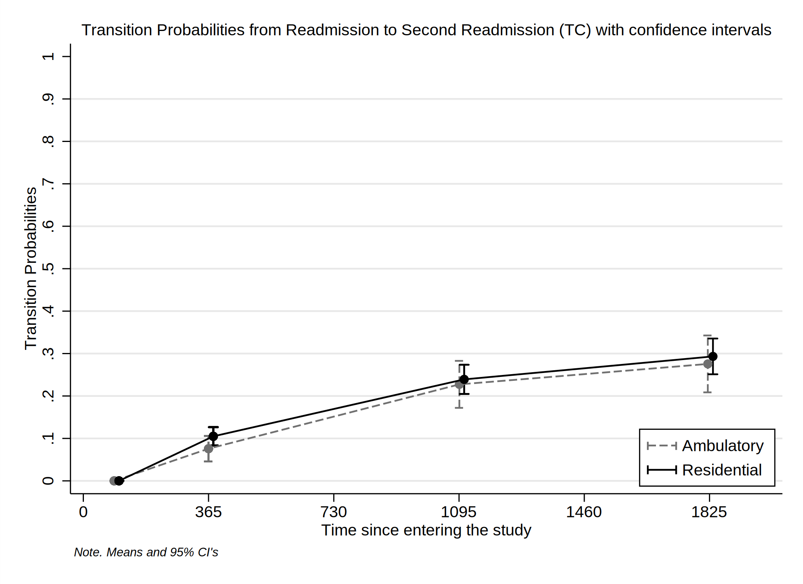
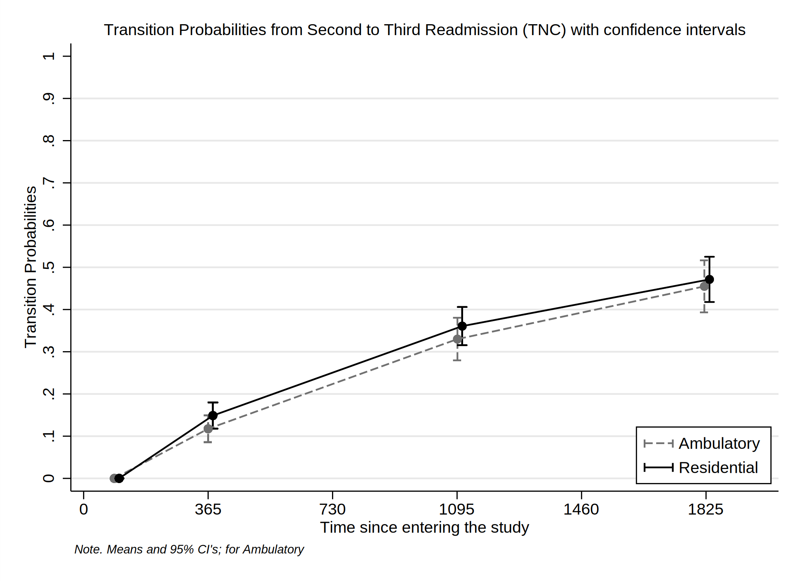

Date created: 17:52:04 14 Oct 2022.
Install commands that are unavailable or out of date.
. *<< dd_do : noout > >
. clear all
. *https://onlinelibrary.wiley.com/doi/epdf/10.1002/sim.8894
. *https://pclambert.net/pdf/Stata_Nordic2019_Lambert.pdf
. *https://slidetodoc.com/automated-reports-using-stata-chuck-huber-ph-d/
. *~Mi unidad\Alvacast\SISTRAT 2019 (github)\_supp_mstates\stata\12874_2020_1192_MOESM1_ESM.docx
. *https://opr.princeton.edu/workshops/Downloads/2015May_StataGraphicsKoffman.pdf
. *http://www.bruunisejs.dk/StataHacks/My%20commands/matprint/matprint_demo/
. *https://pure.au.dk/portal/files/140882936/ScientificWorkInStataGoneEasy.pdf
. *https://www.stata.com/meeting/nordic-and-baltic18/slides/nordic-and-baltic18_Bruun.pdf
. *https://github.com/dvorakt/TIER_exercises/blob/master/dyndoc_debt_growth/debt%20and%20growth%20stata%20dyndoc.do
.
. cap noi which predictms
C:\Users\CISS Fondecyt\ado\plus\p\predictms.ado
*! version 4.4.0 22dec2021 MJC
. if _rc==111 {
. cap noi ssc install multistate
. }
. cap noi which merlin
C:\Users\CISS Fondecyt\ado\plus\m\merlin.ado
*! version 2.1.5 18mar2022 MJC
. if _rc==111 {
. cap noi ssc install merlin
. }
. cap noi which sumat
C:\Users\CISS Fondecyt\ado\plus\s\sumat.ado
*! Part of package matrixtools v. 0.25
*! Support: Niels Henrik Bruun, niels.henrik.bruun@gmail.com
*! 2021-01-03 toxl added
. if _rc==111 {
. cap noi scc install matrixtools
. }
. cap noi which estwrite
C:\Users\CISS Fondecyt\ado\plus\e\estwrite.ado
*! version 1.2.4 04sep2009
*! version 1.0.1 15may2007 (renamed from -eststo- to -estwrite-; -append- added)
*! version 1.0.0 29apr2005 Ben Jann (ETH Zurich)
. if _rc==111 {
. cap noi ssc install estwrite
. }
. cap noi which winsor2
C:\Users\CISS Fondecyt\ado\plus\w\winsor2.ado
*! Inspirit of -winsor-(NJ Cox) and -winsorizeJ-(J Caskey)
*! Lian Yujun, arlionn@163.com, 2013-12-25
*! 1.1 2014.12.16
. if _rc==111 {
. cap noi ssc install winsor2
. }
.
We need to obtain the file and the work folder.
. mata : st_numscalar("OK", direxists("/volumes/sdrive/data//"))
. if scalar(OK) == 1 {
. cap noi cd "/volumes/sdrive/data//"
. global pathdata "/volumes/sdrive/data//"
. di "Location= ${pathdata}; Date: `c(current_date)', considering an OS `c(os)' for the user: `c(username)'"
. }
. else display "This file does not exist"
This file does not exist
.
. mata : st_numscalar("OK", direxists("E:\Mi unidad\Alvacast\SISTRAT 2019 (github)\_mult_state_ags\"))
. if scalar(OK) == 1 {
. cap noi cd "E:\Mi unidad\Alvacast\SISTRAT 2019 (github)\_mult_state_ags"
. global pathdata "E:\Mi unidad\Alvacast\SISTRAT 2019 (github)\_mult_state_ags"
. global pathdata2 "E:/Mi unidad/Alvacast/SISTRAT 2019 (github)/_mult_state_ags/"
. di "Location= ${pathdata}; Date: `c(current_date)', considering an OS `c(os)' for the user: `c(username)'"
. }
. else display "This file does not exist"
This file does not exist
.
. mata : st_numscalar("OK", direxists("C:\Users\CISS Fondecyt\Mi unidad\Alvacast\SISTRAT 2019 (github)\_mult_state_ags\"))
. if scalar(OK) == 1 {
. cap noi cd "C:\Users\CISS Fondecyt\Mi unidad\Alvacast\SISTRAT 2019 (github)"
C:\Users\CISS Fondecyt\Mi unidad\Alvacast\SISTRAT 2019 (github)
. global pathdata "C:\Users\CISS Fondecyt\Mi unidad\Alvacast\SISTRAT 2019 (github)\_mult_state_ags"
. global pathdata2 "C:/Users/CISS Fondecyt/Mi unidad/Alvacast/SISTRAT 2019 (github)/_mult_state_ags/"
. di "Location= ${pathdata}; Date: `c(current_date)', considering an OS `c(os)' for the user: `c(username)'"
Location= C:\Users\CISS Fondecyt\Mi unidad\Alvacast\SISTRAT 2019 (github)\_mult_state_ags; Date: 14 Oct 2022, considering an OS Windows for
> the user: CISS Fondecyt
. }
. else display "This file does not exist"
.
. mata : st_numscalar("OK", direxists("C:\Users\andre\Desktop\_mult_state_ags\"))
. if scalar(OK) == 1 {
. cap noi cd "C:\Users\andre\Desktop\_mult_state_ags"
. global pathdata "C:\Users\andre\Desktop\_mult_state_ags"
. global pathdata2 "C:/Users/andre/Desktop/_mult_state_ags/"
. di "Location= ${pathdata}; Date: `c(current_date)', considering an OS `c(os)' for the user: `c(username)'"
. }
. else display "This file does not exist"
This file does not exist
.
. mata : st_numscalar("OK", direxists("C:\Users\CISS Fondecyt\OneDrive\Documentos\"))
. if scalar(OK) == 1 {
. cap noi cd "C:\Users\CISS Fondecyt\Mi unidad\Alvacast\SISTRAT 2019 (github)\_mult_state_ags"
C:\Users\CISS Fondecyt\Mi unidad\Alvacast\SISTRAT 2019 (github)\_mult_state_ags
. global pathdata "C:\Users\CISS Fondecyt\Mi unidad\Alvacast\SISTRAT 2019 (github)\_mult_state_ags"
. global pathdata2 "C:/Users/CISS Fondecyt/Mi unidad/Alvacast/SISTRAT 2019 (github)/_mult_state_ags/"
. di "Location= ${pathdata}; Date: `c(current_date)', considering an OS `c(os)' for the user: `c(username)'"
Location= C:\Users\CISS Fondecyt\Mi unidad\Alvacast\SISTRAT 2019 (github)\_mult_state_ags; Date: 14 Oct 2022, considering an OS Windows for
> the user: CISS Fondecyt
. }
. else display "This file does not exist"
.
Path data= C:\Users\CISS Fondecyt\Mi unidad\Alvacast\SISTRAT 2019 (github)_mult_state_ags;
Timestamp: 14 Oct 2022, considering that is a Windows OS for the username: CISS Fondecyt
First we open the files and drop the variables that would mistakenly amplify the sample, and define labels.
The file is located and named as: C:/Users/CISS Fondecyt/Mi unidad/Alvacast/SISTRAT 2019 (github)/_mult_state_ags/nine_st_msprep_oct22.dta
. //2022-10-09
. *a) open
. //use "${pathdata2}five_st_msprep_apr22.dta", clear
. use "${pathdata2}nine_st_msprep_oct22_cc.dta", clear
. *label
. cap noi label variable id "Patient ID"
. cap noi label variable group_match "Matching group at baseline"
. cap noi label variable tipo_de_plan_res_1 "Baseline Setting (Residential)"
. cap noi label variable TD_status "Baseline treatment completion (TC)"
. cap noi label variable DWCA_status "Baseline treatment non-completion (TNC)"
. cap noi label variable Readmission_status "Readmission (TC)"
. cap noi label variable Readmissionb_status "Readmission (TNC)"
. cap noi label variable Readmission2_status "Readmission (2nd treatment) (TC)"
. cap noi label variable Readmission2b_status "Readmission (2nd treatment) (TNC)"
. cap noi label variable Readmission3_status "Readmission (3rd treatment) (TC)"
. cap noi label variable Readmission3b_status "Readmission (3rd treatment) (TNC)"
. cap noi label variable TD_time "Time to Baseline treatment completion (TC)"
. cap noi label variable DWCA_time "Time to Baseline treatment non-completion (TNC)"
. cap noi label variable Readmission_time "Time to Readmission (TC)"
. cap noi label variable Readmissionb_time "Time to Readmission (TNC)"
. cap noi label variable Readmission2_time "Time to Readmission (2nd treatment) (TC)"
. cap noi label variable Readmission2b_time "Time to Readmission (2nd treatment) (TNC)"
. cap noi label variable Readmission3_time "Time to Readmission (3rd treatment) (TC)"
. cap noi label variable Readmission3b_time "Time to Readmission (3rd treatment) (TNC)"
. cap noi label variable cens_time "Censorship from administrative ecnsorship (2019-11-13) - first admission"
>
.
. /*
> //2022-09-28 drop treatments without completion or not completion
>
> *drop if DWCA_1 ==0 & TD_1 ==0
> cap noi rename TD_1 TD_status
> cap noi rename DWCA_1 DWCA_status
> //2022-09-28 generate time-to completion/noncompletion
> gen TD_time = dias_treat_imp_sin_na_1
> replace TD_time=cens_time if TD_status==0
> gen DWCA_time = dias_treat_imp_sin_na_1
> replace DWCA_time=cens_time if DWCA_status==0
>
> //2022-09-28
> gen Readmissionb_time = Readmission_time
> gen Readmission2b_time = Readmission2_time
> gen Readmission3b_time = Readmission3_time
> gen Readmission4b_time = Readmission4_time
> gen Readmissionb_status = Readmission_status
> gen Readmission2b_status = Readmission2_status
> gen Readmission3b_status = Readmission3_status
> gen Readmission4b_status = Readmission4_status
>
> *DWCA
> replace Readmissionb_status = 0 if TD_status==1
> replace Readmission2b_status = 0 if TD_status==1
> replace Readmission3b_status = 0 if TD_status==1
> replace Readmission4b_status = 0 if TD_status==1
>
> *TD
> replace Readmission_status = 0 if DWCA_status==1
> replace Readmission2_status = 0 if DWCA_status==1
> replace Readmission3_status = 0 if DWCA_status==1
> replace Readmission4_status = 0 if DWCA_status==1
>
> *if readmission occurred, we substract the time in each treatment trajectory
> replace Readmission_time=Readmission_time-TD_time if Readmission_status==1 & TD_status==1
>
> replace Readmissionb_time=Readmissionb_time-DWCA_time if Readmission_statusb==1 & DWCA_status==1
>
> *if it is censored because readmission did not happen
> replace Readmission_time=cens_time if Readmission_status==0
> replace Readmissionb_time=cens_time if Readmissionb_status==0
>
> order id tipo_de_plan_res_1 cens_time TD_status TD_time DWCA_status DWCA_time Readmission_status Readmission_time Readmissionb_status Rea
> dmissionb_time Readmission2_status Readmission2_time Readmission2b_status Readmission2b_time Readmission3_status Readmission3_time Readmi
> ssion3b_status Readmission3b_time
>
> *do it again just in case
> replace Readmission_time=cens_time if Readmission_status==0
> replace Readmissionb_time=cens_time if Readmissionb_status==0
> replace Readmission2_time=cens_time if Readmission2_status==0
> replace Readmission2b_time=cens_time if Readmission2b_status==0
> replace Readmission3_time=cens_time if Readmission3_status==0
> replace Readmission3b_time=cens_time if Readmission3b_status==0
> replace Readmission4_time=cens_time if Readmission4_status==0
> replace Readmission4b_time=cens_time if Readmission4b_status==0
> */
.
. order id tipo_de_plan_res_1 cens_time TD_status TD_time DWCA_status DWCA_time Readmission_status Readmission_time Readmissionb_status Rea
> dmissionb_time Readmission2_status Readmission2_time Readmission2b_status Readmission2b_time Readmission3_status Readmission3_time Readmi
> ssion3b_status Readmission3b_time
.
. *I'm not sure if this is the problem. It seems that is not
. *drop if DWCA_status==0 & TD_status==0
Then we define the transition matrix:
. matrix mat_nine_states = ( ///
> .,1,2,.,.,.,.,.,. \ ///
> .,.,.,3,.,.,.,.,. \ ///
> .,.,.,.,4,.,.,.,. \ ///
> .,.,.,.,.,5,.,.,. \ ///
> .,.,.,.,.,.,6,.,. \ ///
> .,.,.,.,.,.,.,7,. \ ///
> .,.,.,.,.,.,.,.,8 \ ///
> .,.,.,.,.,.,.,.,. \ ///
> .,.,.,.,.,.,.,.,. ///
> )
. *a = completion
. *b = non-completion <<
.
. matrix colnames mat_nine_states = start TD_status DWCA_status Readmission_status Readmissionb_status Readmission2_status Readmission2b_s
> tatus Readmission3_status Readmission3b_status
. matrix rownames mat_nine_states = start TD_status DWCA_status Readmission_status Readmissionb_status Readmission2_status Readmission2b_
> status Readmission3_status Readmission3b_status
. matrix coleq mat_nine_states = to to to to to to to to to
. matrix roweq mat_nine_states = from from from from from from from from from
.
| to | > | h> | ||||||||
|---|---|---|---|---|---|---|---|---|---|---|
| start | TD_status | DWCA_status | Readmission_status | >Readmissionb_status | Readmission2_status | Readmission2b_status | Readmission3_status | Readmission3b_status h> | ||
| from | start | 1 | 2 | > | ||||||
| TD_status | 3 | > | d> | |||||||
| DWCA_status | > 4 | d> | ||||||||
| Readmission_status | > | 5 | d> | |||||||
| Readmissionb_status | > | 6 | d> | |||||||
| Readmission2_status | > | 7 | d> | |||||||
| Readmission2b_status | > | 8 d> | ||||||||
| Readmission3_status | > | d> | ||||||||
| Readmission3b_status | > | d> |
and transform the database in a long format according to the specifications and the transition matrix.
Finally, the database adopt the following structure:
Set the database as a renewal time.
. *stset _stop, enter(_start) failure(_status=1) //* scale(365.25) id(id)
.
. *file:///G:/Mi%20unidad/Alvacast/SISTRAT%202019%20(github)/_supp_mstates/stata/crowther2017%20(1).pdf
. stset _time, failure(_status==1)
failure event: _status == 1
obs. time interval: (0, _time]
exit on or before: failure
------------------------------------------------------------------------------
49,215 total observations
313 observations end on or before enter()
------------------------------------------------------------------------------
48,902 observations remaining, representing
18,617 failures in single-record/single-failure data
34864950 total analysis time at risk and under observation
at risk from t = 0
earliest observed entry t = 0
last observed exit t = 4,145
.
.
. forvalues i = 1/8 {
2. stphplot if _trans==`i', by(tipo_de_plan_res_1) ///
> scheme(sj) graphregion(color(white)) ///
> legend(pos(1) ring(0) col(1) symysize(zero) keygap(1) symxsize(large) order( 1 2) lab(1 "Ambulatory") lab(2 "Residential") size(s
> mall)) ///
> note("{it:Note. Means and 95% CI's}",size(vsmall)) ///
> title("Loglog Surv vs. logtime by Tr. Setting (Trans.=`i')", size(small)) name(stphplot_res_`i', replace) ///
> saving(stphplot_res_`i'_22_corr3_cc.gph, replace)
3. }
failure _d: _status == 1
analysis time _t: _time
(file stphplot_res_1_22_corr3_cc.gph saved)
failure _d: _status == 1
analysis time _t: _time
(file stphplot_res_2_22_corr3_cc.gph saved)
failure _d: _status == 1
analysis time _t: _time
(file stphplot_res_3_22_corr3_cc.gph saved)
failure _d: _status == 1
analysis time _t: _time
(file stphplot_res_4_22_corr3_cc.gph saved)
failure _d: _status == 1
analysis time _t: _time
(file stphplot_res_5_22_corr3_cc.gph saved)
failure _d: _status == 1
analysis time _t: _time
(file stphplot_res_6_22_corr3_cc.gph saved)
failure _d: _status == 1
analysis time _t: _time
(file stphplot_res_7_22_corr3_cc.gph saved)
failure _d: _status == 1
analysis time _t: _time
(file stphplot_res_8_22_corr3_cc.gph saved)
.
. local num 1 2 3 4 5 6 8
. foreach i of local num {
2. gr_edit .plotregion1.graph`i'.legend.draw_view.setstyle, style(no)
3. }
stphplot_res_8..plotregion1.graph1.legend.draw_view.setstyle, style(no): class type not found
r(4018);
. graph combine "${pathdata}\stphplot_res_1_22_corr3_cc.gph" "${pathdata}\stphplot_res_2_22_corr3_cc.gph" "${pathdata}\stphplot_res_3_22_co
> rr3_cc.gph" "${pathdata}\stphplot_res_4_22_corr3_cc.gph" ///
> "${pathdata}\stphplot_res_5_22_corr3_cc.gph" "${pathdata}\stphplot_res_6_22_corr3_cc.gph" "${pathdata}\stphplot_res_7_22_corr3_cc
> .gph" "${pathdata}\stphplot_res_8_22_corr3_cc.gph", ///
> colfirst ycommon xcommon iscale(*.7) imargin(tiny) graphregion(color(gs16)) ///
> title("Combination of −ln{−ln(survival)} vs. ln(analysis time)" "Renewal time", size(medium)) cols(4) /// *subtitle("{it:}", size(small))
> ///
> note("{it: Note: Ordered by columns, from up to down, left to right}", size(tiny)) ///
> name(tr_ph_ln_srv_t_res_s_corr3_cc, replace)
.
. local num 1 2 3 4 5 6 8
. foreach i of local num {
2. gr_edit .plotregion1.graph`i'.legend.draw_view.setstyle, style(no)
3. }

=============================================================================
=============================================================================
Generated an Aalen-Johanssen estimator to obtain the transition probabilities of the data from the time 0 (from admission). For this, we separated the transition probabilities according to the setting at baseline.
. *http://fmwww.bc.edu/repec/bocode/m/msaj.ado
. msaj, transmatrix(mat_nine_states) by(tipo_de_plan_res_1) ci
. rename (P_AJ_*) (ajprob*)
To generate figures, we select the valid transitions


Calculate transition probabilities from a determined states in times 90, 365 (1 year), 1096 (3 years) & 1826 (5 years).
variable trp_ajprob* not found
variable _t2 not found
(24,954 real changes made)
(file msaj_12_jun_22_corr3_cc.gph saved)

(file msaj_13_jun_22_corr3_cc.gph saved)

(file msaj_24_jun_22_corr3_cc.gph saved)

(file msaj_35_jun_22_corr3_cc.gph saved)

(file msaj_46_jun_22_corr3_cc.gph saved)

(file msaj_57_jun_22_corr3_cc.gph saved)
(file msaj_68_jun_22_corr3_cc.gph saved)

(file msaj_79_jun_22_corr3_cc.gph saved)

Transition Probabilities from Admission to Treatment completion with confidence intervals
. foreach var of varlist trp_ajprob_30_1826_12 trp_ajprob_30_1826_12_lci trp_ajprob_30_1826_12_uci {
2. scalar variable = "`var'"
3. qui summarize `var' if inrange(_t, 90, 91) & tipo_de_plan_res_1==0
4. scalar e3m_`var' = round(round(r(mean),.001)*100,.1)
5. qui summarize `var' if inrange(_t, 365, 366) & tipo_de_plan_res_1==0
6. scalar e1y_`var' = round(round(r(mean),.001)*100,.1)
7. qui summarize `var' if inrange(_t, 1096, 1096) & tipo_de_plan_res_1==0
8. scalar e3y_`var' = round(round(r(mean),.001)*100,.1)
9. qui summarize `var' if inrange(_t, 1812, 1827) & tipo_de_plan_res_1==0
10. scalar e5y_`var' = round(round(r(mean),.001)*100,.1)
11. cap noi matrix e_a_`var' = (`=scalar(e3m_`var')'\ `=scalar(e1y_`var')'\ `=scalar(scalar(e3y_`var'))'\ `=scalar(scalar(e5y_`v
> ar'))')
12. matrix colnames e_a_`var' = `var'
13. matrix rownames e_a_`var' = 3_mths 1_yr 3_yrs 5_yrs
14. qui summarize `var' if inrange(_t, 90, 91) & tipo_de_plan_res_1==1
15. scalar e3m_`var' = round(round(r(mean),.001)*100,.1)
16. qui summarize `var' if inrange(_t, 365, 366) & tipo_de_plan_res_1==1
17. scalar e1y_`var' = round(round(r(mean),.001)*100,.1)
18. qui summarize `var' if inrange(_t, 1096, 1096) & tipo_de_plan_res_1==1
19. scalar e3y_`var' = round(round(r(mean),.001)*100,.1)
20. qui summarize `var' if inrange(_t, 1812, 1827) & tipo_de_plan_res_1==1
21. scalar e5y_`var' = round(round(r(mean),.001)*100,.1)
22. cap noi matrix e_b_`var' = (`=scalar(e3m_`var')'\ `=scalar(e1y_`var')'\ `=scalar(scalar(e3y_`var'))'\ `=scalar(scalar(e5y_`v
> ar'))')
23. matrix colnames e_b_`var' = `var'
24. matrix rownames e_b_`var' = 3_mths 1_yr 3_yrs 5_yrs
25. }
.
. matrix est_msaj12 = (e_a_trp_ajprob_30_1826_12, e_a_trp_ajprob_30_1826_12_lci, e_a_trp_ajprob_30_1826_12_uci, e_b_trp_ajprob_30_1826_12,
> e_b_trp_ajprob_30_1826_12_lci, e_b_trp_ajprob_30_1826_12_uci)
. matrix colnames est_msaj12 = Est_Amb LCI UCI Est_Res LCI UCI
.
. esttab matrix(est_msaj12) using "${pathdata2}pr_msaj12_corr3_cc.html", replace
(output written to C:/Users/CISS Fondecyt/Mi unidad/Alvacast/SISTRAT 2019 (github)/_mult_state_ags/pr_msaj12_corr3_cc.html)
The transition probabilities are presented here:
| est_msaj12 | ||||||
| Est_Amb | LCI | UCI | Est_Res | LCI | UCI | |
| 3_mths | 0 | 0 | 0 | 0 | 0 | .1 |
| 1_yr | 13 | 12.1 | 13.9 | 23.4 | 22.3 | 24.5 |
| 3_yrs | 23.2 | 22.1 | 24.4 | 32.5 | 31.2 | 33.8 |
| 5_yrs | 21.4 | 20.2 | 22.6 | 28.8 | 27.4 | 30.1 |
Transition Probabilities from Admission to Treatment Non-completion
. foreach var of varlist trp_ajprob_30_1826_13 trp_ajprob_30_1826_13_lci trp_ajprob_30_1826_13_uci {
2. scalar variable = "`var'"
3. qui summarize `var' if inrange(_t, 90, 91) & tipo_de_plan_res_1==0
4. scalar e3m_`var' = round(round(r(mean),.001)*100,.1)
5. qui summarize `var' if inrange(_t, 365, 366) & tipo_de_plan_res_1==0
6. scalar e1y_`var' = round(round(r(mean),.001)*100,.1)
7. qui summarize `var' if inrange(_t, 1096, 1096) & tipo_de_plan_res_1==0
8. scalar e3y_`var' = round(round(r(mean),.001)*100,.1)
9. qui summarize `var' if inrange(_t, 1812, 1827) & tipo_de_plan_res_1==0
10. scalar e5y_`var' = round(round(r(mean),.001)*100,.1)
11. cap noi matrix e_a_`var' = (`=scalar(e3m_`var')'\ `=scalar(e1y_`var')'\ `=scalar(scalar(e3y_`var'))'\ `=scalar(scalar(e5y_`v
> ar'))')
12. matrix colnames e_a_`var' = `var'
13. matrix rownames e_a_`var' = 3_mths 1_yr 3_yrs 5_yrs
14. qui summarize `var' if inrange(_t, 90, 91) & tipo_de_plan_res_1==1
15. scalar e3m_`var' = round(round(r(mean),.001)*100,.1)
16. qui summarize `var' if inrange(_t, 365, 366) & tipo_de_plan_res_1==1
17. scalar e1y_`var' = round(round(r(mean),.001)*100,.1)
18. qui summarize `var' if inrange(_t, 1096, 1096) & tipo_de_plan_res_1==1
19. scalar e3y_`var' = round(round(r(mean),.001)*100,.1)
20. qui summarize `var' if inrange(_t, 1812, 1827) & tipo_de_plan_res_1==1
21. scalar e5y_`var' = round(round(r(mean),.001)*100,.1)
22. cap noi matrix e_b_`var' = (`=scalar(e3m_`var')'\ `=scalar(e1y_`var')'\ `=scalar(scalar(e3y_`var'))'\ `=scalar(scalar(e5y_`v
> ar'))')
23. matrix colnames e_b_`var' = `var'
24. matrix rownames e_b_`var' = 3_mths 1_yr 3_yrs 5_yrs
25. }
.
. matrix est_msaj13 = (e_a_trp_ajprob_30_1826_13, e_a_trp_ajprob_30_1826_13_lci, e_a_trp_ajprob_30_1826_13_uci, e_b_trp_ajprob_30_1826_13,
> e_b_trp_ajprob_30_1826_13_lci, e_b_trp_ajprob_30_1826_13_uci)
. matrix colnames est_msaj13 = Est_Amb LCI UCI Est_Res LCI UCI
.
. esttab matrix(est_msaj13) using "${pathdata2}pr_msaj13_corr3_cc.html", replace
(output written to C:/Users/CISS Fondecyt/Mi unidad/Alvacast/SISTRAT 2019 (github)/_mult_state_ags/pr_msaj13_corr3_cc.html)
The transition probabilities are presented here:
| est_msaj13 | ||||||
| Est_Amb | LCI | UCI | Est_Res | LCI | UCI | |
| 3_mths | .3 | .2 | .4 | .1 | .1 | .2 |
| 1_yr | 46.6 | 45.4 | 47.9 | 31.3 | 30.1 | 32.5 |
| 3_yrs | 47 | 45.7 | 48.2 | 30.7 | 29.6 | 31.9 |
| 5_yrs | 43.1 | 41.8 | 44.4 | 27.9 | 26.7 | 29 |
Transition Probabilities from Treatment Completion to Readmission
. foreach var of varlist trp_ajprob_30_1826_24 trp_ajprob_30_1826_24_lci trp_ajprob_30_1826_24_uci {
2. scalar variable = "`var'"
3. qui summarize `var' if inrange(_t, 90, 91) & tipo_de_plan_res_1==0
4. scalar e3m_`var' = round(round(r(mean),.001)*100,.1)
5. qui summarize `var' if inrange(_t, 365, 366) & tipo_de_plan_res_1==0
6. scalar e1y_`var' = round(round(r(mean),.001)*100,.1)
7. qui summarize `var' if inrange(_t, 1096, 1096) & tipo_de_plan_res_1==0
8. scalar e3y_`var' = round(round(r(mean),.001)*100,.1)
9. qui summarize `var' if inrange(_t, 1812, 1827) & tipo_de_plan_res_1==0
10. scalar e5y_`var' = round(round(r(mean),.001)*100,.1)
11. cap noi matrix e_a_`var' = (`=scalar(e3m_`var')'\ `=scalar(e1y_`var')'\ `=scalar(scalar(e3y_`var'))'\ `=scalar(scalar(e5y_`v
> ar'))')
12. matrix colnames e_a_`var' = `var'
13. matrix rownames e_a_`var' = 3_mths 1_yr 3_yrs 5_yrs
14. qui summarize `var' if inrange(_t, 90, 91) & tipo_de_plan_res_1==1
15. scalar e3m_`var' = round(round(r(mean),.001)*100,.1)
16. qui summarize `var' if inrange(_t, 365, 366) & tipo_de_plan_res_1==1
17. scalar e1y_`var' = round(round(r(mean),.001)*100,.1)
18. qui summarize `var' if inrange(_t, 1096, 1096) & tipo_de_plan_res_1==1
19. scalar e3y_`var' = round(round(r(mean),.001)*100,.1)
20. qui summarize `var' if inrange(_t, 1812, 1827) & tipo_de_plan_res_1==1
21. scalar e5y_`var' = round(round(r(mean),.001)*100,.1)
22. cap noi matrix e_b_`var' = (`=scalar(e3m_`var')'\ `=scalar(e1y_`var')'\ `=scalar(scalar(e3y_`var'))'\ `=scalar(scalar(e5y_`v
> ar'))')
23. matrix colnames e_b_`var' = `var'
24. matrix rownames e_b_`var' = 3_mths 1_yr 3_yrs 5_yrs
25. }
.
. matrix est_msaj24 = (e_a_trp_ajprob_30_1826_24, e_a_trp_ajprob_30_1826_24_lci, e_a_trp_ajprob_30_1826_24_uci, e_b_trp_ajprob_30_1826_24,
> e_b_trp_ajprob_30_1826_24_lci, e_b_trp_ajprob_30_1826_24_uci)
. matrix colnames est_msaj24 = Est_Amb LCI UCI Est_Res LCI UCI
.
. esttab matrix(est_msaj24) using "${pathdata2}pr_msaj24_corr3_cc.html", replace
(note: file C:/Users/CISS Fondecyt/Mi unidad/Alvacast/SISTRAT 2019 (github)/_mult_state_ags/pr_msaj24_corr3_cc.html not found)
(output written to C:/Users/CISS Fondecyt/Mi unidad/Alvacast/SISTRAT 2019 (github)/_mult_state_ags/pr_msaj24_corr3_cc.html)
The transition probabilities are presented here:
| est_msaj24 | ||||||
| Est_Amb | LCI | UCI | Est_Res | LCI | UCI | |
| 3_mths | 0 | 0 | 0 | 0 | 0 | .1 |
| 1_yr | 7.8 | 6.3 | 9.3 | 11.4 | 10 | 12.8 |
| 3_yrs | 16 | 13.8 | 18.2 | 22.8 | 20.9 | 24.7 |
| 5_yrs | 18.5 | 15.6 | 21.3 | 24.8 | 22.6 | 27.1 |
Transition Probabilities from Treatment Non-completion to Readmission
. foreach var of varlist trp_ajprob_30_1826_35 trp_ajprob_30_1826_35_lci trp_ajprob_30_1826_35_uci {
2. scalar variable = "`var'"
3. qui summarize `var' if inrange(_t, 90, 91) & tipo_de_plan_res_1==0
4. scalar e3m_`var' = round(round(r(mean),.001)*100,.1)
5. qui summarize `var' if inrange(_t, 365, 366) & tipo_de_plan_res_1==0
6. scalar e1y_`var' = round(round(r(mean),.001)*100,.1)
7. qui summarize `var' if inrange(_t, 1096, 1096) & tipo_de_plan_res_1==0
8. scalar e3y_`var' = round(round(r(mean),.001)*100,.1)
9. qui summarize `var' if inrange(_t, 1812, 1827) & tipo_de_plan_res_1==0
10. scalar e5y_`var' = round(round(r(mean),.001)*100,.1)
11. cap noi matrix e_a_`var' = (`=scalar(e3m_`var')'\ `=scalar(e1y_`var')'\ `=scalar(scalar(e3y_`var'))'\ `=scalar(scalar(e5y_`v
> ar'))')
12. matrix colnames e_a_`var' = `var'
13. matrix rownames e_a_`var' = 3_mths 1_yr 3_yrs 5_yrs
14. qui summarize `var' if inrange(_t, 90, 91) & tipo_de_plan_res_1==1
15. scalar e3m_`var' = round(round(r(mean),.001)*100,.1)
16. qui summarize `var' if inrange(_t, 365, 366) & tipo_de_plan_res_1==1
17. scalar e1y_`var' = round(round(r(mean),.001)*100,.1)
18. qui summarize `var' if inrange(_t, 1096, 1096) & tipo_de_plan_res_1==1
19. scalar e3y_`var' = round(round(r(mean),.001)*100,.1)
20. qui summarize `var' if inrange(_t, 1812, 1827) & tipo_de_plan_res_1==1
21. scalar e5y_`var' = round(round(r(mean),.001)*100,.1)
22. cap noi matrix e_b_`var' = (`=scalar(e3m_`var')'\ `=scalar(e1y_`var')'\ `=scalar(scalar(e3y_`var'))'\ `=scalar(scalar(e5y_`v
> ar'))')
23. matrix colnames e_b_`var' = `var'
24. matrix rownames e_b_`var' = 3_mths 1_yr 3_yrs 5_yrs
25. }
.
. matrix est_msaj35 = (e_a_trp_ajprob_30_1826_35, e_a_trp_ajprob_30_1826_35_lci, e_a_trp_ajprob_30_1826_35_uci, e_b_trp_ajprob_30_1826_35,
> e_b_trp_ajprob_30_1826_35_lci, e_b_trp_ajprob_30_1826_35_uci)
. matrix colnames est_msaj35 = Est_Amb LCI UCI Est_Res LCI UCI
.
. esttab matrix(est_msaj35) using "${pathdata2}pr_msaj35_corr3_cc.html", replace
(note: file C:/Users/CISS Fondecyt/Mi unidad/Alvacast/SISTRAT 2019 (github)/_mult_state_ags/pr_msaj35_corr3_cc.html not found)
(output written to C:/Users/CISS Fondecyt/Mi unidad/Alvacast/SISTRAT 2019 (github)/_mult_state_ags/pr_msaj35_corr3_cc.html)
The transition probabilities are presented here:
| est_msaj35 | ||||||
| Est_Amb | LCI | UCI | Est_Res | LCI | UCI | |
| 3_mths | .1 | 0 | .1 | 0 | 0 | .1 |
| 1_yr | 10 | 9.2 | 10.9 | 13.5 | 12.4 | 14.6 |
| 3_yrs | 18 | 16.9 | 19.2 | 23.1 | 21.6 | 24.5 |
| 5_yrs | 20 | 18.5 | 21.4 | 24.4 | 22.8 | 26 |
Transition Probabilities from Readmission to Second Readmission (TC)
. foreach var of varlist trp_ajprob_30_1826_46 trp_ajprob_30_1826_46_lci trp_ajprob_30_1826_46_uci {
2. scalar variable = "`var'"
3. qui summarize `var' if inrange(_t, 90, 91) & tipo_de_plan_res_1==0
4. scalar e3m_`var' = round(round(r(mean),.001)*100,.1)
5. qui summarize `var' if inrange(_t, 365, 366) & tipo_de_plan_res_1==0
6. scalar e1y_`var' = round(round(r(mean),.001)*100,.1)
7. qui summarize `var' if inrange(_t, 1096, 1096) & tipo_de_plan_res_1==0
8. scalar e3y_`var' = round(round(r(mean),.001)*100,.1)
9. qui summarize `var' if inrange(_t, 1812, 1827) & tipo_de_plan_res_1==0
10. scalar e5y_`var' = round(round(r(mean),.001)*100,.1)
11. cap noi matrix e_a_`var' = (`=scalar(e3m_`var')'\ `=scalar(e1y_`var')'\ `=scalar(scalar(e3y_`var'))'\ `=scalar(scalar(e5y_`v
> ar'))')
12. matrix colnames e_a_`var' = `var'
13. matrix rownames e_a_`var' = 3_mths 1_yr 3_yrs 5_yrs
14. qui summarize `var' if inrange(_t, 90, 91) & tipo_de_plan_res_1==1
15. scalar e3m_`var' = round(round(r(mean),.001)*100,.1)
16. qui summarize `var' if inrange(_t, 365, 366) & tipo_de_plan_res_1==1
17. scalar e1y_`var' = round(round(r(mean),.001)*100,.1)
18. qui summarize `var' if inrange(_t, 1096, 1096) & tipo_de_plan_res_1==1
19. scalar e3y_`var' = round(round(r(mean),.001)*100,.1)
20. qui summarize `var' if inrange(_t, 1812, 1827) & tipo_de_plan_res_1==1
21. scalar e5y_`var' = round(round(r(mean),.001)*100,.1)
22. cap noi matrix e_b_`var' = (`=scalar(e3m_`var')'\ `=scalar(e1y_`var')'\ `=scalar(scalar(e3y_`var'))'\ `=scalar(scalar(e5y_`v
> ar'))')
23. matrix colnames e_b_`var' = `var'
24. matrix rownames e_b_`var' = 3_mths 1_yr 3_yrs 5_yrs
25. }
.
. matrix est_msaj46 = (e_a_trp_ajprob_30_1826_46, e_a_trp_ajprob_30_1826_46_lci, e_a_trp_ajprob_30_1826_46_uci, e_b_trp_ajprob_30_1826_46,
> e_b_trp_ajprob_30_1826_46_lci, e_b_trp_ajprob_30_1826_46_uci)
. matrix colnames est_msaj46 = Est_Amb LCI UCI Est_Res LCI UCI
.
. esttab matrix(est_msaj46) using "${pathdata2}pr_msaj46_corr3_cc.html", replace
(note: file C:/Users/CISS Fondecyt/Mi unidad/Alvacast/SISTRAT 2019 (github)/_mult_state_ags/pr_msaj46_corr3_cc.html not found)
(output written to C:/Users/CISS Fondecyt/Mi unidad/Alvacast/SISTRAT 2019 (github)/_mult_state_ags/pr_msaj46_corr3_cc.html)
The transition probabilities are presented here:
| est_msaj46 | ||||||
| Est_Amb | LCI | UCI | Est_Res | LCI | UCI | |
| 3_mths | 0 | 0 | 0 | 0 | 0 | 0 |
| 1_yr | .8 | 0 | 2 | .4 | 0 | .8 |
| 3_yrs | 10.9 | 6.6 | 15.2 | 14.3 | 11.6 | 17 |
| 5_yrs | 26.5 | 19.1 | 33.9 | 28.3 | 24 | 32.6 |
Transition Probabilities from Readmission to Second Readmission (TNC)
. foreach var of varlist trp_ajprob_30_1826_57 trp_ajprob_30_1826_57_lci trp_ajprob_30_1826_57_uci {
2. scalar variable = "`var'"
3. qui summarize `var' if inrange(_t, 90, 91) & tipo_de_plan_res_1==0
4. scalar e3m_`var' = round(round(r(mean),.001)*100,.1)
5. qui summarize `var' if inrange(_t, 365, 366) & tipo_de_plan_res_1==0
6. scalar e1y_`var' = round(round(r(mean),.001)*100,.1)
7. qui summarize `var' if inrange(_t, 1096, 1096) & tipo_de_plan_res_1==0
8. scalar e3y_`var' = round(round(r(mean),.001)*100,.1)
9. qui summarize `var' if inrange(_t, 1812, 1827) & tipo_de_plan_res_1==0
10. scalar e5y_`var' = round(round(r(mean),.001)*100,.1)
11. cap noi matrix e_a_`var' = (`=scalar(e3m_`var')'\ `=scalar(e1y_`var')'\ `=scalar(scalar(e3y_`var'))'\ `=scalar(scalar(e5y_`v
> ar'))')
12. matrix colnames e_a_`var' = `var'
13. matrix rownames e_a_`var' = 3_mths 1_yr 3_yrs 5_yrs
14. qui summarize `var' if inrange(_t, 90, 91) & tipo_de_plan_res_1==1
15. scalar e3m_`var' = round(round(r(mean),.001)*100,.1)
16. qui summarize `var' if inrange(_t, 365, 366) & tipo_de_plan_res_1==1
17. scalar e1y_`var' = round(round(r(mean),.001)*100,.1)
18. qui summarize `var' if inrange(_t, 1096, 1096) & tipo_de_plan_res_1==1
19. scalar e3y_`var' = round(round(r(mean),.001)*100,.1)
20. qui summarize `var' if inrange(_t, 1812, 1827) & tipo_de_plan_res_1==1
21. scalar e5y_`var' = round(round(r(mean),.001)*100,.1)
22. cap noi matrix e_b_`var' = (`=scalar(e3m_`var')'\ `=scalar(e1y_`var')'\ `=scalar(scalar(e3y_`var'))'\ `=scalar(scalar(e5y_`v
> ar'))')
23. matrix colnames e_b_`var' = `var'
24. matrix rownames e_b_`var' = 3_mths 1_yr 3_yrs 5_yrs
25. }
.
. matrix est_msaj57 = (e_a_trp_ajprob_30_1826_57, e_a_trp_ajprob_30_1826_57_lci, e_a_trp_ajprob_30_1826_57_uci, e_b_trp_ajprob_30_1826_57,
> e_b_trp_ajprob_30_1826_57_lci, e_b_trp_ajprob_30_1826_57_uci)
. matrix colnames est_msaj57 = Est_Amb LCI UCI Est_Res LCI UCI
.
. esttab matrix(est_msaj57) using "${pathdata2}pr_msaj57_corr3_cc.html", replace
(note: file C:/Users/CISS Fondecyt/Mi unidad/Alvacast/SISTRAT 2019 (github)/_mult_state_ags/pr_msaj57_corr3_cc.html not found)
(output written to C:/Users/CISS Fondecyt/Mi unidad/Alvacast/SISTRAT 2019 (github)/_mult_state_ags/pr_msaj57_corr3_cc.html)
The transition probabilities are presented here:
| est_msaj57 | ||||||
| Est_Amb | LCI | UCI | Est_Res | LCI | UCI | |
| 3_mths | 0 | 0 | 0 | 0 | 0 | 0 |
| 1_yr | 1.8 | 1.1 | 2.5 | 3.1 | 2.2 | 3.9 |
| 3_yrs | 19.8 | 17.5 | 22.2 | 20.2 | 18.1 | 22.3 |
| 5_yrs | 27.7 | 24.2 | 31.1 | 26.2 | 23.2 | 29.1 |
Transition Probabilities from Second to Third Readmission (TC)
. foreach var of varlist trp_ajprob_30_1826_68 trp_ajprob_30_1826_68_lci trp_ajprob_30_1826_68_uci {
2. scalar variable = "`var'"
3. qui summarize `var' if inrange(_t, 90, 91) & tipo_de_plan_res_1==0
4. scalar e3m_`var' = round(round(r(mean),.001)*100,.1)
5. qui summarize `var' if inrange(_t, 365, 366) & tipo_de_plan_res_1==0
6. scalar e1y_`var' = round(round(r(mean),.001)*100,.1)
7. qui summarize `var' if inrange(_t, 1096, 1096) & tipo_de_plan_res_1==0
8. scalar e3y_`var' = round(round(r(mean),.001)*100,.1)
9. qui summarize `var' if inrange(_t, 1812, 1827) & tipo_de_plan_res_1==0
10. scalar e5y_`var' = round(round(r(mean),.001)*100,.1)
11. cap noi matrix e_a_`var' = (`=scalar(e3m_`var')'\ `=scalar(e1y_`var')'\ `=scalar(scalar(e3y_`var'))'\ `=scalar(scalar(e5y_`v
> ar'))')
12. matrix colnames e_a_`var' = `var'
13. matrix rownames e_a_`var' = 3_mths 1_yr 3_yrs 5_yrs
14. qui summarize `var' if inrange(_t, 90, 91) & tipo_de_plan_res_1==1
15. scalar e3m_`var' = round(round(r(mean),.001)*100,.1)
16. qui summarize `var' if inrange(_t, 365, 366) & tipo_de_plan_res_1==1
17. scalar e1y_`var' = round(round(r(mean),.001)*100,.1)
18. qui summarize `var' if inrange(_t, 1096, 1096) & tipo_de_plan_res_1==1
19. scalar e3y_`var' = round(round(r(mean),.001)*100,.1)
20. qui summarize `var' if inrange(_t, 1812, 1827) & tipo_de_plan_res_1==1
21. scalar e5y_`var' = round(round(r(mean),.001)*100,.1)
22. cap noi matrix e_b_`var' = (`=scalar(e3m_`var')'\ `=scalar(e1y_`var')'\ `=scalar(scalar(e3y_`var'))'\ `=scalar(scalar(e5y_`v
> ar'))')
23. matrix colnames e_b_`var' = `var'
24. matrix rownames e_b_`var' = 3_mths 1_yr 3_yrs 5_yrs
25. }
.
. matrix est_msaj68 = (e_a_trp_ajprob_30_1826_68, e_a_trp_ajprob_30_1826_68_lci, e_a_trp_ajprob_30_1826_68_uci, e_b_trp_ajprob_30_1826_68,
> e_b_trp_ajprob_30_1826_68_lci, e_b_trp_ajprob_30_1826_68_uci)
. matrix colnames est_msaj68 = Est_Amb LCI UCI Est_Res LCI UCI
.
. esttab matrix(est_msaj68) using "${pathdata2}pr_msaj68_corr3_cc.html", replace
(note: file C:/Users/CISS Fondecyt/Mi unidad/Alvacast/SISTRAT 2019 (github)/_mult_state_ags/pr_msaj68_corr3_cc.html not found)
(output written to C:/Users/CISS Fondecyt/Mi unidad/Alvacast/SISTRAT 2019 (github)/_mult_state_ags/pr_msaj68_corr3_cc.html)
The transition probabilities are presented here:
| est_msaj68 | ||||||
| Est_Amb | LCI | UCI | Est_Res | LCI | UCI | |
| 3_mths | 0 | 0 | 0 | 0 | 0 | 0 |
| 1_yr | 0 | 0 | 0 | 0 | 0 | 0 |
| 3_yrs | 8.6 | 0 | 17.9 | 9.9 | 4.8 | 15.1 |
| 5_yrs | 22.6 | 7.7 | 37.6 | 30.8 | 22.1 | 39.5 |
Transition Probabilities from Second to Third Readmission (TNC)
. foreach var of varlist trp_ajprob_30_1826_79 trp_ajprob_30_1826_79_lci trp_ajprob_30_1826_79_uci {
2. scalar variable = "`var'"
3. qui summarize `var' if inrange(_t, 90, 91) & tipo_de_plan_res_1==0
4. scalar e3m_`var' = round(round(r(mean),.001)*100,.1)
5. qui summarize `var' if inrange(_t, 365, 366) & tipo_de_plan_res_1==0
6. scalar e1y_`var' = round(round(r(mean),.001)*100,.1)
7. qui summarize `var' if inrange(_t, 1096, 1096) & tipo_de_plan_res_1==0
8. scalar e3y_`var' = round(round(r(mean),.001)*100,.1)
9. qui summarize `var' if inrange(_t, 1812, 1827) & tipo_de_plan_res_1==0
10. scalar e5y_`var' = round(round(r(mean),.001)*100,.1)
11. cap noi matrix e_a_`var' = (`=scalar(e3m_`var')'\ `=scalar(e1y_`var')'\ `=scalar(scalar(e3y_`var'))'\ `=scalar(scalar(e5y_`v
> ar'))')
12. matrix colnames e_a_`var' = `var'
13. matrix rownames e_a_`var' = 3_mths 1_yr 3_yrs 5_yrs
14. qui summarize `var' if inrange(_t, 90, 91) & tipo_de_plan_res_1==1
15. scalar e3m_`var' = round(round(r(mean),.001)*100,.1)
16. qui summarize `var' if inrange(_t, 365, 366) & tipo_de_plan_res_1==1
17. scalar e1y_`var' = round(round(r(mean),.001)*100,.1)
18. qui summarize `var' if inrange(_t, 1096, 1096) & tipo_de_plan_res_1==1
19. scalar e3y_`var' = round(round(r(mean),.001)*100,.1)
20. qui summarize `var' if inrange(_t, 1812, 1827) & tipo_de_plan_res_1==1
21. scalar e5y_`var' = round(round(r(mean),.001)*100,.1)
22. cap noi matrix e_b_`var' = (`=scalar(e3m_`var')'\ `=scalar(e1y_`var')'\ `=scalar(scalar(e3y_`var'))'\ `=scalar(scalar(e5y_`v
> ar'))')
23. matrix colnames e_b_`var' = `var'
24. matrix rownames e_b_`var' = 3_mths 1_yr 3_yrs 5_yrs
25. }
.
. matrix est_msaj79 = (e_a_trp_ajprob_30_1826_79, e_a_trp_ajprob_30_1826_79_lci, e_a_trp_ajprob_30_1826_79_uci, e_b_trp_ajprob_30_1826_79,
> e_b_trp_ajprob_30_1826_79_lci, e_b_trp_ajprob_30_1826_79_uci)
. matrix colnames est_msaj79 = Est_Amb LCI UCI Est_Res LCI UCI
.
. esttab matrix(est_msaj79) using "${pathdata2}pr_msaj79_corr3_cc.html", replace
(note: file C:/Users/CISS Fondecyt/Mi unidad/Alvacast/SISTRAT 2019 (github)/_mult_state_ags/pr_msaj79_corr3_cc.html not found)
(output written to C:/Users/CISS Fondecyt/Mi unidad/Alvacast/SISTRAT 2019 (github)/_mult_state_ags/pr_msaj79_corr3_cc.html)
The transition probabilities are presented here:
| est_msaj79 | ||||||
| Est_Amb | LCI | UCI | Est_Res | LCI | UCI | |
| 3_mths | 0 | 0 | 0 | 0 | 0 | 0 |
| 1_yr | 1 | 0 | 2 | .7 | 0 | 1.5 |
| 3_yrs | 14.5 | 10.2 | 18.8 | 18.5 | 14.5 | 22.6 |
| 5_yrs | 39.8 | 32.9 | 46.6 | 45.3 | 39.4 | 51.1 |
=============================================================================
=============================================================================
We generated a list of parametric and intercept-only survival models with different distributions (Exponential, Weibull, Gompertz, Log-logistic, Log-normal & Generalized gamma. Aditionally, we defined a series of Royston-Parmar models with a function of restricted cubic splines, in which the knots (#df -1) are defined in each percentile of the distribution. We saved the estimates in the file called `parmodels_m_jun_22_corr3_cc’.
. forvalues i = 1/8 {
2. // Exponential
. di in yellow "{bf: ***********}"
3. di in yellow "{bf: Transition `i': family Exp (intercept-only)}"
4. di in yellow "{bf: ***********}"
5. set seed 2125
6. qui cap noi merlin (_time if _trans == `i', family(exponential, fail(_status)))
7. estimates store m`i'_exp
8. // Weibull
. di in yellow "{bf: ***********}"
9. di in yellow "{bf: Transition `i': family Wei (intercept-only)}"
10. di in yellow "{bf: ***********}"
11. set seed 2125
12. qui cap noi merlin (_time if _trans == `i', family(weibull, fail(_status)))
13. estimates store m`i'_weib
14. // Gompertz
. di in yellow "{bf: ***********}"
15. di in yellow "{bf: Transition `i': family Gomp (intercept-only)}"
16. di in yellow "{bf: ***********}"
17. set seed 2125
18. qui cap noi merlin (_time if _trans == `i', family(gompertz, fail(_status)))
19. estimates store m`i'_gom
20. // Log logistic
. di in yellow "{bf: ***********}"
21. di in yellow "{bf: Transition `i': family Logl (intercept-only)}"
22. di in yellow "{bf: ***********}"
23. set seed 2125
24. qui cap noi merlin (_time if _trans == `i', family(loglogistic, fail(_status)))
25. estimates store m`i'_logl
26. // Log normal
. di in yellow "{bf: ***********}"
27. di in yellow "{bf: Transition `i': family Logn (intercept-only)}"
28. di in yellow "{bf: ***********}"
29. set seed 2125
30. qui cap noi merlin (_time if _trans == `i', family(lognormal, fail(_status)))
31. estimates store m`i'_logn
32. // Generalised gamma
. di in yellow "{bf: ***********}"
33. di in yellow "{bf: Transition `i': family Ggam (intercept-only)}"
34. di in yellow "{bf: ***********}"
35. set seed 2125
36. qui cap noi merlin (_time if _trans == `i', family(ggamma, fail(_status)))
37. estimates store m`i'_ggam
38. // Royston Parmar models
. forvalues j=2/10 {
39. set seed 2125
40. di in yellow "{bf: ***********}"
41. di in yellow "{bf: Transition `i': family RP`j' (intercept-only)}"
42. di in yellow "{bf: ***********}"
43. qui cap noi merlin (_time if _trans == `i', family(rp, df(`j') fail(_status)))
44. estimates store m`i'_rp`j'
45. }
46. }
***********
Transition 1: family Exp (intercept-only)
***********
Fitting full model:
Iteration 0: log likelihood = -6471715
Iteration 1: log likelihood = -33311.635
Iteration 2: log likelihood = -31002.511
Iteration 3: log likelihood = -30976.234
Iteration 4: log likelihood = -30976.153
Iteration 5: log likelihood = -30976.153
Fixed effects regression model Number of obs = 15,528
Log likelihood = -30976.153
------------------------------------------------------------------------------
| Coef. Std. Err. z P>|z| [95% Conf. Interval]
-------------+----------------------------------------------------------------
_time: |
_cons | -7.479648 .0165453 -452.07 0.000 -7.512076 -7.447219
------------------------------------------------------------------------------
***********
Transition 1: family Wei (intercept-only)
***********
Fitting full model:
Iteration 0: log likelihood = -6471715
Iteration 1: log likelihood = -33311.573 (not concave)
Iteration 2: log likelihood = -31289.436
Iteration 3: log likelihood = -31017.327
Iteration 4: log likelihood = -30959.156
Iteration 5: log likelihood = -30954.951
Iteration 6: log likelihood = -30954.943
Iteration 7: log likelihood = -30954.943
Fixed effects regression model Number of obs = 15,528
Log likelihood = -30954.943
------------------------------------------------------------------------------
| Coef. Std. Err. z P>|z| [95% Conf. Interval]
-------------+----------------------------------------------------------------
_time: |
_cons | -7.014746 .0717831 -97.72 0.000 -7.155438 -6.874054
log(gamma) | -.0715326 .0112182 -6.38 0.000 -.0935199 -.0495454
------------------------------------------------------------------------------
***********
Transition 1: family Gomp (intercept-only)
***********
Fitting full model:
Iteration 0: log likelihood = -1.97e+181
Iteration 1: log likelihood = -1801294.6 (not concave)
Iteration 2: log likelihood = -1765268.7
Iteration 3: log likelihood = -1765268.7
Fixed effects regression model Number of obs = 15,528
Log likelihood = -1765268.7
------------------------------------------------------------------------------
| Coef. Std. Err. z P>|z| [95% Conf. Interval]
-------------+----------------------------------------------------------------
_time: |
_cons | -523.4004 . . . . .
gamma | .1182577 . . . . .
------------------------------------------------------------------------------
***********
Transition 1: family Logl (intercept-only)
***********
Fitting full model:
Iteration 0: log likelihood = -101818.73 (not concave)
Iteration 1: log likelihood = -36275.858 (not concave)
Iteration 2: log likelihood = -31118.068
Iteration 3: log likelihood = -30545.749
Iteration 4: log likelihood = -30424.889
Iteration 5: log likelihood = -30424.682
Iteration 6: log likelihood = -30424.682
Fixed effects regression model Number of obs = 15,528
Log likelihood = -30424.682
------------------------------------------------------------------------------
| Coef. Std. Err. z P>|z| [95% Conf. Interval]
-------------+----------------------------------------------------------------
_time: |
_cons | 6.861875 .019756 347.33 0.000 6.823153 6.900596
dap:1 | -.2531221 .0124166 -20.39 0.000 -.2774583 -.228786
------------------------------------------------------------------------------
***********
Transition 1: family Logn (intercept-only)
***********
Fitting full model:
initial values not feasible
-> Starting values failed - trying zero vector
initial values not feasible
***********
Transition 1: family Ggam (intercept-only)
***********
Fitting full model:
Iteration 0: log likelihood = -135439.44 (not concave)
Iteration 1: log likelihood = -33361.22
Iteration 2: log likelihood = -33351.886 (not concave)
Iteration 3: log likelihood = -30826.501
Iteration 4: log likelihood = -30519.494
Iteration 5: log likelihood = -30497.457
Iteration 6: log likelihood = -30497.415
Iteration 7: log likelihood = -30497.415
Fixed effects regression model Number of obs = 15,528
Log likelihood = -30497.415
------------------------------------------------------------------------------
| Coef. Std. Err. z P>|z| [95% Conf. Interval]
-------------+----------------------------------------------------------------
_time: |
_cons | 7.071379 .0238057 297.05 0.000 7.024721 7.118037
log(sigma) | .3521051 .0146705 24.00 0.000 .3233515 .3808587
kappa | .0940889 .0261877 3.59 0.000 .0427619 .1454158
------------------------------------------------------------------------------
***********
Transition 1: family RP2 (intercept-only)
***********
variables created: _rcs1_1 to _rcs1_2
Fitting full model:
Iteration 0: log likelihood = -45032.107
Iteration 1: log likelihood = -30645.772
Iteration 2: log likelihood = -29931.407
Iteration 3: log likelihood = -29834.511
Iteration 4: log likelihood = -29834.42
Iteration 5: log likelihood = -29834.42
Fixed effects regression model Number of obs = 15,528
Log likelihood = -29834.42
------------------------------------------------------------------------------
| Coef. Std. Err. z P>|z| [95% Conf. Interval]
-------------+----------------------------------------------------------------
_time: |
_cons | -3.161986 .0398571 -79.33 0.000 -3.240105 -3.083868
------------------------------------------------------------------------------
Warning: Baseline spline coefficients not shown - use ml display
***********
Transition 1: family RP3 (intercept-only)
***********
variables created: _rcs1_1 to _rcs1_3
Fitting full model:
Iteration 0: log likelihood = -45032.107
Iteration 1: log likelihood = -32858.108
Iteration 2: log likelihood = -30478.32
Iteration 3: log likelihood = -30108.582
Iteration 4: log likelihood = -29958.263
Iteration 5: log likelihood = -29831.774
Iteration 6: log likelihood = -29615.534
Iteration 7: log likelihood = -29030.404
Iteration 8: log likelihood = -28659.657
Iteration 9: log likelihood = -28654.307
Iteration 10: log likelihood = -28654.212
Iteration 11: log likelihood = -28654.211
Fixed effects regression model Number of obs = 15,528
Log likelihood = -28654.211
------------------------------------------------------------------------------
| Coef. Std. Err. z P>|z| [95% Conf. Interval]
-------------+----------------------------------------------------------------
_time: |
_cons | -2.619464 .02928 -89.46 0.000 -2.676852 -2.562076
------------------------------------------------------------------------------
Warning: Baseline spline coefficients not shown - use ml display
***********
Transition 1: family RP4 (intercept-only)
***********
variables created: _rcs1_1 to _rcs1_4
Fitting full model:
Iteration 0: log likelihood = -45032.107
Iteration 1: log likelihood = -32010.929
Iteration 2: log likelihood = -30860.714
Iteration 3: log likelihood = -30426.002
Iteration 4: log likelihood = -30258.045
Iteration 5: log likelihood = -29972.754
Iteration 6: log likelihood = -29187.293
Iteration 7: log likelihood = -28620.121
Iteration 8: log likelihood = -28609.752
Iteration 9: log likelihood = -28609.713
Iteration 10: log likelihood = -28609.713
Fixed effects regression model Number of obs = 15,528
Log likelihood = -28609.713
------------------------------------------------------------------------------
| Coef. Std. Err. z P>|z| [95% Conf. Interval]
-------------+----------------------------------------------------------------
_time: |
_cons | -2.76646 .0346362 -79.87 0.000 -2.834346 -2.698574
------------------------------------------------------------------------------
Warning: Baseline spline coefficients not shown - use ml display
***********
Transition 1: family RP5 (intercept-only)
***********
variables created: _rcs1_1 to _rcs1_5
Fitting full model:
Iteration 0: log likelihood = -45032.107
Iteration 1: log likelihood = -32031.499
Iteration 2: log likelihood = -30877.441
Iteration 3: log likelihood = -30656.144
Iteration 4: log likelihood = -30463.436
Iteration 5: log likelihood = -30142.447
Iteration 6: log likelihood = -28735.701
Iteration 7: log likelihood = -28601.441
Iteration 8: log likelihood = -28598.65
Iteration 9: log likelihood = -28598.59
Iteration 10: log likelihood = -28598.589
Fixed effects regression model Number of obs = 15,528
Log likelihood = -28598.589
------------------------------------------------------------------------------
| Coef. Std. Err. z P>|z| [95% Conf. Interval]
-------------+----------------------------------------------------------------
_time: |
_cons | -2.763017 .0353874 -78.08 0.000 -2.832375 -2.693659
------------------------------------------------------------------------------
Warning: Baseline spline coefficients not shown - use ml display
***********
Transition 1: family RP6 (intercept-only)
***********
variables created: _rcs1_1 to _rcs1_6
Fitting full model:
Iteration 0: log likelihood = -45032.107
Iteration 1: log likelihood = -32039.281
Iteration 2: log likelihood = -30883.76
Iteration 3: log likelihood = -30662.403
Iteration 4: log likelihood = -30469.099
Iteration 5: log likelihood = -30143.359
Iteration 6: log likelihood = -28781.017
Iteration 7: log likelihood = -28578.589
Iteration 8: log likelihood = -28573.374
Iteration 9: log likelihood = -28573.159
Iteration 10: log likelihood = -28573.142
Iteration 11: log likelihood = -28573.142
Fixed effects regression model Number of obs = 15,528
Log likelihood = -28573.142
------------------------------------------------------------------------------
| Coef. Std. Err. z P>|z| [95% Conf. Interval]
-------------+----------------------------------------------------------------
_time: |
_cons | -2.785895 .0365644 -76.19 0.000 -2.85756 -2.71423
------------------------------------------------------------------------------
Warning: Baseline spline coefficients not shown - use ml display
***********
Transition 1: family RP7 (intercept-only)
***********
variables created: _rcs1_1 to _rcs1_7
Fitting full model:
Iteration 0: log likelihood = -45032.107
Iteration 1: log likelihood = -32017.545
Iteration 2: log likelihood = -30861.588
Iteration 3: log likelihood = -30639.621
Iteration 4: log likelihood = -30444.592
Iteration 5: log likelihood = -30115.705
Iteration 6: log likelihood = -28614.934
Iteration 7: log likelihood = -28554.043
Iteration 8: log likelihood = -28552.896
Iteration 9: log likelihood = -28552.796
Iteration 10: log likelihood = -28552.794
Fixed effects regression model Number of obs = 15,528
Log likelihood = -28552.794
------------------------------------------------------------------------------
| Coef. Std. Err. z P>|z| [95% Conf. Interval]
-------------+----------------------------------------------------------------
_time: |
_cons | -2.756342 .0363782 -75.77 0.000 -2.827642 -2.685042
------------------------------------------------------------------------------
Warning: Baseline spline coefficients not shown - use ml display
***********
Transition 1: family RP8 (intercept-only)
***********
variables created: _rcs1_1 to _rcs1_8
Fitting full model:
Iteration 0: log likelihood = -45032.107
Iteration 1: log likelihood = -32005.516
Iteration 2: log likelihood = -30848.238
Iteration 3: log likelihood = -30627.123
Iteration 4: log likelihood = -30433.955
Iteration 5: log likelihood = -30105.519
Iteration 6: log likelihood = -29205.467
Iteration 7: log likelihood = -28557.742
Iteration 8: log likelihood = -28544.149
Iteration 9: log likelihood = -28544.072
Iteration 10: log likelihood = -28544.072
Fixed effects regression model Number of obs = 15,528
Log likelihood = -28544.072
------------------------------------------------------------------------------
| Coef. Std. Err. z P>|z| [95% Conf. Interval]
-------------+----------------------------------------------------------------
_time: |
_cons | -2.740851 .0361615 -75.79 0.000 -2.811726 -2.669975
------------------------------------------------------------------------------
Warning: Baseline spline coefficients not shown - use ml display
***********
Transition 1: family RP9 (intercept-only)
***********
variables created: _rcs1_1 to _rcs1_9
Fitting full model:
Iteration 0: log likelihood = -45032.107
Iteration 1: log likelihood = -31998.858
Iteration 2: log likelihood = -30839.716
Iteration 3: log likelihood = -30619.199
Iteration 4: log likelihood = -30427.36
Iteration 5: log likelihood = -30098.599
Iteration 6: log likelihood = -29196.135
Iteration 7: log likelihood = -28548.597
Iteration 8: log likelihood = -28535.149
Iteration 9: log likelihood = -28535.074
Iteration 10: log likelihood = -28535.074
Fixed effects regression model Number of obs = 15,528
Log likelihood = -28535.074
------------------------------------------------------------------------------
| Coef. Std. Err. z P>|z| [95% Conf. Interval]
-------------+----------------------------------------------------------------
_time: |
_cons | -2.731263 .0360415 -75.78 0.000 -2.801904 -2.660623
------------------------------------------------------------------------------
Warning: Baseline spline coefficients not shown - use ml display
***********
Transition 1: family RP10 (intercept-only)
***********
variables created: _rcs1_1 to _rcs1_10
Fitting full model:
Iteration 0: log likelihood = -45032.107
Iteration 1: log likelihood = -31996.264
Iteration 2: log likelihood = -30836.408
Iteration 3: log likelihood = -30616.013
Iteration 4: log likelihood = -30424.433
Iteration 5: log likelihood = -30095.254
Iteration 6: log likelihood = -29191.831
Iteration 7: log likelihood = -28545.482
Iteration 8: log likelihood = -28532.004
Iteration 9: log likelihood = -28531.931
Iteration 10: log likelihood = -28531.931
Fixed effects regression model Number of obs = 15,528
Log likelihood = -28531.931
------------------------------------------------------------------------------
| Coef. Std. Err. z P>|z| [95% Conf. Interval]
-------------+----------------------------------------------------------------
_time: |
_cons | -2.726134 .0359612 -75.81 0.000 -2.796617 -2.655652
------------------------------------------------------------------------------
Warning: Baseline spline coefficients not shown - use ml display
***********
Transition 2: family Exp (intercept-only)
***********
Fitting full model:
Iteration 0: log likelihood = -6471715
Iteration 1: log likelihood = -80361.516
Iteration 2: log likelihood = -67996.19
Iteration 3: log likelihood = -67964.929
Iteration 4: log likelihood = -67964.868
Iteration 5: log likelihood = -67964.868
Fixed effects regression model Number of obs = 15,528
Log likelihood = -67964.868
------------------------------------------------------------------------------
| Coef. Std. Err. z P>|z| [95% Conf. Interval]
-------------+----------------------------------------------------------------
_time: |
_cons | -6.58198 .0105621 -623.17 0.000 -6.602681 -6.561279
------------------------------------------------------------------------------
***********
Transition 2: family Wei (intercept-only)
***********
Fitting full model:
Iteration 0: log likelihood = -6471715
Iteration 1: log likelihood = -80341.633 (not concave)
Iteration 2: log likelihood = -71852.017
Iteration 3: log likelihood = -68369.898
Iteration 4: log likelihood = -66086.933
Iteration 5: log likelihood = -65655.387
Iteration 6: log likelihood = -65639.56
Iteration 7: log likelihood = -65639.435
Iteration 8: log likelihood = -65639.435
Fixed effects regression model Number of obs = 15,528
Log likelihood = -65639.435
------------------------------------------------------------------------------
| Coef. Std. Err. z P>|z| [95% Conf. Interval]
-------------+----------------------------------------------------------------
_time: |
_cons | -4.037279 .0335848 -120.21 0.000 -4.103104 -3.971455
log(gamma) | -.4960964 .0084216 -58.91 0.000 -.5126024 -.4795904
------------------------------------------------------------------------------
***********
Transition 2: family Gomp (intercept-only)
***********
Fitting full model:
Iteration 0: log likelihood = -1.97e+181
Iteration 1: log likelihood = -4597242.7
Iteration 2: log likelihood = -4060939.7 (not concave)
Iteration 3: log likelihood = -4050787.4 (not concave)
Iteration 4: log likelihood = -3544680.6 (not concave)
Iteration 5: log likelihood = -853240.64 (not concave)
Iteration 6: log likelihood = -580203.64 (not concave)
Iteration 7: log likelihood = -209202.56
Iteration 8: log likelihood = -189446.26
Iteration 9: log likelihood = -90954.553
Iteration 10: log likelihood = -63773.202
Iteration 11: log likelihood = -63215.653
Iteration 12: log likelihood = -63214.16
Iteration 13: log likelihood = -63214.16
Fixed effects regression model Number of obs = 15,528
Log likelihood = -63214.16
------------------------------------------------------------------------------
| Coef. Std. Err. z P>|z| [95% Conf. Interval]
-------------+----------------------------------------------------------------
_time: |
_cons | -5.515433 .0141073 -390.96 0.000 -5.543083 -5.487783
gamma | -.0035969 .0000627 -57.38 0.000 -.0037198 -.003474
------------------------------------------------------------------------------
***********
Transition 2: family Logl (intercept-only)
***********
Fitting full model:
Iteration 0: log likelihood = -122486.31 (not concave)
Iteration 1: log likelihood = -64809.043
Iteration 2: log likelihood = -64513.797
Iteration 3: log likelihood = -64512.369
Iteration 4: log likelihood = -64512.368
Fixed effects regression model Number of obs = 15,528
Log likelihood = -64512.368
------------------------------------------------------------------------------
| Coef. Std. Err. z P>|z| [95% Conf. Interval]
-------------+----------------------------------------------------------------
_time: |
_cons | 5.750217 .0168331 341.60 0.000 5.717225 5.783209
dap:1 | .098 .0090089 10.88 0.000 .0803427 .1156572
------------------------------------------------------------------------------
***********
Transition 2: family Logn (intercept-only)
***********
Fitting full model:
initial values not feasible
-> Starting values failed - trying zero vector
initial values not feasible
***********
Transition 2: family Ggam (intercept-only)
***********
Fitting full model:
Iteration 0: log likelihood = -153708.99 (not concave)
Iteration 1: log likelihood = -67687.323
Iteration 2: log likelihood = -65315.873
Iteration 3: log likelihood = -64562.33
Iteration 4: log likelihood = -64290.746
Iteration 5: log likelihood = -64286.244
Iteration 6: log likelihood = -64286.244
Fixed effects regression model Number of obs = 15,528
Log likelihood = -64286.244
------------------------------------------------------------------------------
| Coef. Std. Err. z P>|z| [95% Conf. Interval]
-------------+----------------------------------------------------------------
_time: |
_cons | 5.416884 .0288454 187.79 0.000 5.360348 5.47342
log(sigma) | .7146924 .0082051 87.10 0.000 .6986108 .730774
kappa | -.5834371 .0288796 -20.20 0.000 -.6400402 -.5268341
------------------------------------------------------------------------------
***********
Transition 2: family RP2 (intercept-only)
***********
variables created: _rcs1_1 to _rcs1_2
Fitting full model:
Iteration 0: log likelihood = -72454.42
Iteration 1: log likelihood = -63624.447
Iteration 2: log likelihood = -63517.964
Iteration 3: log likelihood = -63516.395
Iteration 4: log likelihood = -63516.394
Fixed effects regression model Number of obs = 15,528
Log likelihood = -63516.394
------------------------------------------------------------------------------
| Coef. Std. Err. z P>|z| [95% Conf. Interval]
-------------+----------------------------------------------------------------
_time: |
_cons | -.9392136 .0119836 -78.37 0.000 -.962701 -.9157262
------------------------------------------------------------------------------
Warning: Baseline spline coefficients not shown - use ml display
***********
Transition 2: family RP3 (intercept-only)
***********
variables created: _rcs1_1 to _rcs1_3
Fitting full model:
Iteration 0: log likelihood = -72454.42
Iteration 1: log likelihood = -62920.932
Iteration 2: log likelihood = -62895.229
Iteration 3: log likelihood = -62895.155
Iteration 4: log likelihood = -62895.155
Fixed effects regression model Number of obs = 15,528
Log likelihood = -62895.155
------------------------------------------------------------------------------
| Coef. Std. Err. z P>|z| [95% Conf. Interval]
-------------+----------------------------------------------------------------
_time: |
_cons | -.9060328 .0118876 -76.22 0.000 -.9293321 -.8827336
------------------------------------------------------------------------------
Warning: Baseline spline coefficients not shown - use ml display
***********
Transition 2: family RP4 (intercept-only)
***********
variables created: _rcs1_1 to _rcs1_4
Fitting full model:
Iteration 0: log likelihood = -72454.42
Iteration 1: log likelihood = -63437.376
Iteration 2: log likelihood = -62981.225
Iteration 3: log likelihood = -62911.624
Iteration 4: log likelihood = -62890.733
Iteration 5: log likelihood = -62890.711
Iteration 6: log likelihood = -62890.711
Fixed effects regression model Number of obs = 15,528
Log likelihood = -62890.711
------------------------------------------------------------------------------
| Coef. Std. Err. z P>|z| [95% Conf. Interval]
-------------+----------------------------------------------------------------
_time: |
_cons | -.9054574 .0118887 -76.16 0.000 -.9287587 -.8821561
------------------------------------------------------------------------------
Warning: Baseline spline coefficients not shown - use ml display
***********
Transition 2: family RP5 (intercept-only)
***********
variables created: _rcs1_1 to _rcs1_5
Fitting full model:
Iteration 0: log likelihood = -72454.42
Iteration 1: log likelihood = -62919.199
Iteration 2: log likelihood = -62889.296
Iteration 3: log likelihood = -62889.129
Iteration 4: log likelihood = -62889.129
Fixed effects regression model Number of obs = 15,528
Log likelihood = -62889.129
------------------------------------------------------------------------------
| Coef. Std. Err. z P>|z| [95% Conf. Interval]
-------------+----------------------------------------------------------------
_time: |
_cons | -.9052483 .0118881 -76.15 0.000 -.9285485 -.8819481
------------------------------------------------------------------------------
Warning: Baseline spline coefficients not shown - use ml display
***********
Transition 2: family RP6 (intercept-only)
***********
variables created: _rcs1_1 to _rcs1_6
Fitting full model:
Iteration 0: log likelihood = -72454.42
Iteration 1: log likelihood = -62928.203
Iteration 2: log likelihood = -62895.875
Iteration 3: log likelihood = -62887.927
Iteration 4: log likelihood = -62887.913
Iteration 5: log likelihood = -62887.913
Fixed effects regression model Number of obs = 15,528
Log likelihood = -62887.913
------------------------------------------------------------------------------
| Coef. Std. Err. z P>|z| [95% Conf. Interval]
-------------+----------------------------------------------------------------
_time: |
_cons | -.9051549 .011888 -76.14 0.000 -.9284549 -.8818549
------------------------------------------------------------------------------
Warning: Baseline spline coefficients not shown - use ml display
***********
Transition 2: family RP7 (intercept-only)
***********
variables created: _rcs1_1 to _rcs1_7
Fitting full model:
Iteration 0: log likelihood = -72454.42
Iteration 1: log likelihood = -62943.893
Iteration 2: log likelihood = -62896.756
Iteration 3: log likelihood = -62886.304
Iteration 4: log likelihood = -62886.239
Iteration 5: log likelihood = -62886.238
Fixed effects regression model Number of obs = 15,528
Log likelihood = -62886.238
------------------------------------------------------------------------------
| Coef. Std. Err. z P>|z| [95% Conf. Interval]
-------------+----------------------------------------------------------------
_time: |
_cons | -.9050576 .0118877 -76.13 0.000 -.9283571 -.8817581
------------------------------------------------------------------------------
Warning: Baseline spline coefficients not shown - use ml display
***********
Transition 2: family RP8 (intercept-only)
***********
variables created: _rcs1_1 to _rcs1_8
Fitting full model:
Iteration 0: log likelihood = -72454.42
Iteration 1: log likelihood = -62959.864
Iteration 2: log likelihood = -62921.377
Iteration 3: log likelihood = -62891.996
Iteration 4: log likelihood = -62884.53
Iteration 5: log likelihood = -62884.513
Iteration 6: log likelihood = -62884.513
Fixed effects regression model Number of obs = 15,528
Log likelihood = -62884.513
------------------------------------------------------------------------------
| Coef. Std. Err. z P>|z| [95% Conf. Interval]
-------------+----------------------------------------------------------------
_time: |
_cons | -.9050117 .0118878 -76.13 0.000 -.9283113 -.8817121
------------------------------------------------------------------------------
Warning: Baseline spline coefficients not shown - use ml display
***********
Transition 2: family RP9 (intercept-only)
***********
variables created: _rcs1_1 to _rcs1_9
Fitting full model:
Iteration 0: log likelihood = -72454.42
Iteration 1: log likelihood = -62969.131
Iteration 2: log likelihood = -62924.217
Iteration 3: log likelihood = -62891.317
Iteration 4: log likelihood = -62881.99
Iteration 5: log likelihood = -62881.566
Iteration 6: log likelihood = -62881.524
Iteration 7: log likelihood = -62881.523
Fixed effects regression model Number of obs = 15,528
Log likelihood = -62881.523
------------------------------------------------------------------------------
| Coef. Std. Err. z P>|z| [95% Conf. Interval]
-------------+----------------------------------------------------------------
_time: |
_cons | -.9049842 .011888 -76.13 0.000 -.9282843 -.8816841
------------------------------------------------------------------------------
Warning: Baseline spline coefficients not shown - use ml display
***********
Transition 2: family RP10 (intercept-only)
***********
variables created: _rcs1_1 to _rcs1_10
Fitting full model:
Iteration 0: log likelihood = -72454.42
Iteration 1: log likelihood = -62969.142
Iteration 2: log likelihood = -62921.368
Iteration 3: log likelihood = -62899.707
Iteration 4: log likelihood = -62881.976
Iteration 5: log likelihood = -62876.604
Iteration 6: log likelihood = -62876.597
Iteration 7: log likelihood = -62876.597
Fixed effects regression model Number of obs = 15,528
Log likelihood = -62876.597
------------------------------------------------------------------------------
| Coef. Std. Err. z P>|z| [95% Conf. Interval]
-------------+----------------------------------------------------------------
_time: |
_cons | -.9049676 .0118883 -76.12 0.000 -.9282683 -.881667
------------------------------------------------------------------------------
Warning: Baseline spline coefficients not shown - use ml display
***********
Transition 3: family Exp (intercept-only)
***********
Fitting full model:
Iteration 0: log likelihood = -4196191
Iteration 1: log likelihood = -10587.641
Iteration 2: log likelihood = -10437.188
Iteration 3: log likelihood = -10393.62
Iteration 4: log likelihood = -10393.615
Iteration 5: log likelihood = -10393.615
Fixed effects regression model Number of obs = 3,653
Log likelihood = -10393.615
------------------------------------------------------------------------------
| Coef. Std. Err. z P>|z| [95% Conf. Interval]
-------------+----------------------------------------------------------------
_time: |
_cons | -8.222373 .0297878 -276.03 0.000 -8.280756 -8.16399
------------------------------------------------------------------------------
***********
Transition 3: family Wei (intercept-only)
***********
Fitting full model:
Iteration 0: log likelihood = -4196191
Iteration 1: log likelihood = -10587.361 (not concave)
Iteration 2: log likelihood = -10437.855
Iteration 3: log likelihood = -10216.035
Iteration 4: log likelihood = -10154.052
Iteration 5: log likelihood = -10153.973
Iteration 6: log likelihood = -10153.973
Fixed effects regression model Number of obs = 3,653
Log likelihood = -10153.973
------------------------------------------------------------------------------
| Coef. Std. Err. z P>|z| [95% Conf. Interval]
-------------+----------------------------------------------------------------
_time: |
_cons | -5.238983 .1176137 -44.54 0.000 -5.469502 -5.008465
log(gamma) | -.5278209 .0269226 -19.61 0.000 -.5805882 -.4750536
------------------------------------------------------------------------------
***********
Transition 3: family Gomp (intercept-only)
***********
Fitting full model:
Iteration 0: log likelihood = -2.27e+148
Iteration 1: log likelihood = -519910.79
Iteration 2: log likelihood = -519910.79
Fixed effects regression model Number of obs = 3,653
Log likelihood = -519910.79
------------------------------------------------------------------------------
| Coef. Std. Err. z P>|z| [95% Conf. Interval]
-------------+----------------------------------------------------------------
_time: |
_cons | -522.9365 . . . . .
gamma | .1029741 . . . . .
------------------------------------------------------------------------------
***********
Transition 3: family Logl (intercept-only)
***********
Fitting full model:
Iteration 0: log likelihood = -29903.929 (not concave)
Iteration 1: log likelihood = -12493.777 (not concave)
Iteration 2: log likelihood = -10370.865
Iteration 3: log likelihood = -10165.293
Iteration 4: log likelihood = -10156.21
Iteration 5: log likelihood = -10156.115
Iteration 6: log likelihood = -10156.115
Fixed effects regression model Number of obs = 3,653
Log likelihood = -10156.115
------------------------------------------------------------------------------
| Coef. Std. Err. z P>|z| [95% Conf. Interval]
-------------+----------------------------------------------------------------
_time: |
_cons | 8.413718 .0679635 123.80 0.000 8.280512 8.546924
dap:1 | .4281519 .0264159 16.21 0.000 .3763778 .479926
------------------------------------------------------------------------------
***********
Transition 3: family Logn (intercept-only)
***********
Fitting full model:
Iteration 0: log likelihood = -94874.402 (not concave)
Iteration 1: log likelihood = -12805.226 (not concave)
Iteration 2: log likelihood = -10495.032
Iteration 3: log likelihood = -10232.173
Iteration 4: log likelihood = -10180.096
Iteration 5: log likelihood = -10172.278
Iteration 6: log likelihood = -10172.265
Iteration 7: log likelihood = -10172.265
Fixed effects regression model Number of obs = 3,653
Log likelihood = -10172.265
------------------------------------------------------------------------------
| Coef. Std. Err. z P>|z| [95% Conf. Interval]
-------------+----------------------------------------------------------------
_time: |
_cons | 8.663419 .0821196 105.50 0.000 8.502468 8.82437
dap:1 | 1.086716 .023473 46.30 0.000 1.04071 1.132722
------------------------------------------------------------------------------
***********
Transition 3: family Ggam (intercept-only)
***********
Fitting full model:
Iteration 0: log likelihood = -49098.082 (not concave)
Iteration 1: log likelihood = -13112.69 (not concave)
Iteration 2: log likelihood = -10493.855 (not concave)
Iteration 3: log likelihood = -10270.632 (not concave)
Iteration 4: log likelihood = -10234.047
Iteration 5: log likelihood = -10199.494
Iteration 6: log likelihood = -10181.197
Iteration 7: log likelihood = -10157.145
Iteration 8: log likelihood = -10153.796
Iteration 9: log likelihood = -10153.756
Iteration 10: log likelihood = -10153.756
Fixed effects regression model Number of obs = 3,653
Log likelihood = -10153.756
------------------------------------------------------------------------------
| Coef. Std. Err. z P>|z| [95% Conf. Interval]
-------------+----------------------------------------------------------------
_time: |
_cons | 8.870351 .0719763 123.24 0.000 8.72928 9.011422
log(sigma) | .6067047 .1141786 5.31 0.000 .3829188 .8304907
kappa | .8771259 .1739625 5.04 0.000 .5361657 1.218086
------------------------------------------------------------------------------
***********
Transition 3: family RP2 (intercept-only)
***********
variables created: _rcs1_1 to _rcs1_2
Fitting full model:
Iteration 0: log likelihood = -12370.789
Iteration 1: log likelihood = -10158.053
Iteration 2: log likelihood = -10153.676
Iteration 3: log likelihood = -10153.663
Iteration 4: log likelihood = -10153.663
Fixed effects regression model Number of obs = 3,653
Log likelihood = -10153.663
------------------------------------------------------------------------------
| Coef. Std. Err. z P>|z| [95% Conf. Interval]
-------------+----------------------------------------------------------------
_time: |
_cons | -1.418297 .0317145 -44.72 0.000 -1.480456 -1.356138
------------------------------------------------------------------------------
Warning: Baseline spline coefficients not shown - use ml display
***********
Transition 3: family RP3 (intercept-only)
***********
variables created: _rcs1_1 to _rcs1_3
Fitting full model:
Iteration 0: log likelihood = -12370.789
Iteration 1: log likelihood = -10158.38
Iteration 2: log likelihood = -10153.644
Iteration 3: log likelihood = -10153.632
Iteration 4: log likelihood = -10153.632
Fixed effects regression model Number of obs = 3,653
Log likelihood = -10153.632
------------------------------------------------------------------------------
| Coef. Std. Err. z P>|z| [95% Conf. Interval]
-------------+----------------------------------------------------------------
_time: |
_cons | -1.418245 .0317153 -44.72 0.000 -1.480406 -1.356084
------------------------------------------------------------------------------
Warning: Baseline spline coefficients not shown - use ml display
***********
Transition 3: family RP4 (intercept-only)
***********
variables created: _rcs1_1 to _rcs1_4
Fitting full model:
Iteration 0: log likelihood = -12370.789
Iteration 1: log likelihood = -10158.489
Iteration 2: log likelihood = -10153.599
Iteration 3: log likelihood = -10153.585
Iteration 4: log likelihood = -10153.585
Fixed effects regression model Number of obs = 3,653
Log likelihood = -10153.585
------------------------------------------------------------------------------
| Coef. Std. Err. z P>|z| [95% Conf. Interval]
-------------+----------------------------------------------------------------
_time: |
_cons | -1.418218 .0317153 -44.72 0.000 -1.480379 -1.356057
------------------------------------------------------------------------------
Warning: Baseline spline coefficients not shown - use ml display
***********
Transition 3: family RP5 (intercept-only)
***********
variables created: _rcs1_1 to _rcs1_5
Fitting full model:
Iteration 0: log likelihood = -12370.789
Iteration 1: log likelihood = -10162.196
Iteration 2: log likelihood = -10151.985
Iteration 3: log likelihood = -10151.857
Iteration 4: log likelihood = -10151.857
Fixed effects regression model Number of obs = 3,653
Log likelihood = -10151.857
------------------------------------------------------------------------------
| Coef. Std. Err. z P>|z| [95% Conf. Interval]
-------------+----------------------------------------------------------------
_time: |
_cons | -1.418283 .031719 -44.71 0.000 -1.480452 -1.356115
------------------------------------------------------------------------------
Warning: Baseline spline coefficients not shown - use ml display
***********
Transition 3: family RP6 (intercept-only)
***********
variables created: _rcs1_1 to _rcs1_6
Fitting full model:
Iteration 0: log likelihood = -12370.789
Iteration 1: log likelihood = -10176.136
Iteration 2: log likelihood = -10149.304
Iteration 3: log likelihood = -10147.985
Iteration 4: log likelihood = -10147.981
Iteration 5: log likelihood = -10147.981
Fixed effects regression model Number of obs = 3,653
Log likelihood = -10147.981
------------------------------------------------------------------------------
| Coef. Std. Err. z P>|z| [95% Conf. Interval]
-------------+----------------------------------------------------------------
_time: |
_cons | -1.418415 .031722 -44.71 0.000 -1.480589 -1.356241
------------------------------------------------------------------------------
Warning: Baseline spline coefficients not shown - use ml display
***********
Transition 3: family RP7 (intercept-only)
***********
variables created: _rcs1_1 to _rcs1_7
Fitting full model:
Iteration 0: log likelihood = -12370.789
Iteration 1: log likelihood = -10217.071
Iteration 2: log likelihood = -10156.364
Iteration 3: log likelihood = -10143.793
Iteration 4: log likelihood = -10143.568
Iteration 5: log likelihood = -10143.568
Fixed effects regression model Number of obs = 3,653
Log likelihood = -10143.568
------------------------------------------------------------------------------
| Coef. Std. Err. z P>|z| [95% Conf. Interval]
-------------+----------------------------------------------------------------
_time: |
_cons | -1.418533 .0317228 -44.72 0.000 -1.480708 -1.356358
------------------------------------------------------------------------------
Warning: Baseline spline coefficients not shown - use ml display
***********
Transition 3: family RP8 (intercept-only)
***********
variables created: _rcs1_1 to _rcs1_8
Fitting full model:
Iteration 0: log likelihood = -12370.789
Iteration 1: log likelihood = -10252.194
Iteration 2: log likelihood = -10185.774
Iteration 3: log likelihood = -10148.316
Iteration 4: log likelihood = -10142.043
Iteration 5: log likelihood = -10141.939
Iteration 6: log likelihood = -10141.939
Fixed effects regression model Number of obs = 3,653
Log likelihood = -10141.939
------------------------------------------------------------------------------
| Coef. Std. Err. z P>|z| [95% Conf. Interval]
-------------+----------------------------------------------------------------
_time: |
_cons | -1.418583 .0317236 -44.72 0.000 -1.48076 -1.356406
------------------------------------------------------------------------------
Warning: Baseline spline coefficients not shown - use ml display
***********
Transition 3: family RP9 (intercept-only)
***********
variables created: _rcs1_1 to _rcs1_9
Fitting full model:
Iteration 0: log likelihood = -12370.789
Iteration 1: log likelihood = -10284.945
Iteration 2: log likelihood = -10144.658
Iteration 3: log likelihood = -10141.202
Iteration 4: log likelihood = -10141.159
Iteration 5: log likelihood = -10141.159
Fixed effects regression model Number of obs = 3,653
Log likelihood = -10141.159
------------------------------------------------------------------------------
| Coef. Std. Err. z P>|z| [95% Conf. Interval]
-------------+----------------------------------------------------------------
_time: |
_cons | -1.418658 .0317235 -44.72 0.000 -1.480835 -1.356481
------------------------------------------------------------------------------
Warning: Baseline spline coefficients not shown - use ml display
***********
Transition 3: family RP10 (intercept-only)
***********
variables created: _rcs1_1 to _rcs1_10
Fitting full model:
Iteration 0: log likelihood = -12370.789
Iteration 1: log likelihood = -10284.885
Iteration 2: log likelihood = -10142.116
Iteration 3: log likelihood = -10137.742
Iteration 4: log likelihood = -10137.674
Iteration 5: log likelihood = -10137.674
Fixed effects regression model Number of obs = 3,653
Log likelihood = -10137.674
------------------------------------------------------------------------------
| Coef. Std. Err. z P>|z| [95% Conf. Interval]
-------------+----------------------------------------------------------------
_time: |
_cons | -1.418671 .0317235 -44.72 0.000 -1.480848 -1.356494
------------------------------------------------------------------------------
Warning: Baseline spline coefficients not shown - use ml display
***********
Transition 4: family Exp (intercept-only)
***********
Fitting full model:
Iteration 0: log likelihood = -10862950
Iteration 1: log likelihood = -28663.874
Iteration 2: log likelihood = -28231.166
Iteration 3: log likelihood = -28066.566
Iteration 4: log likelihood = -28066.402
Iteration 5: log likelihood = -28066.402
Fixed effects regression model Number of obs = 8,964
Log likelihood = -28066.402
------------------------------------------------------------------------------
| Coef. Std. Err. z P>|z| [95% Conf. Interval]
-------------+----------------------------------------------------------------
_time: |
_cons | -8.175025 .0180805 -452.15 0.000 -8.210462 -8.139588
------------------------------------------------------------------------------
***********
Transition 4: family Wei (intercept-only)
***********
Fitting full model:
Iteration 0: log likelihood = -10862950
Iteration 1: log likelihood = -28662.758 (not concave)
Iteration 2: log likelihood = -28191.573
Iteration 3: log likelihood = -27656.145
Iteration 4: log likelihood = -27237.069
Iteration 5: log likelihood = -27204.297
Iteration 6: log likelihood = -27190.042
Iteration 7: log likelihood = -27190.001
Iteration 8: log likelihood = -27190.001
Fixed effects regression model Number of obs = 8,964
Log likelihood = -27190.001
------------------------------------------------------------------------------
| Coef. Std. Err. z P>|z| [95% Conf. Interval]
-------------+----------------------------------------------------------------
_time: |
_cons | -4.839997 .0669658 -72.28 0.000 -4.971247 -4.708746
log(gamma) | -.6079672 .0164616 -36.93 0.000 -.6402314 -.5757029
------------------------------------------------------------------------------
***********
Transition 4: family Gomp (intercept-only)
***********
Fitting full model:
Iteration 0: log likelihood = -1.91e+150
Iteration 1: log likelihood = -1420823.1
Iteration 2: log likelihood = -1420823.1
Fixed effects regression model Number of obs = 8,964
Log likelihood = -1420823.1
------------------------------------------------------------------------------
| Coef. Std. Err. z P>|z| [95% Conf. Interval]
-------------+----------------------------------------------------------------
_time: |
_cons | -520.4914 . . . . .
gamma | .1022232 . . . . .
------------------------------------------------------------------------------
***********
Transition 4: family Logl (intercept-only)
***********
Fitting full model:
Iteration 0: log likelihood = -74868.636 (not concave)
Iteration 1: log likelihood = -32352.334 (not concave)
Iteration 2: log likelihood = -27602.048
Iteration 3: log likelihood = -27178.226
Iteration 4: log likelihood = -27171.843
Iteration 5: log likelihood = -27171.838
Iteration 6: log likelihood = -27171.838
Fixed effects regression model Number of obs = 8,964
Log likelihood = -27171.838
------------------------------------------------------------------------------
| Coef. Std. Err. z P>|z| [95% Conf. Interval]
-------------+----------------------------------------------------------------
_time: |
_cons | 8.33692 .0430779 193.53 0.000 8.252489 8.421351
dap:1 | .4940831 .0160447 30.79 0.000 .4626361 .5255302
------------------------------------------------------------------------------
***********
Transition 4: family Logn (intercept-only)
***********
Fitting full model:
Iteration 0: log likelihood = -235762.63
Iteration 1: log likelihood = -28764.734
Iteration 2: log likelihood = -27421.604
Iteration 3: log likelihood = -27228.536
Iteration 4: log likelihood = -27169.981
Iteration 5: log likelihood = -27169.223
Iteration 6: log likelihood = -27169.223
Fixed effects regression model Number of obs = 8,964
Log likelihood = -27169.223
------------------------------------------------------------------------------
| Coef. Std. Err. z P>|z| [95% Conf. Interval]
-------------+----------------------------------------------------------------
_time: |
_cons | 8.524378 .050505 168.78 0.000 8.42539 8.623366
dap:1 | 1.11729 .0143552 77.83 0.000 1.089155 1.145426
------------------------------------------------------------------------------
***********
Transition 4: family Ggam (intercept-only)
***********
Fitting full model:
Iteration 0: log likelihood = -123347.71 (not concave)
Iteration 1: log likelihood = -33928.395 (not concave)
Iteration 2: log likelihood = -27746.23 (not concave)
Iteration 3: log likelihood = -27304.673
Iteration 4: log likelihood = -27266.99
Iteration 5: log likelihood = -27196.939
Iteration 6: log likelihood = -27162.626
Iteration 7: log likelihood = -27161.872
Iteration 8: log likelihood = -27161.871
Fixed effects regression model Number of obs = 8,964
Log likelihood = -27161.871
------------------------------------------------------------------------------
| Coef. Std. Err. z P>|z| [95% Conf. Interval]
-------------+----------------------------------------------------------------
_time: |
_cons | 8.690678 .059983 144.89 0.000 8.573113 8.808242
log(sigma) | .98034 .0414383 23.66 0.000 .8991224 1.061558
kappa | .3241262 .0824525 3.93 0.000 .1625223 .48573
------------------------------------------------------------------------------
***********
Transition 4: family RP2 (intercept-only)
***********
variables created: _rcs1_1 to _rcs1_2
Fitting full model:
Iteration 0: log likelihood = -32227.075
Iteration 1: log likelihood = -27175.295
Iteration 2: log likelihood = -27165.239
Iteration 3: log likelihood = -27165.218
Iteration 4: log likelihood = -27165.218
Fixed effects regression model Number of obs = 8,964
Log likelihood = -27165.218
------------------------------------------------------------------------------
| Coef. Std. Err. z P>|z| [95% Conf. Interval]
-------------+----------------------------------------------------------------
_time: |
_cons | -1.302246 .0190955 -68.20 0.000 -1.339673 -1.26482
------------------------------------------------------------------------------
Warning: Baseline spline coefficients not shown - use ml display
***********
Transition 4: family RP3 (intercept-only)
***********
variables created: _rcs1_1 to _rcs1_3
Fitting full model:
Iteration 0: log likelihood = -32227.075
Iteration 1: log likelihood = -27175.382
Iteration 2: log likelihood = -27164.599
Iteration 3: log likelihood = -27164.578
Iteration 4: log likelihood = -27164.578
Fixed effects regression model Number of obs = 8,964
Log likelihood = -27164.578
------------------------------------------------------------------------------
| Coef. Std. Err. z P>|z| [95% Conf. Interval]
-------------+----------------------------------------------------------------
_time: |
_cons | -1.302228 .0190954 -68.20 0.000 -1.339654 -1.264802
------------------------------------------------------------------------------
Warning: Baseline spline coefficients not shown - use ml display
***********
Transition 4: family RP4 (intercept-only)
***********
variables created: _rcs1_1 to _rcs1_4
Fitting full model:
Iteration 0: log likelihood = -32227.075
Iteration 1: log likelihood = -27178.369
Iteration 2: log likelihood = -27164.6
Iteration 3: log likelihood = -27164.58
Iteration 4: log likelihood = -27164.58
Fixed effects regression model Number of obs = 8,964
Log likelihood = -27164.58
------------------------------------------------------------------------------
| Coef. Std. Err. z P>|z| [95% Conf. Interval]
-------------+----------------------------------------------------------------
_time: |
_cons | -1.30228 .0190959 -68.20 0.000 -1.339707 -1.264853
------------------------------------------------------------------------------
Warning: Baseline spline coefficients not shown - use ml display
***********
Transition 4: family RP5 (intercept-only)
***********
variables created: _rcs1_1 to _rcs1_5
Fitting full model:
Iteration 0: log likelihood = -32227.075
Iteration 1: log likelihood = -27187.144
Iteration 2: log likelihood = -27161.964
Iteration 3: log likelihood = -27161.78
Iteration 4: log likelihood = -27161.78
Fixed effects regression model Number of obs = 8,964
Log likelihood = -27161.78
------------------------------------------------------------------------------
| Coef. Std. Err. z P>|z| [95% Conf. Interval]
-------------+----------------------------------------------------------------
_time: |
_cons | -1.302203 .0190961 -68.19 0.000 -1.33963 -1.264775
------------------------------------------------------------------------------
Warning: Baseline spline coefficients not shown - use ml display
***********
Transition 4: family RP6 (intercept-only)
***********
variables created: _rcs1_1 to _rcs1_6
Fitting full model:
Iteration 0: log likelihood = -32227.075
Iteration 1: log likelihood = -27192.007
Iteration 2: log likelihood = -27153.609
Iteration 3: log likelihood = -27153.261
Iteration 4: log likelihood = -27153.261
Fixed effects regression model Number of obs = 8,964
Log likelihood = -27153.261
------------------------------------------------------------------------------
| Coef. Std. Err. z P>|z| [95% Conf. Interval]
-------------+----------------------------------------------------------------
_time: |
_cons | -1.302216 .0190963 -68.19 0.000 -1.339644 -1.264788
------------------------------------------------------------------------------
Warning: Baseline spline coefficients not shown - use ml display
***********
Transition 4: family RP7 (intercept-only)
***********
variables created: _rcs1_1 to _rcs1_7
Fitting full model:
Iteration 0: log likelihood = -32227.075
Iteration 1: log likelihood = -27196.709
Iteration 2: log likelihood = -27147.593
Iteration 3: log likelihood = -27146.752
Iteration 4: log likelihood = -27146.752
Fixed effects regression model Number of obs = 8,964
Log likelihood = -27146.752
------------------------------------------------------------------------------
| Coef. Std. Err. z P>|z| [95% Conf. Interval]
-------------+----------------------------------------------------------------
_time: |
_cons | -1.30239 .0190975 -68.20 0.000 -1.33982 -1.264959
------------------------------------------------------------------------------
Warning: Baseline spline coefficients not shown - use ml display
***********
Transition 4: family RP8 (intercept-only)
***********
variables created: _rcs1_1 to _rcs1_8
Fitting full model:
Iteration 0: log likelihood = -32227.075
Iteration 1: log likelihood = -27203.941
Iteration 2: log likelihood = -27144.331
Iteration 3: log likelihood = -27143.379
Iteration 4: log likelihood = -27143.378
Fixed effects regression model Number of obs = 8,964
Log likelihood = -27143.378
------------------------------------------------------------------------------
| Coef. Std. Err. z P>|z| [95% Conf. Interval]
-------------+----------------------------------------------------------------
_time: |
_cons | -1.302473 .019098 -68.20 0.000 -1.339904 -1.265041
------------------------------------------------------------------------------
Warning: Baseline spline coefficients not shown - use ml display
***********
Transition 4: family RP9 (intercept-only)
***********
variables created: _rcs1_1 to _rcs1_9
Fitting full model:
Iteration 0: log likelihood = -32227.075
Iteration 1: log likelihood = -27210.44
Iteration 2: log likelihood = -27142.444
Iteration 3: log likelihood = -27141.277
Iteration 4: log likelihood = -27141.274
Fixed effects regression model Number of obs = 8,964
Log likelihood = -27141.274
------------------------------------------------------------------------------
| Coef. Std. Err. z P>|z| [95% Conf. Interval]
-------------+----------------------------------------------------------------
_time: |
_cons | -1.302516 .0190983 -68.20 0.000 -1.339947 -1.265084
------------------------------------------------------------------------------
Warning: Baseline spline coefficients not shown - use ml display
***********
Transition 4: family RP10 (intercept-only)
***********
variables created: _rcs1_1 to _rcs1_10
Fitting full model:
Iteration 0: log likelihood = -32227.075
Iteration 1: log likelihood = -27208.797
Iteration 2: log likelihood = -27140.709
Iteration 3: log likelihood = -27139.547
Iteration 4: log likelihood = -27139.546
Fixed effects regression model Number of obs = 8,964
Log likelihood = -27139.546
------------------------------------------------------------------------------
| Coef. Std. Err. z P>|z| [95% Conf. Interval]
-------------+----------------------------------------------------------------
_time: |
_cons | -1.302532 .0190984 -68.20 0.000 -1.339964 -1.2651
------------------------------------------------------------------------------
Warning: Baseline spline coefficients not shown - use ml display
***********
Transition 5: family Exp (intercept-only)
***********
Fitting full model:
Iteration 0: log likelihood = -1467508
Iteration 1: log likelihood = -3160.3368
Iteration 2: log likelihood = -3130.4705
Iteration 3: log likelihood = -3127.1892
Iteration 4: log likelihood = -3127.181
Iteration 5: log likelihood = -3127.181
Fixed effects regression model Number of obs = 1,127
Log likelihood = -3127.181
------------------------------------------------------------------------------
| Coef. Std. Err. z P>|z| [95% Conf. Interval]
-------------+----------------------------------------------------------------
_time: |
_cons | -8.390934 .0547997 -153.12 0.000 -8.498339 -8.283528
------------------------------------------------------------------------------
***********
Transition 5: family Wei (intercept-only)
***********
Fitting full model:
Iteration 0: log likelihood = -1467508
Iteration 1: log likelihood = -3160.2837 (not concave)
Iteration 2: log likelihood = -3117.4754
Iteration 3: log likelihood = -3069.133
Iteration 4: log likelihood = -3030.6704
Iteration 5: log likelihood = -3013.2946
Iteration 6: log likelihood = -3010.3108
Iteration 7: log likelihood = -3009.7029
Iteration 8: log likelihood = -3009.7023
Iteration 9: log likelihood = -3009.7023
Fixed effects regression model Number of obs = 1,127
Log likelihood = -3009.7023
------------------------------------------------------------------------------
| Coef. Std. Err. z P>|z| [95% Conf. Interval]
-------------+----------------------------------------------------------------
_time: |
_cons | -16.9639 .687859 -24.66 0.000 -18.31208 -15.61572
log(gamma) | .7610237 .0420043 18.12 0.000 .6786967 .8433507
------------------------------------------------------------------------------
***********
Transition 5: family Gomp (intercept-only)
***********
Fitting full model:
Iteration 0: log likelihood = -7.21e+165
Iteration 1: log likelihood = -124504.04 (not concave)
Iteration 2: log likelihood = -114543.71 (not concave)
Iteration 3: log likelihood = -107212.92
Iteration 4: log likelihood = -105909.33 (not concave)
Iteration 5: log likelihood = -105151.66
Iteration 6: log likelihood = -48751.561
Iteration 7: log likelihood = -10917.327 (not concave)
Iteration 8: log likelihood = -10486.53
Iteration 9: log likelihood = -5050.817
Iteration 10: log likelihood = -3447.9082
Iteration 11: log likelihood = -3101.1421
Iteration 12: log likelihood = -3034.3741
Iteration 13: log likelihood = -3034.2288
Iteration 14: log likelihood = -3034.2288
Fixed effects regression model Number of obs = 1,127
Log likelihood = -3034.2288
------------------------------------------------------------------------------
| Coef. Std. Err. z P>|z| [95% Conf. Interval]
-------------+----------------------------------------------------------------
_time: |
_cons | -9.487012 .1112024 -85.31 0.000 -9.704965 -9.26906
gamma | .0009362 .0000659 14.21 0.000 .0008071 .0010654
------------------------------------------------------------------------------
***********
Transition 5: family Logl (intercept-only)
***********
Fitting full model:
Iteration 0: log likelihood = -10150.466 (not concave)
Iteration 1: log likelihood = -3947.5546 (not concave)
Iteration 2: log likelihood = -3254.381 (not concave)
Iteration 3: log likelihood = -3079.4099
Iteration 4: log likelihood = -3076.6421
Iteration 5: log likelihood = -3011.3367
Iteration 6: log likelihood = -3009.9109
Iteration 7: log likelihood = -3009.906
Iteration 8: log likelihood = -3009.906
Fixed effects regression model Number of obs = 1,127
Log likelihood = -3009.906
------------------------------------------------------------------------------
| Coef. Std. Err. z P>|z| [95% Conf. Interval]
-------------+----------------------------------------------------------------
_time: |
_cons | 7.744563 .0313304 247.19 0.000 7.683157 7.80597
dap:1 | -.9231664 .0429972 -21.47 0.000 -1.007439 -.8388935
------------------------------------------------------------------------------
***********
Transition 5: family Logn (intercept-only)
***********
Fitting full model:
Iteration 0: log likelihood = -32125.037 (not concave)
Iteration 1: log likelihood = -3720.175 (not concave)
Iteration 2: log likelihood = -3164.9492
Iteration 3: log likelihood = -3057.4382
Iteration 4: log likelihood = -3013.6546
Iteration 5: log likelihood = -3007.681
Iteration 6: log likelihood = -3007.6524
Iteration 7: log likelihood = -3007.6524
Fixed effects regression model Number of obs = 1,127
Log likelihood = -3007.6524
------------------------------------------------------------------------------
| Coef. Std. Err. z P>|z| [95% Conf. Interval]
-------------+----------------------------------------------------------------
_time: |
_cons | 7.75603 .0348468 222.57 0.000 7.687731 7.824329
dap:1 | -.3348487 .0391894 -8.54 0.000 -.4116585 -.2580389
------------------------------------------------------------------------------
***********
Transition 5: family Ggam (intercept-only)
***********
Fitting full model:
Iteration 0: log likelihood = -16718.867 (not concave)
Iteration 1: log likelihood = -3564.2025
Iteration 2: log likelihood = -3298.3465 (not concave)
Iteration 3: log likelihood = -3027.0712
Iteration 4: log likelihood = -3009.4632
Iteration 5: log likelihood = -3006.0687
Iteration 6: log likelihood = -3005.9389
Iteration 7: log likelihood = -3005.9382
Iteration 8: log likelihood = -3005.9382
Fixed effects regression model Number of obs = 1,127
Log likelihood = -3005.9382
------------------------------------------------------------------------------
| Coef. Std. Err. z P>|z| [95% Conf. Interval]
-------------+----------------------------------------------------------------
_time: |
_cons | 7.828301 .0484461 161.59 0.000 7.733348 7.923254
log(sigma) | -.4723753 .0915624 -5.16 0.000 -.6518342 -.2929164
kappa | .3820956 .2035911 1.88 0.061 -.0169356 .7811268
------------------------------------------------------------------------------
***********
Transition 5: family RP2 (intercept-only)
***********
variables created: _rcs1_1 to _rcs1_2
Fitting full model:
Iteration 0: log likelihood = -3844.229
Iteration 1: log likelihood = -3026.4583
Iteration 2: log likelihood = -3005.5869
Iteration 3: log likelihood = -3005.2056
Iteration 4: log likelihood = -3005.2051
Iteration 5: log likelihood = -3005.2051
Fixed effects regression model Number of obs = 1,127
Log likelihood = -3005.2051
------------------------------------------------------------------------------
| Coef. Std. Err. z P>|z| [95% Conf. Interval]
-------------+----------------------------------------------------------------
_time: |
_cons | -2.388346 .1097615 -21.76 0.000 -2.603474 -2.173217
------------------------------------------------------------------------------
Warning: Baseline spline coefficients not shown - use ml display
***********
Transition 5: family RP3 (intercept-only)
***********
variables created: _rcs1_1 to _rcs1_3
Fitting full model:
Iteration 0: log likelihood = -3844.229
Iteration 1: log likelihood = -3026.1189
Iteration 2: log likelihood = -3003.2596
Iteration 3: log likelihood = -3002.0786
Iteration 4: log likelihood = -3002.0735
Iteration 5: log likelihood = -3002.0735
Fixed effects regression model Number of obs = 1,127
Log likelihood = -3002.0735
------------------------------------------------------------------------------
| Coef. Std. Err. z P>|z| [95% Conf. Interval]
-------------+----------------------------------------------------------------
_time: |
_cons | -2.526028 .1315747 -19.20 0.000 -2.78391 -2.268146
------------------------------------------------------------------------------
Warning: Baseline spline coefficients not shown - use ml display
***********
Transition 5: family RP4 (intercept-only)
***********
variables created: _rcs1_1 to _rcs1_4
Fitting full model:
Iteration 0: log likelihood = -3844.229
Iteration 1: log likelihood = -3024.8908
Iteration 2: log likelihood = -3002.749
Iteration 3: log likelihood = -3001.4241
Iteration 4: log likelihood = -3001.4141
Iteration 5: log likelihood = -3001.4141
Fixed effects regression model Number of obs = 1,127
Log likelihood = -3001.4141
------------------------------------------------------------------------------
| Coef. Std. Err. z P>|z| [95% Conf. Interval]
-------------+----------------------------------------------------------------
_time: |
_cons | -2.522915 .1406331 -17.94 0.000 -2.798551 -2.24728
------------------------------------------------------------------------------
Warning: Baseline spline coefficients not shown - use ml display
***********
Transition 5: family RP5 (intercept-only)
***********
variables created: _rcs1_1 to _rcs1_5
Fitting full model:
Iteration 0: log likelihood = -3844.229
Iteration 1: log likelihood = -3023.7364
Iteration 2: log likelihood = -3000.8775
Iteration 3: log likelihood = -2999.0391
Iteration 4: log likelihood = -2999.007
Iteration 5: log likelihood = -2999.007
Fixed effects regression model Number of obs = 1,127
Log likelihood = -2999.007
------------------------------------------------------------------------------
| Coef. Std. Err. z P>|z| [95% Conf. Interval]
-------------+----------------------------------------------------------------
_time: |
_cons | -2.600111 .1565924 -16.60 0.000 -2.907026 -2.293195
------------------------------------------------------------------------------
Warning: Baseline spline coefficients not shown - use ml display
***********
Transition 5: family RP6 (intercept-only)
***********
variables created: _rcs1_1 to _rcs1_6
Fitting full model:
Iteration 0: log likelihood = -3844.229
Iteration 1: log likelihood = -3022.8104
Iteration 2: log likelihood = -3000.4226
Iteration 3: log likelihood = -2998.5267
Iteration 4: log likelihood = -2998.4995
Iteration 5: log likelihood = -2998.4995
Fixed effects regression model Number of obs = 1,127
Log likelihood = -2998.4995
------------------------------------------------------------------------------
| Coef. Std. Err. z P>|z| [95% Conf. Interval]
-------------+----------------------------------------------------------------
_time: |
_cons | -2.596787 .1652501 -15.71 0.000 -2.920672 -2.272903
------------------------------------------------------------------------------
Warning: Baseline spline coefficients not shown - use ml display
***********
Transition 5: family RP7 (intercept-only)
***********
variables created: _rcs1_1 to _rcs1_7
Fitting full model:
Iteration 0: log likelihood = -3844.229
Iteration 1: log likelihood = -3022.0834
Iteration 2: log likelihood = -2999.8312
Iteration 3: log likelihood = -2997.9022
Iteration 4: log likelihood = -2997.8713
Iteration 5: log likelihood = -2997.8713
Fixed effects regression model Number of obs = 1,127
Log likelihood = -2997.8713
------------------------------------------------------------------------------
| Coef. Std. Err. z P>|z| [95% Conf. Interval]
-------------+----------------------------------------------------------------
_time: |
_cons | -2.599068 .172981 -15.03 0.000 -2.938104 -2.260031
------------------------------------------------------------------------------
Warning: Baseline spline coefficients not shown - use ml display
***********
Transition 5: family RP8 (intercept-only)
***********
variables created: _rcs1_1 to _rcs1_8
Fitting full model:
Iteration 0: log likelihood = -3844.229
Iteration 1: log likelihood = -3021.8239
Iteration 2: log likelihood = -2999.5933
Iteration 3: log likelihood = -2997.6283
Iteration 4: log likelihood = -2997.59
Iteration 5: log likelihood = -2997.59
Fixed effects regression model Number of obs = 1,127
Log likelihood = -2997.59
------------------------------------------------------------------------------
| Coef. Std. Err. z P>|z| [95% Conf. Interval]
-------------+----------------------------------------------------------------
_time: |
_cons | -2.606573 .1791632 -14.55 0.000 -2.957726 -2.25542
------------------------------------------------------------------------------
Warning: Baseline spline coefficients not shown - use ml display
***********
Transition 5: family RP9 (intercept-only)
***********
variables created: _rcs1_1 to _rcs1_9
Fitting full model:
Iteration 0: log likelihood = -3844.229
Iteration 1: log likelihood = -3021.3266
Iteration 2: log likelihood = -2999.0289
Iteration 3: log likelihood = -2997.0877
Iteration 4: log likelihood = -2997.0405
Iteration 5: log likelihood = -2997.0405
Fixed effects regression model Number of obs = 1,127
Log likelihood = -2997.0405
------------------------------------------------------------------------------
| Coef. Std. Err. z P>|z| [95% Conf. Interval]
-------------+----------------------------------------------------------------
_time: |
_cons | -2.605864 .1840737 -14.16 0.000 -2.966642 -2.245087
------------------------------------------------------------------------------
Warning: Baseline spline coefficients not shown - use ml display
***********
Transition 5: family RP10 (intercept-only)
***********
variables created: _rcs1_1 to _rcs1_10
Fitting full model:
Iteration 0: log likelihood = -3844.229
Iteration 1: log likelihood = -3020.7075
Iteration 2: log likelihood = -2998.2807
Iteration 3: log likelihood = -2996.437
Iteration 4: log likelihood = -2996.3842
Iteration 5: log likelihood = -2996.3842
Fixed effects regression model Number of obs = 1,127
Log likelihood = -2996.3842
------------------------------------------------------------------------------
| Coef. Std. Err. z P>|z| [95% Conf. Interval]
-------------+----------------------------------------------------------------
_time: |
_cons | -2.592115 .1855729 -13.97 0.000 -2.955831 -2.228399
------------------------------------------------------------------------------
Warning: Baseline spline coefficients not shown - use ml display
***********
Transition 6: family Exp (intercept-only)
***********
Fitting full model:
Iteration 0: log likelihood = -3997013
Iteration 1: log likelihood = -9637.0212
Iteration 2: log likelihood = -9511.4549
Iteration 3: log likelihood = -9483.7877
Iteration 4: log likelihood = -9483.7861
Iteration 5: log likelihood = -9483.7861
Fixed effects regression model Number of obs = 3,059
Log likelihood = -9483.7861
------------------------------------------------------------------------------
| Coef. Std. Err. z P>|z| [95% Conf. Interval]
-------------+----------------------------------------------------------------
_time: |
_cons | -8.270563 .0312653 -264.53 0.000 -8.331842 -8.209284
------------------------------------------------------------------------------
***********
Transition 6: family Wei (intercept-only)
***********
Fitting full model:
Iteration 0: log likelihood = -3997013
Iteration 1: log likelihood = -9636.9417 (not concave)
Iteration 2: log likelihood = -9466.6518
Iteration 3: log likelihood = -9394.4055
Iteration 4: log likelihood = -9353.9863
Iteration 5: log likelihood = -9352.5257
Iteration 6: log likelihood = -9351.6651
Iteration 7: log likelihood = -9351.6605
Iteration 8: log likelihood = -9351.6605
Fixed effects regression model Number of obs = 3,059
Log likelihood = -9351.6605
------------------------------------------------------------------------------
| Coef. Std. Err. z P>|z| [95% Conf. Interval]
-------------+----------------------------------------------------------------
_time: |
_cons | -12.56303 .3013711 -41.69 0.000 -13.1537 -11.97235
log(gamma) | .4549289 .0252895 17.99 0.000 .4053625 .5044953
------------------------------------------------------------------------------
***********
Transition 6: family Gomp (intercept-only)
***********
Fitting full model:
Iteration 0: log likelihood = -6.98e+154
Iteration 1: log likelihood = -407757.57 (not concave)
Iteration 2: log likelihood = -342516.36
Iteration 3: log likelihood = -342516.36
Fixed effects regression model Number of obs = 3,059
Log likelihood = -342516.36
------------------------------------------------------------------------------
| Coef. Std. Err. z P>|z| [95% Conf. Interval]
-------------+----------------------------------------------------------------
_time: |
_cons | -487.9592 . . . . .
gamma | .1287912 . . . . .
------------------------------------------------------------------------------
***********
Transition 6: family Logl (intercept-only)
***********
Fitting full model:
Iteration 0: log likelihood = -28196.963 (not concave)
Iteration 1: log likelihood = -11519.43 (not concave)
Iteration 2: log likelihood = -9697.9559
Iteration 3: log likelihood = -9394.2205
Iteration 4: log likelihood = -9340.8995
Iteration 5: log likelihood = -9340.8791
Iteration 6: log likelihood = -9340.8791
Fixed effects regression model Number of obs = 3,059
Log likelihood = -9340.8791
------------------------------------------------------------------------------
| Coef. Std. Err. z P>|z| [95% Conf. Interval]
-------------+----------------------------------------------------------------
_time: |
_cons | 7.73292 .0243021 318.20 0.000 7.685289 7.780551
dap:1 | -.6119165 .0253766 -24.11 0.000 -.6616538 -.5621793
------------------------------------------------------------------------------
***********
Transition 6: family Logn (intercept-only)
***********
Fitting full model:
Iteration 0: log likelihood = -87981.582 (not concave)
Iteration 1: log likelihood = -11400.415 (not concave)
Iteration 2: log likelihood = -9711.0013
Iteration 3: log likelihood = -9342.9202
Iteration 4: log likelihood = -9327.1457
Iteration 5: log likelihood = -9326.8916
Iteration 6: log likelihood = -9326.8915
Fixed effects regression model Number of obs = 3,059
Log likelihood = -9326.8915
------------------------------------------------------------------------------
| Coef. Std. Err. z P>|z| [95% Conf. Interval]
-------------+----------------------------------------------------------------
_time: |
_cons | 7.757032 .0269811 287.50 0.000 7.70415 7.809913
dap:1 | -.0325902 .023219 -1.40 0.160 -.0780987 .0129182
------------------------------------------------------------------------------
***********
Transition 6: family Ggam (intercept-only)
***********
Fitting full model:
Iteration 0: log likelihood = -46057.551 (not concave)
Iteration 1: log likelihood = -12912.756 (not concave)
Iteration 2: log likelihood = -9839.1781
Iteration 3: log likelihood = -9470.9405
Iteration 4: log likelihood = -9365.477 (not concave)
Iteration 5: log likelihood = -9347.7123
Iteration 6: log likelihood = -9331.0927
Iteration 7: log likelihood = -9326.859
Iteration 8: log likelihood = -9326.5789
Iteration 9: log likelihood = -9326.5787
Fixed effects regression model Number of obs = 3,059
Log likelihood = -9326.5787
------------------------------------------------------------------------------
| Coef. Std. Err. z P>|z| [95% Conf. Interval]
-------------+----------------------------------------------------------------
_time: |
_cons | 7.781964 .0406705 191.34 0.000 7.702251 7.861676
log(sigma) | -.0634891 .0464407 -1.37 0.172 -.1545111 .0275329
kappa | .0963275 .121077 0.80 0.426 -.140979 .333634
------------------------------------------------------------------------------
***********
Transition 6: family RP2 (intercept-only)
***********
variables created: _rcs1_1 to _rcs1_2
Fitting full model:
Iteration 0: log likelihood = -11267.577
Iteration 1: log likelihood = -9328.0816
Iteration 2: log likelihood = -9322.6763
Iteration 3: log likelihood = -9322.67
Iteration 4: log likelihood = -9322.67
Fixed effects regression model Number of obs = 3,059
Log likelihood = -9322.67
------------------------------------------------------------------------------
| Coef. Std. Err. z P>|z| [95% Conf. Interval]
-------------+----------------------------------------------------------------
_time: |
_cons | -1.763546 .0432502 -40.78 0.000 -1.848315 -1.678778
------------------------------------------------------------------------------
Warning: Baseline spline coefficients not shown - use ml display
***********
Transition 6: family RP3 (intercept-only)
***********
variables created: _rcs1_1 to _rcs1_3
Fitting full model:
Iteration 0: log likelihood = -11267.577
Iteration 1: log likelihood = -9327.106
Iteration 2: log likelihood = -9319.0127
Iteration 3: log likelihood = -9318.9393
Iteration 4: log likelihood = -9318.9393
Fixed effects regression model Number of obs = 3,059
Log likelihood = -9318.9393
------------------------------------------------------------------------------
| Coef. Std. Err. z P>|z| [95% Conf. Interval]
-------------+----------------------------------------------------------------
_time: |
_cons | -1.798744 .046013 -39.09 0.000 -1.888928 -1.70856
------------------------------------------------------------------------------
Warning: Baseline spline coefficients not shown - use ml display
***********
Transition 6: family RP4 (intercept-only)
***********
variables created: _rcs1_1 to _rcs1_4
Fitting full model:
Iteration 0: log likelihood = -11267.577
Iteration 1: log likelihood = -9319.87
Iteration 2: log likelihood = -9312.2652
Iteration 3: log likelihood = -9312.2086
Iteration 4: log likelihood = -9312.2086
Fixed effects regression model Number of obs = 3,059
Log likelihood = -9312.2086
------------------------------------------------------------------------------
| Coef. Std. Err. z P>|z| [95% Conf. Interval]
-------------+----------------------------------------------------------------
_time: |
_cons | -1.775476 .045915 -38.67 0.000 -1.865468 -1.685484
------------------------------------------------------------------------------
Warning: Baseline spline coefficients not shown - use ml display
***********
Transition 6: family RP5 (intercept-only)
***********
variables created: _rcs1_1 to _rcs1_5
Fitting full model:
Iteration 0: log likelihood = -11267.577
Iteration 1: log likelihood = -9317.9985
Iteration 2: log likelihood = -9308.9179
Iteration 3: log likelihood = -9308.8536
Iteration 4: log likelihood = -9308.8535
Fixed effects regression model Number of obs = 3,059
Log likelihood = -9308.8535
------------------------------------------------------------------------------
| Coef. Std. Err. z P>|z| [95% Conf. Interval]
-------------+----------------------------------------------------------------
_time: |
_cons | -1.779143 .0465619 -38.21 0.000 -1.870403 -1.687883
------------------------------------------------------------------------------
Warning: Baseline spline coefficients not shown - use ml display
***********
Transition 6: family RP6 (intercept-only)
***********
variables created: _rcs1_1 to _rcs1_6
Fitting full model:
Iteration 0: log likelihood = -11267.577
Iteration 1: log likelihood = -9316.9601
Iteration 2: log likelihood = -9306.1508
Iteration 3: log likelihood = -9306.0503
Iteration 4: log likelihood = -9306.0502
Fixed effects regression model Number of obs = 3,059
Log likelihood = -9306.0502
------------------------------------------------------------------------------
| Coef. Std. Err. z P>|z| [95% Conf. Interval]
-------------+----------------------------------------------------------------
_time: |
_cons | -1.774619 .0466679 -38.03 0.000 -1.866086 -1.683152
------------------------------------------------------------------------------
Warning: Baseline spline coefficients not shown - use ml display
***********
Transition 6: family RP7 (intercept-only)
***********
variables created: _rcs1_1 to _rcs1_7
Fitting full model:
Iteration 0: log likelihood = -11267.577
Iteration 1: log likelihood = -9315.0005
Iteration 2: log likelihood = -9304.2705
Iteration 3: log likelihood = -9304.1596
Iteration 4: log likelihood = -9304.1595
Fixed effects regression model Number of obs = 3,059
Log likelihood = -9304.1595
------------------------------------------------------------------------------
| Coef. Std. Err. z P>|z| [95% Conf. Interval]
-------------+----------------------------------------------------------------
_time: |
_cons | -1.77716 .0471303 -37.71 0.000 -1.869534 -1.684787
------------------------------------------------------------------------------
Warning: Baseline spline coefficients not shown - use ml display
***********
Transition 6: family RP8 (intercept-only)
***********
variables created: _rcs1_1 to _rcs1_8
Fitting full model:
Iteration 0: log likelihood = -11267.577
Iteration 1: log likelihood = -9312.8149
Iteration 2: log likelihood = -9302.2503
Iteration 3: log likelihood = -9302.1505
Iteration 4: log likelihood = -9302.1504
Fixed effects regression model Number of obs = 3,059
Log likelihood = -9302.1504
------------------------------------------------------------------------------
| Coef. Std. Err. z P>|z| [95% Conf. Interval]
-------------+----------------------------------------------------------------
_time: |
_cons | -1.779473 .047488 -37.47 0.000 -1.872548 -1.686398
------------------------------------------------------------------------------
Warning: Baseline spline coefficients not shown - use ml display
***********
Transition 6: family RP9 (intercept-only)
***********
variables created: _rcs1_1 to _rcs1_9
Fitting full model:
Iteration 0: log likelihood = -11267.577
Iteration 1: log likelihood = -9311.5386
Iteration 2: log likelihood = -9301.0581
Iteration 3: log likelihood = -9300.9594
Iteration 4: log likelihood = -9300.9593
Fixed effects regression model Number of obs = 3,059
Log likelihood = -9300.9593
------------------------------------------------------------------------------
| Coef. Std. Err. z P>|z| [95% Conf. Interval]
-------------+----------------------------------------------------------------
_time: |
_cons | -1.778464 .0476143 -37.35 0.000 -1.871786 -1.685141
------------------------------------------------------------------------------
Warning: Baseline spline coefficients not shown - use ml display
***********
Transition 6: family RP10 (intercept-only)
***********
variables created: _rcs1_1 to _rcs1_10
Fitting full model:
Iteration 0: log likelihood = -11267.577
Iteration 1: log likelihood = -9306.636
Iteration 2: log likelihood = -9297.0311
Iteration 3: log likelihood = -9296.9466
Iteration 4: log likelihood = -9296.9464
Fixed effects regression model Number of obs = 3,059
Log likelihood = -9296.9464
------------------------------------------------------------------------------
| Coef. Std. Err. z P>|z| [95% Conf. Interval]
-------------+----------------------------------------------------------------
_time: |
_cons | -1.776469 .0476464 -37.28 0.000 -1.869854 -1.683083
------------------------------------------------------------------------------
Warning: Baseline spline coefficients not shown - use ml display
***********
Transition 7: family Exp (intercept-only)
***********
Fitting full model:
Iteration 0: log likelihood = -254847
Iteration 1: log likelihood = -931.78354
Iteration 2: log likelihood = -892.93391
Iteration 3: log likelihood = -892.1666
Iteration 4: log likelihood = -892.16311
Iteration 5: log likelihood = -892.16311
Fixed effects regression model Number of obs = 333
Log likelihood = -892.16311
------------------------------------------------------------------------------
| Coef. Std. Err. z P>|z| [95% Conf. Interval]
-------------+----------------------------------------------------------------
_time: |
_cons | -7.833298 .0995037 -78.72 0.000 -8.028322 -7.638274
------------------------------------------------------------------------------
***********
Transition 7: family Wei (intercept-only)
***********
Fitting full model:
initial values not feasible
-> Starting values failed - trying zero vector
initial values not feasible
***********
Transition 7: family Gomp (intercept-only)
***********
Fitting full model:
Iteration 0: log likelihood = -7.25e+150
Iteration 1: log likelihood = -32508.784 (not concave)
Iteration 2: log likelihood = -22105.973
Iteration 3: log likelihood = -17685.97 (backed up)
Iteration 4: log likelihood = -16670.359 (backed up)
Iteration 5: log likelihood = 5.26e+113 (not concave)
Iteration 6: log likelihood = 1.85e+256 (not concave)
Iteration 7: log likelihood = 6.98e+291 (not concave)
Iteration 8: log likelihood = 5.48e+300 (not concave)
Hessian is not negative semidefinite
***********
Transition 7: family Logl (intercept-only)
***********
Fitting full model:
initial values not feasible
-> Starting values failed - trying zero vector
initial values not feasible
***********
Transition 7: family Logn (intercept-only)
***********
Fitting full model:
initial values not feasible
-> Starting values failed - trying zero vector
initial values not feasible
***********
Transition 7: family Ggam (intercept-only)
***********
Fitting full model:
initial values not feasible
-> Starting values failed - trying zero vector
initial values not feasible
***********
Transition 7: family RP2 (intercept-only)
***********
variables created: _rcs1_1 to _rcs1_2
Fitting full model:
initial values not feasible
-> Starting values failed - trying zero vector
initial values not feasible
***********
Transition 7: family RP3 (intercept-only)
***********
variables created: _rcs1_1 to _rcs1_3
Fitting full model:
initial values not feasible
-> Starting values failed - trying zero vector
initial values not feasible
***********
Transition 7: family RP4 (intercept-only)
***********
variables created: _rcs1_1 to _rcs1_4
Fitting full model:
initial values not feasible
-> Starting values failed - trying zero vector
initial values not feasible
***********
Transition 7: family RP5 (intercept-only)
***********
variables created: _rcs1_1 to _rcs1_5
Fitting full model:
initial values not feasible
-> Starting values failed - trying zero vector
initial values not feasible
***********
Transition 7: family RP6 (intercept-only)
***********
variables created: _rcs1_1 to _rcs1_6
Fitting full model:
initial values not feasible
-> Starting values failed - trying zero vector
initial values not feasible
***********
Transition 7: family RP7 (intercept-only)
***********
variables created: _rcs1_1 to _rcs1_7
Fitting full model:
initial values not feasible
-> Starting values failed - trying zero vector
initial values not feasible
***********
Transition 7: family RP8 (intercept-only)
***********
variables created: _rcs1_1 to _rcs1_8
Fitting full model:
initial values not feasible
-> Starting values failed - trying zero vector
initial values not feasible
***********
Transition 7: family RP9 (intercept-only)
***********
variables created: _rcs1_1 to _rcs1_9
Fitting full model:
initial values not feasible
-> Starting values failed - trying zero vector
initial values not feasible
***********
Transition 7: family RP10 (intercept-only)
***********
variables created: _rcs1_1 to _rcs1_10
Fitting full model:
initial values not feasible
-> Starting values failed - trying zero vector
initial values not feasible
***********
Transition 8: family Exp (intercept-only)
***********
Fitting full model:
Iteration 0: log likelihood = -924811
Iteration 1: log likelihood = -3296.9228
Iteration 2: log likelihood = -3289.5728
Iteration 3: log likelihood = -3162.9574
Iteration 4: log likelihood = -3162.8804
Iteration 5: log likelihood = -3162.8804
Fixed effects regression model Number of obs = 1,023
Log likelihood = -3162.8804
------------------------------------------------------------------------------
| Coef. Std. Err. z P>|z| [95% Conf. Interval]
-------------+----------------------------------------------------------------
_time: |
_cons | -7.859609 .0529256 -148.50 0.000 -7.963341 -7.755877
------------------------------------------------------------------------------
***********
Transition 8: family Wei (intercept-only)
***********
Fitting full model:
initial values not feasible
-> Starting values failed - trying zero vector
initial values not feasible
***********
Transition 8: family Gomp (intercept-only)
***********
Fitting full model:
Iteration 0: log likelihood = -1.48e+162
Iteration 1: log likelihood = -127333.7 (not concave)
Iteration 2: log likelihood = -106960.31 (not concave)
Iteration 3: log likelihood = -102681.89 (not concave)
Iteration 4: log likelihood = -99412.552
Iteration 5: log likelihood = -4827.8237
Iteration 6: log likelihood = -3508.6946
Iteration 7: log likelihood = -3061.2849
Iteration 8: log likelihood = -3049.9614
Iteration 9: log likelihood = -3049.9611
Fixed effects regression model Number of obs = 1,023
Log likelihood = -3049.9611
------------------------------------------------------------------------------
| Coef. Std. Err. z P>|z| [95% Conf. Interval]
-------------+----------------------------------------------------------------
_time: |
_cons | -9.309593 .1176217 -79.15 0.000 -9.540127 -9.079058
gamma | .0010912 .0000649 16.82 0.000 .000964 .0012184
------------------------------------------------------------------------------
***********
Transition 8: family Logl (intercept-only)
***********
Fitting full model:
initial values not feasible
-> Starting values failed - trying zero vector
initial values not feasible
***********
Transition 8: family Logn (intercept-only)
***********
Fitting full model:
initial values not feasible
-> Starting values failed - trying zero vector
initial values not feasible
***********
Transition 8: family Ggam (intercept-only)
***********
Fitting full model:
initial values not feasible
-> Starting values failed - trying zero vector
initial values not feasible
***********
Transition 8: family RP2 (intercept-only)
***********
variables created: _rcs1_1 to _rcs1_2
Fitting full model:
initial values not feasible
-> Starting values failed - trying zero vector
initial values not feasible
***********
Transition 8: family RP3 (intercept-only)
***********
variables created: _rcs1_1 to _rcs1_3
Fitting full model:
initial values not feasible
-> Starting values failed - trying zero vector
initial values not feasible
***********
Transition 8: family RP4 (intercept-only)
***********
variables created: _rcs1_1 to _rcs1_4
Fitting full model:
initial values not feasible
-> Starting values failed - trying zero vector
initial values not feasible
***********
Transition 8: family RP5 (intercept-only)
***********
variables created: _rcs1_1 to _rcs1_5
Fitting full model:
initial values not feasible
-> Starting values failed - trying zero vector
initial values not feasible
***********
Transition 8: family RP6 (intercept-only)
***********
variables created: _rcs1_1 to _rcs1_6
Fitting full model:
initial values not feasible
-> Starting values failed - trying zero vector
initial values not feasible
***********
Transition 8: family RP7 (intercept-only)
***********
variables created: _rcs1_1 to _rcs1_7
Fitting full model:
initial values not feasible
-> Starting values failed - trying zero vector
initial values not feasible
***********
Transition 8: family RP8 (intercept-only)
***********
variables created: _rcs1_1 to _rcs1_8
Fitting full model:
initial values not feasible
-> Starting values failed - trying zero vector
initial values not feasible
***********
Transition 8: family RP9 (intercept-only)
***********
variables created: _rcs1_1 to _rcs1_9
Fitting full model:
initial values not feasible
-> Starting values failed - trying zero vector
initial values not feasible
***********
Transition 8: family RP10 (intercept-only)
***********
variables created: _rcs1_1 to _rcs1_10
Fitting full model:
initial values not feasible
-> Starting values failed - trying zero vector
initial values not feasible
.
. estwrite _all using "${pathdata2}parmodels_m_jun_22_corr3_cc.sters", replace
(saving m1_exp)
(saving m1_weib)
(saving m1_gom)
(saving m1_logl)
(saving m1_logn)
(saving m1_ggam)
(saving m1_rp2)
(saving m1_rp3)
(saving m1_rp4)
(saving m1_rp5)
(saving m1_rp6)
(saving m1_rp7)
(saving m1_rp8)
(saving m1_rp9)
(saving m1_rp10)
(saving m2_exp)
(saving m2_weib)
(saving m2_gom)
(saving m2_logl)
(saving m2_logn)
(saving m2_ggam)
(saving m2_rp2)
(saving m2_rp3)
(saving m2_rp4)
(saving m2_rp5)
(saving m2_rp6)
(saving m2_rp7)
(saving m2_rp8)
(saving m2_rp9)
(saving m2_rp10)
(saving m3_exp)
(saving m3_weib)
(saving m3_gom)
(saving m3_logl)
(saving m3_logn)
(saving m3_ggam)
(saving m3_rp2)
(saving m3_rp3)
(saving m3_rp4)
(saving m3_rp5)
(saving m3_rp6)
(saving m3_rp7)
(saving m3_rp8)
(saving m3_rp9)
(saving m3_rp10)
(saving m4_exp)
(saving m4_weib)
(saving m4_gom)
(saving m4_logl)
(saving m4_logn)
(saving m4_ggam)
(saving m4_rp2)
(saving m4_rp3)
(saving m4_rp4)
(saving m4_rp5)
(saving m4_rp6)
(saving m4_rp7)
(saving m4_rp8)
(saving m4_rp9)
(saving m4_rp10)
(saving m5_exp)
(saving m5_weib)
(saving m5_gom)
(saving m5_logl)
(saving m5_logn)
(saving m5_ggam)
(saving m5_rp2)
(saving m5_rp3)
(saving m5_rp4)
(saving m5_rp5)
(saving m5_rp6)
(saving m5_rp7)
(saving m5_rp8)
(saving m5_rp9)
(saving m5_rp10)
(saving m6_exp)
(saving m6_weib)
(saving m6_gom)
(saving m6_logl)
(saving m6_logn)
(saving m6_ggam)
(saving m6_rp2)
(saving m6_rp3)
(saving m6_rp4)
(saving m6_rp5)
(saving m6_rp6)
(saving m6_rp7)
(saving m6_rp8)
(saving m6_rp9)
(saving m6_rp10)
(saving m7_exp)
(saving m7_weib)
(saving m7_gom)
(saving m7_logl)
(saving m7_logn)
(saving m7_ggam)
(saving m7_rp2)
(saving m7_rp3)
(saving m7_rp4)
(saving m7_rp5)
(saving m7_rp6)
(saving m7_rp7)
(saving m7_rp8)
(saving m7_rp9)
(saving m7_rp10)
(saving m8_exp)
(saving m8_weib)
(saving m8_gom)
(saving m8_logl)
(saving m8_logn)
(saving m8_ggam)
(saving m8_rp2)
(saving m8_rp3)
(saving m8_rp4)
(saving m8_rp5)
(saving m8_rp6)
(saving m8_rp7)
(saving m8_rp8)
(saving m8_rp9)
(saving m8_rp10)
(file C:/Users/CISS Fondecyt/Mi unidad/Alvacast/SISTRAT 2019 (github)/_mult_state_ags/parmodels_m_jun_22_corr3_cc.sters saved)
. *file:///G:/Mi%20unidad/Alvacast/SISTRAT%202019%20(github)/_supp_mstates/stata/1806.01615.pdf
. *rcs - restricted cubic splines on log hazard scale
. *rp - Royston-Parmar model (restricted cubic spline on log cumulative hazard scale)
. forvalues i = 1/8 {
2. qui count if _trans == `i' & _d == 1
3. // we count the amount of cases with the event in the strata
. //we call the estimates stored, and the results...
. estimates stat m`i'_*, n(`r(N)')
4. //we store in a matrix de survival
. matrix stats_`i'_intonly=r(S)
5. }
Akaike's information criterion and Bayesian information criterion
-----------------------------------------------------------------------------
Model | N ll(null) ll(model) df AIC BIC
-------------+---------------------------------------------------------------
m1_exp | 3,653 . -30976.15 1 61954.31 61960.51
m1_weib | 3,653 . -30954.94 2 61913.89 61926.29
m1_gom | 3,653 . -1765269 0 3530537 3530537
m1_logl | 3,653 . -30424.68 2 60853.36 60865.77
m1_logn | 3,653 . -30424.68 2 60853.36 60865.77
m1_ggam | 3,653 . -30497.42 3 61000.83 61019.44
m1_rp2 | 3,653 . -29834.42 3 59674.84 59693.45
m1_rp3 | 3,653 . -28654.21 4 57316.42 57341.24
m1_rp4 | 3,653 . -28609.71 5 57229.43 57260.44
m1_rp5 | 3,653 . -28598.59 6 57209.18 57246.4
m1_rp6 | 3,653 . -28573.14 7 57160.28 57203.71
m1_rp7 | 3,653 . -28552.79 8 57121.59 57171.21
m1_rp8 | 3,653 . -28544.07 9 57106.14 57161.97
m1_rp9 | 3,653 . -28535.07 10 57090.15 57152.18
m1_rp10 | 3,653 . -28531.93 11 57085.86 57154.1
-----------------------------------------------------------------------------
Akaike's information criterion and Bayesian information criterion
-----------------------------------------------------------------------------
Model | N ll(null) ll(model) df AIC BIC
-------------+---------------------------------------------------------------
m2_exp | 8,964 . -67964.87 1 135931.7 135938.8
m2_weib | 8,964 . -65639.43 2 131282.9 131297.1
m2_gom | 8,964 . -63214.16 2 126432.3 126446.5
m2_logl | 8,964 . -64512.37 2 129028.7 129042.9
m2_logn | 8,964 . -64512.37 2 129028.7 129042.9
m2_ggam | 8,964 . -64286.24 3 128578.5 128599.8
m2_rp2 | 8,964 . -63516.39 3 127038.8 127060.1
m2_rp3 | 8,964 . -62895.15 4 125798.3 125826.7
m2_rp4 | 8,964 . -62890.71 5 125791.4 125826.9
m2_rp5 | 8,964 . -62889.13 6 125790.3 125832.9
m2_rp6 | 8,964 . -62887.91 7 125789.8 125839.5
m2_rp7 | 8,964 . -62886.24 8 125788.5 125845.3
m2_rp8 | 8,964 . -62884.51 9 125787 125850.9
m2_rp9 | 8,964 . -62881.52 10 125783 125854.1
m2_rp10 | 8,964 . -62876.6 11 125775.2 125853.3
-----------------------------------------------------------------------------
Akaike's information criterion and Bayesian information criterion
-----------------------------------------------------------------------------
Model | N ll(null) ll(model) df AIC BIC
-------------+---------------------------------------------------------------
m3_exp | 1,127 . -10393.61 1 20789.23 20794.26
m3_weib | 1,127 . -10153.97 2 20311.95 20322
m3_gom | 1,127 . -519910.8 0 1039822 1039822
m3_logl | 1,127 . -10156.12 2 20316.23 20326.29
m3_logn | 1,127 . -10172.27 2 20348.53 20358.59
m3_ggam | 1,127 . -10153.76 3 20313.51 20328.59
m3_rp2 | 1,127 . -10153.66 3 20313.33 20328.41
m3_rp3 | 1,127 . -10153.63 4 20315.26 20335.37
m3_rp4 | 1,127 . -10153.59 5 20317.17 20342.31
m3_rp5 | 1,127 . -10151.86 6 20315.71 20345.88
m3_rp6 | 1,127 . -10147.98 7 20309.96 20345.15
m3_rp7 | 1,127 . -10143.57 8 20303.14 20343.35
m3_rp8 | 1,127 . -10141.94 9 20301.88 20347.12
m3_rp9 | 1,127 . -10141.16 10 20302.32 20352.59
m3_rp10 | 1,127 . -10137.67 11 20297.35 20352.65
-----------------------------------------------------------------------------
Akaike's information criterion and Bayesian information criterion
-----------------------------------------------------------------------------
Model | N ll(null) ll(model) df AIC BIC
-------------+---------------------------------------------------------------
m4_exp | 3,059 . -28066.4 1 56134.8 56140.83
m4_weib | 3,059 . -27190 2 54384 54396.05
m4_gom | 3,059 . -1420823 0 2841646 2841646
m4_logl | 3,059 . -27171.84 2 54347.68 54359.73
m4_logn | 3,059 . -27169.22 2 54342.45 54354.5
m4_ggam | 3,059 . -27161.87 3 54329.74 54347.82
m4_rp2 | 3,059 . -27165.22 3 54336.44 54354.51
m4_rp3 | 3,059 . -27164.58 4 54337.16 54361.26
m4_rp4 | 3,059 . -27164.58 5 54339.16 54369.29
m4_rp5 | 3,059 . -27161.78 6 54335.56 54371.72
m4_rp6 | 3,059 . -27153.26 7 54320.52 54362.7
m4_rp7 | 3,059 . -27146.75 8 54309.5 54357.71
m4_rp8 | 3,059 . -27143.38 9 54304.76 54358.99
m4_rp9 | 3,059 . -27141.27 10 54302.55 54362.81
m4_rp10 | 3,059 . -27139.55 11 54301.09 54367.38
-----------------------------------------------------------------------------
Akaike's information criterion and Bayesian information criterion
-----------------------------------------------------------------------------
Model | N ll(null) ll(model) df AIC BIC
-------------+---------------------------------------------------------------
m5_exp | 333 . -3127.181 1 6256.362 6260.17
m5_weib | 333 . -3009.702 2 6023.405 6031.021
m5_gom | 333 . -3034.229 2 6072.458 6080.074
m5_logl | 333 . -3009.906 2 6023.812 6031.428
m5_logn | 333 . -3007.652 2 6019.305 6026.921
m5_ggam | 333 . -3005.938 3 6017.876 6029.301
m5_rp2 | 333 . -3005.205 3 6016.41 6027.835
m5_rp3 | 333 . -3002.073 4 6012.147 6027.38
m5_rp4 | 333 . -3001.414 5 6012.828 6031.869
m5_rp5 | 333 . -2999.007 6 6010.014 6032.863
m5_rp6 | 333 . -2998.499 7 6010.999 6037.656
m5_rp7 | 333 . -2997.871 8 6011.743 6042.208
m5_rp8 | 333 . -2997.59 9 6013.18 6047.453
m5_rp9 | 333 . -2997.041 10 6014.081 6052.162
m5_rp10 | 333 . -2996.384 11 6014.768 6056.658
-----------------------------------------------------------------------------
Akaike's information criterion and Bayesian information criterion
-----------------------------------------------------------------------------
Model | N ll(null) ll(model) df AIC BIC
-------------+---------------------------------------------------------------
m6_exp | 1,023 . -9483.786 1 18969.57 18974.5
m6_weib | 1,023 . -9351.661 2 18707.32 18717.18
m6_gom | 1,023 . -342516.4 0 685032.7 685032.7
m6_logl | 1,023 . -9340.879 2 18685.76 18695.62
m6_logn | 1,023 . -9326.892 2 18657.78 18667.64
m6_ggam | 1,023 . -9326.579 3 18659.16 18673.95
m6_rp2 | 1,023 . -9322.67 3 18651.34 18666.13
m6_rp3 | 1,023 . -9318.939 4 18645.88 18665.6
m6_rp4 | 1,023 . -9312.209 5 18634.42 18659.07
m6_rp5 | 1,023 . -9308.854 6 18629.71 18659.29
m6_rp6 | 1,023 . -9306.05 7 18626.1 18660.61
m6_rp7 | 1,023 . -9304.159 8 18624.32 18663.76
m6_rp8 | 1,023 . -9302.15 9 18622.3 18666.68
m6_rp9 | 1,023 . -9300.959 10 18621.92 18671.22
m6_rp10 | 1,023 . -9296.946 11 18615.89 18670.13
-----------------------------------------------------------------------------
Akaike's information criterion and Bayesian information criterion
-----------------------------------------------------------------------------
Model | N ll(null) ll(model) df AIC BIC
-------------+---------------------------------------------------------------
m7_exp | 101 . -892.1631 1 1786.326 1788.941
m7_weib | 101 . -892.1631 1 1786.326 1788.941
m7_gom | 101 . -892.1631 1 1786.326 1788.941
m7_logl | 101 . -892.1631 1 1786.326 1788.941
m7_logn | 101 . -892.1631 1 1786.326 1788.941
m7_ggam | 101 . -892.1631 1 1786.326 1788.941
m7_rp2 | 101 . -892.1631 1 1786.326 1788.941
m7_rp3 | 101 . -892.1631 1 1786.326 1788.941
m7_rp4 | 101 . -892.1631 1 1786.326 1788.941
m7_rp5 | 101 . -892.1631 1 1786.326 1788.941
m7_rp6 | 101 . -892.1631 1 1786.326 1788.941
m7_rp7 | 101 . -892.1631 1 1786.326 1788.941
m7_rp8 | 101 . -892.1631 1 1786.326 1788.941
m7_rp9 | 101 . -892.1631 1 1786.326 1788.941
m7_rp10 | 101 . -892.1631 1 1786.326 1788.941
-----------------------------------------------------------------------------
Akaike's information criterion and Bayesian information criterion
-----------------------------------------------------------------------------
Model | N ll(null) ll(model) df AIC BIC
-------------+---------------------------------------------------------------
m8_exp | 357 . -3162.88 1 6327.761 6331.638
m8_weib | 357 . -3162.88 1 6327.761 6331.638
m8_gom | 357 . -3049.961 2 6103.922 6111.678
m8_logl | 357 . -3049.961 2 6103.922 6111.678
m8_logn | 357 . -3049.961 2 6103.922 6111.678
m8_ggam | 357 . -3049.961 2 6103.922 6111.678
m8_rp2 | 357 . -3049.961 2 6103.922 6111.678
m8_rp3 | 357 . -3049.961 2 6103.922 6111.678
m8_rp4 | 357 . -3049.961 2 6103.922 6111.678
m8_rp5 | 357 . -3049.961 2 6103.922 6111.678
m8_rp6 | 357 . -3049.961 2 6103.922 6111.678
m8_rp7 | 357 . -3049.961 2 6103.922 6111.678
m8_rp8 | 357 . -3049.961 2 6103.922 6111.678
m8_rp9 | 357 . -3049.961 2 6103.922 6111.678
m8_rp10 | 357 . -3049.961 2 6103.922 6111.678
-----------------------------------------------------------------------------
.
. estimates clear
.
. ** to order AICs
. *https://www.statalist.org/forums/forum/general-stata-discussion/general/1665263-sorting-matrix-including-rownames
. mata :
------------------------------------------------- mata (type end to exit) -----------------------------------------------------------------
:
: void st_sort_matrix(
> string scalar matname,
> real rowvector columns
> )
> {
> string matrix rownames
> real colvector sort_order
>
> rownames = st_matrixrowstripe(matname)
> sort_order = order(st_matrix(matname), columns)
> st_replacematrix(matname, st_matrix(matname)[sort_order,])
> st_matrixrowstripe(matname, rownames[sort_order,])
> }
:
: end
-------------------------------------------------------------------------------------------------------------------------------------------
.
. mata : st_sort_matrix("stats_1_intonly", 5)
. mata : st_sort_matrix("stats_2_intonly", 5)
. mata : st_sort_matrix("stats_3_intonly", 5)
. mata : st_sort_matrix("stats_4_intonly", 5)
. mata : st_sort_matrix("stats_5_intonly", 5)
. mata : st_sort_matrix("stats_6_intonly", 5)
. mata : st_sort_matrix("stats_7_intonly", 5)
. mata : st_sort_matrix("stats_8_intonly", 5)
.
. matrix comb_intonly = (stats_1_intonly \ stats_2_intonly \ stats_3_intonly \ stats_4_intonly \ stats_5_intonly \ stats_6_intonly \ stats_
> 7_intonly \ stats_8_intonly)
. esttab matrix(comb_intonly) using "${pathdata2}testreg_aic_jun_22_corr3_cc.csv", replace
(note: file C:/Users/CISS Fondecyt/Mi unidad/Alvacast/SISTRAT 2019 (github)/_mult_state_ags/testreg_aic_jun_22_corr3_cc.csv not found)
(output written to C:/Users/CISS Fondecyt/Mi unidad/Alvacast/SISTRAT 2019 (github)/_mult_state_ags/testreg_aic_jun_22_corr3_cc.csv)
. esttab matrix(comb_intonly) using "${pathdata2}testreg_aic_jun_22_corr3_cc.html", replace
(note: file C:/Users/CISS Fondecyt/Mi unidad/Alvacast/SISTRAT 2019 (github)/_mult_state_ags/testreg_aic_jun_22_corr3_cc.html not found)
(output written to C:/Users/CISS Fondecyt/Mi unidad/Alvacast/SISTRAT 2019 (github)/_mult_state_ags/testreg_aic_jun_22_corr3_cc.html)
.
| comb_intonly | ||||||
| N | ll0 | ll | df | AIC | BIC | |
| m1_rp10 | 3653 | . | -28531.93 | 11 | 57085.86 | 57154.1 |
| m1_rp9 | 3653 | . | -28535.07 | 10 | 57090.15 | 57152.18 |
| m1_rp8 | 3653 | . | -28544.07 | 9 | 57106.14 | 57161.97 |
| m1_rp7 | 3653 | . | -28552.79 | 8 | 57121.59 | 57171.21 |
| m1_rp6 | 3653 | . | -28573.14 | 7 | 57160.28 | 57203.71 |
| m1_rp5 | 3653 | . | -28598.59 | 6 | 57209.18 | 57246.4 |
| m1_rp4 | 3653 | . | -28609.71 | 5 | 57229.43 | 57260.44 |
| m1_rp3 | 3653 | . | -28654.21 | 4 | 57316.42 | 57341.24 |
| m1_rp2 | 3653 | . | -29834.42 | 3 | 59674.84 | 59693.45 |
| m1_logl | 3653 | . | -30424.68 | 2 | 60853.36 | 60865.77 |
| m1_logn | 3653 | . | -30424.68 | 2 | 60853.36 | 60865.77 |
| m1_ggam | 3653 | . | -30497.42 | 3 | 61000.83 | 61019.44 |
| m1_weib | 3653 | . | -30954.94 | 2 | 61913.89 | 61926.29 |
| m1_exp | 3653 | . | -30976.15 | 1 | 61954.31 | 61960.51 |
| m1_gom | 3653 | . | -1765269 | 0 | 3530537 | 3530537 |
| m2_rp10 | 8964 | . | -62876.6 | 11 | 125775.2 | 125853.3 |
| m2_rp9 | 8964 | . | -62881.52 | 10 | 125783 | 125854.1 |
| m2_rp8 | 8964 | . | -62884.51 | 9 | 125787 | 125850.9 |
| m2_rp7 | 8964 | . | -62886.24 | 8 | 125788.5 | 125845.3 |
| m2_rp6 | 8964 | . | -62887.91 | 7 | 125789.8 | 125839.5 |
| m2_rp5 | 8964 | . | -62889.13 | 6 | 125790.3 | 125832.9 |
| m2_rp4 | 8964 | . | -62890.71 | 5 | 125791.4 | 125826.9 |
| m2_rp3 | 8964 | . | -62895.15 | 4 | 125798.3 | 125826.7 |
| m2_gom | 8964 | . | -63214.16 | 2 | 126432.3 | 126446.5 |
| m2_rp2 | 8964 | . | -63516.39 | 3 | 127038.8 | 127060.1 |
| m2_ggam | 8964 | . | -64286.24 | 3 | 128578.5 | 128599.8 |
| m2_logl | 8964 | . | -64512.37 | 2 | 129028.7 | 129042.9 |
| m2_logn | 8964 | . | -64512.37 | 2 | 129028.7 | 129042.9 |
| m2_weib | 8964 | . | -65639.43 | 2 | 131282.9 | 131297.1 |
| m2_exp | 8964 | . | -67964.87 | 1 | 135931.7 | 135938.8 |
| m3_rp10 | 1127 | . | -10137.67 | 11 | 20297.35 | 20352.65 |
| m3_rp8 | 1127 | . | -10141.94 | 9 | 20301.88 | 20347.12 |
| m3_rp9 | 1127 | . | -10141.16 | 10 | 20302.32 | 20352.59 |
| m3_rp7 | 1127 | . | -10143.57 | 8 | 20303.14 | 20343.35 |
| m3_rp6 | 1127 | . | -10147.98 | 7 | 20309.96 | 20345.15 |
| m3_weib | 1127 | . | -10153.97 | 2 | 20311.95 | 20322 |
| m3_rp2 | 1127 | . | -10153.66 | 3 | 20313.33 | 20328.41 |
| m3_ggam | 1127 | . | -10153.76 | 3 | 20313.51 | 20328.59 |
| m3_rp3 | 1127 | . | -10153.63 | 4 | 20315.26 | 20335.37 |
| m3_rp5 | 1127 | . | -10151.86 | 6 | 20315.71 | 20345.88 |
| m3_logl | 1127 | . | -10156.12 | 2 | 20316.23 | 20326.29 |
| m3_rp4 | 1127 | . | -10153.59 | 5 | 20317.17 | 20342.31 |
| m3_logn | 1127 | . | -10172.27 | 2 | 20348.53 | 20358.59 |
| m3_exp | 1127 | . | -10393.61 | 1 | 20789.23 | 20794.26 |
| m3_gom | 1127 | . | -519910.8 | 0 | 1039822 | 1039822 |
| m4_rp10 | 3059 | . | -27139.55 | 11 | 54301.09 | 54367.38 |
| m4_rp9 | 3059 | . | -27141.27 | 10 | 54302.55 | 54362.81 |
| m4_rp8 | 3059 | . | -27143.38 | 9 | 54304.76 | 54358.99 |
| m4_rp7 | 3059 | . | -27146.75 | 8 | 54309.5 | 54357.71 |
| m4_rp6 | 3059 | . | -27153.26 | 7 | 54320.52 | 54362.7 |
| m4_ggam | 3059 | . | -27161.87 | 3 | 54329.74 | 54347.82 |
| m4_rp5 | 3059 | . | -27161.78 | 6 | 54335.56 | 54371.72 |
| m4_rp2 | 3059 | . | -27165.22 | 3 | 54336.44 | 54354.51 |
| m4_rp3 | 3059 | . | -27164.58 | 4 | 54337.16 | 54361.26 |
| m4_rp4 | 3059 | . | -27164.58 | 5 | 54339.16 | 54369.29 |
| m4_logn | 3059 | . | -27169.22 | 2 | 54342.45 | 54354.5 |
| m4_logl | 3059 | . | -27171.84 | 2 | 54347.68 | 54359.73 |
| m4_weib | 3059 | . | -27190 | 2 | 54384 | 54396.05 |
| m4_exp | 3059 | . | -28066.4 | 1 | 56134.8 | 56140.83 |
| m4_gom | 3059 | . | -1420823 | 0 | 2841646 | 2841646 |
| m5_rp5 | 333 | . | -2999.007 | 6 | 6010.014 | 6032.863 |
| m5_rp6 | 333 | . | -2998.499 | 7 | 6010.999 | 6037.656 |
| m5_rp7 | 333 | . | -2997.871 | 8 | 6011.743 | 6042.208 |
| m5_rp3 | 333 | . | -3002.073 | 4 | 6012.147 | 6027.38 |
| m5_rp4 | 333 | . | -3001.414 | 5 | 6012.828 | 6031.869 |
| m5_rp8 | 333 | . | -2997.59 | 9 | 6013.18 | 6047.453 |
| m5_rp9 | 333 | . | -2997.041 | 10 | 6014.081 | 6052.162 |
| m5_rp10 | 333 | . | -2996.384 | 11 | 6014.768 | 6056.658 |
| m5_rp2 | 333 | . | -3005.205 | 3 | 6016.41 | 6027.835 |
| m5_ggam | 333 | . | -3005.938 | 3 | 6017.876 | 6029.301 |
| m5_logn | 333 | . | -3007.652 | 2 | 6019.305 | 6026.921 |
| m5_weib | 333 | . | -3009.702 | 2 | 6023.405 | 6031.021 |
| m5_logl | 333 | . | -3009.906 | 2 | 6023.812 | 6031.428 |
| m5_gom | 333 | . | -3034.229 | 2 | 6072.458 | 6080.074 |
| m5_exp | 333 | . | -3127.181 | 1 | 6256.362 | 6260.17 |
| m6_rp10 | 1023 | . | -9296.946 | 11 | 18615.89 | 18670.13 |
| m6_rp9 | 1023 | . | -9300.959 | 10 | 18621.92 | 18671.22 |
| m6_rp8 | 1023 | . | -9302.15 | 9 | 18622.3 | 18666.68 |
| m6_rp7 | 1023 | . | -9304.159 | 8 | 18624.32 | 18663.76 |
| m6_rp6 | 1023 | . | -9306.05 | 7 | 18626.1 | 18660.61 |
| m6_rp5 | 1023 | . | -9308.854 | 6 | 18629.71 | 18659.29 |
| m6_rp4 | 1023 | . | -9312.209 | 5 | 18634.42 | 18659.07 |
| m6_rp3 | 1023 | . | -9318.939 | 4 | 18645.88 | 18665.6 |
| m6_rp2 | 1023 | . | -9322.67 | 3 | 18651.34 | 18666.13 |
| m6_logn | 1023 | . | -9326.892 | 2 | 18657.78 | 18667.64 |
| m6_ggam | 1023 | . | -9326.579 | 3 | 18659.16 | 18673.95 |
| m6_logl | 1023 | . | -9340.879 | 2 | 18685.76 | 18695.62 |
| m6_weib | 1023 | . | -9351.661 | 2 | 18707.32 | 18717.18 |
| m6_exp | 1023 | . | -9483.786 | 1 | 18969.57 | 18974.5 |
| m6_gom | 1023 | . | -342516.4 | 0 | 685032.7 | 685032.7 |
| m7_rp3 | 101 | . | -892.1631 | 1 | 1786.326 | 1788.941 |
| m7_rp9 | 101 | . | -892.1631 | 1 | 1786.326 | 1788.941 |
| m7_rp2 | 101 | . | -892.1631 | 1 | 1786.326 | 1788.941 |
| m7_rp5 | 101 | . | -892.1631 | 1 | 1786.326 | 1788.941 |
| m7_logl | 101 | . | -892.1631 | 1 | 1786.326 | 1788.941 |
| m7_rp8 | 101 | . | -892.1631 | 1 | 1786.326 | 1788.941 |
| m7_gom | 101 | . | -892.1631 | 1 | 1786.326 | 1788.941 |
| m7_logn | 101 | . | -892.1631 | 1 | 1786.326 | 1788.941 |
| m7_rp4 | 101 | . | -892.1631 | 1 | 1786.326 | 1788.941 |
| m7_rp6 | 101 | . | -892.1631 | 1 | 1786.326 | 1788.941 |
| m7_ggam | 101 | . | -892.1631 | 1 | 1786.326 | 1788.941 |
| m7_rp10 | 101 | . | -892.1631 | 1 | 1786.326 | 1788.941 |
| m7_weib | 101 | . | -892.1631 | 1 | 1786.326 | 1788.941 |
| m7_rp7 | 101 | . | -892.1631 | 1 | 1786.326 | 1788.941 |
| m7_exp | 101 | . | -892.1631 | 1 | 1786.326 | 1788.941 |
| m8_rp7 | 357 | . | -3049.961 | 2 | 6103.922 | 6111.678 |
| m8_rp5 | 357 | . | -3049.961 | 2 | 6103.922 | 6111.678 |
| m8_gom | 357 | . | -3049.961 | 2 | 6103.922 | 6111.678 |
| m8_rp8 | 357 | . | -3049.961 | 2 | 6103.922 | 6111.678 |
| m8_rp10 | 357 | . | -3049.961 | 2 | 6103.922 | 6111.678 |
| m8_logl | 357 | . | -3049.961 | 2 | 6103.922 | 6111.678 |
| m8_rp2 | 357 | . | -3049.961 | 2 | 6103.922 | 6111.678 |
| m8_rp3 | 357 | . | -3049.961 | 2 | 6103.922 | 6111.678 |
| m8_logn | 357 | . | -3049.961 | 2 | 6103.922 | 6111.678 |
| m8_rp6 | 357 | . | -3049.961 | 2 | 6103.922 | 6111.678 |
| m8_rp9 | 357 | . | -3049.961 | 2 | 6103.922 | 6111.678 |
| m8_ggam | 357 | . | -3049.961 | 2 | 6103.922 | 6111.678 |
| m8_rp4 | 357 | . | -3049.961 | 2 | 6103.922 | 6111.678 |
| m8_weib | 357 | . | -3162.88 | 1 | 6327.761 | 6331.638 |
| m8_exp | 357 | . | -3162.88 | 1 | 6327.761 | 6331.638 |
In case of the more flexible parametric models (non-standard), we selected the models that showed the best trade-off between lower complexity and better fit, and this is why we also considered the BIC. If a model with less parameters had greater or equal AIC (or differences lower than 2) but also had better BIC (<=2), we favoured the model with less parameters.
Posteriorly, we compared models by adding the setting at baseline, with the outcome of previous treatments (lagged treatment completion, in 0/1 format) as users pass through each transition. Equally, we added the time of arrival as a covariate to each transition (excluding the first). We saved the estimates in `parmodels_m2_jun_22_corr3_cc’.
. set graphics off
.
. global sim 1e5 //5e1 1e5
. global boots 1e3 //5e1 2e3
.
. set graphics on
. foreach num of numlist 1/8 {
2. gen td_`num'=TD_`num'
3. replace td_`num'=0 if _from>`num'|_from<`num'
4. }
TD_1 not found
r(111);
. * similares a los TD.1 en stata que son transition specific covariates.
. local stname `" "tipo_de_plan_res_1 " "tipo_de_plan_res_1 " "tipo_de_plan_res_1 _start" "tipo_de_plan_res_1 _start" "tipo_de_plan_res_1 _
> start" "tipo_de_plan_res_1 _start" "tipo_de_plan_res_1 _start" "tipo_de_plan_res_1 _start" "'
. forvalues i = 1/8 {
2. gettoken covs stname : stname
3. // Cox w/tvc
. forvalues j=1/7 {
4. di in yellow "{bf: ***********}"
5. di in yellow "{bf: Transition `i': family Cox tvc `j'}"
6. di in yellow "{bf: ***********}"
7. set seed 2125
8. qui cap noi stmerlin `covs' if _trans==`i', dist(exponential) tvc(tipo_de_plan_res_1) dftvc(`j')
9. estimates store m2_`i'_cox`j'
10. }
11. // Exponential
. di in yellow "{bf: ***********}"
12. di in yellow "{bf: Transition `i': family Exp}"
13. di in yellow "{bf: ***********}"
14. set seed 2125
15. qui cap noi stmerlin `covs' if _trans==`i', dist(exponential)
16. estimates store m2_`i'_exp
17.
. // Weibull
. di in yellow "{bf: ***********}"
18. di in yellow "{bf: Transition `i': family Wei}"
19. di in yellow "{bf: ***********}"
20. set seed 2125
21. qui cap noi stmerlin `covs' if _trans==`i', dist(weibull)
22. //qui cap noi merlin (_time `covs' if _trans == `i', family(weibull, fail(_status)))
. estimates store m2_`i'_weib
23.
. // Gompertz
. di in yellow "{bf: ***********}"
24. di in yellow "{bf: Transition `i': family Gomp}"
25. di in yellow "{bf: ***********}"
26. set seed 2125
27. qui cap noi stmerlin `covs' if _trans==`i', dist(gompertz)
28. //qui cap noi merlin (_time `covs' if _trans == `i', family(gompertz, fail(_status)))
. estimates store m2_`i'_gom
29.
. // Log logistic
. di in yellow "{bf: ***********}"
30. di in yellow "{bf: Transition `i': family Logl}"
31. di in yellow "{bf: ***********}"
32. set seed 2125
33. qui cap noi stmerlin `covs' if _trans==`i', dist(loglogistic)
34. //qui cap noi merlin (_time `covs' if _trans == `i', family(loglogistic, fail(_status)))
. estimates store m2_`i'_logl
35.
. // Log normal
. di in yellow "{bf: ***********}"
36. di in yellow "{bf: Transition `i': family Logn}"
37. di in yellow "{bf: ***********}"
38. set seed 2125
39. qui cap noi stmerlin `covs' if _trans==`i', dist(lognormal)
40. //qui cap noi merlin (_time `covs' if _trans == `i', family(lognormal, fail(_status)))
. estimates store m2_`i'_logn
41.
. // Generalised gamma
. di in yellow "{bf: ***********}"
42. di in yellow "{bf: Transition `i': family Ggam}"
43. di in yellow "{bf: ***********}"
44. set seed 2125
45. qui cap noi stmerlin `covs' if _trans==`i', dist(ggamma)
46. //qui cap noi merlin (_time `covs' if _trans == `i', family(ggamma, fail(_status)))
. estimates store m2_`i'_ggam
47.
. // Royston Parmar models
. forvalues j=1/10 {
48. di in yellow "{bf: ***********}"
49. di in yellow "{bf: Transition `i': family RP`j'}"
50. di in yellow "{bf: ***********}"
51. set seed 2125
52. qui cap noi stmerlin `covs' if _trans == `i', dist(rp) df(`j')
53. //qui cap noi merlin (_time `covs' if _trans == `i', family(rp, df(`j') fail(_status)))
. estimates store m2_`i'_rp`j'
54. *estimates save "${pathdata2}parmodels.ster", append
. }
55. }
***********
Transition 1: family Cox tvc 1
***********
variables created for model 1, component 2: _cmp_1_2_1 to _cmp_1_2_1
Fitting full model:
Iteration 0: log likelihood = -6471715
Iteration 1: log likelihood = -33310.288
Iteration 2: log likelihood = -31364.287
Iteration 3: log likelihood = -30870.699
Iteration 4: log likelihood = -30856.669
Iteration 5: log likelihood = -30856.598
Iteration 6: log likelihood = -30856.598
Survival model Number of obs = 15,528
Log likelihood = -30856.598
------------------------------------------------------------------------------
| Coef. Std. Err. z P>|z| [95% Conf. Interval]
-------------+----------------------------------------------------------------
_t: |
tipo_de_pl~1 | .4229413 .0342504 12.35 0.000 .3558118 .4900708
tipo_de_pl~) | -.2030943 .01726 -11.77 0.000 -.2369232 -.1692654
_cons | -7.682602 .0267932 -286.74 0.000 -7.735116 -7.630089
------------------------------------------------------------------------------
***********
Transition 1: family Cox tvc 2
***********
variables created for model 1, component 2: _cmp_1_2_1 to _cmp_1_2_2
Fitting full model:
Iteration 0: log likelihood = -6471715
Iteration 1: log likelihood = -33306.543
Iteration 2: log likelihood = -31777.619
Iteration 3: log likelihood = -30410.053
Iteration 4: log likelihood = -30385.899
Iteration 5: log likelihood = -30385.831
Iteration 6: log likelihood = -30385.831
Survival model Number of obs = 15,528
Log likelihood = -30385.831
------------------------------------------------------------------------------
| Coef. Std. Err. z P>|z| [95% Conf. Interval]
-------------+----------------------------------------------------------------
_t: |
tipo_de_pl~1 | .3599636 .0370377 9.72 0.000 .287371 .4325561
tipo_de_pl~1 | .1842245 .0380036 4.85 0.000 .1097389 .2587102
tipo_de_pl~2 | 1.060119 .0453366 23.38 0.000 .9712609 1.148977
_cons | -7.682602 .0267932 -286.74 0.000 -7.735116 -7.630089
------------------------------------------------------------------------------
***********
Transition 1: family Cox tvc 3
***********
variables created for model 1, component 2: _cmp_1_2_1 to _cmp_1_2_3
Fitting full model:
Iteration 0: log likelihood = -6471715
Iteration 1: log likelihood = -33301.251
Iteration 2: log likelihood = -30112.702
Iteration 3: log likelihood = -29564.926
Iteration 4: log likelihood = -29404.152
Iteration 5: log likelihood = -29393.109
Iteration 6: log likelihood = -29393.014
Iteration 7: log likelihood = -29393.014
Survival model Number of obs = 15,528
Log likelihood = -29393.014
------------------------------------------------------------------------------
| Coef. Std. Err. z P>|z| [95% Conf. Interval]
-------------+----------------------------------------------------------------
_t: |
tipo_de_pl~1 | -.4135924 .0545231 -7.59 0.000 -.5204557 -.3067291
tipo_de_pl~1 | -1.281386 .0648005 -19.77 0.000 -1.408392 -1.154379
tipo_de_pl~2 | 1.729619 .0669041 25.85 0.000 1.598489 1.860748
tipo_de_pl~3 | 1.859181 .0567214 32.78 0.000 1.748009 1.970353
_cons | -7.682602 .0267932 -286.74 0.000 -7.735116 -7.630089
------------------------------------------------------------------------------
***********
Transition 1: family Cox tvc 4
***********
variables created for model 1, component 2: _cmp_1_2_1 to _cmp_1_2_4
Fitting full model:
Iteration 0: log likelihood = -6471715
Iteration 1: log likelihood = -33293.638
Iteration 2: log likelihood = -30792.026
Iteration 3: log likelihood = -30609.659
Iteration 4: log likelihood = -29383
Iteration 5: log likelihood = -29368.132
Iteration 6: log likelihood = -29367.72
Iteration 7: log likelihood = -29367.718
Survival model Number of obs = 15,528
Log likelihood = -29367.718
------------------------------------------------------------------------------
| Coef. Std. Err. z P>|z| [95% Conf. Interval]
-------------+----------------------------------------------------------------
_t: |
tipo_de_pl~1 | -.2499426 .0564255 -4.43 0.000 -.3605347 -.1393506
tipo_de_pl~1 | -.8412449 .0846003 -9.94 0.000 -1.007058 -.6754314
tipo_de_pl~2 | 1.339309 .0787622 17.00 0.000 1.184938 1.49368
tipo_de_pl~3 | 1.590235 .0666017 23.88 0.000 1.459698 1.720772
tipo_de_pl~4 | -.05093 .0304111 -1.67 0.094 -.1105347 .0086747
_cons | -7.682602 .0267932 -286.74 0.000 -7.735116 -7.630089
------------------------------------------------------------------------------
***********
Transition 1: family Cox tvc 5
***********
variables created for model 1, component 2: _cmp_1_2_1 to _cmp_1_2_5
Fitting full model:
Iteration 0: log likelihood = -6471715
Iteration 1: log likelihood = -33292.473
Iteration 2: log likelihood = -30880.561
Iteration 3: log likelihood = -29748.892
Iteration 4: log likelihood = -29417.414
Iteration 5: log likelihood = -29366.502
Iteration 6: log likelihood = -29362.674
Iteration 7: log likelihood = -29362.634
Iteration 8: log likelihood = -29362.634
Survival model Number of obs = 15,528
Log likelihood = -29362.634
------------------------------------------------------------------------------
| Coef. Std. Err. z P>|z| [95% Conf. Interval]
-------------+----------------------------------------------------------------
_t: |
tipo_de_pl~1 | -.2634347 .0634208 -4.15 0.000 -.3877372 -.1391322
tipo_de_pl~1 | -.8346627 .0958986 -8.70 0.000 -1.022621 -.6467048
tipo_de_pl~2 | 1.340674 .094375 14.21 0.000 1.155702 1.525645
tipo_de_pl~3 | 1.622927 .0809279 20.05 0.000 1.464311 1.781542
tipo_de_pl~4 | .0478197 .0368678 1.30 0.195 -.0244399 .1200793
tipo_de_pl~5 | -.0031118 .0244617 -0.13 0.899 -.0510559 .0448323
_cons | -7.682602 .0267932 -286.74 0.000 -7.735116 -7.630089
------------------------------------------------------------------------------
***********
Transition 1: family Cox tvc 6
***********
variables created for model 1, component 2: _cmp_1_2_1 to _cmp_1_2_6
Fitting full model:
Iteration 0: log likelihood = -6471715
Iteration 1: log likelihood = -33292.394
Iteration 2: log likelihood = -31279.132
Iteration 3: log likelihood = -29880.547
Iteration 4: log likelihood = -29435.513
Iteration 5: log likelihood = -29353.609
Iteration 6: log likelihood = -29342.026
Iteration 7: log likelihood = -29341.745
Iteration 8: log likelihood = -29341.745
Survival model Number of obs = 15,528
Log likelihood = -29341.745
------------------------------------------------------------------------------
| Coef. Std. Err. z P>|z| [95% Conf. Interval]
-------------+----------------------------------------------------------------
_t: |
tipo_de_pl~1 | -.1847865 .0605835 -3.05 0.002 -.3035279 -.0660451
tipo_de_pl~1 | -.6178106 .0918193 -6.73 0.000 -.7977731 -.4378482
tipo_de_pl~2 | 1.17278 .0872696 13.44 0.000 1.001735 1.343825
tipo_de_pl~3 | 1.486715 .0759182 19.58 0.000 1.337918 1.635512
tipo_de_pl~4 | .0018646 .039157 0.05 0.962 -.0748817 .0786109
tipo_de_pl~5 | -.0092437 .0257475 -0.36 0.720 -.0597078 .0412205
tipo_de_pl~6 | -.1099106 .0203383 -5.40 0.000 -.149773 -.0700482
_cons | -7.682602 .0267932 -286.74 0.000 -7.735116 -7.630088
------------------------------------------------------------------------------
***********
Transition 1: family Cox tvc 7
***********
variables created for model 1, component 2: _cmp_1_2_1 to _cmp_1_2_7
Fitting full model:
Iteration 0: log likelihood = -6471715
Iteration 1: log likelihood = -33292.351
Iteration 2: log likelihood = -31934.862
Iteration 3: log likelihood = -30052.589
Iteration 4: log likelihood = -29464.2
Iteration 5: log likelihood = -29358.191
Iteration 6: log likelihood = -29338.752
Iteration 7: log likelihood = -29338.076
Iteration 8: log likelihood = -29338.073
Survival model Number of obs = 15,528
Log likelihood = -29338.073
------------------------------------------------------------------------------
| Coef. Std. Err. z P>|z| [95% Conf. Interval]
-------------+----------------------------------------------------------------
_t: |
tipo_de_pl~1 | -.2276612 .0659365 -3.45 0.001 -.3568944 -.098428
tipo_de_pl~1 | -.6696697 .1032516 -6.49 0.000 -.8720391 -.4673002
tipo_de_pl~2 | 1.243939 .0992292 12.54 0.000 1.049454 1.438425
tipo_de_pl~3 | 1.56634 .0863403 18.14 0.000 1.397116 1.735564
tipo_de_pl~4 | .0772798 .0444652 1.74 0.082 -.0098704 .1644301
tipo_de_pl~5 | .0509682 .0301988 1.69 0.091 -.0082202 .1101567
tipo_de_pl~6 | -.0958686 .0226695 -4.23 0.000 -.1403001 -.0514371
tipo_de_pl~7 | -.0143314 .0204406 -0.70 0.483 -.0543942 .0257313
_cons | -7.682602 .0267932 -286.74 0.000 -7.735116 -7.630088
------------------------------------------------------------------------------
***********
Transition 1: family Exp
***********
Fitting full model:
Iteration 0: log likelihood = -6471715
Iteration 1: log likelihood = -33311.094
Iteration 2: log likelihood = -31028.488
Iteration 3: log likelihood = -30921.529
Iteration 4: log likelihood = -30921.438
Iteration 5: log likelihood = -30921.438
Survival model Number of obs = 15,528
Log likelihood = -30921.438
------------------------------------------------------------------------------
| Coef. Std. Err. z P>|z| [95% Conf. Interval]
-------------+----------------------------------------------------------------
_t: |
tipo_de_pl~1 | .3522599 .034064 10.34 0.000 .2854958 .419024
_cons | -7.682602 .0267932 -286.74 0.000 -7.735116 -7.630089
------------------------------------------------------------------------------
***********
Transition 1: family Wei
***********
Fitting full model:
Iteration 0: log likelihood = -6471715
Iteration 1: log likelihood = -33311.02 (not concave)
Iteration 2: log likelihood = -31257.608 (not concave)
Iteration 3: log likelihood = -31032.482
Iteration 4: log likelihood = -30936.298
Iteration 5: log likelihood = -30896.129
Iteration 6: log likelihood = -30896
Iteration 7: log likelihood = -30896
Survival model Number of obs = 15,528
Log likelihood = -30896
------------------------------------------------------------------------------
| Coef. Std. Err. z P>|z| [95% Conf. Interval]
-------------+----------------------------------------------------------------
_t: |
tipo_de_pl~1 | .3661087 .0341193 10.73 0.000 .2992362 .4329812
_cons | -7.180994 .0736796 -97.46 0.000 -7.325403 -7.036585
log(gamma) | -.0786391 .0112831 -6.97 0.000 -.1007535 -.0565247
------------------------------------------------------------------------------
***********
Transition 1: family Gomp
***********
Fitting full model:
Iteration 0: log likelihood = -1.97e+181
Iteration 1: log likelihood = -1749470.2 (not concave)
Iteration 2: log likelihood = -1469663.1 (not concave)
Iteration 3: log likelihood = -1456127.6 (not concave)
Iteration 4: log likelihood = -1437968.9 (not concave)
Iteration 5: log likelihood = -1433125.5 (not concave)
Iteration 6: log likelihood = -1422960.9 (not concave)
Iteration 7: log likelihood = -1417864.2 (not concave)
Iteration 8: log likelihood = -1407810.2 (not concave)
Iteration 9: log likelihood = -1402206 (not concave)
Iteration 10: log likelihood = -1390071.5 (not concave)
Iteration 11: log likelihood = -1384250.8 (not concave)
Iteration 12: log likelihood = -1374741.9 (not concave)
Iteration 13: log likelihood = -1367093.8 (not concave)
Iteration 14: log likelihood = -1357554.9 (not concave)
Iteration 15: log likelihood = -998225.7 (not concave)
Iteration 16: log likelihood = -678793.48 (not concave)
Iteration 17: log likelihood = -570186.52 (not concave)
Iteration 18: log likelihood = -524571.6 (not concave)
Iteration 19: log likelihood = -255992.97 (not concave)
Iteration 20: log likelihood = -220998.97 (not concave)
Iteration 21: log likelihood = -216807.91 (not concave)
Iteration 22: log likelihood = -206811.9 (not concave)
Iteration 23: log likelihood = -195741.55 (not concave)
Iteration 24: log likelihood = -188607.27 (not concave)
Iteration 25: log likelihood = -184580.29 (not concave)
Iteration 26: log likelihood = -182912.21 (not concave)
Iteration 27: log likelihood = -176815.18 (not concave)
Iteration 28: log likelihood = -172877.5 (not concave)
Iteration 29: log likelihood = -172039.35 (not concave)
Iteration 30: log likelihood = -171200.16 (not concave)
Iteration 31: log likelihood = -170009.52 (not concave)
Iteration 32: log likelihood = -169172.87 (not concave)
Iteration 33: log likelihood = -168240.23 (not concave)
Iteration 34: log likelihood = -167207.69 (not concave)
Iteration 35: log likelihood = -165695.53 (not concave)
Iteration 36: log likelihood = -164841.51 (not concave)
Iteration 37: log likelihood = -163881.29 (not concave)
Iteration 38: log likelihood = -130004.62 (not concave)
Iteration 39: log likelihood = -109203.89 (not concave)
Iteration 40: log likelihood = -91909.005 (not concave)
Iteration 41: log likelihood = -79858.797 (not concave)
Iteration 42: log likelihood = -66355.343 (not concave)
Iteration 43: log likelihood = -65417.524 (not concave)
Iteration 44: log likelihood = -63581.757 (not concave)
Iteration 45: log likelihood = -61060.083 (not concave)
Iteration 46: log likelihood = -59689.587 (not concave)
Iteration 47: log likelihood = -45633.751
Iteration 48: log likelihood = -36402.617 (backed up)
Iteration 49: log likelihood = -32569.037
Iteration 50: log likelihood = -30789.841
Iteration 51: log likelihood = -30314.896
Iteration 52: log likelihood = -30308.228
Iteration 53: log likelihood = -30308.221
Iteration 54: log likelihood = -30308.221
Survival model Number of obs = 15,528
Log likelihood = -30308.221
------------------------------------------------------------------------------
| Coef. Std. Err. z P>|z| [95% Conf. Interval]
-------------+----------------------------------------------------------------
_t: |
tipo_de_pl~1 | .4176351 .034099 12.25 0.000 .3508023 .4844679
_cons | -7.188293 .0293727 -244.73 0.000 -7.245863 -7.130724
gamma | -.0010803 .0000383 -28.24 0.000 -.0011553 -.0010053
------------------------------------------------------------------------------
***********
Transition 1: family Logl
***********
Fitting full model:
Iteration 0: log likelihood = -101818.73 (not concave)
Iteration 1: log likelihood = -41220.178
Iteration 2: log likelihood = -35022.547 (not concave)
Iteration 3: log likelihood = -32425.154
Iteration 4: log likelihood = -30846.526
Iteration 5: log likelihood = -30437.588
Iteration 6: log likelihood = -30337.315
Iteration 7: log likelihood = -30337.086
Iteration 8: log likelihood = -30337.086
Survival model Number of obs = 15,528
Log likelihood = -30337.086
------------------------------------------------------------------------------
| Coef. Std. Err. z P>|z| [95% Conf. Interval]
-------------+----------------------------------------------------------------
_t: |
tipo_de_pl~1 | -.4389634 .033642 -13.05 0.000 -.5049006 -.3730262
_cons | 7.103807 .0287529 247.06 0.000 7.047452 7.160162
dap:1 | -.2555719 .0124614 -20.51 0.000 -.2799958 -.2311479
------------------------------------------------------------------------------
***********
Transition 1: family Logn
***********
Fitting full model:
initial values not feasible
-> Starting values failed - trying zero vector
initial values not feasible
***********
Transition 1: family Ggam
***********
Fitting full model:
Iteration 0: log likelihood = -135439.44 (not concave)
Iteration 1: log likelihood = -36345.909 (not concave)
Iteration 2: log likelihood = -33212.367 (not concave)
Iteration 3: log likelihood = -31324.981
Iteration 4: log likelihood = -30485.303
Iteration 5: log likelihood = -30484.949 (backed up)
Iteration 6: log likelihood = -30484.859 (backed up)
Iteration 7: log likelihood = -30484.837 (backed up)
Iteration 8: log likelihood = -30484.825 (backed up)
numerical derivatives are approximate
nearby values are missing
Iteration 9: log likelihood = -30484.822 (not concave)
Iteration 10: log likelihood = -30427.389
Iteration 11: log likelihood = -30412.901
Iteration 12: log likelihood = -30410.774
Iteration 13: log likelihood = -30409.844
Iteration 14: log likelihood = -30409.732 (backed up)
numerical derivatives are approximate
nearby values are missing
Iteration 15: log likelihood = -30409.731 (not concave)
numerical derivatives are approximate
nearby values are missing
Iteration 16: log likelihood = -30409.731 (not concave)
numerical derivatives are approximate
nearby values are missing
Hessian is not negative semidefinite
***********
Transition 1: family RP1
***********
variables created: _rcs1_1 to _rcs1_1
Fitting full model:
Iteration 0: log likelihood = -45032.107
Iteration 1: log likelihood = -31182.819
Iteration 2: log likelihood = -30898.97
Iteration 3: log likelihood = -30896.002
Iteration 4: log likelihood = -30896
Survival model Number of obs = 15,528
Log likelihood = -30896
------------------------------------------------------------------------------
| Coef. Std. Err. z P>|z| [95% Conf. Interval]
-------------+----------------------------------------------------------------
_t: |
tipo_de_pl~1 | .3661088 .0341193 10.73 0.000 .2992363 .4329813
_cons | -2.360988 .0303473 -77.80 0.000 -2.420467 -2.301508
------------------------------------------------------------------------------
Warning: Baseline spline coefficients not shown - use ml display
***********
Transition 1: family RP2
***********
Obtaining initial values
variables created: _rcs1_1 to _rcs1_2
Fitting full model:
Iteration 0: log likelihood = -31810.147
Iteration 1: log likelihood = -30103.591
Iteration 2: log likelihood = -29784.879
Iteration 3: log likelihood = -29767.076
Iteration 4: log likelihood = -29767.025
Iteration 5: log likelihood = -29767.025
Survival model Number of obs = 15,528
Log likelihood = -29767.025
------------------------------------------------------------------------------
| Coef. Std. Err. z P>|z| [95% Conf. Interval]
-------------+----------------------------------------------------------------
_t: |
tipo_de_pl~1 | .3908441 .0340857 11.47 0.000 .3240373 .4576509
_cons | -3.38024 .0449203 -75.25 0.000 -3.468282 -3.292198
------------------------------------------------------------------------------
Warning: Baseline spline coefficients not shown - use ml display
***********
Transition 1: family RP3
***********
Obtaining initial values
variables created: _rcs1_1 to _rcs1_3
Fitting full model:
Iteration 0: log likelihood = -31810.147
Iteration 1: log likelihood = -30127.001
Iteration 2: log likelihood = -29541.375
Iteration 3: log likelihood = -29322.414
Iteration 4: log likelihood = -29155.183
Iteration 5: log likelihood = -28594.347
Iteration 6: log likelihood = -28589.081
Iteration 7: log likelihood = -28589.065
Iteration 8: log likelihood = -28589.064
Survival model Number of obs = 15,528
Log likelihood = -28589.064
------------------------------------------------------------------------------
| Coef. Std. Err. z P>|z| [95% Conf. Interval]
-------------+----------------------------------------------------------------
_t: |
tipo_de_pl~1 | .3841982 .0340747 11.28 0.000 .317413 .4509834
_cons | -2.832635 .0357711 -79.19 0.000 -2.902745 -2.762525
------------------------------------------------------------------------------
Warning: Baseline spline coefficients not shown - use ml display
***********
Transition 1: family RP4
***********
Obtaining initial values
variables created: _rcs1_1 to _rcs1_4
Fitting full model:
Iteration 0: log likelihood = -31810.147
Iteration 1: log likelihood = -30065.373
Iteration 2: log likelihood = -29471.79
Iteration 3: log likelihood = -29382.442
Iteration 4: log likelihood = -29244.293
Iteration 5: log likelihood = -28658.993
Iteration 6: log likelihood = -28546.193
Iteration 7: log likelihood = -28545.587
Iteration 8: log likelihood = -28545.477
Iteration 9: log likelihood = -28545.474
Iteration 10: log likelihood = -28545.474
Survival model Number of obs = 15,528
Log likelihood = -28545.474
------------------------------------------------------------------------------
| Coef. Std. Err. z P>|z| [95% Conf. Interval]
-------------+----------------------------------------------------------------
_t: |
tipo_de_pl~1 | .3815182 .0340733 11.20 0.000 .3147357 .4483007
_cons | -2.977091 .0402302 -74.00 0.000 -3.055941 -2.898241
------------------------------------------------------------------------------
Warning: Baseline spline coefficients not shown - use ml display
***********
Transition 1: family RP5
***********
Obtaining initial values
variables created: _rcs1_1 to _rcs1_5
Fitting full model:
Iteration 0: log likelihood = -31810.147
Iteration 1: log likelihood = -30018.198
Iteration 2: log likelihood = -29706.848
Iteration 3: log likelihood = -29580.724
Iteration 4: log likelihood = -29477.545
Iteration 5: log likelihood = -29324.969
Iteration 6: log likelihood = -28558.054
Iteration 7: log likelihood = -28535.008
Iteration 8: log likelihood = -28534.264
Iteration 9: log likelihood = -28534.262
Survival model Number of obs = 15,528
Log likelihood = -28534.262
------------------------------------------------------------------------------
| Coef. Std. Err. z P>|z| [95% Conf. Interval]
-------------+----------------------------------------------------------------
_t: |
tipo_de_pl~1 | .3817747 .0340731 11.20 0.000 .3149927 .4485567
_cons | -2.973713 .0408684 -72.76 0.000 -3.053813 -2.893612
------------------------------------------------------------------------------
Warning: Baseline spline coefficients not shown - use ml display
***********
Transition 1: family RP6
***********
Obtaining initial values
variables created: _rcs1_1 to _rcs1_6
Fitting full model:
Iteration 0: log likelihood = -31810.147
Iteration 1: log likelihood = -30005.656
Iteration 2: log likelihood = -29698.123
Iteration 3: log likelihood = -29579.255
Iteration 4: log likelihood = -29486.694
Iteration 5: log likelihood = -29332.575
Iteration 6: log likelihood = -28895.534
Iteration 7: log likelihood = -28515.063
Iteration 8: log likelihood = -28508.399
Iteration 9: log likelihood = -28508.38
Iteration 10: log likelihood = -28508.38
Survival model Number of obs = 15,528
Log likelihood = -28508.38
------------------------------------------------------------------------------
| Coef. Std. Err. z P>|z| [95% Conf. Interval]
-------------+----------------------------------------------------------------
_t: |
tipo_de_pl~1 | .3830521 .034073 11.24 0.000 .3162702 .449834
_cons | -2.997471 .0419025 -71.53 0.000 -3.079598 -2.915343
------------------------------------------------------------------------------
Warning: Baseline spline coefficients not shown - use ml display
***********
Transition 1: family RP7
***********
Obtaining initial values
variables created: _rcs1_1 to _rcs1_7
Fitting full model:
Iteration 0: log likelihood = -31810.147
Iteration 1: log likelihood = -29996.166
Iteration 2: log likelihood = -29692.329
Iteration 3: log likelihood = -29582.181
Iteration 4: log likelihood = -29410.341
Iteration 5: log likelihood = -28612.808
Iteration 6: log likelihood = -28490.499
Iteration 7: log likelihood = -28489.109
Iteration 8: log likelihood = -28488.04
Iteration 9: log likelihood = -28487.636
Iteration 10: log likelihood = -28487.602
Iteration 11: log likelihood = -28487.602
Survival model Number of obs = 15,528
Log likelihood = -28487.602
------------------------------------------------------------------------------
| Coef. Std. Err. z P>|z| [95% Conf. Interval]
-------------+----------------------------------------------------------------
_t: |
tipo_de_pl~1 | .384317 .0340736 11.28 0.000 .317534 .4510999
_cons | -2.968694 .0417398 -71.12 0.000 -3.050503 -2.886886
------------------------------------------------------------------------------
Warning: Baseline spline coefficients not shown - use ml display
***********
Transition 1: family RP8
***********
Obtaining initial values
variables created: _rcs1_1 to _rcs1_8
Fitting full model:
Iteration 0: log likelihood = -31810.147
Iteration 1: log likelihood = -29989.3
Iteration 2: log likelihood = -29687.546
Iteration 3: log likelihood = -29586.254
Iteration 4: log likelihood = -29414.167
Iteration 5: log likelihood = -28923.213
Iteration 6: log likelihood = -28489.202
Iteration 7: log likelihood = -28478.925
Iteration 8: log likelihood = -28478.906
Iteration 9: log likelihood = -28478.906
Survival model Number of obs = 15,528
Log likelihood = -28478.906
------------------------------------------------------------------------------
| Coef. Std. Err. z P>|z| [95% Conf. Interval]
-------------+----------------------------------------------------------------
_t: |
tipo_de_pl~1 | .3842485 .0340741 11.28 0.000 .3174645 .4510324
_cons | -2.953361 .0415581 -71.07 0.000 -3.034814 -2.871909
------------------------------------------------------------------------------
Warning: Baseline spline coefficients not shown - use ml display
***********
Transition 1: family RP9
***********
Obtaining initial values
variables created: _rcs1_1 to _rcs1_9
Fitting full model:
Iteration 0: log likelihood = -31810.147
Iteration 1: log likelihood = -29982.724
Iteration 2: log likelihood = -29684.522
Iteration 3: log likelihood = -29071.155
Iteration 4: log likelihood = -28490.148
Iteration 5: log likelihood = -28470.274
Iteration 6: log likelihood = -28469.941
Iteration 7: log likelihood = -28469.897
Iteration 8: log likelihood = -28469.896
Survival model Number of obs = 15,528
Log likelihood = -28469.896
------------------------------------------------------------------------------
| Coef. Std. Err. z P>|z| [95% Conf. Interval]
-------------+----------------------------------------------------------------
_t: |
tipo_de_pl~1 | .3842832 .0340743 11.28 0.000 .3174989 .4510676
_cons | -2.943958 .0414597 -71.01 0.000 -3.025217 -2.862698
------------------------------------------------------------------------------
Warning: Baseline spline coefficients not shown - use ml display
***********
Transition 1: family RP10
***********
Obtaining initial values
variables created: _rcs1_1 to _rcs1_10
Fitting full model:
Iteration 0: log likelihood = -31810.147
Iteration 1: log likelihood = -29977.997
Iteration 2: log likelihood = -29824.64
Iteration 3: log likelihood = -29696.98
Iteration 4: log likelihood = -29503.681
Iteration 5: log likelihood = -28525.405
Iteration 6: log likelihood = -28467.95
Iteration 7: log likelihood = -28466.69
Iteration 8: log likelihood = -28466.688
Survival model Number of obs = 15,528
Log likelihood = -28466.688
------------------------------------------------------------------------------
| Coef. Std. Err. z P>|z| [95% Conf. Interval]
-------------+----------------------------------------------------------------
_t: |
tipo_de_pl~1 | .3844733 .0340745 11.28 0.000 .3176886 .4512581
_cons | -2.939073 .0413964 -71.00 0.000 -3.020208 -2.857938
------------------------------------------------------------------------------
Warning: Baseline spline coefficients not shown - use ml display
***********
Transition 2: family Cox tvc 1
***********
variables created for model 1, component 2: _cmp_1_2_1 to _cmp_1_2_1
Fitting full model:
Iteration 0: log likelihood = -6471715
Iteration 1: log likelihood = -80316.899
Iteration 2: log likelihood = -69306.961
Iteration 3: log likelihood = -66325.976
Iteration 4: log likelihood = -66253.423
Iteration 5: log likelihood = -66252.696
Iteration 6: log likelihood = -66252.696
Survival model Number of obs = 15,528
Log likelihood = -66252.696
------------------------------------------------------------------------------
| Coef. Std. Err. z P>|z| [95% Conf. Interval]
-------------+----------------------------------------------------------------
_t: |
tipo_de_pl~1 | -.3464225 .0221823 -15.62 0.000 -.389899 -.302946
tipo_de_pl~) | -.6440192 .0102798 -62.65 0.000 -.6641672 -.6238711
_cons | -6.415483 .0142191 -451.19 0.000 -6.443352 -6.387614
------------------------------------------------------------------------------
***********
Transition 2: family Cox tvc 2
***********
variables created for model 1, component 2: _cmp_1_2_1 to _cmp_1_2_2
Fitting full model:
Iteration 0: log likelihood = -6471715
Iteration 1: log likelihood = -80316.374
Iteration 2: log likelihood = -68887.302
Iteration 3: log likelihood = -65693.947
Iteration 4: log likelihood = -65553.258
Iteration 5: log likelihood = -65549.021
Iteration 6: log likelihood = -65549.004
Iteration 7: log likelihood = -65549.004
Survival model Number of obs = 15,528
Log likelihood = -65549.004
------------------------------------------------------------------------------
| Coef. Std. Err. z P>|z| [95% Conf. Interval]
-------------+----------------------------------------------------------------
_t: |
tipo_de_pl~1 | -.4293993 .0247173 -17.37 0.000 -.4778443 -.3809543
tipo_de_pl~1 | -1.043697 .020026 -52.12 0.000 -1.082947 -1.004447
tipo_de_pl~2 | .577684 .0194898 29.64 0.000 .5394848 .6158832
_cons | -6.415483 .0142191 -451.19 0.000 -6.443352 -6.387614
------------------------------------------------------------------------------
***********
Transition 2: family Cox tvc 3
***********
variables created for model 1, component 2: _cmp_1_2_1 to _cmp_1_2_3
Fitting full model:
Iteration 0: log likelihood = -6471715
Iteration 1: log likelihood = -80315.563
Iteration 2: log likelihood = -68855.941
Iteration 3: log likelihood = -65419.826
Iteration 4: log likelihood = -65321.382
Iteration 5: log likelihood = -65316.765
Iteration 6: log likelihood = -65316.743
Iteration 7: log likelihood = -65316.743
Survival model Number of obs = 15,528
Log likelihood = -65316.743
------------------------------------------------------------------------------
| Coef. Std. Err. z P>|z| [95% Conf. Interval]
-------------+----------------------------------------------------------------
_t: |
tipo_de_pl~1 | -.5972927 .0309406 -19.30 0.000 -.6579351 -.5366502
tipo_de_pl~1 | -1.473864 .0381426 -38.64 0.000 -1.548622 -1.399106
tipo_de_pl~2 | .9404444 .0314803 29.87 0.000 .8787442 1.002145
tipo_de_pl~3 | .4894142 .0234211 20.90 0.000 .4435098 .5353186
_cons | -6.415483 .0142191 -451.19 0.000 -6.443352 -6.387614
------------------------------------------------------------------------------
***********
Transition 2: family Cox tvc 4
***********
variables created for model 1, component 2: _cmp_1_2_1 to _cmp_1_2_4
Fitting full model:
Iteration 0: log likelihood = -6471715
Iteration 1: log likelihood = -80312.991
Iteration 2: log likelihood = -68691.416
Iteration 3: log likelihood = -65475.739
Iteration 4: log likelihood = -65324.674
Iteration 5: log likelihood = -65312.141
Iteration 6: log likelihood = -65312.036
Iteration 7: log likelihood = -65312.036
Survival model Number of obs = 15,528
Log likelihood = -65312.036
------------------------------------------------------------------------------
| Coef. Std. Err. z P>|z| [95% Conf. Interval]
-------------+----------------------------------------------------------------
_t: |
tipo_de_pl~1 | -.6319828 .03451 -18.31 0.000 -.6996212 -.5643445
tipo_de_pl~1 | -1.540597 .0470159 -32.77 0.000 -1.632746 -1.448447
tipo_de_pl~2 | .9897249 .0395502 25.02 0.000 .9122079 1.067242
tipo_de_pl~3 | .565052 .0325612 17.35 0.000 .5012332 .6288709
tipo_de_pl~4 | .1279262 .0217165 5.89 0.000 .0853627 .1704897
_cons | -6.415483 .0142191 -451.19 0.000 -6.443352 -6.387614
------------------------------------------------------------------------------
***********
Transition 2: family Cox tvc 5
***********
variables created for model 1, component 2: _cmp_1_2_1 to _cmp_1_2_5
Fitting full model:
Iteration 0: log likelihood = -6471715
Iteration 1: log likelihood = -80312.873
Iteration 2: log likelihood = -68654.327
Iteration 3: log likelihood = -65473.067
Iteration 4: log likelihood = -65323.844
Iteration 5: log likelihood = -65307.477
Iteration 6: log likelihood = -65307.082
Iteration 7: log likelihood = -65307.081
Survival model Number of obs = 15,528
Log likelihood = -65307.081
------------------------------------------------------------------------------
| Coef. Std. Err. z P>|z| [95% Conf. Interval]
-------------+----------------------------------------------------------------
_t: |
tipo_de_pl~1 | -.6668623 .0378258 -17.63 0.000 -.7409996 -.592725
tipo_de_pl~1 | -1.61323 .0554825 -29.08 0.000 -1.721973 -1.504486
tipo_de_pl~2 | 1.045461 .0467297 22.37 0.000 .9538726 1.13705
tipo_de_pl~3 | .6219127 .0376034 16.54 0.000 .5482114 .695614
tipo_de_pl~4 | .2131346 .0268295 7.94 0.000 .1605499 .2657194
tipo_de_pl~5 | .0927302 .0212395 4.37 0.000 .0511014 .1343589
_cons | -6.415483 .0142191 -451.19 0.000 -6.443352 -6.387614
------------------------------------------------------------------------------
***********
Transition 2: family Cox tvc 6
***********
variables created for model 1, component 2: _cmp_1_2_1 to _cmp_1_2_6
Fitting full model:
Iteration 0: log likelihood = -6471715
Iteration 1: log likelihood = -80312.852
Iteration 2: log likelihood = -68650.996
Iteration 3: log likelihood = -65474.813
Iteration 4: log likelihood = -65323.209
Iteration 5: log likelihood = -65302.509
Iteration 6: log likelihood = -65301.978
Iteration 7: log likelihood = -65301.978
Survival model Number of obs = 15,528
Log likelihood = -65301.978
------------------------------------------------------------------------------
| Coef. Std. Err. z P>|z| [95% Conf. Interval]
-------------+----------------------------------------------------------------
_t: |
tipo_de_pl~1 | -.7020863 .0412118 -17.04 0.000 -.7828599 -.6213127
tipo_de_pl~1 | -1.68173 .0631328 -26.64 0.000 -1.805468 -1.557992
tipo_de_pl~2 | 1.098374 .0530814 20.69 0.000 .9943364 1.202412
tipo_de_pl~3 | .6756974 .0426379 15.85 0.000 .5921286 .7592661
tipo_de_pl~4 | .2762786 .0298053 9.27 0.000 .2178613 .3346959
tipo_de_pl~5 | .1373646 .0240878 5.70 0.000 .0901534 .1845759
tipo_de_pl~6 | .0988954 .0214425 4.61 0.000 .056869 .1409218
_cons | -6.415483 .0142191 -451.19 0.000 -6.443352 -6.387614
------------------------------------------------------------------------------
***********
Transition 2: family Cox tvc 7
***********
variables created for model 1, component 2: _cmp_1_2_1 to _cmp_1_2_7
Fitting full model:
Iteration 0: log likelihood = -6471715
Iteration 1: log likelihood = -80312.823
Iteration 2: log likelihood = -68643.801
Iteration 3: log likelihood = -65472.839
Iteration 4: log likelihood = -65323.587
Iteration 5: log likelihood = -65299.974
Iteration 6: log likelihood = -65299.166
Iteration 7: log likelihood = -65299.165
Survival model Number of obs = 15,528
Log likelihood = -65299.165
------------------------------------------------------------------------------
| Coef. Std. Err. z P>|z| [95% Conf. Interval]
-------------+----------------------------------------------------------------
_t: |
tipo_de_pl~1 | -.7298495 .0444664 -16.41 0.000 -.817002 -.642697
tipo_de_pl~1 | -1.735688 .0703607 -24.67 0.000 -1.873592 -1.597783
tipo_de_pl~2 | 1.13689 .0588908 19.31 0.000 1.021467 1.252314
tipo_de_pl~3 | .7146007 .0470157 15.20 0.000 .6224516 .8067498
tipo_de_pl~4 | .3247084 .033239 9.77 0.000 .2595611 .3898557
tipo_de_pl~5 | .1651903 .0258442 6.39 0.000 .1145366 .2158439
tipo_de_pl~6 | .1288174 .0232071 5.55 0.000 .0833324 .1743024
tipo_de_pl~7 | .0919413 .0221671 4.15 0.000 .0484947 .135388
_cons | -6.415483 .0142191 -451.19 0.000 -6.443352 -6.387614
------------------------------------------------------------------------------
***********
Transition 2: family Exp
***********
Fitting full model:
Iteration 0: log likelihood = -6471715
Iteration 1: log likelihood = -80358.348
Iteration 2: log likelihood = -68091.191
Iteration 3: log likelihood = -67841.89
Iteration 4: log likelihood = -67836.26
Iteration 5: log likelihood = -67836.257
Survival model Number of obs = 15,528
Log likelihood = -67836.257
------------------------------------------------------------------------------
| Coef. Std. Err. z P>|z| [95% Conf. Interval]
-------------+----------------------------------------------------------------
_t: |
tipo_de_pl~1 | -.3394394 .0212383 -15.98 0.000 -.3810656 -.2978132
_cons | -6.415483 .0142191 -451.19 0.000 -6.443352 -6.387614
------------------------------------------------------------------------------
***********
Transition 2: family Wei
***********
Fitting full model:
Iteration 0: log likelihood = -6471715
Iteration 1: log likelihood = -80338.944 (not concave)
Iteration 2: log likelihood = -71803.587
Iteration 3: log likelihood = -68196.743
Iteration 4: log likelihood = -65912.814
Iteration 5: log likelihood = -65569.764
Iteration 6: log likelihood = -65560.654
Iteration 7: log likelihood = -65560.617
Iteration 8: log likelihood = -65560.617
Survival model Number of obs = 15,528
Log likelihood = -65560.617
------------------------------------------------------------------------------
| Coef. Std. Err. z P>|z| [95% Conf. Interval]
-------------+----------------------------------------------------------------
_t: |
tipo_de_pl~1 | -.266093 .0212599 -12.52 0.000 -.3077616 -.2244244
_cons | -3.927343 .0346221 -113.43 0.000 -3.995202 -3.859485
log(gamma) | -.4913157 .0084227 -58.33 0.000 -.5078238 -.4748076
------------------------------------------------------------------------------
***********
Transition 2: family Gomp
***********
Fitting full model:
Iteration 0: log likelihood = -1.97e+181
Iteration 1: log likelihood = -4463690.2 (not concave)
Iteration 2: log likelihood = -4106595 (not concave)
Iteration 3: log likelihood = -3581092.3 (not concave)
Iteration 4: log likelihood = -3524821.9 (not concave)
Iteration 5: log likelihood = -3510956.5 (not concave)
Iteration 6: log likelihood = -3476524.8 (not concave)
Iteration 7: log likelihood = -2626749.1 (not concave)
Iteration 8: log likelihood = -945629.71 (not concave)
Iteration 9: log likelihood = -794328.98 (not concave)
Iteration 10: log likelihood = -762555.94 (not concave)
Iteration 11: log likelihood = -713826.07 (not concave)
Iteration 12: log likelihood = -680069.48 (not concave)
Iteration 13: log likelihood = -672148.18 (not concave)
Iteration 14: log likelihood = -667663.56 (not concave)
Iteration 15: log likelihood = -662156.88 (not concave)
Iteration 16: log likelihood = -326842.13
Iteration 17: log likelihood = -231913.95 (backed up)
Iteration 18: log likelihood = -157870.23 (backed up)
Iteration 19: log likelihood = -115775.15 (backed up)
Iteration 20: log likelihood = -69434.919 (backed up)
Iteration 21: log likelihood = -65319.347
Iteration 22: log likelihood = -63700.548
Iteration 23: log likelihood = -63182.068
Iteration 24: log likelihood = -63159.178
Iteration 25: log likelihood = -63159.036
Iteration 26: log likelihood = -63159.036
Survival model Number of obs = 15,528
Log likelihood = -63159.036
------------------------------------------------------------------------------
| Coef. Std. Err. z P>|z| [95% Conf. Interval]
-------------+----------------------------------------------------------------
_t: |
tipo_de_pl~1 | -.2224903 .0212495 -10.47 0.000 -.2641385 -.1808421
_cons | -5.412749 .0168448 -321.33 0.000 -5.445764 -5.379734
gamma | -.0035755 .0000626 -57.10 0.000 -.0036982 -.0034528
------------------------------------------------------------------------------
***********
Transition 2: family Logl
***********
Fitting full model:
Iteration 0: log likelihood = -122486.31 (not concave)
Iteration 1: log likelihood = -68950.57
Iteration 2: log likelihood = -67370.492 (backed up)
Iteration 3: log likelihood = -64551.816
Iteration 4: log likelihood = -64481.025
Iteration 5: log likelihood = -64480.394
Iteration 6: log likelihood = -64480.394
Survival model Number of obs = 15,528
Log likelihood = -64480.394
------------------------------------------------------------------------------
| Coef. Std. Err. z P>|z| [95% Conf. Interval]
-------------+----------------------------------------------------------------
_t: |
tipo_de_pl~1 | .2595338 .0324845 7.99 0.000 .1958654 .3232022
_cons | 5.630546 .022188 253.77 0.000 5.587059 5.674034
dap:1 | .0958255 .0090163 10.63 0.000 .0781539 .1134972
------------------------------------------------------------------------------
***********
Transition 2: family Logn
***********
Fitting full model:
initial values not feasible
-> Starting values failed - trying zero vector
initial values not feasible
***********
Transition 2: family Ggam
***********
Fitting full model:
Iteration 0: log likelihood = -153708.99 (not concave)
Iteration 1: log likelihood = -68650.642 (not concave)
Iteration 2: log likelihood = -66040.118
Iteration 3: log likelihood = -64940.202
Iteration 4: log likelihood = -64351.087
Iteration 5: log likelihood = -64282.194
Iteration 6: log likelihood = -64281.572
Iteration 7: log likelihood = -64281.572
Survival model Number of obs = 15,528
Log likelihood = -64281.572
------------------------------------------------------------------------------
| Coef. Std. Err. z P>|z| [95% Conf. Interval]
-------------+----------------------------------------------------------------
_t: |
tipo_de_pl~1 | -.1138157 .0372387 -3.06 0.002 -.1868022 -.0408293
_cons | 5.439929 .029831 182.36 0.000 5.381462 5.498397
log(sigma) | .7150906 .0081269 87.99 0.000 .6991621 .731019
kappa | -.6232062 .0317549 -19.63 0.000 -.6854446 -.5609678
------------------------------------------------------------------------------
***********
Transition 2: family RP1
***********
variables created: _rcs1_1 to _rcs1_1
Fitting full model:
Iteration 0: log likelihood = -72454.42
Iteration 1: log likelihood = -65688.192
Iteration 2: log likelihood = -65560.749
Iteration 3: log likelihood = -65560.617
Iteration 4: log likelihood = -65560.617
Survival model Number of obs = 15,528
Log likelihood = -65560.617
------------------------------------------------------------------------------
| Coef. Std. Err. z P>|z| [95% Conf. Interval]
-------------+----------------------------------------------------------------
_t: |
tipo_de_pl~1 | -.266093 .0212599 -12.52 0.000 -.3077616 -.2244244
_cons | -.737096 .0149749 -49.22 0.000 -.7664462 -.7077458
------------------------------------------------------------------------------
Warning: Baseline spline coefficients not shown - use ml display
***********
Transition 2: family RP2
***********
Obtaining initial values
variables created: _rcs1_1 to _rcs1_2
Fitting full model:
Iteration 0: log likelihood = -66377.086
Iteration 1: log likelihood = -64162.807
Iteration 2: log likelihood = -63471.086
Iteration 3: log likelihood = -63462.866
Iteration 4: log likelihood = -63462.862
Survival model Number of obs = 15,528
Log likelihood = -63462.862
------------------------------------------------------------------------------
| Coef. Std. Err. z P>|z| [95% Conf. Interval]
-------------+----------------------------------------------------------------
_t: |
tipo_de_pl~1 | -.2193473 .021258 -10.32 0.000 -.2610121 -.1776825
_cons | -.8361748 .0152319 -54.90 0.000 -.8660288 -.8063207
------------------------------------------------------------------------------
Warning: Baseline spline coefficients not shown - use ml display
***********
Transition 2: family RP3
***********
Obtaining initial values
variables created: _rcs1_1 to _rcs1_3
Fitting full model:
Iteration 0: log likelihood = -66377.086
Iteration 1: log likelihood = -63356.373
Iteration 2: log likelihood = -62954.745
Iteration 3: log likelihood = -62867.421
Iteration 4: log likelihood = -62838.029
Iteration 5: log likelihood = -62837.366
Iteration 6: log likelihood = -62837.31
Iteration 7: log likelihood = -62837.309
Survival model Number of obs = 15,528
Log likelihood = -62837.309
------------------------------------------------------------------------------
| Coef. Std. Err. z P>|z| [95% Conf. Interval]
-------------+----------------------------------------------------------------
_t: |
tipo_de_pl~1 | -.2279114 .0212499 -10.73 0.000 -.2695605 -.1862623
_cons | -.7987728 .015151 -52.72 0.000 -.8284681 -.7690774
------------------------------------------------------------------------------
Warning: Baseline spline coefficients not shown - use ml display
***********
Transition 2: family RP4
***********
Obtaining initial values
variables created: _rcs1_1 to _rcs1_4
Fitting full model:
Iteration 0: log likelihood = -66377.086
Iteration 1: log likelihood = -63252.172
Iteration 2: log likelihood = -62937.146
Iteration 3: log likelihood = -62833.793
Iteration 4: log likelihood = -62832.766
Iteration 5: log likelihood = -62832.707
Iteration 6: log likelihood = -62832.706
Survival model Number of obs = 15,528
Log likelihood = -62832.706
------------------------------------------------------------------------------
| Coef. Std. Err. z P>|z| [95% Conf. Interval]
-------------+----------------------------------------------------------------
_t: |
tipo_de_pl~1 | -.2282476 .021252 -10.74 0.000 -.2699008 -.1865945
_cons | -.7979956 .0151546 -52.66 0.000 -.8276981 -.7682931
------------------------------------------------------------------------------
Warning: Baseline spline coefficients not shown - use ml display
***********
Transition 2: family RP5
***********
Obtaining initial values
variables created: _rcs1_1 to _rcs1_5
Fitting full model:
Iteration 0: log likelihood = -66377.086
Iteration 1: log likelihood = -63212.754
Iteration 2: log likelihood = -63046.292
Iteration 3: log likelihood = -62896.616
Iteration 4: log likelihood = -62831.46
Iteration 5: log likelihood = -62831.154
Iteration 6: log likelihood = -62831.136
Iteration 7: log likelihood = -62831.136
Survival model Number of obs = 15,528
Log likelihood = -62831.136
------------------------------------------------------------------------------
| Coef. Std. Err. z P>|z| [95% Conf. Interval]
-------------+----------------------------------------------------------------
_t: |
tipo_de_pl~1 | -.2282258 .0212521 -10.74 0.000 -.2698791 -.1865724
_cons | -.797801 .015154 -52.65 0.000 -.8275022 -.7680998
------------------------------------------------------------------------------
Warning: Baseline spline coefficients not shown - use ml display
***********
Transition 2: family RP6
***********
Obtaining initial values
variables created: _rcs1_1 to _rcs1_6
Fitting full model:
Iteration 0: log likelihood = -66377.086
Iteration 1: log likelihood = -63192.985
Iteration 2: log likelihood = -63039.92
Iteration 3: log likelihood = -62899.518
Iteration 4: log likelihood = -62832.788
Iteration 5: log likelihood = -62831.739
Iteration 6: log likelihood = -62830.792
Iteration 7: log likelihood = -62830.128
Iteration 8: log likelihood = -62829.941
Iteration 9: log likelihood = -62829.933
Iteration 10: log likelihood = -62829.933
Survival model Number of obs = 15,528
Log likelihood = -62829.933
------------------------------------------------------------------------------
| Coef. Std. Err. z P>|z| [95% Conf. Interval]
-------------+----------------------------------------------------------------
_t: |
tipo_de_pl~1 | -.2281991 .0212521 -10.74 0.000 -.2698525 -.1865458
_cons | -.7977215 .0151539 -52.64 0.000 -.8274226 -.7680205
------------------------------------------------------------------------------
Warning: Baseline spline coefficients not shown - use ml display
***********
Transition 2: family RP7
***********
Obtaining initial values
variables created: _rcs1_1 to _rcs1_7
Fitting full model:
Iteration 0: log likelihood = -66377.086
Iteration 1: log likelihood = -63177.322
Iteration 2: log likelihood = -63035.39
Iteration 3: log likelihood = -62896.18
Iteration 4: log likelihood = -62828.953
Iteration 5: log likelihood = -62828.396
Iteration 6: log likelihood = -62828.29
Iteration 7: log likelihood = -62828.287
Iteration 8: log likelihood = -62828.287
Survival model Number of obs = 15,528
Log likelihood = -62828.287
------------------------------------------------------------------------------
| Coef. Std. Err. z P>|z| [95% Conf. Interval]
-------------+----------------------------------------------------------------
_t: |
tipo_de_pl~1 | -.2281447 .0212521 -10.74 0.000 -.2697981 -.1864913
_cons | -.7976524 .0151536 -52.64 0.000 -.827353 -.7679518
------------------------------------------------------------------------------
Warning: Baseline spline coefficients not shown - use ml display
***********
Transition 2: family RP8
***********
Obtaining initial values
variables created: _rcs1_1 to _rcs1_8
Fitting full model:
Iteration 0: log likelihood = -66377.086
Iteration 1: log likelihood = -63167.555
Iteration 2: log likelihood = -63033.021
Iteration 3: log likelihood = -62894.076
Iteration 4: log likelihood = -62826.818
Iteration 5: log likelihood = -62826.589
Iteration 6: log likelihood = -62826.589
Survival model Number of obs = 15,528
Log likelihood = -62826.589
------------------------------------------------------------------------------
| Coef. Std. Err. z P>|z| [95% Conf. Interval]
-------------+----------------------------------------------------------------
_t: |
tipo_de_pl~1 | -.228089 .0212521 -10.73 0.000 -.2697424 -.1864356
_cons | -.7976335 .0151537 -52.64 0.000 -.8273343 -.7679328
------------------------------------------------------------------------------
Warning: Baseline spline coefficients not shown - use ml display
***********
Transition 2: family RP9
***********
Obtaining initial values
variables created: _rcs1_1 to _rcs1_9
Fitting full model:
Iteration 0: log likelihood = -66377.086
Iteration 1: log likelihood = -63159
Iteration 2: log likelihood = -63030.583
Iteration 3: log likelihood = -62891.509
Iteration 4: log likelihood = -62823.872
Iteration 5: log likelihood = -62823.631
Iteration 6: log likelihood = -62823.631
Survival model Number of obs = 15,528
Log likelihood = -62823.631
------------------------------------------------------------------------------
| Coef. Std. Err. z P>|z| [95% Conf. Interval]
-------------+----------------------------------------------------------------
_t: |
tipo_de_pl~1 | -.2280278 .0212521 -10.73 0.000 -.2696812 -.1863745
_cons | -.7976355 .015154 -52.64 0.000 -.8273367 -.7679342
------------------------------------------------------------------------------
Warning: Baseline spline coefficients not shown - use ml display
***********
Transition 2: family RP10
***********
Obtaining initial values
variables created: _rcs1_1 to _rcs1_10
Fitting full model:
Iteration 0: log likelihood = -66377.086
Iteration 1: log likelihood = -64376.29
Iteration 2: log likelihood = -63498.46
Iteration 3: log likelihood = -63132.469
Iteration 4: log likelihood = -62994.573
Iteration 5: log likelihood = -62868.849
Iteration 6: log likelihood = -62819.129
Iteration 7: log likelihood = -62818.734
Iteration 8: log likelihood = -62818.734
Survival model Number of obs = 15,528
Log likelihood = -62818.734
------------------------------------------------------------------------------
| Coef. Std. Err. z P>|z| [95% Conf. Interval]
-------------+----------------------------------------------------------------
_t: |
tipo_de_pl~1 | -.2279694 .0212521 -10.73 0.000 -.2696228 -.1863161
_cons | -.7976471 .0151543 -52.64 0.000 -.8273489 -.7679453
------------------------------------------------------------------------------
Warning: Baseline spline coefficients not shown - use ml display
***********
Transition 3: family Cox tvc 1
***********
variables created for model 1, component 3: _cmp_1_3_1 to _cmp_1_3_1
Fitting full model:
Iteration 0: log likelihood = -4196191
Iteration 1: log likelihood = -10585.501
Iteration 2: log likelihood = -10155.907
Iteration 3: log likelihood = -10109.837
Iteration 4: log likelihood = -10107.233
Iteration 5: log likelihood = -10107.227
Iteration 6: log likelihood = -10107.227
Survival model Number of obs = 3,653
Log likelihood = -10107.227
------------------------------------------------------------------------------
| Coef. Std. Err. z P>|z| [95% Conf. Interval]
-------------+----------------------------------------------------------------
_t: |
tipo_de_pl~1 | .3309194 .0729814 4.53 0.000 .1878785 .4739603
_start | .0004703 .0001633 2.88 0.004 .0001503 .0007903
tipo_de_pl~) | -.6906446 .026923 -25.65 0.000 -.7434126 -.6378765
_cons | -8.778033 .0881305 -99.60 0.000 -8.950766 -8.605301
------------------------------------------------------------------------------
***********
Transition 3: family Cox tvc 2
***********
variables created for model 1, component 3: _cmp_1_3_1 to _cmp_1_3_2
Fitting full model:
Iteration 0: log likelihood = -4196191
Iteration 1: log likelihood = -10584.44
Iteration 2: log likelihood = -10263.529
Iteration 3: log likelihood = -10170.23
Iteration 4: log likelihood = -10106.37
Iteration 5: log likelihood = -10105.828
Iteration 6: log likelihood = -10105.828
Survival model Number of obs = 3,653
Log likelihood = -10105.828
------------------------------------------------------------------------------
| Coef. Std. Err. z P>|z| [95% Conf. Interval]
-------------+----------------------------------------------------------------
_t: |
tipo_de_pl~1 | .3603021 .0747131 4.82 0.000 .2138671 .506737
_start | .0004805 .0001632 2.94 0.003 .0001607 .0008004
tipo_de_pl~1 | -.6567554 .0331624 -19.80 0.000 -.7217525 -.5917584
tipo_de_pl~2 | -.0467551 .0275933 -1.69 0.090 -.1008369 .0073268
_cons | -8.782143 .0881578 -99.62 0.000 -8.954929 -8.609357
------------------------------------------------------------------------------
***********
Transition 3: family Cox tvc 3
***********
variables created for model 1, component 3: _cmp_1_3_1 to _cmp_1_3_3
Fitting full model:
Iteration 0: log likelihood = -4196191
Iteration 1: log likelihood = -10584.205
Iteration 2: log likelihood = -10283.717
Iteration 3: log likelihood = -10158.782
Iteration 4: log likelihood = -10106.118
Iteration 5: log likelihood = -10105.745
Iteration 6: log likelihood = -10105.745
Survival model Number of obs = 3,653
Log likelihood = -10105.745
------------------------------------------------------------------------------
| Coef. Std. Err. z P>|z| [95% Conf. Interval]
-------------+----------------------------------------------------------------
_t: |
tipo_de_pl~1 | .3544647 .0763728 4.64 0.000 .2047767 .5041526
_start | .000478 .0001633 2.93 0.003 .0001578 .0007981
tipo_de_pl~1 | -.6634986 .0377596 -17.57 0.000 -.7375061 -.5894911
tipo_de_pl~2 | -.0378746 .035815 -1.06 0.290 -.1080707 .0323215
tipo_de_pl~3 | .010727 .0347829 0.31 0.758 -.0574463 .0789003
_cons | -8.781118 .0881879 -99.57 0.000 -8.953963 -8.608273
------------------------------------------------------------------------------
***********
Transition 3: family Cox tvc 4
***********
variables created for model 1, component 3: _cmp_1_3_1 to _cmp_1_3_4
Fitting full model:
Iteration 0: log likelihood = -4196191
Iteration 1: log likelihood = -10584.086
Iteration 2: log likelihood = -10347.804
Iteration 3: log likelihood = -10195.619
Iteration 4: log likelihood = -10109.993
Iteration 5: log likelihood = -10105.738
Iteration 6: log likelihood = -10105.682
Iteration 7: log likelihood = -10105.682
Survival model Number of obs = 3,653
Log likelihood = -10105.682
------------------------------------------------------------------------------
| Coef. Std. Err. z P>|z| [95% Conf. Interval]
-------------+----------------------------------------------------------------
_t: |
tipo_de_pl~1 | .3590315 .0770694 4.66 0.000 .2079782 .5100847
_start | .0004788 .0001633 2.93 0.003 .0001587 .000799
tipo_de_pl~1 | -.6590033 .0391344 -16.84 0.000 -.7357052 -.5823013
tipo_de_pl~2 | -.0420919 .0362403 -1.16 0.245 -.1131215 .0289377
tipo_de_pl~3 | .0012462 .0389836 0.03 0.974 -.0751602 .0776526
tipo_de_pl~4 | -.0120525 .039009 -0.31 0.757 -.0885087 .0644037
_cons | -8.781466 .0881938 -99.57 0.000 -8.954323 -8.608609
------------------------------------------------------------------------------
***********
Transition 3: family Cox tvc 5
***********
variables created for model 1, component 3: _cmp_1_3_1 to _cmp_1_3_5
Fitting full model:
Iteration 0: log likelihood = -4196191
Iteration 1: log likelihood = -10584.037
Iteration 2: log likelihood = -10470.711
Iteration 3: log likelihood = -10280.31
Iteration 4: log likelihood = -10125.262
Iteration 5: log likelihood = -10106.777
Iteration 6: log likelihood = -10105.393
Iteration 7: log likelihood = -10105.389
Iteration 8: log likelihood = -10105.389
Survival model Number of obs = 3,653
Log likelihood = -10105.389
------------------------------------------------------------------------------
| Coef. Std. Err. z P>|z| [95% Conf. Interval]
-------------+----------------------------------------------------------------
_t: |
tipo_de_pl~1 | .364621 .077268 4.72 0.000 .2131784 .5160635
_start | .0004802 .0001634 2.94 0.003 .0001601 .0008004
tipo_de_pl~1 | -.6515812 .0399407 -16.31 0.000 -.7298635 -.5732989
tipo_de_pl~2 | -.0514034 .0369008 -1.39 0.164 -.1237276 .0209209
tipo_de_pl~3 | -.0056126 .0369069 -0.15 0.879 -.0779488 .0667236
tipo_de_pl~4 | -.0161398 .0408294 -0.40 0.693 -.096164 .0638844
tipo_de_pl~5 | -.0353696 .0414018 -0.85 0.393 -.1165157 .0457766
_cons | -8.78203 .0882007 -99.57 0.000 -8.9549 -8.60916
------------------------------------------------------------------------------
***********
Transition 3: family Cox tvc 6
***********
variables created for model 1, component 3: _cmp_1_3_1 to _cmp_1_3_6
Fitting full model:
Iteration 0: log likelihood = -4196191
Iteration 1: log likelihood = -10584.02
Iteration 2: log likelihood = -10390.289
Iteration 3: log likelihood = -10127.917
Iteration 4: log likelihood = -10105.439
Iteration 5: log likelihood = -10104.983
Iteration 6: log likelihood = -10104.983
Survival model Number of obs = 3,653
Log likelihood = -10104.983
------------------------------------------------------------------------------
| Coef. Std. Err. z P>|z| [95% Conf. Interval]
-------------+----------------------------------------------------------------
_t: |
tipo_de_pl~1 | .3677541 .0774035 4.75 0.000 .216046 .5194622
_start | .0004811 .0001634 2.94 0.003 .0001609 .0008012
tipo_de_pl~1 | -.647633 .0403258 -16.06 0.000 -.7266701 -.5685958
tipo_de_pl~2 | -.0563934 .036814 -1.53 0.126 -.1285475 .0157607
tipo_de_pl~3 | -.0092203 .0357062 -0.26 0.796 -.0792031 .0607625
tipo_de_pl~4 | -.0080744 .0380243 -0.21 0.832 -.0826007 .0664519
tipo_de_pl~5 | -.0455878 .0410409 -1.11 0.267 -.1260266 .034851
tipo_de_pl~6 | -.0313943 .0440969 -0.71 0.477 -.1178227 .055034
_cons | -8.782353 .0882046 -99.57 0.000 -8.955231 -8.609475
------------------------------------------------------------------------------
***********
Transition 3: family Cox tvc 7
***********
variables created for model 1, component 3: _cmp_1_3_1 to _cmp_1_3_7
Fitting full model:
Iteration 0: log likelihood = -4196191
Iteration 1: log likelihood = -10584.02
Iteration 2: log likelihood = -10390.42
Iteration 3: log likelihood = -10128.629
Iteration 4: log likelihood = -10103.056
Iteration 5: log likelihood = -10102.528
Iteration 6: log likelihood = -10102.527
Survival model Number of obs = 3,653
Log likelihood = -10102.527
------------------------------------------------------------------------------
| Coef. Std. Err. z P>|z| [95% Conf. Interval]
-------------+----------------------------------------------------------------
_t: |
tipo_de_pl~1 | .3766549 .0773575 4.87 0.000 .2250369 .5282728
_start | .0004828 .0001634 2.96 0.003 .0001626 .000803
tipo_de_pl~1 | -.6398559 .0401716 -15.93 0.000 -.7185908 -.5611211
tipo_de_pl~2 | -.0658493 .0361562 -1.82 0.069 -.1367142 .0050156
tipo_de_pl~3 | -.0135817 .034125 -0.40 0.691 -.0804655 .0533021
tipo_de_pl~4 | -.0101303 .0365013 -0.28 0.781 -.0816716 .061411
tipo_de_pl~5 | -.0649101 .0386864 -1.68 0.093 -.140734 .0109137
tipo_de_pl~6 | -.0222326 .0425143 -0.52 0.601 -.105559 .0610938
tipo_de_pl~7 | -.080387 .0446215 -1.80 0.072 -.1678436 .0070695
_cons | -8.783038 .0882167 -99.56 0.000 -8.95594 -8.610137
------------------------------------------------------------------------------
***********
Transition 3: family Exp
***********
Fitting full model:
Iteration 0: log likelihood = -4196191
Iteration 1: log likelihood = -10587.45
Iteration 2: log likelihood = -10472.303
Iteration 3: log likelihood = -10352.639
Iteration 4: log likelihood = -10351.865
Iteration 5: log likelihood = -10351.865
Survival model Number of obs = 3,653
Log likelihood = -10351.865
------------------------------------------------------------------------------
| Coef. Std. Err. z P>|z| [95% Conf. Interval]
-------------+----------------------------------------------------------------
_t: |
tipo_de_pl~1 | .5977776 .0699571 8.54 0.000 .4606642 .7348909
_start | .0006674 .0001613 4.14 0.000 .0003512 .0009835
_cons | -8.857764 .0884575 -100.14 0.000 -9.031137 -8.68439
------------------------------------------------------------------------------
***********
Transition 3: family Wei
***********
Fitting full model:
Iteration 0: log likelihood = -4196191
Iteration 1: log likelihood = -10587.167 (not concave)
Iteration 2: log likelihood = -10357.177
Iteration 3: log likelihood = -10245.639
Iteration 4: log likelihood = -10118.12
Iteration 5: log likelihood = -10110.1
Iteration 6: log likelihood = -10109.53
Iteration 7: log likelihood = -10109.529
Survival model Number of obs = 3,653
Log likelihood = -10109.529
------------------------------------------------------------------------------
| Coef. Std. Err. z P>|z| [95% Conf. Interval]
-------------+----------------------------------------------------------------
_t: |
tipo_de_pl~1 | .6255949 .0696966 8.98 0.000 .488992 .7621978
_start | .0005009 .0001628 3.08 0.002 .0001818 .0008201
_cons | -5.823946 .1448657 -40.20 0.000 -6.107877 -5.540014
log(gamma) | -.5307101 .0269084 -19.72 0.000 -.5834496 -.4779707
------------------------------------------------------------------------------
***********
Transition 3: family Gomp
***********
Fitting full model:
Iteration 0: log likelihood = -2.27e+148 (not concave)
Iteration 1: log likelihood = -440615.39 (not concave)
Iteration 2: log likelihood = -299618.47
Iteration 3: log likelihood = -164768.43 (backed up)
Iteration 4: log likelihood = -48990.546 (backed up)
Iteration 5: log likelihood = -17541.635 (backed up)
Iteration 6: log likelihood = -14167.03
Iteration 7: log likelihood = -11607.313
Iteration 8: log likelihood = -10241.342
Iteration 9: log likelihood = -10215.606
Iteration 10: log likelihood = -10215.257
Iteration 11: log likelihood = -10215.256
Survival model Number of obs = 3,653
Log likelihood = -10215.256
------------------------------------------------------------------------------
| Coef. Std. Err. z P>|z| [95% Conf. Interval]
-------------+----------------------------------------------------------------
_t: |
tipo_de_pl~1 | .6360931 .0697566 9.12 0.000 .4993728 .7728135
_start | .0004596 .0001635 2.81 0.005 .0001392 .0007801
_cons | -8.192605 .0950742 -86.17 0.000 -8.378947 -8.006263
gamma | -.0008388 .0000558 -15.04 0.000 -.0009481 -.0007295
------------------------------------------------------------------------------
***********
Transition 3: family Logl
***********
Fitting full model:
Iteration 0: log likelihood = -29903.929 (not concave)
Iteration 1: log likelihood = -13018.458 (not concave)
Iteration 2: log likelihood = -10707.469 (not concave)
Iteration 3: log likelihood = -10429.477
Iteration 4: log likelihood = -10192.892
Iteration 5: log likelihood = -10113.912
Iteration 6: log likelihood = -10109.283
Iteration 7: log likelihood = -10109.271
Iteration 8: log likelihood = -10109.271
Survival model Number of obs = 3,653
Log likelihood = -10109.271
------------------------------------------------------------------------------
| Coef. Std. Err. z P>|z| [95% Conf. Interval]
-------------+----------------------------------------------------------------
_t: |
tipo_de_pl~1 | -1.156011 .1259742 -9.18 0.000 -1.402916 -.9091065
_start | -.0007482 .000303 -2.47 0.014 -.0013422 -.0001542
_cons | 9.435487 .1688001 55.90 0.000 9.104645 9.766329
dap:1 | .4239913 .0263341 16.10 0.000 .3723774 .4756052
------------------------------------------------------------------------------
***********
Transition 3: family Logn
***********
Fitting full model:
Iteration 0: log likelihood = -94874.402 (not concave)
Iteration 1: log likelihood = -13332.648 (not concave)
Iteration 2: log likelihood = -11554.583 (not concave)
Iteration 3: log likelihood = -10604.745 (not concave)
Iteration 4: log likelihood = -10239.63
Iteration 5: log likelihood = -10122.127
Iteration 6: log likelihood = -10117.289
Iteration 7: log likelihood = -10117.288
Iteration 8: log likelihood = -10117.288
Survival model Number of obs = 3,653
Log likelihood = -10117.288
------------------------------------------------------------------------------
| Coef. Std. Err. z P>|z| [95% Conf. Interval]
-------------+----------------------------------------------------------------
_t: |
tipo_de_pl~1 | -1.374649 .1347431 -10.20 0.000 -1.638741 -1.110558
_start | -.0006592 .0003313 -1.99 0.047 -.0013085 -9.91e-06
_cons | 9.77249 .1821652 53.65 0.000 9.415453 10.12953
dap:1 | 1.069956 .0233902 45.74 0.000 1.024112 1.1158
------------------------------------------------------------------------------
***********
Transition 3: family Ggam
***********
Fitting full model:
Iteration 0: log likelihood = -49098.082 (not concave)
Iteration 1: log likelihood = -11331.638 (not concave)
Iteration 2: log likelihood = -10535.668 (not concave)
Iteration 3: log likelihood = -10352.696
Iteration 4: log likelihood = -10145.764 (not concave)
Iteration 5: log likelihood = -10131.337 (not concave)
Iteration 6: log likelihood = -10120.176 (not concave)
Iteration 7: log likelihood = -10117.637 (not concave)
Iteration 8: log likelihood = -10116.081 (not concave)
Iteration 9: log likelihood = -10114.597 (not concave)
Iteration 10: log likelihood = -10111.011
Iteration 11: log likelihood = -10107.74 (backed up)
Iteration 12: log likelihood = -10107.064
Iteration 13: log likelihood = -10107.063
Survival model Number of obs = 3,653
Log likelihood = -10107.063
------------------------------------------------------------------------------
| Coef. Std. Err. z P>|z| [95% Conf. Interval]
-------------+----------------------------------------------------------------
_t: |
tipo_de_pl~1 | -1.169139 .1350706 -8.66 0.000 -1.433872 -.9044053
_start | -.0007998 .0002995 -2.67 0.008 -.0013867 -.0002129
_cons | 9.89729 .1726637 57.32 0.000 9.558876 10.23571
log(sigma) | .7565557 .0883274 8.57 0.000 .5834371 .9296743
kappa | .6316503 .1451185 4.35 0.000 .3472232 .9160773
------------------------------------------------------------------------------
***********
Transition 3: family RP1
***********
variables created: _rcs1_1 to _rcs1_1
Fitting full model:
Iteration 0: log likelihood = -12370.789
Iteration 1: log likelihood = -10128.162
Iteration 2: log likelihood = -10109.605
Iteration 3: log likelihood = -10109.529
Iteration 4: log likelihood = -10109.529
Survival model Number of obs = 3,653
Log likelihood = -10109.529
------------------------------------------------------------------------------
| Coef. Std. Err. z P>|z| [95% Conf. Interval]
-------------+----------------------------------------------------------------
_t: |
tipo_de_pl~1 | .6255949 .0696967 8.98 0.000 .4889919 .7621979
_start | .0005009 .0001628 3.08 0.002 .0001818 .0008201
_cons | -2.014588 .0889656 -22.64 0.000 -2.188958 -1.840219
------------------------------------------------------------------------------
Warning: Baseline spline coefficients not shown - use ml display
***********
Transition 3: family RP2
***********
Obtaining initial values
variables created: _rcs1_1 to _rcs1_2
Fitting full model:
Iteration 0: log likelihood = -10178.776
Iteration 1: log likelihood = -10111.457
Iteration 2: log likelihood = -10109.074
Iteration 3: log likelihood = -10109.07
Iteration 4: log likelihood = -10109.07
Survival model Number of obs = 3,653
Log likelihood = -10109.07
------------------------------------------------------------------------------
| Coef. Std. Err. z P>|z| [95% Conf. Interval]
-------------+----------------------------------------------------------------
_t: |
tipo_de_pl~1 | .6269201 .0697039 8.99 0.000 .4903029 .7635373
_start | .0004956 .000163 3.04 0.002 .0001761 .0008151
_cons | -2.013254 .0889642 -22.63 0.000 -2.18762 -1.838887
------------------------------------------------------------------------------
Warning: Baseline spline coefficients not shown - use ml display
***********
Transition 3: family RP3
***********
Obtaining initial values
variables created: _rcs1_1 to _rcs1_3
Fitting full model:
Iteration 0: log likelihood = -10178.776
Iteration 1: log likelihood = -10111.459
Iteration 2: log likelihood = -10109.07
Iteration 3: log likelihood = -10109.066
Iteration 4: log likelihood = -10109.066
Survival model Number of obs = 3,653
Log likelihood = -10109.066
------------------------------------------------------------------------------
| Coef. Std. Err. z P>|z| [95% Conf. Interval]
-------------+----------------------------------------------------------------
_t: |
tipo_de_pl~1 | .6267613 .0697149 8.99 0.000 .4901226 .7633999
_start | .0004964 .0001631 3.04 0.002 .0001767 .0008161
_cons | -2.013395 .0889724 -22.63 0.000 -2.187778 -1.839012
------------------------------------------------------------------------------
Warning: Baseline spline coefficients not shown - use ml display
***********
Transition 3: family RP4
***********
Obtaining initial values
variables created: _rcs1_1 to _rcs1_4
Fitting full model:
Iteration 0: log likelihood = -10178.776
Iteration 1: log likelihood = -10111.436
Iteration 2: log likelihood = -10109.039
Iteration 3: log likelihood = -10109.035
Iteration 4: log likelihood = -10109.035
Survival model Number of obs = 3,653
Log likelihood = -10109.035
------------------------------------------------------------------------------
| Coef. Std. Err. z P>|z| [95% Conf. Interval]
-------------+----------------------------------------------------------------
_t: |
tipo_de_pl~1 | .6266335 .0697177 8.99 0.000 .4899894 .7632777
_start | .000497 .0001632 3.05 0.002 .0001772 .0008169
_cons | -2.01349 .0889817 -22.63 0.000 -2.187891 -1.839089
------------------------------------------------------------------------------
Warning: Baseline spline coefficients not shown - use ml display
***********
Transition 3: family RP5
***********
Obtaining initial values
variables created: _rcs1_1 to _rcs1_5
Fitting full model:
Iteration 0: log likelihood = -10178.776
Iteration 1: log likelihood = -10110.035
Iteration 2: log likelihood = -10107.386
Iteration 3: log likelihood = -10107.381
Iteration 4: log likelihood = -10107.381
Survival model Number of obs = 3,653
Log likelihood = -10107.381
------------------------------------------------------------------------------
| Coef. Std. Err. z P>|z| [95% Conf. Interval]
-------------+----------------------------------------------------------------
_t: |
tipo_de_pl~1 | .6259611 .0697203 8.98 0.000 .4893119 .7626103
_start | .0005001 .0001632 3.06 0.002 .0001803 .00082
_cons | -2.014178 .0889805 -22.64 0.000 -2.188577 -1.83978
------------------------------------------------------------------------------
Warning: Baseline spline coefficients not shown - use ml display
***********
Transition 3: family RP6
***********
Obtaining initial values
variables created: _rcs1_1 to _rcs1_6
Fitting full model:
Iteration 0: log likelihood = -10178.776
Iteration 1: log likelihood = -10106.867
Iteration 2: log likelihood = -10103.519
Iteration 3: log likelihood = -10103.508
Iteration 4: log likelihood = -10103.508
Survival model Number of obs = 3,653
Log likelihood = -10103.508
------------------------------------------------------------------------------
| Coef. Std. Err. z P>|z| [95% Conf. Interval]
-------------+----------------------------------------------------------------
_t: |
tipo_de_pl~1 | .6259446 .0697212 8.98 0.000 .4892935 .7625957
_start | .0005002 .0001632 3.06 0.002 .0001803 .0008201
_cons | -2.014336 .088983 -22.64 0.000 -2.18874 -1.839933
------------------------------------------------------------------------------
Warning: Baseline spline coefficients not shown - use ml display
***********
Transition 3: family RP7
***********
Obtaining initial values
variables created: _rcs1_1 to _rcs1_7
Fitting full model:
Iteration 0: log likelihood = -10178.776
Iteration 1: log likelihood = -10104.058
Iteration 2: log likelihood = -10099.187
Iteration 3: log likelihood = -10099.165
Iteration 4: log likelihood = -10099.165
Survival model Number of obs = 3,653
Log likelihood = -10099.165
------------------------------------------------------------------------------
| Coef. Std. Err. z P>|z| [95% Conf. Interval]
-------------+----------------------------------------------------------------
_t: |
tipo_de_pl~1 | .6253268 .069721 8.97 0.000 .4886761 .7619774
_start | .0005019 .0001632 3.07 0.002 .000182 .0008218
_cons | -2.014628 .0889723 -22.64 0.000 -2.18901 -1.840245
------------------------------------------------------------------------------
Warning: Baseline spline coefficients not shown - use ml display
***********
Transition 3: family RP8
***********
Obtaining initial values
variables created: _rcs1_1 to _rcs1_8
Fitting full model:
Iteration 0: log likelihood = -10178.776
Iteration 1: log likelihood = -10103.219
Iteration 2: log likelihood = -10097.584
Iteration 3: log likelihood = -10097.547
Iteration 4: log likelihood = -10097.547
Survival model Number of obs = 3,653
Log likelihood = -10097.547
------------------------------------------------------------------------------
| Coef. Std. Err. z P>|z| [95% Conf. Interval]
-------------+----------------------------------------------------------------
_t: |
tipo_de_pl~1 | .6252506 .0697222 8.97 0.000 .4885976 .7619037
_start | .0005021 .0001632 3.08 0.002 .0001822 .000822
_cons | -2.014685 .0889713 -22.64 0.000 -2.189066 -1.840304
------------------------------------------------------------------------------
Warning: Baseline spline coefficients not shown - use ml display
***********
Transition 3: family RP9
***********
Obtaining initial values
variables created: _rcs1_1 to _rcs1_9
Fitting full model:
Iteration 0: log likelihood = -10178.776
Iteration 1: log likelihood = -10103.129
Iteration 2: log likelihood = -10096.824
Iteration 3: log likelihood = -10096.753
Iteration 4: log likelihood = -10096.753
Survival model Number of obs = 3,653
Log likelihood = -10096.753
------------------------------------------------------------------------------
| Coef. Std. Err. z P>|z| [95% Conf. Interval]
-------------+----------------------------------------------------------------
_t: |
tipo_de_pl~1 | .6253967 .0697216 8.97 0.000 .4887449 .7620485
_start | .000501 .0001632 3.07 0.002 .0001811 .0008209
_cons | -2.014493 .08897 -22.64 0.000 -2.188871 -1.840115
------------------------------------------------------------------------------
Warning: Baseline spline coefficients not shown - use ml display
***********
Transition 3: family RP10
***********
Obtaining initial values
variables created: _rcs1_1 to _rcs1_10
Fitting full model:
Iteration 0: log likelihood = -10178.776
Iteration 1: log likelihood = -10100.574
Iteration 2: log likelihood = -10093.326
Iteration 3: log likelihood = -10093.239
Iteration 4: log likelihood = -10093.239
Survival model Number of obs = 3,653
Log likelihood = -10093.239
------------------------------------------------------------------------------
| Coef. Std. Err. z P>|z| [95% Conf. Interval]
-------------+----------------------------------------------------------------
_t: |
tipo_de_pl~1 | .6256098 .06972 8.97 0.000 .4889611 .7622585
_start | .0005003 .0001632 3.07 0.002 .0001805 .0008202
_cons | -2.01443 .0889632 -22.64 0.000 -2.188794 -1.840065
------------------------------------------------------------------------------
Warning: Baseline spline coefficients not shown - use ml display
***********
Transition 4: family Cox tvc 1
***********
variables created for model 1, component 3: _cmp_1_3_1 to _cmp_1_3_1
Fitting full model:
Iteration 0: log likelihood = -10862950
Iteration 1: log likelihood = -28656.78
Iteration 2: log likelihood = -27369.829
Iteration 3: log likelihood = -27268.546
Iteration 4: log likelihood = -27264.239
Iteration 5: log likelihood = -27264.233
Iteration 6: log likelihood = -27264.233
Survival model Number of obs = 8,964
Log likelihood = -27264.233
------------------------------------------------------------------------------
| Coef. Std. Err. z P>|z| [95% Conf. Interval]
-------------+----------------------------------------------------------------
_t: |
tipo_de_pl~1 | .1086907 .0401597 2.71 0.007 .0299792 .1874023
_start | .0008933 .0001219 7.33 0.000 .0006544 .0011323
tipo_de_pl~) | -.8205249 .0184546 -44.46 0.000 -.8566952 -.7843545
_cons | -8.5226 .0339092 -251.34 0.000 -8.589061 -8.456139
------------------------------------------------------------------------------
***********
Transition 4: family Cox tvc 2
***********
variables created for model 1, component 3: _cmp_1_3_1 to _cmp_1_3_2
Fitting full model:
Iteration 0: log likelihood = -10862950
Iteration 1: log likelihood = -28654.069
Iteration 2: log likelihood = -27751.164
Iteration 3: log likelihood = -27407.182
Iteration 4: log likelihood = -27261.676
Iteration 5: log likelihood = -27260.229
Iteration 6: log likelihood = -27260.228
Survival model Number of obs = 8,964
Log likelihood = -27260.228
------------------------------------------------------------------------------
| Coef. Std. Err. z P>|z| [95% Conf. Interval]
-------------+----------------------------------------------------------------
_t: |
tipo_de_pl~1 | .0631041 .04382 1.44 0.150 -.0227816 .1489897
_start | .000888 .0001219 7.28 0.000 .000649 .0011271
tipo_de_pl~1 | -.8672996 .0252421 -34.36 0.000 -.9167733 -.817826
tipo_de_pl~2 | .0563046 .0202113 2.79 0.005 .0166913 .0959179
_cons | -8.521696 .0339029 -251.36 0.000 -8.588144 -8.455247
------------------------------------------------------------------------------
***********
Transition 4: family Cox tvc 3
***********
variables created for model 1, component 3: _cmp_1_3_1 to _cmp_1_3_3
Fitting full model:
Iteration 0: log likelihood = -10862950
Iteration 1: log likelihood = -28653.783
Iteration 2: log likelihood = -27940.427
Iteration 3: log likelihood = -27454.867
Iteration 4: log likelihood = -27273.086
Iteration 5: log likelihood = -27260.233
Iteration 6: log likelihood = -27260.05
Iteration 7: log likelihood = -27260.05
Survival model Number of obs = 8,964
Log likelihood = -27260.05
------------------------------------------------------------------------------
| Coef. Std. Err. z P>|z| [95% Conf. Interval]
-------------+----------------------------------------------------------------
_t: |
tipo_de_pl~1 | .0732163 .0463053 1.58 0.114 -.0175405 .163973
_start | .0008895 .000122 7.29 0.000 .0006505 .0011286
tipo_de_pl~1 | -.8566771 .029853 -28.70 0.000 -.9151878 -.7981664
tipo_de_pl~2 | .044488 .0269362 1.65 0.099 -.0083061 .0972821
tipo_de_pl~3 | -.0127854 .0251326 -0.51 0.611 -.0620445 .0364736
_cons | -8.521954 .0339076 -251.33 0.000 -8.588411 -8.455496
------------------------------------------------------------------------------
***********
Transition 4: family Cox tvc 4
***********
variables created for model 1, component 3: _cmp_1_3_1 to _cmp_1_3_4
Fitting full model:
Iteration 0: log likelihood = -10862950
Iteration 1: log likelihood = -28653.604
Iteration 2: log likelihood = -28448.698
Iteration 3: log likelihood = -27865.247
Iteration 4: log likelihood = -27333.121
Iteration 5: log likelihood = -27266.586
Iteration 6: log likelihood = -27258.872
Iteration 7: log likelihood = -27258.806
Iteration 8: log likelihood = -27258.806
Survival model Number of obs = 8,964
Log likelihood = -27258.806
------------------------------------------------------------------------------
| Coef. Std. Err. z P>|z| [95% Conf. Interval]
-------------+----------------------------------------------------------------
_t: |
tipo_de_pl~1 | .0896179 .0469178 1.91 0.056 -.0023393 .1815751
_start | .0008915 .000122 7.31 0.000 .0006524 .0011305
tipo_de_pl~1 | -.8399402 .0309816 -27.11 0.000 -.900663 -.7792175
tipo_de_pl~2 | .0287089 .0276307 1.04 0.299 -.0254463 .0828641
tipo_de_pl~3 | -.0351531 .0287097 -1.22 0.221 -.091423 .0211169
tipo_de_pl~4 | -.0455591 .0276307 -1.65 0.099 -.0997142 .008596
_cons | -8.522284 .0339118 -251.31 0.000 -8.588749 -8.455818
------------------------------------------------------------------------------
***********
Transition 4: family Cox tvc 5
***********
variables created for model 1, component 3: _cmp_1_3_1 to _cmp_1_3_5
Fitting full model:
Iteration 0: log likelihood = -10862950
Iteration 1: log likelihood = -28653.586
Iteration 2: log likelihood = -28094.949
Iteration 3: log likelihood = -27342.148
Iteration 4: log likelihood = -27258.378
Iteration 5: log likelihood = -27256.51
Iteration 6: log likelihood = -27256.509
Survival model Number of obs = 8,964
Log likelihood = -27256.509
------------------------------------------------------------------------------
| Coef. Std. Err. z P>|z| [95% Conf. Interval]
-------------+----------------------------------------------------------------
_t: |
tipo_de_pl~1 | .1021103 .0468602 2.18 0.029 .0102659 .1939547
_start | .0008936 .000122 7.33 0.000 .0006545 .0011326
tipo_de_pl~1 | -.8242446 .0312305 -26.39 0.000 -.8854552 -.7630339
tipo_de_pl~2 | .0113501 .0278618 0.41 0.684 -.0432581 .0659582
tipo_de_pl~3 | -.0444452 .0273249 -1.63 0.104 -.0980011 .0091107
tipo_de_pl~4 | -.0617687 .0294231 -2.10 0.036 -.1194369 -.0041006
tipo_de_pl~5 | -.0772007 .0292834 -2.64 0.008 -.1345952 -.0198062
_cons | -8.522643 .033916 -251.29 0.000 -8.589117 -8.456169
------------------------------------------------------------------------------
***********
Transition 4: family Cox tvc 6
***********
variables created for model 1, component 3: _cmp_1_3_1 to _cmp_1_3_6
Fitting full model:
Iteration 0: log likelihood = -10862950
Iteration 1: log likelihood = -28653.596
Iteration 2: log likelihood = -28095.384
Iteration 3: log likelihood = -27342.488
Iteration 4: log likelihood = -27256.205
Iteration 5: log likelihood = -27254.205
Iteration 6: log likelihood = -27254.204
Survival model Number of obs = 8,964
Log likelihood = -27254.204
------------------------------------------------------------------------------
| Coef. Std. Err. z P>|z| [95% Conf. Interval]
-------------+----------------------------------------------------------------
_t: |
tipo_de_pl~1 | .1057068 .046899 2.25 0.024 .0137863 .1976272
_start | .0008944 .000122 7.33 0.000 .0006553 .0011334
tipo_de_pl~1 | -.8189595 .0314146 -26.07 0.000 -.880531 -.757388
tipo_de_pl~2 | .0058322 .0277705 0.21 0.834 -.048597 .0602614
tipo_de_pl~3 | -.0439016 .0265198 -1.66 0.098 -.0958795 .0080764
tipo_de_pl~4 | -.0475964 .0277421 -1.72 0.086 -.1019699 .0067772
tipo_de_pl~5 | -.100816 .0300712 -3.35 0.001 -.1597544 -.0418775
tipo_de_pl~6 | -.0461284 .0308391 -1.50 0.135 -.1065719 .0143152
_cons | -8.522778 .0339173 -251.28 0.000 -8.589255 -8.456302
------------------------------------------------------------------------------
***********
Transition 4: family Cox tvc 7
***********
variables created for model 1, component 3: _cmp_1_3_1 to _cmp_1_3_7
Fitting full model:
Iteration 0: log likelihood = -10862950
Iteration 1: log likelihood = -28653.561
Iteration 2: log likelihood = -28373.81
Iteration 3: log likelihood = -28004.77
Iteration 4: log likelihood = -27326.595
Iteration 5: log likelihood = -27259.308
Iteration 6: log likelihood = -27246.039
Iteration 7: log likelihood = -27245.867
Iteration 8: log likelihood = -27245.867
Survival model Number of obs = 8,964
Log likelihood = -27245.867
------------------------------------------------------------------------------
| Coef. Std. Err. z P>|z| [95% Conf. Interval]
-------------+----------------------------------------------------------------
_t: |
tipo_de_pl~1 | .1139782 .0465806 2.45 0.014 .0226819 .2052745
_start | .0008949 .000122 7.34 0.000 .0006559 .001134
tipo_de_pl~1 | -.8064537 .0309668 -26.04 0.000 -.8671475 -.74576
tipo_de_pl~2 | -.0071039 .0270207 -0.26 0.793 -.0600635 .0458557
tipo_de_pl~3 | -.0515413 .0252246 -2.04 0.041 -.1009807 -.0021019
tipo_de_pl~4 | -.0503796 .0263224 -1.91 0.056 -.1019706 .0012114
tipo_de_pl~5 | -.1208925 .0274977 -4.40 0.000 -.1747871 -.0669979
tipo_de_pl~6 | -.0611104 .0304197 -2.01 0.045 -.1207319 -.001489
tipo_de_pl~7 | -.1169449 .0323083 -3.62 0.000 -.180268 -.0536219
_cons | -8.522879 .033918 -251.28 0.000 -8.589357 -8.456401
------------------------------------------------------------------------------
***********
Transition 4: family Exp
***********
Fitting full model:
Iteration 0: log likelihood = -10862950
Iteration 1: log likelihood = -28663.367
Iteration 2: log likelihood = -28481.646
Iteration 3: log likelihood = -27975.202
Iteration 4: log likelihood = -27968.95
Iteration 5: log likelihood = -27968.932
Iteration 6: log likelihood = -27968.932
Survival model Number of obs = 8,964
Log likelihood = -27968.932
------------------------------------------------------------------------------
| Coef. Std. Err. z P>|z| [95% Conf. Interval]
-------------+----------------------------------------------------------------
_t: |
tipo_de_pl~1 | .4398023 .0364264 12.07 0.000 .3684078 .5111967
_start | .0010271 .0001215 8.45 0.000 .0007889 .0012653
_cons | -8.545757 .0341025 -250.59 0.000 -8.612596 -8.478917
------------------------------------------------------------------------------
***********
Transition 4: family Wei
***********
Fitting full model:
Iteration 0: log likelihood = -10862950
Iteration 1: log likelihood = -28662.254 (not concave)
Iteration 2: log likelihood = -27978.724
Iteration 3: log likelihood = -27437.06
Iteration 4: log likelihood = -27121.523
Iteration 5: log likelihood = -27096.811
Iteration 6: log likelihood = -27096.592
Iteration 7: log likelihood = -27096.592
Survival model Number of obs = 8,964
Log likelihood = -27096.592
------------------------------------------------------------------------------
| Coef. Std. Err. z P>|z| [95% Conf. Interval]
-------------+----------------------------------------------------------------
_t: |
tipo_de_pl~1 | .448475 .0364014 12.32 0.000 .3771296 .5198203
_start | .0008691 .0001213 7.17 0.000 .0006314 .0011068
_cons | -5.200746 .073324 -70.93 0.000 -5.344458 -5.057033
log(gamma) | -.6055894 .01642 -36.88 0.000 -.6377719 -.5734068
------------------------------------------------------------------------------
***********
Transition 4: family Gomp
***********
Fitting full model:
Iteration 0: log likelihood = -1.91e+150
Iteration 1: log likelihood = -1401251.2 (not concave)
Iteration 2: log likelihood = -1177051 (not concave)
Iteration 3: log likelihood = -1129969 (not concave)
Iteration 4: log likelihood = -1057651.2 (not concave)
Iteration 5: log likelihood = -1030661.4 (not concave)
Iteration 6: log likelihood = -1018887.3 (not concave)
Iteration 7: log likelihood = -1012418.6 (not concave)
Iteration 8: log likelihood = -994967.42 (not concave)
Iteration 9: log likelihood = -990754.88 (not concave)
Iteration 10: log likelihood = -982008.3 (not concave)
Iteration 11: log likelihood = -977638.36 (not concave)
Iteration 12: log likelihood = -968863.53 (not concave)
Iteration 13: log likelihood = -964111.22 (not concave)
Iteration 14: log likelihood = -954029.35 (not concave)
Iteration 15: log likelihood = -949085.58 (not concave)
Iteration 16: log likelihood = -942219.44 (not concave)
Iteration 17: log likelihood = -934552.64 (not concave)
Iteration 18: log likelihood = -902978.44 (not concave)
Iteration 19: log likelihood = -887329.53 (not concave)
Iteration 20: log likelihood = -877737.11 (not concave)
Iteration 21: log likelihood = -874294.28 (not concave)
Iteration 22: log likelihood = -865117.58 (not concave)
Iteration 23: log likelihood = -289093.08 (not concave)
Iteration 24: log likelihood = -196642.19 (not concave)
Iteration 25: log likelihood = -170556.78 (not concave)
Iteration 26: log likelihood = -165950.28 (not concave)
Iteration 27: log likelihood = -163552.58 (not concave)
Iteration 28: log likelihood = -159533.88 (not concave)
Iteration 29: log likelihood = -158186.22 (not concave)
Iteration 30: log likelihood = -156929.83 (not concave)
Iteration 31: log likelihood = -155989.97 (not concave)
Iteration 32: log likelihood = -154878.44 (not concave)
Iteration 33: log likelihood = -153334.19 (not concave)
Iteration 34: log likelihood = -151530.51 (not concave)
Iteration 35: log likelihood = -140402.49 (not concave)
Iteration 36: log likelihood = -129203.53 (not concave)
Iteration 37: log likelihood = -127648.97 (not concave)
Iteration 38: log likelihood = -126452.29 (not concave)
Iteration 39: log likelihood = -125185.91 (not concave)
Iteration 40: log likelihood = -115336.9
Iteration 41: log likelihood = -75594.387 (backed up)
Iteration 42: log likelihood = -60823.635 (backed up)
Iteration 43: log likelihood = -55294.077
Iteration 44: log likelihood = -27916.273
Iteration 45: log likelihood = -27405.38
Iteration 46: log likelihood = -27369.643
Iteration 47: log likelihood = -27369.42
Iteration 48: log likelihood = -27369.42
Survival model Number of obs = 8,964
Log likelihood = -27369.42
------------------------------------------------------------------------------
| Coef. Std. Err. z P>|z| [95% Conf. Interval]
-------------+----------------------------------------------------------------
_t: |
tipo_de_pl~1 | .4633083 .036403 12.73 0.000 .3919598 .5346568
_start | .0008306 .0001212 6.85 0.000 .000593 .0010681
_cons | -7.73265 .0394379 -196.07 0.000 -7.809947 -7.655353
gamma | -.0010919 .000036 -30.35 0.000 -.0011624 -.0010214
------------------------------------------------------------------------------
***********
Transition 4: family Logl
***********
Fitting full model:
Iteration 0: log likelihood = -74868.636 (not concave)
Iteration 1: log likelihood = -35474.184 (not concave)
Iteration 2: log likelihood = -28169.735 (not concave)
Iteration 3: log likelihood = -27510.954
Iteration 4: log likelihood = -27367.171
Iteration 5: log likelihood = -27070.981
Iteration 6: log likelihood = -27067.599
Iteration 7: log likelihood = -27067.591
Iteration 8: log likelihood = -27067.591
Survival model Number of obs = 8,964
Log likelihood = -27067.591
------------------------------------------------------------------------------
| Coef. Std. Err. z P>|z| [95% Conf. Interval]
-------------+----------------------------------------------------------------
_t: |
tipo_de_pl~1 | -.9588708 .0729769 -13.14 0.000 -1.101903 -.8158387
_start | -.0016866 .000252 -6.69 0.000 -.0021806 -.0011926
_cons | 9.035189 .0734393 123.03 0.000 8.891251 9.179127
dap:1 | .4841581 .0159759 30.31 0.000 .452846 .5154703
------------------------------------------------------------------------------
***********
Transition 4: family Logn
***********
Fitting full model:
Iteration 0: log likelihood = -235762.63 (not concave)
Iteration 1: log likelihood = -52710.98 (not concave)
Iteration 2: log likelihood = -31186.726 (not concave)
Iteration 3: log likelihood = -28332.044
Iteration 4: log likelihood = -28022.623
Iteration 5: log likelihood = -27096.237
Iteration 6: log likelihood = -27053.24
Iteration 7: log likelihood = -27052.921
Iteration 8: log likelihood = -27052.921
Survival model Number of obs = 8,964
Log likelihood = -27052.921
------------------------------------------------------------------------------
| Coef. Std. Err. z P>|z| [95% Conf. Interval]
-------------+----------------------------------------------------------------
_t: |
tipo_de_pl~1 | -1.11427 .0779858 -14.29 0.000 -1.26712 -.9614211
_start | -.0016919 .000277 -6.11 0.000 -.0022347 -.0011491
_cons | 9.283303 .0807853 114.91 0.000 9.124967 9.44164
dap:1 | 1.099342 .0143107 76.82 0.000 1.071293 1.12739
------------------------------------------------------------------------------
***********
Transition 4: family Ggam
***********
Fitting full model:
Iteration 0: log likelihood = -123347.71 (not concave)
Iteration 1: log likelihood = -30028.138 (not concave)
Iteration 2: log likelihood = -27802.374
Iteration 3: log likelihood = -27142.179
Iteration 4: log likelihood = -27066.989
Iteration 5: log likelihood = -27050.996
Iteration 6: log likelihood = -27050.513
Iteration 7: log likelihood = -27050.512
Survival model Number of obs = 8,964
Log likelihood = -27050.512
------------------------------------------------------------------------------
| Coef. Std. Err. z P>|z| [95% Conf. Interval]
-------------+----------------------------------------------------------------
_t: |
tipo_de_pl~1 | -1.065091 .0797292 -13.36 0.000 -1.221358 -.9088251
_start | -.0016959 .0002679 -6.33 0.000 -.002221 -.0011708
_cons | 9.365581 .0859316 108.99 0.000 9.197158 9.534004
log(sigma) | 1.029614 .0363631 28.31 0.000 .9583437 1.100885
kappa | .1803166 .0808823 2.23 0.026 .0217901 .3388431
------------------------------------------------------------------------------
***********
Transition 4: family RP1
***********
variables created: _rcs1_1 to _rcs1_1
Fitting full model:
Iteration 0: log likelihood = -32227.075
Iteration 1: log likelihood = -27135.786
Iteration 2: log likelihood = -27096.822
Iteration 3: log likelihood = -27096.592
Iteration 4: log likelihood = -27096.592
Survival model Number of obs = 8,964
Log likelihood = -27096.592
------------------------------------------------------------------------------
| Coef. Std. Err. z P>|z| [95% Conf. Interval]
-------------+----------------------------------------------------------------
_t: |
tipo_de_pl~1 | .448475 .0364014 12.32 0.000 .3771296 .5198203
_start | .0008691 .0001213 7.17 0.000 .0006314 .0011068
_cons | -1.653687 .0346335 -47.75 0.000 -1.721568 -1.585807
------------------------------------------------------------------------------
Warning: Baseline spline coefficients not shown - use ml display
***********
Transition 4: family RP2
***********
Obtaining initial values
variables created: _rcs1_1 to _rcs1_2
Fitting full model:
Iteration 0: log likelihood = -27289.913
Iteration 1: log likelihood = -27086.755
Iteration 2: log likelihood = -27071.425
Iteration 3: log likelihood = -27071.394
Iteration 4: log likelihood = -27071.394
Survival model Number of obs = 8,964
Log likelihood = -27071.394
------------------------------------------------------------------------------
| Coef. Std. Err. z P>|z| [95% Conf. Interval]
-------------+----------------------------------------------------------------
_t: |
tipo_de_pl~1 | .4518827 .0364024 12.41 0.000 .3805353 .5232302
_start | .0008517 .0001213 7.02 0.000 .000614 .0010894
_cons | -1.65342 .0345964 -47.79 0.000 -1.721228 -1.585612
------------------------------------------------------------------------------
Warning: Baseline spline coefficients not shown - use ml display
***********
Transition 4: family RP3
***********
Obtaining initial values
variables created: _rcs1_1 to _rcs1_3
Fitting full model:
Iteration 0: log likelihood = -27289.913
Iteration 1: log likelihood = -27087.393
Iteration 2: log likelihood = -27070.691
Iteration 3: log likelihood = -27070.666
Iteration 4: log likelihood = -27070.666
Survival model Number of obs = 8,964
Log likelihood = -27070.666
------------------------------------------------------------------------------
| Coef. Std. Err. z P>|z| [95% Conf. Interval]
-------------+----------------------------------------------------------------
_t: |
tipo_de_pl~1 | .4525208 .0364051 12.43 0.000 .381168 .5238735
_start | .0008487 .0001213 7.00 0.000 .000611 .0010864
_cons | -1.653239 .0345937 -47.79 0.000 -1.721041 -1.585436
------------------------------------------------------------------------------
Warning: Baseline spline coefficients not shown - use ml display
***********
Transition 4: family RP4
***********
Obtaining initial values
variables created: _rcs1_1 to _rcs1_4
Fitting full model:
Iteration 0: log likelihood = -27289.913
Iteration 1: log likelihood = -27087.166
Iteration 2: log likelihood = -27070.703
Iteration 3: log likelihood = -27070.676
Iteration 4: log likelihood = -27070.676
Survival model Number of obs = 8,964
Log likelihood = -27070.676
------------------------------------------------------------------------------
| Coef. Std. Err. z P>|z| [95% Conf. Interval]
-------------+----------------------------------------------------------------
_t: |
tipo_de_pl~1 | .452352 .036406 12.43 0.000 .3809976 .5237064
_start | .0008499 .0001213 7.01 0.000 .0006121 .0010876
_cons | -1.653388 .0345958 -47.79 0.000 -1.721194 -1.585582
------------------------------------------------------------------------------
Warning: Baseline spline coefficients not shown - use ml display
***********
Transition 4: family RP5
***********
Obtaining initial values
variables created: _rcs1_1 to _rcs1_5
Fitting full model:
Iteration 0: log likelihood = -27289.913
Iteration 1: log likelihood = -27085.36
Iteration 2: log likelihood = -27067.919
Iteration 3: log likelihood = -27067.895
Iteration 4: log likelihood = -27067.895
Survival model Number of obs = 8,964
Log likelihood = -27067.895
------------------------------------------------------------------------------
| Coef. Std. Err. z P>|z| [95% Conf. Interval]
-------------+----------------------------------------------------------------
_t: |
tipo_de_pl~1 | .4520231 .0364068 12.42 0.000 .3806671 .5233791
_start | .000852 .0001213 7.02 0.000 .0006143 .0010898
_cons | -1.653497 .0345985 -47.79 0.000 -1.721309 -1.585686
------------------------------------------------------------------------------
Warning: Baseline spline coefficients not shown - use ml display
***********
Transition 4: family RP6
***********
Obtaining initial values
variables created: _rcs1_1 to _rcs1_6
Fitting full model:
Iteration 0: log likelihood = -27289.913
Iteration 1: log likelihood = -27077.024
Iteration 2: log likelihood = -27059.47
Iteration 3: log likelihood = -27059.441
Iteration 4: log likelihood = -27059.441
Survival model Number of obs = 8,964
Log likelihood = -27059.441
------------------------------------------------------------------------------
| Coef. Std. Err. z P>|z| [95% Conf. Interval]
-------------+----------------------------------------------------------------
_t: |
tipo_de_pl~1 | .4519288 .0364067 12.41 0.000 .3805729 .5232846
_start | .0008511 .0001213 7.02 0.000 .0006133 .0010889
_cons | -1.653341 .034598 -47.79 0.000 -1.721152 -1.58553
------------------------------------------------------------------------------
Warning: Baseline spline coefficients not shown - use ml display
***********
Transition 4: family RP7
***********
Obtaining initial values
variables created: _rcs1_1 to _rcs1_7
Fitting full model:
Iteration 0: log likelihood = -27289.913
Iteration 1: log likelihood = -27071.403
Iteration 2: log likelihood = -27052.99
Iteration 3: log likelihood = -27052.961
Iteration 4: log likelihood = -27052.961
Survival model Number of obs = 8,964
Log likelihood = -27052.961
------------------------------------------------------------------------------
| Coef. Std. Err. z P>|z| [95% Conf. Interval]
-------------+----------------------------------------------------------------
_t: |
tipo_de_pl~1 | .4516644 .0364071 12.41 0.000 .3803079 .523021
_start | .0008525 .0001213 7.03 0.000 .0006147 .0010903
_cons | -1.65361 .0345999 -47.79 0.000 -1.721425 -1.585796
------------------------------------------------------------------------------
Warning: Baseline spline coefficients not shown - use ml display
***********
Transition 4: family RP8
***********
Obtaining initial values
variables created: _rcs1_1 to _rcs1_8
Fitting full model:
Iteration 0: log likelihood = -27289.913
Iteration 1: log likelihood = -27069.639
Iteration 2: log likelihood = -27049.6
Iteration 3: log likelihood = -27049.566
Iteration 4: log likelihood = -27049.566
Survival model Number of obs = 8,964
Log likelihood = -27049.566
------------------------------------------------------------------------------
| Coef. Std. Err. z P>|z| [95% Conf. Interval]
-------------+----------------------------------------------------------------
_t: |
tipo_de_pl~1 | .4515782 .0364073 12.40 0.000 .3802211 .5229353
_start | .0008537 .0001213 7.04 0.000 .0006159 .0010915
_cons | -1.653837 .0346014 -47.80 0.000 -1.721654 -1.586019
------------------------------------------------------------------------------
Warning: Baseline spline coefficients not shown - use ml display
***********
Transition 4: family RP9
***********
Obtaining initial values
variables created: _rcs1_1 to _rcs1_9
Fitting full model:
Iteration 0: log likelihood = -27289.913
Iteration 1: log likelihood = -27069.716
Iteration 2: log likelihood = -27047.494
Iteration 3: log likelihood = -27047.437
Iteration 4: log likelihood = -27047.437
Survival model Number of obs = 8,964
Log likelihood = -27047.437
------------------------------------------------------------------------------
| Coef. Std. Err. z P>|z| [95% Conf. Interval]
-------------+----------------------------------------------------------------
_t: |
tipo_de_pl~1 | .4515528 .0364076 12.40 0.000 .3801952 .5229103
_start | .0008545 .0001213 7.04 0.000 .0006167 .0010923
_cons | -1.653991 .0346023 -47.80 0.000 -1.72181 -1.586172
------------------------------------------------------------------------------
Warning: Baseline spline coefficients not shown - use ml display
***********
Transition 4: family RP10
***********
Obtaining initial values
variables created: _rcs1_1 to _rcs1_10
Fitting full model:
Iteration 0: log likelihood = -27289.913
Iteration 1: log likelihood = -27069.193
Iteration 2: log likelihood = -27045.784
Iteration 3: log likelihood = -27045.694
Iteration 4: log likelihood = -27045.694
Survival model Number of obs = 8,964
Log likelihood = -27045.694
------------------------------------------------------------------------------
| Coef. Std. Err. z P>|z| [95% Conf. Interval]
-------------+----------------------------------------------------------------
_t: |
tipo_de_pl~1 | .4515428 .0364077 12.40 0.000 .380185 .5229006
_start | .0008549 .0001213 7.05 0.000 .0006171 .0010927
_cons | -1.654067 .0346028 -47.80 0.000 -1.721887 -1.586247
------------------------------------------------------------------------------
Warning: Baseline spline coefficients not shown - use ml display
***********
Transition 5: family Cox tvc 1
***********
variables created for model 1, component 3: _cmp_1_3_1 to _cmp_1_3_1
Fitting full model:
Iteration 0: log likelihood = -1467508
Iteration 1: log likelihood = -3160.0631
Iteration 2: log likelihood = -3097.3531
Iteration 3: log likelihood = -3031.3193
Iteration 4: log likelihood = -3031.208
Iteration 5: log likelihood = -3031.208
Survival model Number of obs = 1,127
Log likelihood = -3031.208
------------------------------------------------------------------------------
| Coef. Std. Err. z P>|z| [95% Conf. Interval]
-------------+----------------------------------------------------------------
_t: |
tipo_de_pl~1 | .2352912 .1371858 1.72 0.086 -.0335881 .5041705
_start | -.0002897 .000098 -2.96 0.003 -.0004818 -.0000977
tipo_de_pl~) | .9855136 .0879936 11.20 0.000 .8130493 1.157978
_cons | -8.287966 .1456778 -56.89 0.000 -8.573489 -8.002443
------------------------------------------------------------------------------
***********
Transition 5: family Cox tvc 2
***********
variables created for model 1, component 3: _cmp_1_3_1 to _cmp_1_3_2
Fitting full model:
Iteration 0: log likelihood = -1467508
Iteration 1: log likelihood = -3159.9754
Iteration 2: log likelihood = -3052.1665
Iteration 3: log likelihood = -3031.8929
Iteration 4: log likelihood = -3028.7923
Iteration 5: log likelihood = -3028.7489
Iteration 6: log likelihood = -3028.7489
Survival model Number of obs = 1,127
Log likelihood = -3028.7489
------------------------------------------------------------------------------
| Coef. Std. Err. z P>|z| [95% Conf. Interval]
-------------+----------------------------------------------------------------
_t: |
tipo_de_pl~1 | .1611407 .1442511 1.12 0.264 -.1215862 .4438677
_start | -.0002856 .000099 -2.89 0.004 -.0004795 -.0000916
tipo_de_pl~1 | 1.144578 .1298919 8.81 0.000 .8899947 1.399162
tipo_de_pl~2 | .2141745 .1022512 2.09 0.036 .0137658 .4145831
_cons | -8.291511 .146227 -56.70 0.000 -8.57811 -8.004911
------------------------------------------------------------------------------
***********
Transition 5: family Cox tvc 3
***********
variables created for model 1, component 3: _cmp_1_3_1 to _cmp_1_3_3
Fitting full model:
Iteration 0: log likelihood = -1467508
Iteration 1: log likelihood = -3159.9695
Iteration 2: log likelihood = -3057.5626
Iteration 3: log likelihood = -3030.7188
Iteration 4: log likelihood = -3023.3024
Iteration 5: log likelihood = -3022.4627
Iteration 6: log likelihood = -3022.4567
Iteration 7: log likelihood = -3022.4567
Survival model Number of obs = 1,127
Log likelihood = -3022.4567
------------------------------------------------------------------------------
| Coef. Std. Err. z P>|z| [95% Conf. Interval]
-------------+----------------------------------------------------------------
_t: |
tipo_de_pl~1 | .0486827 .1574566 0.31 0.757 -.2599266 .357292
_start | -.000296 .0000979 -3.02 0.002 -.0004879 -.0001041
tipo_de_pl~1 | 1.491843 .2038556 7.32 0.000 1.092293 1.891393
tipo_de_pl~2 | .4601472 .1459146 3.15 0.002 .1741598 .7461346
tipo_de_pl~3 | -.2642964 .0781691 -3.38 0.001 -.417505 -.1110878
_cons | -8.282636 .1455446 -56.91 0.000 -8.567898 -7.997374
------------------------------------------------------------------------------
***********
Transition 5: family Cox tvc 4
***********
variables created for model 1, component 3: _cmp_1_3_1 to _cmp_1_3_4
Fitting full model:
Iteration 0: log likelihood = -1467508
Iteration 1: log likelihood = -3159.9212
Iteration 2: log likelihood = -3079.372
Iteration 3: log likelihood = -3029.3854
Iteration 4: log likelihood = -3022.0457
Iteration 5: log likelihood = -3021.4303
Iteration 6: log likelihood = -3021.424
Iteration 7: log likelihood = -3021.424
Survival model Number of obs = 1,127
Log likelihood = -3021.424
------------------------------------------------------------------------------
| Coef. Std. Err. z P>|z| [95% Conf. Interval]
-------------+----------------------------------------------------------------
_t: |
tipo_de_pl~1 | .0737977 .1587777 0.46 0.642 -.2374009 .3849963
_start | -.0003015 .0000979 -3.08 0.002 -.0004934 -.0001096
tipo_de_pl~1 | 1.418576 .2165022 6.55 0.000 .9942396 1.842913
tipo_de_pl~2 | .4047714 .1621577 2.50 0.013 .0869481 .7225947
tipo_de_pl~3 | -.2209147 .0832761 -2.65 0.008 -.3841329 -.0576965
tipo_de_pl~4 | -.1194312 .0634951 -1.88 0.060 -.2438793 .0050168
_cons | -8.27799 .1454536 -56.91 0.000 -8.563074 -7.992906
------------------------------------------------------------------------------
***********
Transition 5: family Cox tvc 5
***********
variables created for model 1, component 3: _cmp_1_3_1 to _cmp_1_3_5
Fitting full model:
Iteration 0: log likelihood = -1467508
Iteration 1: log likelihood = -3159.9024
Iteration 2: log likelihood = -3136.3406
Iteration 3: log likelihood = -3033.6173
Iteration 4: log likelihood = -3020.1714
Iteration 5: log likelihood = -3018.8592
Iteration 6: log likelihood = -3018.823
Iteration 7: log likelihood = -3018.8229
Survival model Number of obs = 1,127
Log likelihood = -3018.8229
------------------------------------------------------------------------------
| Coef. Std. Err. z P>|z| [95% Conf. Interval]
-------------+----------------------------------------------------------------
_t: |
tipo_de_pl~1 | -.0014228 .1728811 -0.01 0.993 -.3402634 .3374179
_start | -.00031 .0000979 -3.17 0.002 -.0005019 -.000118
tipo_de_pl~1 | 1.608761 .2747559 5.86 0.000 1.07025 2.147273
tipo_de_pl~2 | .5745557 .2092526 2.75 0.006 .1644283 .9846832
tipo_de_pl~3 | -.2798192 .0985785 -2.84 0.005 -.4730295 -.086609
tipo_de_pl~4 | -.0700159 .0665142 -1.05 0.293 -.2003814 .0603496
tipo_de_pl~5 | -.1588989 .0571449 -2.78 0.005 -.2709008 -.046897
_cons | -8.270823 .1453386 -56.91 0.000 -8.555681 -7.985964
------------------------------------------------------------------------------
***********
Transition 5: family Cox tvc 6
***********
variables created for model 1, component 3: _cmp_1_3_1 to _cmp_1_3_6
Fitting full model:
Iteration 0: log likelihood = -1467508
Iteration 1: log likelihood = -3159.8892
Iteration 2: log likelihood = -3073.6385
Iteration 3: log likelihood = -3034.3941
Iteration 4: log likelihood = -3022.9375
Iteration 5: log likelihood = -3019.1101
Iteration 6: log likelihood = -3018.6483
Iteration 7: log likelihood = -3018.6453
Iteration 8: log likelihood = -3018.6453
Survival model Number of obs = 1,127
Log likelihood = -3018.6453
------------------------------------------------------------------------------
| Coef. Std. Err. z P>|z| [95% Conf. Interval]
-------------+----------------------------------------------------------------
_t: |
tipo_de_pl~1 | -.0139222 .1801037 -0.08 0.938 -.3669189 .3390744
_start | -.0003114 .000098 -3.18 0.001 -.0005035 -.0001193
tipo_de_pl~1 | 1.643591 .3045243 5.40 0.000 1.046735 2.240448
tipo_de_pl~2 | .609183 .2359251 2.58 0.010 .1467784 1.071588
tipo_de_pl~3 | -.2808238 .1129506 -2.49 0.013 -.5022029 -.0594448
tipo_de_pl~4 | -.0579063 .069096 -0.84 0.402 -.193332 .0775194
tipo_de_pl~5 | -.1430095 .0584153 -2.45 0.014 -.2575015 -.0285176
tipo_de_pl~6 | -.0942682 .0554726 -1.70 0.089 -.2029926 .0144562
_cons | -8.269648 .1453515 -56.89 0.000 -8.554531 -7.984764
------------------------------------------------------------------------------
***********
Transition 5: family Cox tvc 7
***********
variables created for model 1, component 3: _cmp_1_3_1 to _cmp_1_3_7
Fitting full model:
Iteration 0: log likelihood = -1467508
Iteration 1: log likelihood = -3159.874
Iteration 2: log likelihood = -3074.6319
Iteration 3: log likelihood = -3033.2055
Iteration 4: log likelihood = -3022.4015
Iteration 5: log likelihood = -3018.7456
Iteration 6: log likelihood = -3018.1965
Iteration 7: log likelihood = -3018.1914
Iteration 8: log likelihood = -3018.1914
Survival model Number of obs = 1,127
Log likelihood = -3018.1914
------------------------------------------------------------------------------
| Coef. Std. Err. z P>|z| [95% Conf. Interval]
-------------+----------------------------------------------------------------
_t: |
tipo_de_pl~1 | -.0187226 .1847462 -0.10 0.919 -.3808185 .3433734
_start | -.0003147 .0000981 -3.21 0.001 -.000507 -.0001223
tipo_de_pl~1 | 1.656808 .3249023 5.10 0.000 1.020012 2.293605
tipo_de_pl~2 | .6277164 .2562359 2.45 0.014 .1255033 1.12993
tipo_de_pl~3 | -.272762 .121947 -2.24 0.025 -.5117737 -.0337502
tipo_de_pl~4 | -.0566092 .0710883 -0.80 0.426 -.1959396 .0827212
tipo_de_pl~5 | -.1128697 .0576766 -1.96 0.050 -.2259138 .0001744
tipo_de_pl~6 | -.1152677 .054054 -2.13 0.033 -.2212117 -.0093238
tipo_de_pl~7 | -.0785265 .0556043 -1.41 0.158 -.187509 .030456
_cons | -8.266869 .1453635 -56.87 0.000 -8.551776 -7.981961
------------------------------------------------------------------------------
***********
Transition 5: family Exp
***********
Fitting full model:
Iteration 0: log likelihood = -1467508
Iteration 1: log likelihood = -3160.3175
Iteration 2: log likelihood = -3128.4319
Iteration 3: log likelihood = -3122.1188
Iteration 4: log likelihood = -3122.1174
Iteration 5: log likelihood = -3122.1174
Survival model Number of obs = 1,127
Log likelihood = -3122.1174
------------------------------------------------------------------------------
| Coef. Std. Err. z P>|z| [95% Conf. Interval]
-------------+----------------------------------------------------------------
_t: |
tipo_de_pl~1 | .1879135 .1346097 1.40 0.163 -.0759166 .4517437
_start | -.0002669 .0000991 -2.69 0.007 -.0004611 -.0000727
_cons | -8.307469 .1465931 -56.67 0.000 -8.594786 -8.020152
------------------------------------------------------------------------------
***********
Transition 5: family Wei
***********
Fitting full model:
Iteration 0: log likelihood = -1467508
Iteration 1: log likelihood = -3160.2648 (not concave)
Iteration 2: log likelihood = -3117.5392
Iteration 3: log likelihood = -3071.877 (backed up)
Iteration 4: log likelihood = -3044.6249
Iteration 5: log likelihood = -3018.7731
Iteration 6: log likelihood = -3005.4246
Iteration 7: log likelihood = -3004.8903
Iteration 8: log likelihood = -3004.8764
Iteration 9: log likelihood = -3004.8764
Survival model Number of obs = 1,127
Log likelihood = -3004.8764
------------------------------------------------------------------------------
| Coef. Std. Err. z P>|z| [95% Conf. Interval]
-------------+----------------------------------------------------------------
_t: |
tipo_de_pl~1 | .1876838 .1344923 1.40 0.163 -.0759163 .4512839
_start | -.0002612 .0000978 -2.67 0.008 -.0004528 -.0000696
_cons | -16.88797 .7012349 -24.08 0.000 -18.26237 -15.51358
log(gamma) | .7611679 .0420477 18.10 0.000 .678756 .8435799
------------------------------------------------------------------------------
***********
Transition 5: family Gomp
***********
Fitting full model:
Iteration 0: log likelihood = -7.21e+165 (not concave)
Iteration 1: log likelihood = -97517.099 (not concave)
Iteration 2: log likelihood = -66311.627
Iteration 3: log likelihood = -66311.627 (backed up)
Iteration 4: log likelihood = -66311.627 (backed up)
Iteration 5: log likelihood = -66311.627 (backed up)
Iteration 6: log likelihood = -66311.627 (backed up)
Iteration 7: log likelihood = -66311.627 (backed up)
Iteration 8: log likelihood = -66311.627 (backed up)
Iteration 9: log likelihood = -66311.627 (backed up)
Iteration 10: log likelihood = -66311.627 (backed up)
Iteration 11: log likelihood = -66311.627 (backed up)
Iteration 12: log likelihood = -66311.627 (backed up)
Iteration 13: log likelihood = -66311.627 (backed up)
Iteration 14: log likelihood = -66311.627 (backed up)
Iteration 15: log likelihood = -66311.627 (backed up)
Iteration 16: log likelihood = -66311.627 (backed up)
Iteration 17: log likelihood = -66311.627 (backed up)
Iteration 18: log likelihood = -66311.627 (backed up)
Iteration 19: log likelihood = -66311.627 (backed up)
Iteration 20: log likelihood = -66311.627 (backed up)
Iteration 21: log likelihood = -66311.627 (backed up)
Iteration 22: log likelihood = -66311.627 (backed up)
Iteration 23: log likelihood = -66311.627 (backed up)
Iteration 24: log likelihood = -66311.627 (backed up)
Iteration 25: log likelihood = -66311.627 (backed up)
Iteration 26: log likelihood = -66311.627 (backed up)
Iteration 27: log likelihood = -66311.627 (backed up)
Iteration 28: log likelihood = -66311.627 (backed up)
Iteration 29: log likelihood = -66311.627 (backed up)
Iteration 30: log likelihood = -66311.627 (backed up)
Iteration 31: log likelihood = -66311.627 (backed up)
Iteration 32: log likelihood = -66311.627 (backed up)
Iteration 33: log likelihood = -66311.627 (backed up)
Iteration 34: log likelihood = -66311.627 (backed up)
Iteration 35: log likelihood = -66311.627 (backed up)
Iteration 36: log likelihood = -66311.627 (backed up)
Iteration 37: log likelihood = -66311.627 (backed up)
Iteration 38: log likelihood = -66311.627 (backed up)
Iteration 39: log likelihood = -66311.627 (backed up)
Iteration 40: log likelihood = -66311.627 (backed up)
Iteration 41: log likelihood = -66311.627 (backed up)
Iteration 42: log likelihood = -66311.627 (backed up)
Iteration 43: log likelihood = -66311.627 (backed up)
Iteration 44: log likelihood = -66311.627 (backed up)
Iteration 45: log likelihood = -66311.627 (backed up)
Iteration 46: log likelihood = -66311.627 (backed up)
Iteration 47: log likelihood = -66311.627 (backed up)
Iteration 48: log likelihood = -66311.627 (backed up)
Iteration 49: log likelihood = -66311.627 (backed up)
Iteration 50: log likelihood = -66311.627 (backed up)
Iteration 51: log likelihood = -66311.627 (backed up)
Iteration 52: log likelihood = -66311.627 (backed up)
Iteration 53: log likelihood = -66311.627 (backed up)
Iteration 54: log likelihood = -66311.627 (backed up)
Iteration 55: log likelihood = -66311.627 (backed up)
Iteration 56: log likelihood = -66311.627 (backed up)
Iteration 57: log likelihood = -66311.627 (backed up)
Iteration 58: log likelihood = -66311.627 (backed up)
Iteration 59: log likelihood = -66311.627 (backed up)
Iteration 60: log likelihood = -66311.627 (backed up)
Iteration 61: log likelihood = -66311.627 (backed up)
Iteration 62: log likelihood = -66311.627 (backed up)
Iteration 63: log likelihood = -66311.627 (backed up)
Iteration 64: log likelihood = -66311.627 (backed up)
Iteration 65: log likelihood = -66311.627 (backed up)
Iteration 66: log likelihood = -66311.627 (backed up)
Iteration 67: log likelihood = -66311.627 (backed up)
Iteration 68: log likelihood = -66311.627 (backed up)
Iteration 69: log likelihood = -66311.627 (backed up)
Iteration 70: log likelihood = -66311.627 (backed up)
Iteration 71: log likelihood = -66311.627 (backed up)
Iteration 72: log likelihood = -66311.627 (backed up)
Iteration 73: log likelihood = -66311.627 (backed up)
Iteration 74: log likelihood = -66311.627 (backed up)
Iteration 75: log likelihood = -66311.627 (backed up)
Iteration 76: log likelihood = -66311.627 (backed up)
Iteration 77: log likelihood = -66311.627 (backed up)
Iteration 78: log likelihood = -66311.627 (backed up)
Iteration 79: log likelihood = -66311.627 (backed up)
Iteration 80: log likelihood = -66311.627 (backed up)
Iteration 81: log likelihood = -66311.627 (backed up)
Iteration 82: log likelihood = -66311.627 (backed up)
Iteration 83: log likelihood = -66311.627 (backed up)
Iteration 84: log likelihood = -66311.627 (backed up)
Iteration 85: log likelihood = -66311.627 (backed up)
Iteration 86: log likelihood = -66311.627 (backed up)
Iteration 87: log likelihood = -66311.627 (backed up)
Iteration 88: log likelihood = -66311.627 (backed up)
Iteration 89: log likelihood = -66311.627 (backed up)
Iteration 90: log likelihood = -66311.627 (backed up)
Iteration 91: log likelihood = -66311.627 (backed up)
Iteration 92: log likelihood = -66311.627 (backed up)
Iteration 93: log likelihood = -66311.627 (backed up)
Iteration 94: log likelihood = -66311.627 (backed up)
Iteration 95: log likelihood = -66311.627 (backed up)
Iteration 96: log likelihood = -66311.627 (backed up)
Iteration 97: log likelihood = -66311.627 (backed up)
Iteration 98: log likelihood = -66311.627 (backed up)
Iteration 99: log likelihood = -66311.627 (backed up)
Iteration 100: log likelihood = -66311.627 (backed up)
Iteration 101: log likelihood = -66311.627 (backed up)
Iteration 102: log likelihood = -66311.627 (backed up)
Iteration 103: log likelihood = -66311.627 (backed up)
Iteration 104: log likelihood = -66311.627 (backed up)
Iteration 105: log likelihood = -66311.627 (backed up)
Iteration 106: log likelihood = -66311.627 (backed up)
Iteration 107: log likelihood = -66311.627 (backed up)
Iteration 108: log likelihood = -66311.627 (backed up)
Iteration 109: log likelihood = -66311.627 (backed up)
Iteration 110: log likelihood = -66311.627 (backed up)
Iteration 111: log likelihood = -66311.627 (backed up)
Iteration 112: log likelihood = -66311.627 (backed up)
Iteration 113: log likelihood = -66311.627 (backed up)
Iteration 114: log likelihood = -66311.627 (backed up)
Iteration 115: log likelihood = -66311.627 (backed up)
Iteration 116: log likelihood = -66311.627 (backed up)
Iteration 117: log likelihood = -66311.627 (backed up)
Iteration 118: log likelihood = -66311.627 (backed up)
Iteration 119: log likelihood = -66311.627 (backed up)
Iteration 120: log likelihood = -66311.627 (backed up)
Iteration 121: log likelihood = -66311.627 (backed up)
Iteration 122: log likelihood = -66311.627 (backed up)
Iteration 123: log likelihood = -66311.627 (backed up)
Iteration 124: log likelihood = -66311.627 (backed up)
Iteration 125: log likelihood = -66311.627 (backed up)
Iteration 126: log likelihood = -66311.627 (backed up)
Iteration 127: log likelihood = -66311.627 (backed up)
Iteration 128: log likelihood = -66311.627 (backed up)
Iteration 129: log likelihood = -66311.627 (backed up)
Iteration 130: log likelihood = -66311.627 (backed up)
Iteration 131: log likelihood = -66311.627 (backed up)
Iteration 132: log likelihood = -66311.627 (backed up)
Iteration 133: log likelihood = -66311.627 (backed up)
Iteration 134: log likelihood = -66311.627 (backed up)
Iteration 135: log likelihood = -66311.627 (backed up)
Iteration 136: log likelihood = -66311.627 (backed up)
Iteration 137: log likelihood = -66311.627 (backed up)
Iteration 138: log likelihood = -66311.627 (backed up)
Iteration 139: log likelihood = -66311.627 (backed up)
Iteration 140: log likelihood = -66311.627 (backed up)
Iteration 141: log likelihood = -66311.627 (backed up)
Iteration 142: log likelihood = -66311.627 (backed up)
Iteration 143: log likelihood = -66311.627 (backed up)
Iteration 144: log likelihood = -66311.627 (backed up)
Iteration 145: log likelihood = -66311.627 (backed up)
Iteration 146: log likelihood = -66311.627 (backed up)
Iteration 147: log likelihood = -66311.627 (backed up)
Iteration 148: log likelihood = -66311.627 (backed up)
Iteration 149: log likelihood = -66311.627 (backed up)
Iteration 150: log likelihood = -66311.627 (backed up)
Iteration 151: log likelihood = -66311.627 (backed up)
Iteration 152: log likelihood = -66311.627 (backed up)
Iteration 153: log likelihood = -66311.627 (backed up)
Iteration 154: log likelihood = -66311.627 (backed up)
Iteration 155: log likelihood = -66311.627 (backed up)
Iteration 156: log likelihood = -66311.627 (backed up)
Iteration 157: log likelihood = -66311.627 (backed up)
Iteration 158: log likelihood = -66311.627 (backed up)
Iteration 159: log likelihood = -66311.627 (backed up)
Iteration 160: log likelihood = -66311.627 (backed up)
Iteration 161: log likelihood = -66311.627 (backed up)
Iteration 162: log likelihood = -66311.627 (backed up)
Iteration 163: log likelihood = -66311.627 (backed up)
Iteration 164: log likelihood = -66311.627 (backed up)
Iteration 165: log likelihood = -66311.627 (backed up)
Iteration 166: log likelihood = -66311.627 (backed up)
Iteration 167: log likelihood = -66311.627 (backed up)
Iteration 168: log likelihood = -66311.627 (backed up)
Iteration 169: log likelihood = -66311.627 (backed up)
Iteration 170: log likelihood = -66311.627 (backed up)
Iteration 171: log likelihood = -66311.627 (backed up)
Iteration 172: log likelihood = -66311.627 (backed up)
Iteration 173: log likelihood = -66311.627 (backed up)
Iteration 174: log likelihood = -66311.627 (backed up)
Iteration 175: log likelihood = -66311.627 (backed up)
Iteration 176: log likelihood = -66311.627 (backed up)
Iteration 177: log likelihood = -66311.627 (backed up)
Iteration 178: log likelihood = -66311.627 (backed up)
Iteration 179: log likelihood = -66311.627 (backed up)
Iteration 180: log likelihood = -66311.627 (backed up)
Iteration 181: log likelihood = -66311.627 (backed up)
Iteration 182: log likelihood = -66311.627 (backed up)
Iteration 183: log likelihood = -66311.627 (backed up)
Iteration 184: log likelihood = -66311.627 (backed up)
Iteration 185: log likelihood = -66311.627 (backed up)
Iteration 186: log likelihood = -66311.627 (backed up)
Iteration 187: log likelihood = -66311.627 (backed up)
Iteration 188: log likelihood = -66311.627 (backed up)
Iteration 189: log likelihood = -66311.627 (backed up)
Iteration 190: log likelihood = -66311.627 (backed up)
Iteration 191: log likelihood = -66311.627 (backed up)
Iteration 192: log likelihood = -66311.627 (backed up)
Iteration 193: log likelihood = -66311.627 (backed up)
Iteration 194: log likelihood = -66311.627 (backed up)
Iteration 195: log likelihood = -66311.627 (backed up)
Iteration 196: log likelihood = -66311.627 (backed up)
Iteration 197: log likelihood = -66311.627 (backed up)
Iteration 198: log likelihood = -66311.627 (backed up)
Iteration 199: log likelihood = -66311.627 (backed up)
Iteration 200: log likelihood = -66311.627 (backed up)
Iteration 201: log likelihood = -66311.627 (backed up)
Iteration 202: log likelihood = -66311.627 (backed up)
Iteration 203: log likelihood = -66311.627 (backed up)
Iteration 204: log likelihood = -66311.627 (backed up)
Iteration 205: log likelihood = -66311.627 (backed up)
Iteration 206: log likelihood = -66311.627 (backed up)
Iteration 207: log likelihood = -66311.627 (backed up)
Iteration 208: log likelihood = -66311.627 (backed up)
Iteration 209: log likelihood = -66311.627 (backed up)
Iteration 210: log likelihood = -66311.627 (backed up)
Iteration 211: log likelihood = -66311.627 (backed up)
Iteration 212: log likelihood = -66311.627 (backed up)
Iteration 213: log likelihood = -66311.627 (backed up)
Iteration 214: log likelihood = -66311.627 (backed up)
Iteration 215: log likelihood = -66311.627 (backed up)
Iteration 216: log likelihood = -66311.627 (backed up)
Iteration 217: log likelihood = -66311.627 (backed up)
Iteration 218: log likelihood = -66311.627 (backed up)
Iteration 219: log likelihood = -66311.627 (backed up)
Iteration 220: log likelihood = -66311.627 (backed up)
Iteration 221: log likelihood = -66311.627 (backed up)
Iteration 222: log likelihood = -66311.627 (backed up)
Iteration 223: log likelihood = -66311.627 (backed up)
Iteration 224: log likelihood = -66311.627 (backed up)
Iteration 225: log likelihood = -66311.627 (backed up)
Iteration 226: log likelihood = -66311.627 (backed up)
Iteration 227: log likelihood = -66311.627 (backed up)
Iteration 228: log likelihood = -66311.627 (backed up)
Iteration 229: log likelihood = -66311.627 (backed up)
Iteration 230: log likelihood = -66311.627 (backed up)
Iteration 231: log likelihood = -66311.627 (backed up)
Iteration 232: log likelihood = -66311.627 (backed up)
Iteration 233: log likelihood = -66311.627 (backed up)
Iteration 234: log likelihood = -66311.627 (backed up)
Iteration 235: log likelihood = -66311.627 (backed up)
Iteration 236: log likelihood = -66311.627 (backed up)
Iteration 237: log likelihood = -66311.627 (backed up)
Iteration 238: log likelihood = -66311.627 (backed up)
Iteration 239: log likelihood = -66311.627 (backed up)
Iteration 240: log likelihood = -66311.627 (backed up)
Iteration 241: log likelihood = -66311.627 (backed up)
Iteration 242: log likelihood = -66311.627 (backed up)
Iteration 243: log likelihood = -66311.627 (backed up)
Iteration 244: log likelihood = -66311.627 (backed up)
Iteration 245: log likelihood = -66311.627 (backed up)
Iteration 246: log likelihood = -66311.627 (backed up)
Iteration 247: log likelihood = -66311.627 (backed up)
Iteration 248: log likelihood = -66311.627 (backed up)
Iteration 249: log likelihood = -66311.627 (backed up)
Iteration 250: log likelihood = -66311.627 (backed up)
Iteration 251: log likelihood = -66311.627 (backed up)
Iteration 252: log likelihood = -66311.627 (backed up)
Iteration 253: log likelihood = -66311.627 (backed up)
Iteration 254: log likelihood = -66311.627 (backed up)
Iteration 255: log likelihood = -66311.627 (backed up)
Iteration 256: log likelihood = -66311.627 (backed up)
Iteration 257: log likelihood = -66311.627 (backed up)
Iteration 258: log likelihood = -66311.627 (backed up)
Iteration 259: log likelihood = -66311.627 (backed up)
Iteration 260: log likelihood = -66311.627 (backed up)
Iteration 261: log likelihood = -66311.627 (backed up)
Iteration 262: log likelihood = -66311.627 (backed up)
Iteration 263: log likelihood = -66311.627 (backed up)
Iteration 264: log likelihood = -66311.627 (backed up)
Iteration 265: log likelihood = -66311.627 (backed up)
Iteration 266: log likelihood = -66311.627 (backed up)
Iteration 267: log likelihood = -66311.627 (backed up)
Iteration 268: log likelihood = -66311.627 (backed up)
Iteration 269: log likelihood = -66311.627 (backed up)
Iteration 270: log likelihood = -66311.627 (backed up)
Iteration 271: log likelihood = -66311.627 (backed up)
Iteration 272: log likelihood = -66311.627 (backed up)
Iteration 273: log likelihood = -66311.627 (backed up)
Iteration 274: log likelihood = -66311.627 (backed up)
Iteration 275: log likelihood = -66311.627 (backed up)
Iteration 276: log likelihood = -66311.627 (backed up)
Iteration 277: log likelihood = -66311.627 (backed up)
Iteration 278: log likelihood = -66311.627 (backed up)
Iteration 279: log likelihood = -66311.627 (backed up)
Iteration 280: log likelihood = -66311.627 (backed up)
Iteration 281: log likelihood = -66311.627 (backed up)
Iteration 282: log likelihood = -66311.627 (backed up)
Iteration 283: log likelihood = -66311.627 (backed up)
Iteration 284: log likelihood = -66311.627 (backed up)
Iteration 285: log likelihood = -66311.627 (backed up)
Iteration 286: log likelihood = -66311.627 (backed up)
Iteration 287: log likelihood = -66311.627 (backed up)
Iteration 288: log likelihood = -66311.627 (backed up)
Iteration 289: log likelihood = -66311.627 (backed up)
Iteration 290: log likelihood = -66311.627 (backed up)
Iteration 291: log likelihood = -66311.627 (backed up)
Iteration 292: log likelihood = -66311.627 (backed up)
Iteration 293: log likelihood = -66311.627 (backed up)
Iteration 294: log likelihood = -66311.627 (backed up)
Iteration 295: log likelihood = -66311.627 (backed up)
Iteration 296: log likelihood = -66311.627 (backed up)
Iteration 297: log likelihood = -66311.627 (backed up)
Iteration 298: log likelihood = -66311.627 (backed up)
Iteration 299: log likelihood = -66311.627 (backed up)
Iteration 300: log likelihood = -66311.627 (backed up)
convergence not achieved
Survival model Number of obs = 1,127
Log likelihood = -66311.627
------------------------------------------------------------------------------
| Coef. Std. Err. z P>|z| [95% Conf. Interval]
-------------+----------------------------------------------------------------
_t: |
tipo_de_pl~1 | -45.18856 2.41e+08 -0.00 1.000 -4.73e+08 4.73e+08
_start | -.102145 1435460 -0.00 1.000 -2813450 2813450
_cons | -163.8405 5.62e+08 -0.00 1.000 -1.10e+09 1.10e+09
gamma | .0567252 7916.428 0.00 1.000 -15515.86 15515.97
------------------------------------------------------------------------------
***********
Transition 5: family Logl
***********
Fitting full model:
Iteration 0: log likelihood = -10150.466 (not concave)
Iteration 1: log likelihood = -4178.3688 (not concave)
Iteration 2: log likelihood = -3389.9327 (not concave)
Iteration 3: log likelihood = -3268.3898 (not concave)
Iteration 4: log likelihood = -3191.7987
Iteration 5: log likelihood = -3005.8033
Iteration 6: log likelihood = -2993.4946
Iteration 7: log likelihood = -2993.1657
Iteration 8: log likelihood = -2993.1653
Iteration 9: log likelihood = -2993.1653
Survival model Number of obs = 1,127
Log likelihood = -2993.1653
------------------------------------------------------------------------------
| Coef. Std. Err. z P>|z| [95% Conf. Interval]
-------------+----------------------------------------------------------------
_t: |
tipo_de_pl~1 | -.0953602 .0670793 -1.42 0.155 -.2268333 .0361128
_start | .0002746 .0000501 5.49 0.000 .0001765 .0003728
_cons | 7.564113 .0743636 101.72 0.000 7.418363 7.709862
dap:1 | -.9544816 .0429928 -22.20 0.000 -1.038746 -.8702172
------------------------------------------------------------------------------
***********
Transition 5: family Logn
***********
Fitting full model:
Iteration 0: log likelihood = -32125.037 (not concave)
Iteration 1: log likelihood = -3472.9792 (not concave)
Iteration 2: log likelihood = -3204.0408
Iteration 3: log likelihood = -3071.5854
Iteration 4: log likelihood = -3017.9403
Iteration 5: log likelihood = -2985.0238
Iteration 6: log likelihood = -2984.663
Iteration 7: log likelihood = -2984.6627
Iteration 8: log likelihood = -2984.6627
Survival model Number of obs = 1,127
Log likelihood = -2984.6627
------------------------------------------------------------------------------
| Coef. Std. Err. z P>|z| [95% Conf. Interval]
-------------+----------------------------------------------------------------
_t: |
tipo_de_pl~1 | -.0903058 .0672249 -1.34 0.179 -.2220641 .0414526
_start | .0003521 .0000536 6.57 0.000 .000247 .0004571
_cons | 7.516491 .0755514 99.49 0.000 7.368413 7.664569
dap:1 | -.3896162 .0394259 -9.88 0.000 -.4668895 -.3123429
------------------------------------------------------------------------------
***********
Transition 5: family Ggam
***********
Fitting full model:
Iteration 0: log likelihood = -16718.867 (not concave)
Iteration 1: log likelihood = -3736.1896 (not concave)
Iteration 2: log likelihood = -3498.0479 (not concave)
Iteration 3: log likelihood = -3221.6804 (not concave)
Iteration 4: log likelihood = -3121.7613
Iteration 5: log likelihood = -3010.8843
Iteration 6: log likelihood = -2983.8447 (not concave)
Iteration 7: log likelihood = -2982.294
Iteration 8: log likelihood = -2976.0945
Iteration 9: log likelihood = -2973.2575
Iteration 10: log likelihood = -2973.1835
Iteration 11: log likelihood = -2973.183
Iteration 12: log likelihood = -2973.183
Survival model Number of obs = 1,127
Log likelihood = -2973.183
------------------------------------------------------------------------------
| Coef. Std. Err. z P>|z| [95% Conf. Interval]
-------------+----------------------------------------------------------------
_t: |
tipo_de_pl~1 | -.0650401 .0635171 -1.02 0.306 -.1895314 .0594511
_start | .0006271 .0000599 10.47 0.000 .0005097 .0007446
_cons | 6.928623 .1199613 57.76 0.000 6.693503 7.163743
log(sigma) | -.2941669 .0410778 -7.16 0.000 -.3746778 -.2136559
kappa | -1.305718 .2294674 -5.69 0.000 -1.755466 -.8559698
------------------------------------------------------------------------------
***********
Transition 5: family RP1
***********
variables created: _rcs1_1 to _rcs1_1
Fitting full model:
Iteration 0: log likelihood = -3844.229
Iteration 1: log likelihood = -3024.2185
Iteration 2: log likelihood = -3005.003
Iteration 3: log likelihood = -3004.8764
Iteration 4: log likelihood = -3004.8764
Survival model Number of obs = 1,127
Log likelihood = -3004.8764
------------------------------------------------------------------------------
| Coef. Std. Err. z P>|z| [95% Conf. Interval]
-------------+----------------------------------------------------------------
_t: |
tipo_de_pl~1 | .1876837 .1344923 1.40 0.163 -.0759164 .4512839
_start | -.0002612 .0000978 -2.67 0.008 -.0004528 -.0000696
_cons | -2.139573 .1581695 -13.53 0.000 -2.449579 -1.829566
------------------------------------------------------------------------------
Warning: Baseline spline coefficients not shown - use ml display
***********
Transition 5: family RP2
***********
Obtaining initial values
variables created: _rcs1_1 to _rcs1_2
Fitting full model:
Iteration 0: log likelihood = -3121.875
Iteration 1: log likelihood = -3029.099
Iteration 2: log likelihood = -3000.6709
Iteration 3: log likelihood = -3000.4203
Iteration 4: log likelihood = -3000.4201
Survival model Number of obs = 1,127
Log likelihood = -3000.4201
------------------------------------------------------------------------------
| Coef. Std. Err. z P>|z| [95% Conf. Interval]
-------------+----------------------------------------------------------------
_t: |
tipo_de_pl~1 | .1892434 .1344985 1.41 0.159 -.0743688 .4528556
_start | -.0002616 .000099 -2.64 0.008 -.0004555 -.0000676
_cons | -2.310479 .1732314 -13.34 0.000 -2.650006 -1.970952
------------------------------------------------------------------------------
Warning: Baseline spline coefficients not shown - use ml display
***********
Transition 5: family RP3
***********
Obtaining initial values
variables created: _rcs1_1 to _rcs1_3
Fitting full model:
Iteration 0: log likelihood = -3121.875
Iteration 1: log likelihood = -3028.5553
Iteration 2: log likelihood = -2998.0345
Iteration 3: log likelihood = -2997.2303
Iteration 4: log likelihood = -2997.2276
Iteration 5: log likelihood = -2997.2276
Survival model Number of obs = 1,127
Log likelihood = -2997.2276
------------------------------------------------------------------------------
| Coef. Std. Err. z P>|z| [95% Conf. Interval]
-------------+----------------------------------------------------------------
_t: |
tipo_de_pl~1 | .1859604 .1345044 1.38 0.167 -.0776633 .4495842
_start | -.0002632 .0000982 -2.68 0.007 -.0004557 -.0000707
_cons | -2.445847 .1868873 -13.09 0.000 -2.812139 -2.079554
------------------------------------------------------------------------------
Warning: Baseline spline coefficients not shown - use ml display
***********
Transition 5: family RP4
***********
Obtaining initial values
variables created: _rcs1_1 to _rcs1_4
Fitting full model:
Iteration 0: log likelihood = -3121.875
Iteration 1: log likelihood = -3028.088
Iteration 2: log likelihood = -2997.355
Iteration 3: log likelihood = -2996.5431
Iteration 4: log likelihood = -2996.5403
Iteration 5: log likelihood = -2996.5403
Survival model Number of obs = 1,127
Log likelihood = -2996.5403
------------------------------------------------------------------------------
| Coef. Std. Err. z P>|z| [95% Conf. Interval]
-------------+----------------------------------------------------------------
_t: |
tipo_de_pl~1 | .1832869 .1345408 1.36 0.173 -.0804082 .4469821
_start | -.0002647 .0000981 -2.70 0.007 -.000457 -.0000725
_cons | -2.438464 .1939774 -12.57 0.000 -2.818652 -2.058275
------------------------------------------------------------------------------
Warning: Baseline spline coefficients not shown - use ml display
***********
Transition 5: family RP5
***********
Obtaining initial values
variables created: _rcs1_1 to _rcs1_5
Fitting full model:
Iteration 0: log likelihood = -3121.875
Iteration 1: log likelihood = -3027.2623
Iteration 2: log likelihood = -2995.1676
Iteration 3: log likelihood = -2994.0576
Iteration 4: log likelihood = -2994.0494
Iteration 5: log likelihood = -2994.0494
Survival model Number of obs = 1,127
Log likelihood = -2994.0494
------------------------------------------------------------------------------
| Coef. Std. Err. z P>|z| [95% Conf. Interval]
-------------+----------------------------------------------------------------
_t: |
tipo_de_pl~1 | .176207 .1345912 1.31 0.190 -.0875869 .440001
_start | -.0002693 .0000979 -2.75 0.006 -.0004612 -.0000775
_cons | -2.507219 .2053649 -12.21 0.000 -2.909727 -2.104712
------------------------------------------------------------------------------
Warning: Baseline spline coefficients not shown - use ml display
***********
Transition 5: family RP6
***********
Obtaining initial values
variables created: _rcs1_1 to _rcs1_6
Fitting full model:
Iteration 0: log likelihood = -3121.875
Iteration 1: log likelihood = -3026.943
Iteration 2: log likelihood = -2994.5711
Iteration 3: log likelihood = -2993.5011
Iteration 4: log likelihood = -2993.4888
Iteration 5: log likelihood = -2993.4888
Survival model Number of obs = 1,127
Log likelihood = -2993.4888
------------------------------------------------------------------------------
| Coef. Std. Err. z P>|z| [95% Conf. Interval]
-------------+----------------------------------------------------------------
_t: |
tipo_de_pl~1 | .1731671 .1346253 1.29 0.198 -.0906937 .4370278
_start | -.0002717 .0000978 -2.78 0.005 -.0004635 -.00008
_cons | -2.498487 .2121538 -11.78 0.000 -2.914301 -2.082673
------------------------------------------------------------------------------
Warning: Baseline spline coefficients not shown - use ml display
***********
Transition 5: family RP7
***********
Obtaining initial values
variables created: _rcs1_1 to _rcs1_7
Fitting full model:
Iteration 0: log likelihood = -3121.875
Iteration 1: log likelihood = -3026.6983
Iteration 2: log likelihood = -2993.8526
Iteration 3: log likelihood = -2992.7971
Iteration 4: log likelihood = -2992.7847
Iteration 5: log likelihood = -2992.7847
Survival model Number of obs = 1,127
Log likelihood = -2992.7847
------------------------------------------------------------------------------
| Coef. Std. Err. z P>|z| [95% Conf. Interval]
-------------+----------------------------------------------------------------
_t: |
tipo_de_pl~1 | .1689342 .1346994 1.25 0.210 -.0950718 .4329402
_start | -.0002752 .0000978 -2.81 0.005 -.0004668 -.0000836
_cons | -2.49449 .2181467 -11.43 0.000 -2.92205 -2.066931
------------------------------------------------------------------------------
Warning: Baseline spline coefficients not shown - use ml display
***********
Transition 5: family RP8
***********
Obtaining initial values
variables created: _rcs1_1 to _rcs1_8
Fitting full model:
Iteration 0: log likelihood = -3121.875
Iteration 1: log likelihood = -3026.6128
Iteration 2: log likelihood = -2993.5435
Iteration 3: log likelihood = -2992.4735
Iteration 4: log likelihood = -2992.4611
Iteration 5: log likelihood = -2992.4611
Survival model Number of obs = 1,127
Log likelihood = -2992.4611
------------------------------------------------------------------------------
| Coef. Std. Err. z P>|z| [95% Conf. Interval]
-------------+----------------------------------------------------------------
_t: |
tipo_de_pl~1 | .1664795 .1347427 1.24 0.217 -.0976114 .4305703
_start | -.0002771 .0000977 -2.84 0.005 -.0004686 -.0000855
_cons | -2.497996 .2231675 -11.19 0.000 -2.935396 -2.060595
------------------------------------------------------------------------------
Warning: Baseline spline coefficients not shown - use ml display
***********
Transition 5: family RP9
***********
Obtaining initial values
variables created: _rcs1_1 to _rcs1_9
Fitting full model:
Iteration 0: log likelihood = -3121.875
Iteration 1: log likelihood = -3026.4566
Iteration 2: log likelihood = -2992.9104
Iteration 3: log likelihood = -2991.8487
Iteration 4: log likelihood = -2991.8335
Iteration 5: log likelihood = -2991.8335
Survival model Number of obs = 1,127
Log likelihood = -2991.8335
------------------------------------------------------------------------------
| Coef. Std. Err. z P>|z| [95% Conf. Interval]
-------------+----------------------------------------------------------------
_t: |
tipo_de_pl~1 | .1628697 .1348058 1.21 0.227 -.1013448 .4270843
_start | -.0002803 .0000977 -2.87 0.004 -.0004718 -.0000889
_cons | -2.491871 .2271359 -10.97 0.000 -2.93705 -2.046693
------------------------------------------------------------------------------
Warning: Baseline spline coefficients not shown - use ml display
***********
Transition 5: family RP10
***********
Obtaining initial values
variables created: _rcs1_1 to _rcs1_10
Fitting full model:
Iteration 0: log likelihood = -3121.875
Iteration 1: log likelihood = -3026.2583
Iteration 2: log likelihood = -2992.1673
Iteration 3: log likelihood = -2991.1309
Iteration 4: log likelihood = -2991.1107
Iteration 5: log likelihood = -2991.1107
Survival model Number of obs = 1,127
Log likelihood = -2991.1107
------------------------------------------------------------------------------
| Coef. Std. Err. z P>|z| [95% Conf. Interval]
-------------+----------------------------------------------------------------
_t: |
tipo_de_pl~1 | .1595739 .1348615 1.18 0.237 -.1047498 .4238975
_start | -.0002831 .0000976 -2.90 0.004 -.0004745 -.0000917
_cons | -2.473396 .2283453 -10.83 0.000 -2.920944 -2.025847
------------------------------------------------------------------------------
Warning: Baseline spline coefficients not shown - use ml display
***********
Transition 6: family Cox tvc 1
***********
variables created for model 1, component 3: _cmp_1_3_1 to _cmp_1_3_1
Fitting full model:
Iteration 0: log likelihood = -3997013
Iteration 1: log likelihood = -9636.742
Iteration 2: log likelihood = -9511.6123
Iteration 3: log likelihood = -9411.0361
Iteration 4: log likelihood = -9410.1167
Iteration 5: log likelihood = -9410.1162
Survival model Number of obs = 3,059
Log likelihood = -9410.1162
------------------------------------------------------------------------------
| Coef. Std. Err. z P>|z| [95% Conf. Interval]
-------------+----------------------------------------------------------------
_t: |
tipo_de_pl~1 | .0955052 .0633192 1.51 0.131 -.0285982 .2196086
_start | -.0003587 .0000626 -5.73 0.000 -.0004814 -.0002359
tipo_de_pl~) | .4036478 .0426257 9.47 0.000 .320103 .4871926
_cons | -8.026399 .0615148 -130.48 0.000 -8.146966 -7.905832
------------------------------------------------------------------------------
***********
Transition 6: family Cox tvc 2
***********
variables created for model 1, component 3: _cmp_1_3_1 to _cmp_1_3_2
Fitting full model:
Iteration 0: log likelihood = -3997013
Iteration 1: log likelihood = -9636.742
Iteration 2: log likelihood = -9508.8343
Iteration 3: log likelihood = -9396.0101
Iteration 4: log likelihood = -9394.1203
Iteration 5: log likelihood = -9394.1155
Iteration 6: log likelihood = -9394.1155
Survival model Number of obs = 3,059
Log likelihood = -9394.1155
------------------------------------------------------------------------------
| Coef. Std. Err. z P>|z| [95% Conf. Interval]
-------------+----------------------------------------------------------------
_t: |
tipo_de_pl~1 | .0367535 .0654678 0.56 0.575 -.0915611 .1650681
_start | -.0003655 .000063 -5.80 0.000 -.000489 -.0002419
tipo_de_pl~1 | .427573 .053892 7.93 0.000 .3219466 .5331994
tipo_de_pl~2 | .3123486 .0619149 5.04 0.000 .1909977 .4336996
_cons | -8.022086 .0616106 -130.21 0.000 -8.142841 -7.901332
------------------------------------------------------------------------------
***********
Transition 6: family Cox tvc 3
***********
variables created for model 1, component 3: _cmp_1_3_1 to _cmp_1_3_3
Fitting full model:
Iteration 0: log likelihood = -3997013
Iteration 1: log likelihood = -9636.742
Iteration 2: log likelihood = -9509.1945
Iteration 3: log likelihood = -9389.5198
Iteration 4: log likelihood = -9385.8129
Iteration 5: log likelihood = -9385.7184
Iteration 6: log likelihood = -9385.7182
Survival model Number of obs = 3,059
Log likelihood = -9385.7182
------------------------------------------------------------------------------
| Coef. Std. Err. z P>|z| [95% Conf. Interval]
-------------+----------------------------------------------------------------
_t: |
tipo_de_pl~1 | .0287574 .066177 0.43 0.664 -.1009471 .1584619
_start | -.0003619 .0000628 -5.76 0.000 -.000485 -.0002388
tipo_de_pl~1 | .5702149 .0719648 7.92 0.000 .4291665 .7112632
tipo_de_pl~2 | .3964352 .0753275 5.26 0.000 .248796 .5440744
tipo_de_pl~3 | -.2140123 .0558358 -3.83 0.000 -.3234484 -.1045762
_cons | -8.024334 .0615589 -130.35 0.000 -8.144988 -7.903681
------------------------------------------------------------------------------
***********
Transition 6: family Cox tvc 4
***********
variables created for model 1, component 3: _cmp_1_3_1 to _cmp_1_3_4
Fitting full model:
Iteration 0: log likelihood = -3997013
Iteration 1: log likelihood = -9636.6229
Iteration 2: log likelihood = -9403.9323
Iteration 3: log likelihood = -9382.0351
Iteration 4: log likelihood = -9377.6518
Iteration 5: log likelihood = -9377.4361
Iteration 6: log likelihood = -9377.435
Iteration 7: log likelihood = -9377.435
Survival model Number of obs = 3,059
Log likelihood = -9377.435
------------------------------------------------------------------------------
| Coef. Std. Err. z P>|z| [95% Conf. Interval]
-------------+----------------------------------------------------------------
_t: |
tipo_de_pl~1 | .0443585 .0656131 0.68 0.499 -.0842407 .1729577
_start | -.0003638 .0000628 -5.80 0.000 -.0004868 -.0002408
tipo_de_pl~1 | .4972959 .0650015 7.65 0.000 .3698953 .6246965
tipo_de_pl~2 | .2838207 .0705043 4.03 0.000 .1456348 .4220067
tipo_de_pl~3 | -.16644 .0514097 -3.24 0.001 -.2672012 -.0656788
tipo_de_pl~4 | -.2283135 .0474385 -4.81 0.000 -.3212911 -.1353358
_cons | -8.02315 .0615149 -130.43 0.000 -8.143717 -7.902583
------------------------------------------------------------------------------
***********
Transition 6: family Cox tvc 5
***********
variables created for model 1, component 3: _cmp_1_3_1 to _cmp_1_3_5
Fitting full model:
Iteration 0: log likelihood = -3997013
Iteration 1: log likelihood = -9636.6051
Iteration 2: log likelihood = -9403.8004
Iteration 3: log likelihood = -9379.808
Iteration 4: log likelihood = -9374.8674
Iteration 5: log likelihood = -9374.4613
Iteration 6: log likelihood = -9374.4593
Iteration 7: log likelihood = -9374.4593
Survival model Number of obs = 3,059
Log likelihood = -9374.4593
------------------------------------------------------------------------------
| Coef. Std. Err. z P>|z| [95% Conf. Interval]
-------------+----------------------------------------------------------------
_t: |
tipo_de_pl~1 | .0361474 .0662197 0.55 0.585 -.0936408 .1659355
_start | -.0003647 .0000627 -5.82 0.000 -.0004876 -.0002418
tipo_de_pl~1 | .5158978 .0704526 7.32 0.000 .3778132 .6539823
tipo_de_pl~2 | .3166399 .0792417 4.00 0.000 .1613291 .4719508
tipo_de_pl~3 | -.1598307 .0540116 -2.96 0.003 -.2656916 -.0539699
tipo_de_pl~4 | -.2157769 .0461361 -4.68 0.000 -.3062019 -.1253519
tipo_de_pl~5 | -.1810878 .046203 -3.92 0.000 -.2716441 -.0905316
_cons | -8.022591 .0614845 -130.48 0.000 -8.143098 -7.902083
------------------------------------------------------------------------------
***********
Transition 6: family Cox tvc 6
***********
variables created for model 1, component 3: _cmp_1_3_1 to _cmp_1_3_6
Fitting full model:
Iteration 0: log likelihood = -3997013
Iteration 1: log likelihood = -9636.5847
Iteration 2: log likelihood = -9404.0331
Iteration 3: log likelihood = -9377.4156
Iteration 4: log likelihood = -9373.2133
Iteration 5: log likelihood = -9372.8259
Iteration 6: log likelihood = -9372.8232
Iteration 7: log likelihood = -9372.8232
Survival model Number of obs = 3,059
Log likelihood = -9372.8232
------------------------------------------------------------------------------
| Coef. Std. Err. z P>|z| [95% Conf. Interval]
-------------+----------------------------------------------------------------
_t: |
tipo_de_pl~1 | .0384025 .0661601 0.58 0.562 -.0912688 .1680738
_start | -.0003652 .0000627 -5.83 0.000 -.0004881 -.0002424
tipo_de_pl~1 | .5001124 .0693287 7.21 0.000 .3642307 .6359942
tipo_de_pl~2 | .3006919 .0783242 3.84 0.000 .1471794 .4542045
tipo_de_pl~3 | -.1259 .0542985 -2.32 0.020 -.232323 -.0194769
tipo_de_pl~4 | -.2050293 .0445614 -4.60 0.000 -.2923681 -.1176905
tipo_de_pl~5 | -.1763911 .0436782 -4.04 0.000 -.2619988 -.0907835
tipo_de_pl~6 | -.1589867 .0454367 -3.50 0.000 -.248041 -.0699324
_cons | -8.022224 .0614678 -130.51 0.000 -8.142698 -7.901749
------------------------------------------------------------------------------
***********
Transition 6: family Cox tvc 7
***********
variables created for model 1, component 3: _cmp_1_3_1 to _cmp_1_3_7
Fitting full model:
Iteration 0: log likelihood = -3997013
Iteration 1: log likelihood = -9636.5743
Iteration 2: log likelihood = -9409.0114
Iteration 3: log likelihood = -9377.125
Iteration 4: log likelihood = -9372.5785
Iteration 5: log likelihood = -9372.0843
Iteration 6: log likelihood = -9372.0785
Iteration 7: log likelihood = -9372.0785
Survival model Number of obs = 3,059
Log likelihood = -9372.0785
------------------------------------------------------------------------------
| Coef. Std. Err. z P>|z| [95% Conf. Interval]
-------------+----------------------------------------------------------------
_t: |
tipo_de_pl~1 | .0364434 .0663976 0.55 0.583 -.0936934 .1665803
_start | -.000366 .0000627 -5.84 0.000 -.0004888 -.0002432
tipo_de_pl~1 | .5061045 .0719465 7.03 0.000 .3650919 .6471171
tipo_de_pl~2 | .3126525 .0830771 3.76 0.000 .1498243 .4754807
tipo_de_pl~3 | -.1170446 .0565925 -2.07 0.039 -.2279638 -.0061253
tipo_de_pl~4 | -.1814508 .0444148 -4.09 0.000 -.2685022 -.0943993
tipo_de_pl~5 | -.1697352 .0416053 -4.08 0.000 -.2512801 -.0881903
tipo_de_pl~6 | -.1677756 .0435671 -3.85 0.000 -.2531656 -.0823856
tipo_de_pl~7 | -.1230145 .0461602 -2.66 0.008 -.2134869 -.0325421
_cons | -8.021722 .0614538 -130.53 0.000 -8.142169 -7.901275
------------------------------------------------------------------------------
***********
Transition 6: family Exp
***********
Fitting full model:
Iteration 0: log likelihood = -3997013
Iteration 1: log likelihood = -9636.9443
Iteration 2: log likelihood = -9511.6904
Iteration 3: log likelihood = -9465.2091
Iteration 4: log likelihood = -9465.1501
Iteration 5: log likelihood = -9465.1501
Survival model Number of obs = 3,059
Log likelihood = -9465.1501
------------------------------------------------------------------------------
| Coef. Std. Err. z P>|z| [95% Conf. Interval]
-------------+----------------------------------------------------------------
_t: |
tipo_de_pl~1 | -.0330679 .0632191 -0.52 0.601 -.1569749 .0908392
_start | -.0003627 .0000625 -5.80 0.000 -.0004853 -.0002402
_cons | -8.023819 .0614328 -130.61 0.000 -8.144225 -7.903413
------------------------------------------------------------------------------
***********
Transition 6: family Wei
***********
Fitting full model:
Iteration 0: log likelihood = -3997013
Iteration 1: log likelihood = -9636.8659 (not concave)
Iteration 2: log likelihood = -9467.8179
Iteration 3: log likelihood = -9382.2068
Iteration 4: log likelihood = -9339.0978
Iteration 5: log likelihood = -9334.6981
Iteration 6: log likelihood = -9334.5817
Iteration 7: log likelihood = -9334.5813
Survival model Number of obs = 3,059
Log likelihood = -9334.5813
------------------------------------------------------------------------------
| Coef. Std. Err. z P>|z| [95% Conf. Interval]
-------------+----------------------------------------------------------------
_t: |
tipo_de_pl~1 | -.0579307 .063229 -0.92 0.360 -.1818573 .0659958
_start | -.0003482 .0000626 -5.56 0.000 -.0004709 -.0002255
_cons | -12.28134 .3052648 -40.23 0.000 -12.87965 -11.68303
log(gamma) | .4522968 .0253116 17.87 0.000 .402687 .5019066
------------------------------------------------------------------------------
***********
Transition 6: family Gomp
***********
Fitting full model:
Iteration 0: log likelihood = -6.98e+154
Iteration 1: log likelihood = -403027.82 (not concave)
Iteration 2: log likelihood = -338543.37 (not concave)
Iteration 3: log likelihood = -311459.9 (not concave)
Iteration 4: log likelihood = -271758.88 (not concave)
Iteration 5: log likelihood = -269701.89 (not concave)
Iteration 6: log likelihood = -231980.09 (not concave)
Iteration 7: log likelihood = -194863.28 (not concave)
Iteration 8: log likelihood = -132507.03 (not concave)
Iteration 9: log likelihood = -127206.75 (not concave)
Iteration 10: log likelihood = -111065.25 (not concave)
Iteration 11: log likelihood = -109279.92 (not concave)
Iteration 12: log likelihood = -62563.246
Iteration 13: log likelihood = -55618.265 (backed up)
Iteration 14: log likelihood = -16912.34 (backed up)
Iteration 15: log likelihood = -13091.335
Iteration 16: log likelihood = -10526.338
Iteration 17: log likelihood = -9413.9279
Iteration 18: log likelihood = -9388.3909
Iteration 19: log likelihood = -9387.1379
Iteration 20: log likelihood = -9387.1362
Iteration 21: log likelihood = -9387.1362
Survival model Number of obs = 3,059
Log likelihood = -9387.1362
------------------------------------------------------------------------------
| Coef. Std. Err. z P>|z| [95% Conf. Interval]
-------------+----------------------------------------------------------------
_t: |
tipo_de_pl~1 | -.0607375 .0632578 -0.96 0.337 -.1847205 .0632456
_start | -.0003432 .000062 -5.54 0.000 -.0004647 -.0002217
_cons | -8.556817 .0771197 -110.96 0.000 -8.707969 -8.405665
gamma | .0005157 .0000398 12.95 0.000 .0004376 .0005938
------------------------------------------------------------------------------
***********
Transition 6: family Logl
***********
Fitting full model:
Iteration 0: log likelihood = -28196.963 (not concave)
Iteration 1: log likelihood = -12501.486 (not concave)
Iteration 2: log likelihood = -10305.896 (not concave)
Iteration 3: log likelihood = -9799.9155
Iteration 4: log likelihood = -9369.486
Iteration 5: log likelihood = -9293.194
Iteration 6: log likelihood = -9287.089
Iteration 7: log likelihood = -9287.0767
Iteration 8: log likelihood = -9287.0767
Survival model Number of obs = 3,059
Log likelihood = -9287.0767
------------------------------------------------------------------------------
| Coef. Std. Err. z P>|z| [95% Conf. Interval]
-------------+----------------------------------------------------------------
_t: |
tipo_de_pl~1 | .0286643 .0427635 0.67 0.503 -.0551507 .1124793
_start | .0004142 .0000418 9.91 0.000 .0003323 .0004961
_cons | 7.42861 .0431089 172.32 0.000 7.344118 7.513102
dap:1 | -.6421368 .0253284 -25.35 0.000 -.6917796 -.5924941
------------------------------------------------------------------------------
***********
Transition 6: family Logn
***********
Fitting full model:
Iteration 0: log likelihood = -87981.582 (not concave)
Iteration 1: log likelihood = -38161.171 (not concave)
Iteration 2: log likelihood = -37788.766 (not concave)
Iteration 3: log likelihood = -37786.689 (not concave)
Iteration 4: log likelihood = -37786.152 (not concave)
Iteration 5: log likelihood = -37785.682 (not concave)
Iteration 6: log likelihood = -37784.224 (not concave)
Iteration 7: log likelihood = -37737.132 (not concave)
Iteration 8: log likelihood = -37712.443 (not concave)
Iteration 9: log likelihood = -37671.569 (not concave)
Iteration 10: log likelihood = -37501.221 (not concave)
Iteration 11: log likelihood = -37462.979 (not concave)
Iteration 12: log likelihood = -37462.335 (not concave)
Iteration 13: log likelihood = -37460.307 (not concave)
Iteration 14: log likelihood = -37446.97
Iteration 15: log likelihood = -37438.961
Iteration 16: log likelihood = -37435.842 (not concave)
Iteration 17: log likelihood = -37433.852 (not concave)
Iteration 18: log likelihood = -37406.792 (not concave)
Iteration 19: log likelihood = -37389.958 (not concave)
Iteration 20: log likelihood = -37388.722 (not concave)
Iteration 21: log likelihood = -36995.939 (not concave)
Iteration 22: log likelihood = -36348.814 (not concave)
Iteration 23: log likelihood = -36346.863 (not concave)
Iteration 24: log likelihood = -36344.928 (not concave)
Iteration 25: log likelihood = -36335.694 (not concave)
Iteration 26: log likelihood = -36313.694 (not concave)
Iteration 27: log likelihood = -36289.636 (not concave)
Iteration 28: log likelihood = -36273.494 (not concave)
Iteration 29: log likelihood = -36271.37 (not concave)
Iteration 30: log likelihood = -35548.042 (not concave)
Iteration 31: log likelihood = -34455.905
Iteration 32: log likelihood = -32461.166 (not concave)
Iteration 33: log likelihood = -30659.232 (not concave)
Iteration 34: log likelihood = -30622.588 (not concave)
Iteration 35: log likelihood = -30611.383 (not concave)
Iteration 36: log likelihood = -30601.087 (not concave)
Iteration 37: log likelihood = -25282.851 (not concave)
Iteration 38: log likelihood = -10941.254 (not concave)
Iteration 39: log likelihood = -10045.6 (not concave)
Iteration 40: log likelihood = -9657.2123
Iteration 41: log likelihood = -9468.7726
Iteration 42: log likelihood = -9273.1418
Iteration 43: log likelihood = -9254.0346
Iteration 44: log likelihood = -9253.9306
Iteration 45: log likelihood = -9253.9306
Survival model Number of obs = 3,059
Log likelihood = -9253.9306
------------------------------------------------------------------------------
| Coef. Std. Err. z P>|z| [95% Conf. Interval]
-------------+----------------------------------------------------------------
_t: |
tipo_de_pl~1 | .017172 .0430108 0.40 0.690 -.0671276 .1014717
_start | .0005181 .0000438 11.82 0.000 .0004322 .000604
_cons | 7.406047 .0437568 169.25 0.000 7.320285 7.491809
dap:1 | -.0871114 .0232997 -3.74 0.000 -.1327779 -.0414449
------------------------------------------------------------------------------
***********
Transition 6: family Ggam
***********
Fitting full model:
Iteration 0: log likelihood = -46057.551 (not concave)
Iteration 1: log likelihood = -10975.127 (not concave)
Iteration 2: log likelihood = -10347.528
Iteration 3: log likelihood = -9640.4984 (not concave)
Iteration 4: log likelihood = -9436.0136
Iteration 5: log likelihood = -9311.1884
Iteration 6: log likelihood = -9289.768 (not concave)
Iteration 7: log likelihood = -9225.1717
Iteration 8: log likelihood = -9214.8375
Iteration 9: log likelihood = -9212.282
Iteration 10: log likelihood = -9212.2798
Iteration 11: log likelihood = -9212.2798
Survival model Number of obs = 3,059
Log likelihood = -9212.2798
------------------------------------------------------------------------------
| Coef. Std. Err. z P>|z| [95% Conf. Interval]
-------------+----------------------------------------------------------------
_t: |
tipo_de_pl~1 | -.0217357 .0424568 -0.51 0.609 -.1049496 .0614782
_start | .0008193 .0000452 18.14 0.000 .0007307 .0009078
_cons | 6.839414 .0673371 101.57 0.000 6.707436 6.971392
log(sigma) | .0331313 .0228451 1.45 0.147 -.0116443 .077907
kappa | -1.193799 .1131638 -10.55 0.000 -1.415596 -.9720024
------------------------------------------------------------------------------
***********
Transition 6: family RP1
***********
variables created: _rcs1_1 to _rcs1_1
Fitting full model:
Iteration 0: log likelihood = -11267.577
Iteration 1: log likelihood = -9343.9601
Iteration 2: log likelihood = -9334.6021
Iteration 3: log likelihood = -9334.5813
Iteration 4: log likelihood = -9334.5813
Survival model Number of obs = 3,059
Log likelihood = -9334.5813
------------------------------------------------------------------------------
| Coef. Std. Err. z P>|z| [95% Conf. Interval]
-------------+----------------------------------------------------------------
_t: |
tipo_de_pl~1 | -.0579309 .0632291 -0.92 0.360 -.1818576 .0659958
_start | -.0003482 .0000626 -5.56 0.000 -.0004709 -.0002255
_cons | -1.414988 .0659233 -21.46 0.000 -1.544195 -1.28578
------------------------------------------------------------------------------
Warning: Baseline spline coefficients not shown - use ml display
***********
Transition 6: family RP2
***********
Obtaining initial values
variables created: _rcs1_1 to _rcs1_2
Fitting full model:
Iteration 0: log likelihood = -9451.5019
Iteration 1: log likelihood = -9330.5293
Iteration 2: log likelihood = -9304.92
Iteration 3: log likelihood = -9304.7429
Iteration 4: log likelihood = -9304.7429
Survival model Number of obs = 3,059
Log likelihood = -9304.7429
------------------------------------------------------------------------------
| Coef. Std. Err. z P>|z| [95% Conf. Interval]
-------------+----------------------------------------------------------------
_t: |
tipo_de_pl~1 | -.0465266 .0632491 -0.74 0.462 -.1704926 .0774394
_start | -.0003616 .0000634 -5.70 0.000 -.0004859 -.0002373
_cons | -1.510044 .0684431 -22.06 0.000 -1.64419 -1.375898
------------------------------------------------------------------------------
Warning: Baseline spline coefficients not shown - use ml display
***********
Transition 6: family RP3
***********
Obtaining initial values
variables created: _rcs1_1 to _rcs1_3
Fitting full model:
Iteration 0: log likelihood = -9451.5019
Iteration 1: log likelihood = -9330.3862
Iteration 2: log likelihood = -9301.6176
Iteration 3: log likelihood = -9301.25
Iteration 4: log likelihood = -9301.2499
Survival model Number of obs = 3,059
Log likelihood = -9301.2499
------------------------------------------------------------------------------
| Coef. Std. Err. z P>|z| [95% Conf. Interval]
-------------+----------------------------------------------------------------
_t: |
tipo_de_pl~1 | -.0483633 .0632562 -0.76 0.445 -.1723431 .0756165
_start | -.0003581 .0000632 -5.66 0.000 -.000482 -.0002342
_cons | -1.545604 .0702107 -22.01 0.000 -1.683215 -1.407994
------------------------------------------------------------------------------
Warning: Baseline spline coefficients not shown - use ml display
***********
Transition 6: family RP4
***********
Obtaining initial values
variables created: _rcs1_1 to _rcs1_4
Fitting full model:
Iteration 0: log likelihood = -9451.5019
Iteration 1: log likelihood = -9323.5797
Iteration 2: log likelihood = -9294.9626
Iteration 3: log likelihood = -9294.5351
Iteration 4: log likelihood = -9294.5349
Survival model Number of obs = 3,059
Log likelihood = -9294.5349
------------------------------------------------------------------------------
| Coef. Std. Err. z P>|z| [95% Conf. Interval]
-------------+----------------------------------------------------------------
_t: |
tipo_de_pl~1 | -.0502419 .0632635 -0.79 0.427 -.174236 .0737523
_start | -.0003573 .0000632 -5.66 0.000 -.0004811 -.0002335
_cons | -1.521689 .0701248 -21.70 0.000 -1.659131 -1.384247
------------------------------------------------------------------------------
Warning: Baseline spline coefficients not shown - use ml display
***********
Transition 6: family RP5
***********
Obtaining initial values
variables created: _rcs1_1 to _rcs1_5
Fitting full model:
Iteration 0: log likelihood = -9451.5019
Iteration 1: log likelihood = -9320.0624
Iteration 2: log likelihood = -9291.6327
Iteration 3: log likelihood = -9291.184
Iteration 4: log likelihood = -9291.1823
Iteration 5: log likelihood = -9291.1823
Survival model Number of obs = 3,059
Log likelihood = -9291.1823
------------------------------------------------------------------------------
| Coef. Std. Err. z P>|z| [95% Conf. Interval]
-------------+----------------------------------------------------------------
_t: |
tipo_de_pl~1 | -.0518854 .0632706 -0.82 0.412 -.1758935 .0721228
_start | -.0003568 .0000631 -5.66 0.000 -.0004805 -.0002332
_cons | -1.524768 .0705111 -21.62 0.000 -1.662968 -1.386569
------------------------------------------------------------------------------
Warning: Baseline spline coefficients not shown - use ml display
***********
Transition 6: family RP6
***********
Obtaining initial values
variables created: _rcs1_1 to _rcs1_6
Fitting full model:
Iteration 0: log likelihood = -9451.5019
Iteration 1: log likelihood = -9317.3723
Iteration 2: log likelihood = -9288.8368
Iteration 3: log likelihood = -9288.3918
Iteration 4: log likelihood = -9288.3903
Iteration 5: log likelihood = -9288.3903
Survival model Number of obs = 3,059
Log likelihood = -9288.3903
------------------------------------------------------------------------------
| Coef. Std. Err. z P>|z| [95% Conf. Interval]
-------------+----------------------------------------------------------------
_t: |
tipo_de_pl~1 | -.0532201 .0632776 -0.84 0.400 -.1772419 .0708016
_start | -.0003564 .000063 -5.65 0.000 -.0004799 -.0002328
_cons | -1.519847 .0705672 -21.54 0.000 -1.658157 -1.381538
------------------------------------------------------------------------------
Warning: Baseline spline coefficients not shown - use ml display
***********
Transition 6: family RP7
***********
Obtaining initial values
variables created: _rcs1_1 to _rcs1_7
Fitting full model:
Iteration 0: log likelihood = -9451.5019
Iteration 1: log likelihood = -9315.7517
Iteration 2: log likelihood = -9286.9195
Iteration 3: log likelihood = -9286.4767
Iteration 4: log likelihood = -9286.4749
Iteration 5: log likelihood = -9286.4749
Survival model Number of obs = 3,059
Log likelihood = -9286.4749
------------------------------------------------------------------------------
| Coef. Std. Err. z P>|z| [95% Conf. Interval]
-------------+----------------------------------------------------------------
_t: |
tipo_de_pl~1 | -.0538923 .0632824 -0.85 0.394 -.1779236 .070139
_start | -.0003563 .000063 -5.65 0.000 -.0004798 -.0002328
_cons | -1.522061 .0708541 -21.48 0.000 -1.660932 -1.383189
------------------------------------------------------------------------------
Warning: Baseline spline coefficients not shown - use ml display
***********
Transition 6: family RP8
***********
Obtaining initial values
variables created: _rcs1_1 to _rcs1_8
Fitting full model:
Iteration 0: log likelihood = -9451.5019
Iteration 1: log likelihood = -9314.2758
Iteration 2: log likelihood = -9284.9068
Iteration 3: log likelihood = -9284.4495
Iteration 4: log likelihood = -9284.4475
Iteration 5: log likelihood = -9284.4475
Survival model Number of obs = 3,059
Log likelihood = -9284.4475
------------------------------------------------------------------------------
| Coef. Std. Err. z P>|z| [95% Conf. Interval]
-------------+----------------------------------------------------------------
_t: |
tipo_de_pl~1 | -.0545579 .0632855 -0.86 0.389 -.1785952 .0694794
_start | -.0003564 .000063 -5.66 0.000 -.0004798 -.0002329
_cons | -1.523978 .0710826 -21.44 0.000 -1.663297 -1.384658
------------------------------------------------------------------------------
Warning: Baseline spline coefficients not shown - use ml display
***********
Transition 6: family RP9
***********
Obtaining initial values
variables created: _rcs1_1 to _rcs1_9
Fitting full model:
Iteration 0: log likelihood = -9451.5019
Iteration 1: log likelihood = -9313.3025
Iteration 2: log likelihood = -9283.6652
Iteration 3: log likelihood = -9283.2178
Iteration 4: log likelihood = -9283.2159
Iteration 5: log likelihood = -9283.2159
Survival model Number of obs = 3,059
Log likelihood = -9283.2159
------------------------------------------------------------------------------
| Coef. Std. Err. z P>|z| [95% Conf. Interval]
-------------+----------------------------------------------------------------
_t: |
tipo_de_pl~1 | -.0551687 .0632896 -0.87 0.383 -.179214 .0688766
_start | -.0003566 .000063 -5.66 0.000 -.00048 -.0002331
_cons | -1.522511 .071148 -21.40 0.000 -1.661958 -1.383063
------------------------------------------------------------------------------
Warning: Baseline spline coefficients not shown - use ml display
***********
Transition 6: family RP10
***********
Obtaining initial values
variables created: _rcs1_1 to _rcs1_10
Fitting full model:
Iteration 0: log likelihood = -9451.5019
Iteration 1: log likelihood = -9310.6308
Iteration 2: log likelihood = -9279.5537
Iteration 3: log likelihood = -9279.1098
Iteration 4: log likelihood = -9279.108
Iteration 5: log likelihood = -9279.108
Survival model Number of obs = 3,059
Log likelihood = -9279.108
------------------------------------------------------------------------------
| Coef. Std. Err. z P>|z| [95% Conf. Interval]
-------------+----------------------------------------------------------------
_t: |
tipo_de_pl~1 | -.0562303 .0632949 -0.89 0.374 -.1802861 .0678255
_start | -.0003573 .0000629 -5.68 0.000 -.0004806 -.0002339
_cons | -1.519501 .0711453 -21.36 0.000 -1.658943 -1.380059
------------------------------------------------------------------------------
Warning: Baseline spline coefficients not shown - use ml display
***********
Transition 7: family Cox tvc 1
***********
variables created for model 1, component 3: _cmp_1_3_1 to _cmp_1_3_1
Fitting full model:
Iteration 0: log likelihood = -326988
Iteration 1: log likelihood = -941.77163
Iteration 2: log likelihood = -872.87559
Iteration 3: log likelihood = -852.15761
Iteration 4: log likelihood = -848.80448
Iteration 5: log likelihood = -848.78385
Iteration 6: log likelihood = -848.78385
Survival model Number of obs = 234
Log likelihood = -848.78385
------------------------------------------------------------------------------
| Coef. Std. Err. z P>|z| [95% Conf. Interval]
-------------+----------------------------------------------------------------
_t: |
tipo_de_pl~1 | -.6529129 .2923801 -2.23 0.026 -1.225967 -.0798584
_start | -.0003001 .0001023 -2.93 0.003 -.0005006 -.0000995
tipo_de_pl~) | 2.75635 .3246166 8.49 0.000 2.120113 3.392587
_cons | -7.415574 .2902423 -25.55 0.000 -7.984439 -6.84671
------------------------------------------------------------------------------
***********
Transition 7: family Cox tvc 2
***********
variables created for model 1, component 3: _cmp_1_3_1 to _cmp_1_3_2
Fitting full model:
Iteration 0: log likelihood = -326988
Iteration 1: log likelihood = -941.4371
Iteration 2: log likelihood = -859.57439
Iteration 3: log likelihood = -850.70191
Iteration 4: log likelihood = -847.48907
Iteration 5: log likelihood = -847.25378
Iteration 6: log likelihood = -847.25246
Iteration 7: log likelihood = -847.25246
Survival model Number of obs = 234
Log likelihood = -847.25246
------------------------------------------------------------------------------
| Coef. Std. Err. z P>|z| [95% Conf. Interval]
-------------+----------------------------------------------------------------
_t: |
tipo_de_pl~1 | -.3177923 .3132531 -1.01 0.310 -.9317572 .2961725
_start | -.0003497 .0001062 -3.29 0.001 -.0005578 -.0001416
tipo_de_pl~1 | 2.054655 .4287174 4.79 0.000 1.214384 2.894926
tipo_de_pl~2 | -.3791027 .2000316 -1.90 0.058 -.7711575 .012952
_cons | -7.318519 .2931645 -24.96 0.000 -7.893111 -6.743927
------------------------------------------------------------------------------
***********
Transition 7: family Cox tvc 3
***********
variables created for model 1, component 3: _cmp_1_3_1 to _cmp_1_3_3
Fitting full model:
Iteration 0: log likelihood = -326988
Iteration 1: log likelihood = -941.34063
Iteration 2: log likelihood = -882.96976
Iteration 3: log likelihood = -852.94447
Iteration 4: log likelihood = -847.7463
Iteration 5: log likelihood = -845.97844
Iteration 6: log likelihood = -845.89232
Iteration 7: log likelihood = -845.89193
Iteration 8: log likelihood = -845.89193
Survival model Number of obs = 234
Log likelihood = -845.89193
------------------------------------------------------------------------------
| Coef. Std. Err. z P>|z| [95% Conf. Interval]
-------------+----------------------------------------------------------------
_t: |
tipo_de_pl~1 | -.4997577 .3741609 -1.34 0.182 -1.2331 .2335843
_start | -.0003724 .0001092 -3.41 0.001 -.0005865 -.0001583
tipo_de_pl~1 | 2.519259 .6221545 4.05 0.000 1.299859 3.73866
tipo_de_pl~2 | -.1347945 .2805136 -0.48 0.631 -.6845911 .4150021
tipo_de_pl~3 | -.2184119 .1241634 -1.76 0.079 -.4617677 .0249439
_cons | -7.274513 .2961923 -24.56 0.000 -7.85504 -6.693987
------------------------------------------------------------------------------
***********
Transition 7: family Cox tvc 4
***********
variables created for model 1, component 3: _cmp_1_3_1 to _cmp_1_3_4
Fitting full model:
Iteration 0: log likelihood = -326988
Iteration 1: log likelihood = -941.32571
Iteration 2: log likelihood = -884.17574
Iteration 3: log likelihood = -852.58804
Iteration 4: log likelihood = -847.90602
Iteration 5: log likelihood = -845.92143
Iteration 6: log likelihood = -845.75044
Iteration 7: log likelihood = -845.74867
Iteration 8: log likelihood = -845.74866
Survival model Number of obs = 234
Log likelihood = -845.74866
------------------------------------------------------------------------------
| Coef. Std. Err. z P>|z| [95% Conf. Interval]
-------------+----------------------------------------------------------------
_t: |
tipo_de_pl~1 | -.5628508 .4158166 -1.35 0.176 -1.377836 .2521347
_start | -.0003744 .0001092 -3.43 0.001 -.0005884 -.0001604
tipo_de_pl~1 | 2.674906 .7484697 3.57 0.000 1.207932 4.141879
tipo_de_pl~2 | -.0437333 .3519597 -0.12 0.901 -.7335616 .646095
tipo_de_pl~3 | -.2570409 .1470927 -1.75 0.081 -.5453372 .0312554
tipo_de_pl~4 | -.0120735 .1047645 -0.12 0.908 -.2174083 .1932612
_cons | -7.270691 .2960356 -24.56 0.000 -7.85091 -6.690472
------------------------------------------------------------------------------
***********
Transition 7: family Cox tvc 5
***********
variables created for model 1, component 3: _cmp_1_3_1 to _cmp_1_3_5
Fitting full model:
Iteration 0: log likelihood = -326988
Iteration 1: log likelihood = -941.31724
Iteration 2: log likelihood = -885.85814
Iteration 3: log likelihood = -853.48642
Iteration 4: log likelihood = -848.04128
Iteration 5: log likelihood = -845.78842
Iteration 6: log likelihood = -845.40666
Iteration 7: log likelihood = -845.39689
Iteration 8: log likelihood = -845.39688
Survival model Number of obs = 234
Log likelihood = -845.39688
------------------------------------------------------------------------------
| Coef. Std. Err. z P>|z| [95% Conf. Interval]
-------------+----------------------------------------------------------------
_t: |
tipo_de_pl~1 | -.6766911 .4724159 -1.43 0.152 -1.602609 .249227
_start | -.0003721 .000109 -3.41 0.001 -.0005858 -.0001585
tipo_de_pl~1 | 2.976296 .9141322 3.26 0.001 1.184629 4.767962
tipo_de_pl~2 | .1176847 .4317673 0.27 0.785 -.7285635 .963933
tipo_de_pl~3 | -.3238423 .169765 -1.91 0.056 -.6565755 .0088909
tipo_de_pl~4 | .006164 .1086934 0.06 0.955 -.2068711 .2191991
tipo_de_pl~5 | -.0602677 .09511 -0.63 0.526 -.24668 .1261445
_cons | -7.275091 .2959208 -24.58 0.000 -7.855085 -6.695097
------------------------------------------------------------------------------
***********
Transition 7: family Cox tvc 6
***********
variables created for model 1, component 3: _cmp_1_3_1 to _cmp_1_3_6
Fitting full model:
Iteration 0: log likelihood = -326988
Iteration 1: log likelihood = -941.31273
Iteration 2: log likelihood = -887.36413
Iteration 3: log likelihood = -854.17526
Iteration 4: log likelihood = -848.03198
Iteration 5: log likelihood = -845.53204
Iteration 6: log likelihood = -844.93599
Iteration 7: log likelihood = -844.90338
Iteration 8: log likelihood = -844.90334
Survival model Number of obs = 234
Log likelihood = -844.90334
------------------------------------------------------------------------------
| Coef. Std. Err. z P>|z| [95% Conf. Interval]
-------------+----------------------------------------------------------------
_t: |
tipo_de_pl~1 | -.8456518 .558592 -1.51 0.130 -1.940472 .2491684
_start | -.0003726 .0001092 -3.41 0.001 -.0005866 -.0001585
tipo_de_pl~1 | 3.401456 1.144922 2.97 0.003 1.15745 5.645461
tipo_de_pl~2 | .354646 .5486111 0.65 0.518 -.7206121 1.429904
tipo_de_pl~3 | -.397119 .1937664 -2.05 0.040 -.7768941 -.0173439
tipo_de_pl~4 | .0324568 .1150545 0.28 0.778 -.1930459 .2579595
tipo_de_pl~5 | -.1016331 .0999319 -1.02 0.309 -.2974961 .0942299
tipo_de_pl~6 | .0186868 .0962457 0.19 0.846 -.1699512 .2073248
_cons | -7.27417 .2961686 -24.56 0.000 -7.85465 -6.69369
------------------------------------------------------------------------------
***********
Transition 7: family Cox tvc 7
***********
variables created for model 1, component 3: _cmp_1_3_1 to _cmp_1_3_7
Fitting full model:
Iteration 0: log likelihood = -326988
Iteration 1: log likelihood = -941.30806
Iteration 2: log likelihood = -889.75626
Iteration 3: log likelihood = -855.32785
Iteration 4: log likelihood = -848.08008
Iteration 5: log likelihood = -845.57808
Iteration 6: log likelihood = -844.8698
Iteration 7: log likelihood = -844.81915
Iteration 8: log likelihood = -844.8189
Iteration 9: log likelihood = -844.8189
Survival model Number of obs = 234
Log likelihood = -844.8189
------------------------------------------------------------------------------
| Coef. Std. Err. z P>|z| [95% Conf. Interval]
-------------+----------------------------------------------------------------
_t: |
tipo_de_pl~1 | -.9310673 .6148015 -1.51 0.130 -2.136056 .2739215
_start | -.0003717 .0001091 -3.41 0.001 -.0005855 -.0001579
tipo_de_pl~1 | 3.62235 1.296963 2.79 0.005 1.080349 6.164351
tipo_de_pl~2 | .4722281 .6268673 0.75 0.451 -.7564092 1.700865
tipo_de_pl~3 | -.4363199 .2111287 -2.07 0.039 -.8501245 -.0225153
tipo_de_pl~4 | .0349909 .118862 0.29 0.768 -.1979744 .2679561
tipo_de_pl~5 | -.1049549 .1044395 -1.00 0.315 -.3096525 .0997427
tipo_de_pl~6 | .0001861 .0959112 0.00 0.998 -.1877964 .1881687
tipo_de_pl~7 | -.029802 .0947464 -0.31 0.753 -.2155016 .1558976
_cons | -7.275861 .2960563 -24.58 0.000 -7.85612 -6.695601
------------------------------------------------------------------------------
***********
Transition 7: family Exp
***********
Fitting full model:
Iteration 0: log likelihood = -326988
Iteration 1: log likelihood = -941.94757
Iteration 2: log likelihood = -928.80648
Iteration 3: log likelihood = -916.97639
Iteration 4: log likelihood = -916.86743
Iteration 5: log likelihood = -916.86735
Survival model Number of obs = 234
Log likelihood = -916.86735
------------------------------------------------------------------------------
| Coef. Std. Err. z P>|z| [95% Conf. Interval]
-------------+----------------------------------------------------------------
_t: |
tipo_de_pl~1 | -.0529141 .2373051 -0.22 0.824 -.5180235 .4121952
_start | .0000968 .0001022 0.95 0.344 -.0001035 .000297
_cons | -8.250152 .3089875 -26.70 0.000 -8.855757 -7.644548
------------------------------------------------------------------------------
***********
Transition 7: family Wei
***********
Fitting full model:
Iteration 0: log likelihood = -326988
Iteration 1: log likelihood = -941.90988 (not concave)
Iteration 2: log likelihood = -913.91976 (not concave)
Iteration 3: log likelihood = -909.84938
Iteration 4: log likelihood = -892.33485
Iteration 5: log likelihood = -863.35561
Iteration 6: log likelihood = -843.18471
Iteration 7: log likelihood = -835.22059
Iteration 8: log likelihood = -825.83646
Iteration 9: log likelihood = -823.96936
Iteration 10: log likelihood = -823.93288
Iteration 11: log likelihood = -823.92916
Iteration 12: log likelihood = -823.92915
Survival model Number of obs = 234
Log likelihood = -823.92915
------------------------------------------------------------------------------
| Coef. Std. Err. z P>|z| [95% Conf. Interval]
-------------+----------------------------------------------------------------
_t: |
tipo_de_pl~1 | .076523 .2380087 0.32 0.748 -.3899654 .5430115
_start | -.0003998 .000104 -3.85 0.000 -.0006036 -.0001961
_cons | -29.31359 2.195155 -13.35 0.000 -33.61601 -25.01116
log(gamma) | 1.357046 .0746308 18.18 0.000 1.210772 1.503319
------------------------------------------------------------------------------
***********
Transition 7: family Gomp
***********
Fitting full model:
Iteration 0: log likelihood = -7.25e+150
Iteration 1: log likelihood = -32144.675 (not concave)
Iteration 2: log likelihood = -21858.379 (not concave)
Iteration 3: log likelihood = -18367.11 (not concave)
Iteration 4: log likelihood = -18209.6 (not concave)
Iteration 5: log likelihood = -18159.526 (not concave)
Iteration 6: log likelihood = -18102.736 (not concave)
Iteration 7: log likelihood = -18047.144 (not concave)
Iteration 8: log likelihood = -18010.604 (not concave)
Iteration 9: log likelihood = -17967.258 (not concave)
Iteration 10: log likelihood = -17902.866 (not concave)
Iteration 11: log likelihood = -17731.731 (not concave)
Iteration 12: log likelihood = -17691.393 (not concave)
Iteration 13: log likelihood = -17662.479 (not concave)
Iteration 14: log likelihood = -17627.998 (not concave)
Iteration 15: log likelihood = -17568.69 (not concave)
Iteration 16: log likelihood = -17420.9 (not concave)
Iteration 17: log likelihood = -17353.418 (not concave)
Iteration 18: log likelihood = -17304.476 (not concave)
Iteration 19: log likelihood = -17095.715 (not concave)
Iteration 20: log likelihood = -16995.173 (not concave)
Iteration 21: log likelihood = -16962.743 (not concave)
Iteration 22: log likelihood = -16927.035 (not concave)
Iteration 23: log likelihood = -16891.334 (not concave)
Iteration 24: log likelihood = -16864.3 (not concave)
Iteration 25: log likelihood = -16832.564 (not concave)
Iteration 26: log likelihood = -16137.094 (not concave)
Iteration 27: log likelihood = -7602.8774 (not concave)
Iteration 28: log likelihood = -6392.4088 (not concave)
Iteration 29: log likelihood = -6226.3917 (not concave)
Iteration 30: log likelihood = -6199.7711 (not concave)
Iteration 31: log likelihood = -6167.9807 (not concave)
Iteration 32: log likelihood = -5363.4774 (not concave)
Iteration 33: log likelihood = -5098.4303 (not concave)
Iteration 34: log likelihood = -4750.6735 (not concave)
Iteration 35: log likelihood = -4661.0317 (not concave)
Iteration 36: log likelihood = -4636.7737 (not concave)
Iteration 37: log likelihood = -4595.2194 (not concave)
Iteration 38: log likelihood = -4575.4914 (not concave)
Iteration 39: log likelihood = -4537.8301 (not concave)
Iteration 40: log likelihood = -4506.5107 (not concave)
Iteration 41: log likelihood = -4474.2651 (not concave)
Iteration 42: log likelihood = -4388.324 (not concave)
Iteration 43: log likelihood = -4135.604 (not concave)
Iteration 44: log likelihood = -4068.7527 (not concave)
Iteration 45: log likelihood = -3821.3185 (not concave)
Iteration 46: log likelihood = -3665.3648 (not concave)
Iteration 47: log likelihood = -3381.4603 (not concave)
Iteration 48: log likelihood = -3320.5084 (not concave)
Iteration 49: log likelihood = -3278.399 (not concave)
Iteration 50: log likelihood = -3219.7457 (not concave)
Iteration 51: log likelihood = -3157.5787 (not concave)
Iteration 52: log likelihood = -3106.0129 (not concave)
Iteration 53: log likelihood = -3066.9768 (not concave)
Iteration 54: log likelihood = -2986.3371 (not concave)
Iteration 55: log likelihood = -2950.2531 (not concave)
Iteration 56: log likelihood = -2917.8916 (not concave)
Iteration 57: log likelihood = -2896.3097 (not concave)
Iteration 58: log likelihood = -2873.3635 (not concave)
Iteration 59: log likelihood = -2838.1392 (not concave)
Iteration 60: log likelihood = -2816.6775 (not concave)
Iteration 61: log likelihood = -2806.9198 (not concave)
Iteration 62: log likelihood = -2760.7322 (not concave)
Iteration 63: log likelihood = -2751.0571 (not concave)
Iteration 64: log likelihood = -2724.1249 (not concave)
Iteration 65: log likelihood = -2696.892 (not concave)
Iteration 66: log likelihood = -2689.262 (not concave)
Iteration 67: log likelihood = -2446.3858 (not concave)
Iteration 68: log likelihood = -2188.0422 (not concave)
Iteration 69: log likelihood = -2100.9022 (not concave)
Iteration 70: log likelihood = -2033.3109 (not concave)
Iteration 71: log likelihood = -1993.8691 (not concave)
Iteration 72: log likelihood = -1978.7668 (not concave)
Iteration 73: log likelihood = -1967.5391 (not concave)
Iteration 74: log likelihood = -1956.9052 (not concave)
Iteration 75: log likelihood = -1949.2978 (not concave)
Iteration 76: log likelihood = -1941.6568 (not concave)
Iteration 77: log likelihood = -1934.5231 (not concave)
Iteration 78: log likelihood = -1927.2734 (not concave)
Iteration 79: log likelihood = -1920.1474 (not concave)
Iteration 80: log likelihood = -1912.9441 (not concave)
Iteration 81: log likelihood = -1906.0426 (not concave)
Iteration 82: log likelihood = -1898.942 (not concave)
Iteration 83: log likelihood = -1891.9356 (not concave)
Iteration 84: log likelihood = -1884.8019 (not concave)
Iteration 85: log likelihood = -1877.9235 (not concave)
Iteration 86: log likelihood = -1870.8456 (not concave)
Iteration 87: log likelihood = -1863.8728 (not concave)
Iteration 88: log likelihood = -1856.7587 (not concave)
Iteration 89: log likelihood = -1849.8767 (not concave)
Iteration 90: log likelihood = -1842.8003 (not concave)
Iteration 91: log likelihood = -1835.8422 (not concave)
Iteration 92: log likelihood = -1828.7349 (not concave)
Iteration 93: log likelihood = -1821.8447 (not concave)
Iteration 94: log likelihood = -1814.765 (not concave)
Iteration 95: log likelihood = -1807.8149 (not concave)
Iteration 96: log likelihood = -1800.7103 (not concave)
Iteration 97: log likelihood = -1793.812 (not concave)
Iteration 98: log likelihood = -1786.7283 (not concave)
Iteration 99: log likelihood = -1779.7833 (not concave)
Iteration 100: log likelihood = -1772.6801 (not concave)
Iteration 101: log likelihood = -1765.7751 (not concave)
Iteration 102: log likelihood = -1758.6879 (not concave)
Iteration 103: log likelihood = -1751.7466 (not concave)
Iteration 104: log likelihood = -1744.6444 (not concave)
Iteration 105: log likelihood = -1737.734 (not concave)
Iteration 106: log likelihood = -1730.6442 (not concave)
Iteration 107: log likelihood = -1723.7058 (not concave)
Iteration 108: log likelihood = -1716.6043 (not concave)
Iteration 109: log likelihood = -1709.69 (not concave)
Iteration 110: log likelihood = -1702.5982 (not concave)
Iteration 111: log likelihood = -1695.6621 (not concave)
Iteration 112: log likelihood = -1688.5612 (not concave)
Iteration 113: log likelihood = -1681.6439 (not concave)
Iteration 114: log likelihood = -1674.5506 (not concave)
Iteration 115: log likelihood = -1667.6164 (not concave)
Iteration 116: log likelihood = -1660.5162 (not concave)
Iteration 117: log likelihood = -1653.5965 (not concave)
Iteration 118: log likelihood = -1646.5022 (not concave)
Iteration 119: log likelihood = -1639.5695 (not concave)
Iteration 120: log likelihood = -1632.4698 (not concave)
Iteration 121: log likelihood = -1625.5484 (not concave)
Iteration 122: log likelihood = -1618.4533 (not concave)
Iteration 123: log likelihood = -1611.5218 (not concave)
Iteration 124: log likelihood = -1604.4226 (not concave)
Iteration 125: log likelihood = -1597.4999 (not concave)
Iteration 126: log likelihood = -1590.4043 (not concave)
Iteration 127: log likelihood = -1583.4738 (not concave)
Iteration 128: log likelihood = -1576.375 (not concave)
Iteration 129: log likelihood = -1569.4513 (not concave)
Iteration 130: log likelihood = -1562.3553 (not concave)
Iteration 131: log likelihood = -1555.4256 (not concave)
Iteration 132: log likelihood = -1548.3271 (not concave)
Iteration 133: log likelihood = -1541.4027 (not concave)
Iteration 134: log likelihood = -1534.3064 (not concave)
Iteration 135: log likelihood = -1527.3773 (not concave)
Iteration 136: log likelihood = -1520.2792 (not concave)
Iteration 137: log likelihood = -1513.3542 (not concave)
Iteration 138: log likelihood = -1506.2577 (not concave)
Iteration 139: log likelihood = -1499.3292 (not concave)
Iteration 140: log likelihood = -1492.2312 (not concave)
Iteration 141: log likelihood = -1485.3059 (not concave)
Iteration 142: log likelihood = -1478.2093 (not concave)
Iteration 143: log likelihood = -1471.2811 (not concave)
Iteration 144: log likelihood = -1464.1834 (not concave)
Iteration 145: log likelihood = -1457.2577 (not concave)
Iteration 146: log likelihood = -1450.1611 (not concave)
Iteration 147: log likelihood = -1443.2332 (not concave)
Iteration 148: log likelihood = -1436.1357 (not concave)
Iteration 149: log likelihood = -1429.2098 (not concave)
Iteration 150: log likelihood = -1422.1131 (not concave)
Iteration 151: log likelihood = -1415.1855 (not concave)
Iteration 152: log likelihood = -1408.0882 (not concave)
Iteration 153: log likelihood = -1401.1621 (not concave)
Iteration 154: log likelihood = -1394.0655 (not concave)
Iteration 155: log likelihood = -1387.1381 (not concave)
Iteration 156: log likelihood = -1380.0409 (not concave)
Iteration 157: log likelihood = -1373.1147 (not concave)
Iteration 158: log likelihood = -1366.0181 (not concave)
Iteration 159: log likelihood = -1359.0909 (not concave)
Iteration 160: log likelihood = -1351.9939 (not concave)
Iteration 161: log likelihood = -1345.0676 (not concave)
Iteration 162: log likelihood = -1337.971 (not concave)
Iteration 163: log likelihood = -1331.0439 (not concave)
Iteration 164: log likelihood = -1323.9471 (not concave)
Iteration 165: log likelihood = -1317.0208 (not concave)
Iteration 166: log likelihood = -1309.9242 (not concave)
Iteration 167: log likelihood = -1302.9973 (not concave)
Iteration 168: log likelihood = -1295.9006 (not concave)
Iteration 169: log likelihood = -1288.9742 (not concave)
Iteration 170: log likelihood = -1281.8778 (not concave)
Iteration 171: log likelihood = -1274.951 (not concave)
Iteration 172: log likelihood = -1267.8544 (not concave)
Iteration 173: log likelihood = -1260.928 (not concave)
Iteration 174: log likelihood = -1253.8317
Iteration 175: log likelihood = -998.22943 (backed up)
Iteration 176: log likelihood = -875.20984 (backed up)
Iteration 177: log likelihood = -833.74127
Iteration 178: log likelihood = -824.6143
Iteration 179: log likelihood = -824.47409
Iteration 180: log likelihood = -824.4739
Iteration 181: log likelihood = -824.4739
Survival model Number of obs = 234
Log likelihood = -824.4739
------------------------------------------------------------------------------
| Coef. Std. Err. z P>|z| [95% Conf. Interval]
-------------+----------------------------------------------------------------
_t: |
tipo_de_pl~1 | .1639644 .2401032 0.68 0.495 -.3066293 .6345581
_start | -.0004846 .0001065 -4.55 0.000 -.0006933 -.000276
_cons | -9.90169 .3640881 -27.20 0.000 -10.61529 -9.188091
gamma | .0018907 .0001452 13.02 0.000 .0016061 .0021753
------------------------------------------------------------------------------
***********
Transition 7: family Logl
***********
Fitting full model:
Iteration 0: log likelihood = -2375.2599 (not concave)
Iteration 1: log likelihood = -1077.9227 (not concave)
Iteration 2: log likelihood = -1023.8067 (not concave)
Iteration 3: log likelihood = -962.52598 (not concave)
Iteration 4: log likelihood = -909.09606 (not concave)
Iteration 5: log likelihood = -845.48467
Iteration 6: log likelihood = -828.45663
Iteration 7: log likelihood = -826.76128
Iteration 8: log likelihood = -826.73454
Iteration 9: log likelihood = -826.73454
Survival model Number of obs = 234
Log likelihood = -826.73454
------------------------------------------------------------------------------
| Coef. Std. Err. z P>|z| [95% Conf. Interval]
-------------+----------------------------------------------------------------
_t: |
tipo_de_pl~1 | -.0221355 .0688687 -0.32 0.748 -.1571158 .1128447
_start | .0001747 .0000305 5.73 0.000 .0001149 .0002344
_cons | 7.275968 .0927506 78.45 0.000 7.09418 7.457756
dap:1 | -1.648155 .0809617 -20.36 0.000 -1.806837 -1.489473
------------------------------------------------------------------------------
***********
Transition 7: family Logn
***********
Fitting full model:
Iteration 0: log likelihood = -6932.9325 (not concave)
Iteration 1: log likelihood = -1086.3346 (not concave)
Iteration 2: log likelihood = -1034.1167 (not concave)
Iteration 3: log likelihood = -981.10384 (not concave)
Iteration 4: log likelihood = -909.36356 (not concave)
Iteration 5: log likelihood = -859.77534
Iteration 6: log likelihood = -829.83656
Iteration 7: log likelihood = -829.11702
Iteration 8: log likelihood = -829.11177
Iteration 9: log likelihood = -829.11177
Survival model Number of obs = 234
Log likelihood = -829.11177
------------------------------------------------------------------------------
| Coef. Std. Err. z P>|z| [95% Conf. Interval]
-------------+----------------------------------------------------------------
_t: |
tipo_de_pl~1 | -.0236643 .0738042 -0.32 0.748 -.1683178 .1209892
_start | .0001938 .0000328 5.91 0.000 .0001296 .000258
_cons | 7.22936 .0959914 75.31 0.000 7.041221 7.4175
dap:1 | -1.051412 .0710346 -14.80 0.000 -1.190638 -.9121871
------------------------------------------------------------------------------
***********
Transition 7: family Ggam
***********
Fitting full model:
Iteration 0: log likelihood = -3733.1611 (not concave)
Iteration 1: log likelihood = -1086.5648 (not concave)
Iteration 2: log likelihood = -940.85984 (not concave)
Iteration 3: log likelihood = -909.85703 (not concave)
Iteration 4: log likelihood = -896.41673 (not concave)
Iteration 5: log likelihood = -885.49476 (not concave)
Iteration 6: log likelihood = -879.68249 (not concave)
Iteration 7: log likelihood = -874.01712 (not concave)
Iteration 8: log likelihood = -867.5763 (not concave)
Iteration 9: log likelihood = -859.6514
Iteration 10: log likelihood = -853.11923 (not concave)
Iteration 11: log likelihood = -844.54042 (not concave)
Iteration 12: log likelihood = -842.91452 (not concave)
Iteration 13: log likelihood = -842.27697 (not concave)
Iteration 14: log likelihood = -842.02398 (not concave)
Iteration 15: log likelihood = -841.99871 (not concave)
Iteration 16: log likelihood = -841.99365 (not concave)
numerical derivatives are approximate
nearby values are missing
Iteration 17: log likelihood = -841.98961 (not concave)
numerical derivatives are approximate
nearby values are missing
Iteration 18: log likelihood = -841.98921
Iteration 19: log likelihood = -825.43998
Iteration 20: log likelihood = -824.4109
Iteration 21: log likelihood = -823.84707
Iteration 22: log likelihood = -823.83944
Iteration 23: log likelihood = -823.83944
Survival model Number of obs = 234
Log likelihood = -823.83944
------------------------------------------------------------------------------
| Coef. Std. Err. z P>|z| [95% Conf. Interval]
-------------+----------------------------------------------------------------
_t: |
tipo_de_pl~1 | -.0222429 .0597558 -0.37 0.710 -.1393622 .0948764
_start | .0000961 .0000281 3.42 0.001 .000041 .0001513
_cons | 7.578862 .1075737 70.45 0.000 7.368022 7.789703
log(sigma) | -1.403479 .1323134 -10.61 0.000 -1.662809 -1.14415
kappa | 1.134147 .3190847 3.55 0.000 .5087524 1.759542
------------------------------------------------------------------------------
***********
Transition 7: family RP1
***********
variables created: _rcs1_1 to _rcs1_1
Fitting full model:
Iteration 0: log likelihood = -1023.2815
Iteration 1: log likelihood = -849.54819
Iteration 2: log likelihood = -827.94667
Iteration 3: log likelihood = -823.93106
Iteration 4: log likelihood = -823.92915
Iteration 5: log likelihood = -823.92915
Survival model Number of obs = 234
Log likelihood = -823.92915
------------------------------------------------------------------------------
| Coef. Std. Err. z P>|z| [95% Conf. Interval]
-------------+----------------------------------------------------------------
_t: |
tipo_de_pl~1 | .076523 .2380088 0.32 0.748 -.3899658 .5430117
_start | -.0003998 .000104 -3.85 0.000 -.0006036 -.0001961
_cons | -2.457936 .3482473 -7.06 0.000 -3.140488 -1.775384
------------------------------------------------------------------------------
Warning: Baseline spline coefficients not shown - use ml display
***********
Transition 7: family RP2
***********
Obtaining initial values
variables created: _rcs1_1 to _rcs1_2
Fitting full model:
Iteration 0: log likelihood = -1031.0066
Iteration 1: log likelihood = -919.06031
Iteration 2: log likelihood = -841.04362
Iteration 3: log likelihood = -822.64568
Iteration 4: log likelihood = -822.50908
Iteration 5: log likelihood = -822.50868
Iteration 6: log likelihood = -822.50868
Survival model Number of obs = 234
Log likelihood = -822.50868
------------------------------------------------------------------------------
| Coef. Std. Err. z P>|z| [95% Conf. Interval]
-------------+----------------------------------------------------------------
_t: |
tipo_de_pl~1 | .0990101 .2387683 0.41 0.678 -.3689672 .5669874
_start | -.0004406 .0001066 -4.14 0.000 -.0006495 -.0002318
_cons | -1.922498 .4439805 -4.33 0.000 -2.792684 -1.052312
------------------------------------------------------------------------------
Warning: Baseline spline coefficients not shown - use ml display
***********
Transition 7: family RP3
***********
Obtaining initial values
variables created: _rcs1_1 to _rcs1_3
Fitting full model:
Iteration 0: log likelihood = -1031.0066
Iteration 1: log likelihood = -919.05224
Iteration 2: log likelihood = -840.95566
Iteration 3: log likelihood = -821.60178
Iteration 4: log likelihood = -821.34809
Iteration 5: log likelihood = -821.34735
Iteration 6: log likelihood = -821.34735
Survival model Number of obs = 234
Log likelihood = -821.34735
------------------------------------------------------------------------------
| Coef. Std. Err. z P>|z| [95% Conf. Interval]
-------------+----------------------------------------------------------------
_t: |
tipo_de_pl~1 | .1313744 .2406676 0.55 0.585 -.3403254 .6030742
_start | -.0004614 .0001084 -4.26 0.000 -.0006738 -.000249
_cons | -2.156382 .5015213 -4.30 0.000 -3.139345 -1.173418
------------------------------------------------------------------------------
Warning: Baseline spline coefficients not shown - use ml display
***********
Transition 7: family RP4
***********
Obtaining initial values
variables created: _rcs1_1 to _rcs1_4
Fitting full model:
Iteration 0: log likelihood = -1031.0066
Iteration 1: log likelihood = -919.04632
Iteration 2: log likelihood = -840.77723
Iteration 3: log likelihood = -820.68069
Iteration 4: log likelihood = -820.24675
Iteration 5: log likelihood = -820.24458
Iteration 6: log likelihood = -820.24458
Survival model Number of obs = 234
Log likelihood = -820.24458
------------------------------------------------------------------------------
| Coef. Std. Err. z P>|z| [95% Conf. Interval]
-------------+----------------------------------------------------------------
_t: |
tipo_de_pl~1 | .106853 .2410674 0.44 0.658 -.3656305 .5793365
_start | -.0004645 .0001076 -4.31 0.000 -.0006754 -.0002535
_cons | -2.423776 .5690636 -4.26 0.000 -3.53912 -1.308432
------------------------------------------------------------------------------
Warning: Baseline spline coefficients not shown - use ml display
***********
Transition 7: family RP5
***********
Obtaining initial values
variables created: _rcs1_1 to _rcs1_5
Fitting full model:
Iteration 0: log likelihood = -1031.0066
Iteration 1: log likelihood = -919.04256
Iteration 2: log likelihood = -840.74332
Iteration 3: log likelihood = -820.45928
Iteration 4: log likelihood = -819.90845
Iteration 5: log likelihood = -819.90274
Iteration 6: log likelihood = -819.90274
Survival model Number of obs = 234
Log likelihood = -819.90274
------------------------------------------------------------------------------
| Coef. Std. Err. z P>|z| [95% Conf. Interval]
-------------+----------------------------------------------------------------
_t: |
tipo_de_pl~1 | .1130769 .2420656 0.47 0.640 -.3613628 .5875167
_start | -.0004629 .0001078 -4.29 0.000 -.0006742 -.0002516
_cons | -2.618644 .636365 -4.12 0.000 -3.865896 -1.371391
------------------------------------------------------------------------------
Warning: Baseline spline coefficients not shown - use ml display
***********
Transition 7: family RP6
***********
Obtaining initial values
variables created: _rcs1_1 to _rcs1_6
Fitting full model:
Iteration 0: log likelihood = -1031.0066
Iteration 1: log likelihood = -919.05031
Iteration 2: log likelihood = -840.73773
Iteration 3: log likelihood = -820.40859
Iteration 4: log likelihood = -819.70451
Iteration 5: log likelihood = -819.69278
Iteration 6: log likelihood = -819.69278
Survival model Number of obs = 234
Log likelihood = -819.69278
------------------------------------------------------------------------------
| Coef. Std. Err. z P>|z| [95% Conf. Interval]
-------------+----------------------------------------------------------------
_t: |
tipo_de_pl~1 | .115056 .2426532 0.47 0.635 -.3605355 .5906474
_start | -.0004622 .000108 -4.28 0.000 -.0006739 -.0002506
_cons | -2.830991 .7285281 -3.89 0.000 -4.25888 -1.403102
------------------------------------------------------------------------------
Warning: Baseline spline coefficients not shown - use ml display
***********
Transition 7: family RP7
***********
Obtaining initial values
variables created: _rcs1_1 to _rcs1_7
Fitting full model:
Iteration 0: log likelihood = -1031.0066
Iteration 1: log likelihood = -919.05796
Iteration 2: log likelihood = -840.698
Iteration 3: log likelihood = -820.41433
Iteration 4: log likelihood = -819.67314
Iteration 5: log likelihood = -819.66099
Iteration 6: log likelihood = -819.66099
Survival model Number of obs = 234
Log likelihood = -819.66099
------------------------------------------------------------------------------
| Coef. Std. Err. z P>|z| [95% Conf. Interval]
-------------+----------------------------------------------------------------
_t: |
tipo_de_pl~1 | .1185334 .2430213 0.49 0.626 -.3577796 .5948464
_start | -.0004614 .0001081 -4.27 0.000 -.0006734 -.0002495
_cons | -2.88845 .7911815 -3.65 0.000 -4.439138 -1.337763
------------------------------------------------------------------------------
Warning: Baseline spline coefficients not shown - use ml display
***********
Transition 7: family RP8
***********
Obtaining initial values
variables created: _rcs1_1 to _rcs1_8
Fitting full model:
Iteration 0: log likelihood = -1031.0066
Iteration 1: log likelihood = -919.06295
Iteration 2: log likelihood = -840.65348
Iteration 3: log likelihood = -820.33357
Iteration 4: log likelihood = -819.50361
Iteration 5: log likelihood = -819.48662
Iteration 6: log likelihood = -819.48662
Survival model Number of obs = 234
Log likelihood = -819.48662
------------------------------------------------------------------------------
| Coef. Std. Err. z P>|z| [95% Conf. Interval]
-------------+----------------------------------------------------------------
_t: |
tipo_de_pl~1 | .123711 .2436367 0.51 0.612 -.3538082 .6012302
_start | -.0004587 .0001079 -4.25 0.000 -.0006702 -.0002472
_cons | -2.929736 .8403028 -3.49 0.000 -4.576699 -1.282773
------------------------------------------------------------------------------
Warning: Baseline spline coefficients not shown - use ml display
***********
Transition 7: family RP9
***********
Obtaining initial values
variables created: _rcs1_1 to _rcs1_9
Fitting full model:
Iteration 0: log likelihood = -1031.0066
Iteration 1: log likelihood = -919.0703
Iteration 2: log likelihood = -840.44034
Iteration 3: log likelihood = -819.46971
Iteration 4: log likelihood = -818.42372
Iteration 5: log likelihood = -818.38541
Iteration 6: log likelihood = -818.38539
Survival model Number of obs = 234
Log likelihood = -818.38539
------------------------------------------------------------------------------
| Coef. Std. Err. z P>|z| [95% Conf. Interval]
-------------+----------------------------------------------------------------
_t: |
tipo_de_pl~1 | .1241762 .244066 0.51 0.611 -.3541845 .6025368
_start | -.00046 .000108 -4.26 0.000 -.0006717 -.0002484
_cons | -2.93468 .9319022 -3.15 0.002 -4.761175 -1.108185
------------------------------------------------------------------------------
Warning: Baseline spline coefficients not shown - use ml display
***********
Transition 7: family RP10
***********
Obtaining initial values
variables created: _rcs1_1 to _rcs1_10
Fitting full model:
Iteration 0: log likelihood = -1031.0066
Iteration 1: log likelihood = -919.07343
Iteration 2: log likelihood = -840.38899
Iteration 3: log likelihood = -820.18665
Iteration 4: log likelihood = -819.51027
Iteration 5: log likelihood = -819.4869
Iteration 6: log likelihood = -819.48688
Survival model Number of obs = 234
Log likelihood = -819.48688
------------------------------------------------------------------------------
| Coef. Std. Err. z P>|z| [95% Conf. Interval]
-------------+----------------------------------------------------------------
_t: |
tipo_de_pl~1 | .125804 .2438698 0.52 0.606 -.3521719 .60378
_start | -.0004582 .0001079 -4.25 0.000 -.0006696 -.0002467
_cons | -2.771754 .9257806 -2.99 0.003 -4.586251 -.9572579
------------------------------------------------------------------------------
Warning: Baseline spline coefficients not shown - use ml display
***********
Transition 8: family Cox tvc 1
***********
variables created for model 1, component 3: _cmp_1_3_1 to _cmp_1_3_1
Fitting full model:
Iteration 0: log likelihood = -1070870
Iteration 1: log likelihood = -3317.1309
Iteration 2: log likelihood = -3132.1821
Iteration 3: log likelihood = -3115.4924
Iteration 4: log likelihood = -3114.7797
Iteration 5: log likelihood = -3114.7785
Iteration 6: log likelihood = -3114.7785
Survival model Number of obs = 809
Log likelihood = -3114.7785
------------------------------------------------------------------------------
| Coef. Std. Err. z P>|z| [95% Conf. Interval]
-------------+----------------------------------------------------------------
_t: |
tipo_de_pl~1 | .0937065 .115043 0.81 0.415 -.1317735 .3191866
_start | -.000155 .0000567 -2.74 0.006 -.000266 -.0000439
tipo_de_pl~) | 1.350558 .1180382 11.44 0.000 1.119207 1.581908
_cons | -7.821879 .1190016 -65.73 0.000 -8.055118 -7.58864
------------------------------------------------------------------------------
***********
Transition 8: family Cox tvc 2
***********
variables created for model 1, component 3: _cmp_1_3_1 to _cmp_1_3_2
Fitting full model:
Iteration 0: log likelihood = -1070870
Iteration 1: log likelihood = -3316.8695
Iteration 2: log likelihood = -3266.9794
Iteration 3: log likelihood = -3121.7743
Iteration 4: log likelihood = -3114.8494
Iteration 5: log likelihood = -3114.6864
Iteration 6: log likelihood = -3114.6858
Iteration 7: log likelihood = -3114.6858
Survival model Number of obs = 809
Log likelihood = -3114.6858
------------------------------------------------------------------------------
| Coef. Std. Err. z P>|z| [95% Conf. Interval]
-------------+----------------------------------------------------------------
_t: |
tipo_de_pl~1 | .0725475 .1265117 0.57 0.566 -.175411 .3205059
_start | -.0001526 .000057 -2.68 0.007 -.0002643 -.0000409
tipo_de_pl~1 | 1.411573 .1899935 7.43 0.000 1.039192 1.783953
tipo_de_pl~2 | .0549027 .129417 0.42 0.671 -.1987499 .3085553
_cons | -7.825512 .1194532 -65.51 0.000 -8.059636 -7.591388
------------------------------------------------------------------------------
***********
Transition 8: family Cox tvc 3
***********
variables created for model 1, component 3: _cmp_1_3_1 to _cmp_1_3_3
Fitting full model:
Iteration 0: log likelihood = -1070870
Iteration 1: log likelihood = -3316.8279
Iteration 2: log likelihood = -3163.7659
Iteration 3: log likelihood = -3122.1635
Iteration 4: log likelihood = -3112.6844
Iteration 5: log likelihood = -3111.3951
Iteration 6: log likelihood = -3111.3559
Iteration 7: log likelihood = -3111.3558
Survival model Number of obs = 809
Log likelihood = -3111.3558
------------------------------------------------------------------------------
| Coef. Std. Err. z P>|z| [95% Conf. Interval]
-------------+----------------------------------------------------------------
_t: |
tipo_de_pl~1 | -.0442319 .1486728 -0.30 0.766 -.3356253 .2471615
_start | -.0001645 .0000574 -2.86 0.004 -.0002771 -.0000519
tipo_de_pl~1 | 1.780712 .290989 6.12 0.000 1.210384 2.35104
tipo_de_pl~2 | .3284011 .1931886 1.70 0.089 -.0502417 .7070439
tipo_de_pl~3 | -.214688 .0845421 -2.54 0.011 -.3803874 -.0489886
_cons | -7.807557 .1195333 -65.32 0.000 -8.041838 -7.573276
------------------------------------------------------------------------------
***********
Transition 8: family Cox tvc 4
***********
variables created for model 1, component 3: _cmp_1_3_1 to _cmp_1_3_4
Fitting full model:
Iteration 0: log likelihood = -1070870
Iteration 1: log likelihood = -3316.7985
Iteration 2: log likelihood = -3174.1316
Iteration 3: log likelihood = -3124.933
Iteration 4: log likelihood = -3112.7566
Iteration 5: log likelihood = -3111.2525
Iteration 6: log likelihood = -3111.1831
Iteration 7: log likelihood = -3111.183
Survival model Number of obs = 809
Log likelihood = -3111.183
------------------------------------------------------------------------------
| Coef. Std. Err. z P>|z| [95% Conf. Interval]
-------------+----------------------------------------------------------------
_t: |
tipo_de_pl~1 | -.037931 .1557161 -0.24 0.808 -.3431289 .2672669
_start | -.0001658 .0000576 -2.88 0.004 -.0002787 -.0000529
tipo_de_pl~1 | 1.760858 .3293454 5.35 0.000 1.115353 2.406363
tipo_de_pl~2 | .3190529 .2280917 1.40 0.162 -.1279987 .7661045
tipo_de_pl~3 | -.1940302 .0986937 -1.97 0.049 -.3874663 -.0005941
tipo_de_pl~4 | -.0627204 .0698334 -0.90 0.369 -.1995913 .0741505
_cons | -7.805633 .119661 -65.23 0.000 -8.040164 -7.571102
------------------------------------------------------------------------------
***********
Transition 8: family Cox tvc 5
***********
variables created for model 1, component 3: _cmp_1_3_1 to _cmp_1_3_5
Fitting full model:
Iteration 0: log likelihood = -1070870
Iteration 1: log likelihood = -3316.7852
Iteration 2: log likelihood = -3188.4871
Iteration 3: log likelihood = -3128.2964
Iteration 4: log likelihood = -3112.4846
Iteration 5: log likelihood = -3110.7997
Iteration 6: log likelihood = -3110.693
Iteration 7: log likelihood = -3110.6925
Iteration 8: log likelihood = -3110.6925
Survival model Number of obs = 809
Log likelihood = -3110.6925
------------------------------------------------------------------------------
| Coef. Std. Err. z P>|z| [95% Conf. Interval]
-------------+----------------------------------------------------------------
_t: |
tipo_de_pl~1 | -.0674059 .1671342 -0.40 0.687 -.394983 .2601712
_start | -.0001675 .0000578 -2.90 0.004 -.0002807 -.0000543
tipo_de_pl~1 | 1.861244 .3807517 4.89 0.000 1.114984 2.607504
tipo_de_pl~2 | .4027349 .269619 1.49 0.135 -.1257086 .9311784
tipo_de_pl~3 | -.2145529 .1128701 -1.90 0.057 -.4357741 .0066684
tipo_de_pl~4 | -.0552297 .0726292 -0.76 0.447 -.1975802 .0871209
tipo_de_pl~5 | -.075117 .0642914 -1.17 0.243 -.2011259 .0508918
_cons | -7.803079 .1197951 -65.14 0.000 -8.037873 -7.568285
------------------------------------------------------------------------------
***********
Transition 8: family Cox tvc 6
***********
variables created for model 1, component 3: _cmp_1_3_1 to _cmp_1_3_6
Fitting full model:
Iteration 0: log likelihood = -1070870
Iteration 1: log likelihood = -3316.7609
Iteration 2: log likelihood = -3222.2296
Iteration 3: log likelihood = -3137.8478
Iteration 4: log likelihood = -3112.8981
Iteration 5: log likelihood = -3110.2967
Iteration 6: log likelihood = -3110.1378
Iteration 7: log likelihood = -3110.1367
Iteration 8: log likelihood = -3110.1367
Survival model Number of obs = 809
Log likelihood = -3110.1367
------------------------------------------------------------------------------
| Coef. Std. Err. z P>|z| [95% Conf. Interval]
-------------+----------------------------------------------------------------
_t: |
tipo_de_pl~1 | -.0568497 .1700589 -0.33 0.738 -.3901591 .2764597
_start | -.0001686 .0000579 -2.91 0.004 -.0002821 -.0000551
tipo_de_pl~1 | 1.814198 .403058 4.50 0.000 1.024219 2.604178
tipo_de_pl~2 | .3697654 .2948904 1.25 0.210 -.2082092 .9477401
tipo_de_pl~3 | -.1857259 .1246612 -1.49 0.136 -.4300573 .0586055
tipo_de_pl~4 | -.0713476 .0744689 -0.96 0.338 -.2173039 .0746087
tipo_de_pl~5 | -.0460984 .067147 -0.69 0.492 -.1777041 .0855072
tipo_de_pl~6 | -.091889 .0635023 -1.45 0.148 -.2163512 .0325732
_cons | -7.801361 .1199117 -65.06 0.000 -8.036384 -7.566339
------------------------------------------------------------------------------
***********
Transition 8: family Cox tvc 7
***********
variables created for model 1, component 3: _cmp_1_3_1 to _cmp_1_3_7
Fitting full model:
Iteration 0: log likelihood = -1070870
Iteration 1: log likelihood = -3316.7407
Iteration 2: log likelihood = -3284.234
Iteration 3: log likelihood = -3159.2688
Iteration 4: log likelihood = -3114.1249
Iteration 5: log likelihood = -3109.6992
Iteration 6: log likelihood = -3109.4882
Iteration 7: log likelihood = -3109.4868
Iteration 8: log likelihood = -3109.4868
Survival model Number of obs = 809
Log likelihood = -3109.4868
------------------------------------------------------------------------------
| Coef. Std. Err. z P>|z| [95% Conf. Interval]
-------------+----------------------------------------------------------------
_t: |
tipo_de_pl~1 | -.0822936 .1820826 -0.45 0.651 -.4391689 .2745817
_start | -.0001697 .000058 -2.92 0.003 -.0002834 -.000056
tipo_de_pl~1 | 1.900711 .454715 4.18 0.000 1.009486 2.791936
tipo_de_pl~2 | .4483324 .3398009 1.32 0.187 -.2176651 1.11433
tipo_de_pl~3 | -.2055194 .1405785 -1.46 0.144 -.4810482 .0700095
tipo_de_pl~4 | -.0627215 .0791595 -0.79 0.428 -.2178713 .0924283
tipo_de_pl~5 | -.0569446 .0656407 -0.87 0.386 -.1855979 .0717087
tipo_de_pl~6 | -.0384993 .0632024 -0.61 0.542 -.1623738 .0853752
tipo_de_pl~7 | -.1133868 .0643084 -1.76 0.078 -.239429 .0126553
_cons | -7.799786 .1199908 -65.00 0.000 -8.034964 -7.564608
------------------------------------------------------------------------------
***********
Transition 8: family Exp
***********
Fitting full model:
Iteration 0: log likelihood = -1070870
Iteration 1: log likelihood = -3317.5087
Iteration 2: log likelihood = -3275.3276
Iteration 3: log likelihood = -3214.4299
Iteration 4: log likelihood = -3214.1936
Iteration 5: log likelihood = -3214.1935
Survival model Number of obs = 809
Log likelihood = -3214.1935
------------------------------------------------------------------------------
| Coef. Std. Err. z P>|z| [95% Conf. Interval]
-------------+----------------------------------------------------------------
_t: |
tipo_de_pl~1 | .0924891 .1080969 0.86 0.392 -.1193769 .3043551
_start | -.0000625 .0000591 -1.06 0.290 -.0001783 .0000532
_cons | -7.964904 .1250409 -63.70 0.000 -8.20998 -7.719829
------------------------------------------------------------------------------
***********
Transition 8: family Wei
***********
Fitting full model:
Iteration 0: log likelihood = -1070870
Iteration 1: log likelihood = -3317.4005 (not concave)
Iteration 2: log likelihood = -3206.782
Iteration 3: log likelihood = -3135.1224
Iteration 4: log likelihood = -3063.9765
Iteration 5: log likelihood = -3043.8751
Iteration 6: log likelihood = -3027.465
Iteration 7: log likelihood = -3027.4367
Iteration 8: log likelihood = -3027.4364
Survival model Number of obs = 809
Log likelihood = -3027.4364
------------------------------------------------------------------------------
| Coef. Std. Err. z P>|z| [95% Conf. Interval]
-------------+----------------------------------------------------------------
_t: |
tipo_de_pl~1 | .0911202 .1082963 0.84 0.400 -.1211366 .303377
_start | -.0002485 .0000552 -4.50 0.000 -.0003568 -.0001403
_cons | -19.64056 .7801608 -25.18 0.000 -21.16965 -18.11147
log(gamma) | .9507248 .0397158 23.94 0.000 .8728832 1.028566
------------------------------------------------------------------------------
***********
Transition 8: family Gomp
***********
Fitting full model:
Iteration 0: log likelihood = -1.48e+162
Iteration 1: log likelihood = -125311.47 (not concave)
Iteration 2: log likelihood = -105261.64 (not concave)
Iteration 3: log likelihood = -96840.708
Iteration 4: log likelihood = -96840.708 (backed up)
Iteration 5: log likelihood = -96840.708 (backed up)
Iteration 6: log likelihood = -96840.708 (backed up)
Iteration 7: log likelihood = -96840.708 (backed up)
Iteration 8: log likelihood = -96840.708 (backed up)
Iteration 9: log likelihood = -96840.708 (backed up)
Iteration 10: log likelihood = -96840.708 (backed up)
Iteration 11: log likelihood = -96840.708 (backed up)
Iteration 12: log likelihood = -96840.708 (backed up)
Iteration 13: log likelihood = -96840.708 (backed up)
Iteration 14: log likelihood = -96840.708 (backed up)
Iteration 15: log likelihood = -96840.708 (backed up)
Iteration 16: log likelihood = -96840.708 (backed up)
Iteration 17: log likelihood = -96840.708 (backed up)
Iteration 18: log likelihood = -96840.708 (backed up)
Iteration 19: log likelihood = -96840.708 (backed up)
Iteration 20: log likelihood = -96840.708 (backed up)
Iteration 21: log likelihood = -96840.708 (backed up)
Iteration 22: log likelihood = -96840.708 (backed up)
Iteration 23: log likelihood = -96840.708 (backed up)
Iteration 24: log likelihood = -96840.708 (backed up)
Iteration 25: log likelihood = -96840.708 (backed up)
Iteration 26: log likelihood = -96840.708 (backed up)
Iteration 27: log likelihood = -96840.708 (backed up)
Iteration 28: log likelihood = -96840.708 (backed up)
Iteration 29: log likelihood = -96840.708 (backed up)
Iteration 30: log likelihood = -96840.708 (backed up)
Iteration 31: log likelihood = -96840.708 (backed up)
Iteration 32: log likelihood = -96840.708 (backed up)
Iteration 33: log likelihood = -96840.708 (backed up)
Iteration 34: log likelihood = -96840.708 (backed up)
Iteration 35: log likelihood = -96840.708 (backed up)
Iteration 36: log likelihood = -96840.708 (backed up)
Iteration 37: log likelihood = -96840.708 (backed up)
Iteration 38: log likelihood = -96840.708 (backed up)
Iteration 39: log likelihood = -96840.708 (backed up)
Iteration 40: log likelihood = -96840.708 (backed up)
Iteration 41: log likelihood = -96840.708 (backed up)
Iteration 42: log likelihood = -96840.708 (backed up)
Iteration 43: log likelihood = -96840.708 (backed up)
Iteration 44: log likelihood = -96840.708 (backed up)
Iteration 45: log likelihood = -96840.708 (backed up)
Iteration 46: log likelihood = -96840.708 (backed up)
Iteration 47: log likelihood = -96840.708 (backed up)
Iteration 48: log likelihood = -96840.708 (backed up)
Iteration 49: log likelihood = -96840.708 (backed up)
Iteration 50: log likelihood = -96840.708 (backed up)
Iteration 51: log likelihood = -96840.708 (backed up)
Iteration 52: log likelihood = -96840.708 (backed up)
Iteration 53: log likelihood = -96840.708 (backed up)
Iteration 54: log likelihood = -96840.708 (backed up)
Iteration 55: log likelihood = -96840.708 (backed up)
Iteration 56: log likelihood = -96840.708 (backed up)
Iteration 57: log likelihood = -96840.708 (backed up)
Iteration 58: log likelihood = -96840.708 (backed up)
Iteration 59: log likelihood = -96840.708 (backed up)
Iteration 60: log likelihood = -96840.708 (backed up)
Iteration 61: log likelihood = -96840.708 (backed up)
Iteration 62: log likelihood = -96840.708 (backed up)
Iteration 63: log likelihood = -96840.708 (backed up)
Iteration 64: log likelihood = -96840.708 (backed up)
Iteration 65: log likelihood = -96840.708 (backed up)
Iteration 66: log likelihood = -96840.708 (backed up)
Iteration 67: log likelihood = -96840.708 (backed up)
Iteration 68: log likelihood = -96840.708 (backed up)
Iteration 69: log likelihood = -96840.708 (backed up)
Iteration 70: log likelihood = -96840.708 (backed up)
Iteration 71: log likelihood = -96840.708 (backed up)
Iteration 72: log likelihood = -96840.708 (backed up)
Iteration 73: log likelihood = -96840.708 (backed up)
Iteration 74: log likelihood = -96840.708 (backed up)
Iteration 75: log likelihood = -96840.708 (backed up)
Iteration 76: log likelihood = -96840.708 (backed up)
Iteration 77: log likelihood = -96840.708 (backed up)
Iteration 78: log likelihood = -96840.708 (backed up)
Iteration 79: log likelihood = -96840.708 (backed up)
Iteration 80: log likelihood = -96840.708 (backed up)
Iteration 81: log likelihood = -96840.708 (backed up)
Iteration 82: log likelihood = -96840.708 (backed up)
Iteration 83: log likelihood = -96840.708 (backed up)
Iteration 84: log likelihood = -96840.708 (backed up)
Iteration 85: log likelihood = -96840.708 (backed up)
Iteration 86: log likelihood = -96840.708 (backed up)
Iteration 87: log likelihood = -96840.708 (backed up)
Iteration 88: log likelihood = -96840.708 (backed up)
Iteration 89: log likelihood = -96840.708 (backed up)
Iteration 90: log likelihood = -96840.708 (backed up)
Iteration 91: log likelihood = -96840.708 (backed up)
Iteration 92: log likelihood = -96840.708 (backed up)
Iteration 93: log likelihood = -96840.708 (backed up)
Iteration 94: log likelihood = -96840.708 (backed up)
Iteration 95: log likelihood = -96840.708 (backed up)
Iteration 96: log likelihood = -96840.708 (backed up)
Iteration 97: log likelihood = -96840.708 (backed up)
Iteration 98: log likelihood = -96840.708 (backed up)
Iteration 99: log likelihood = -96840.708 (backed up)
Iteration 100: log likelihood = -96840.708 (backed up)
Iteration 101: log likelihood = -96840.708 (backed up)
Iteration 102: log likelihood = -96840.708 (backed up)
Iteration 103: log likelihood = -96840.708 (backed up)
Iteration 104: log likelihood = -96840.708 (backed up)
Iteration 105: log likelihood = -96840.708 (backed up)
Iteration 106: log likelihood = -96840.708 (backed up)
Iteration 107: log likelihood = -96840.708 (backed up)
Iteration 108: log likelihood = -96840.708 (backed up)
Iteration 109: log likelihood = -96840.708 (backed up)
Iteration 110: log likelihood = -96840.708 (backed up)
Iteration 111: log likelihood = -96840.708 (backed up)
Iteration 112: log likelihood = -96840.708 (backed up)
Iteration 113: log likelihood = -96840.708 (backed up)
Iteration 114: log likelihood = -96840.708 (backed up)
Iteration 115: log likelihood = -96840.708 (backed up)
Iteration 116: log likelihood = -96840.708 (backed up)
Iteration 117: log likelihood = -96840.708 (backed up)
Iteration 118: log likelihood = -96840.708 (backed up)
Iteration 119: log likelihood = -96840.708 (backed up)
Iteration 120: log likelihood = -96840.708 (backed up)
Iteration 121: log likelihood = -96840.708 (backed up)
Iteration 122: log likelihood = -96840.708 (backed up)
Iteration 123: log likelihood = -96840.708 (backed up)
Iteration 124: log likelihood = -96840.708 (backed up)
Iteration 125: log likelihood = -96840.708 (backed up)
Iteration 126: log likelihood = -96840.708 (backed up)
Iteration 127: log likelihood = -96840.708 (backed up)
Iteration 128: log likelihood = -96840.708 (backed up)
Iteration 129: log likelihood = -96840.708 (backed up)
Iteration 130: log likelihood = -96840.708 (backed up)
Iteration 131: log likelihood = -96840.708 (backed up)
Iteration 132: log likelihood = -96840.708 (backed up)
Iteration 133: log likelihood = -96840.708 (backed up)
Iteration 134: log likelihood = -96840.708 (backed up)
Iteration 135: log likelihood = -96840.708 (backed up)
Iteration 136: log likelihood = -96840.708 (backed up)
Iteration 137: log likelihood = -96840.708 (backed up)
Iteration 138: log likelihood = -96840.708 (backed up)
Iteration 139: log likelihood = -96840.708 (backed up)
Iteration 140: log likelihood = -96840.708 (backed up)
Iteration 141: log likelihood = -96840.708 (backed up)
Iteration 142: log likelihood = -96840.708 (backed up)
Iteration 143: log likelihood = -96840.708 (backed up)
Iteration 144: log likelihood = -96840.708 (backed up)
Iteration 145: log likelihood = -96840.708 (backed up)
Iteration 146: log likelihood = -96840.708 (backed up)
Iteration 147: log likelihood = -96840.708 (backed up)
Iteration 148: log likelihood = -96840.708 (backed up)
Iteration 149: log likelihood = -96840.708 (backed up)
Iteration 150: log likelihood = -96840.708 (backed up)
Iteration 151: log likelihood = -96840.708 (backed up)
Iteration 152: log likelihood = -96840.708 (backed up)
Iteration 153: log likelihood = -96840.708 (backed up)
Iteration 154: log likelihood = -96840.708 (backed up)
Iteration 155: log likelihood = -96840.708 (backed up)
Iteration 156: log likelihood = -96840.708 (backed up)
Iteration 157: log likelihood = -96840.708 (backed up)
Iteration 158: log likelihood = -96840.708 (backed up)
Iteration 159: log likelihood = -96840.708 (backed up)
Iteration 160: log likelihood = -96840.708 (backed up)
Iteration 161: log likelihood = -96840.708 (backed up)
Iteration 162: log likelihood = -96840.708 (backed up)
Iteration 163: log likelihood = -96840.708 (backed up)
Iteration 164: log likelihood = -96840.708 (backed up)
Iteration 165: log likelihood = -96840.708 (backed up)
Iteration 166: log likelihood = -96840.708 (backed up)
Iteration 167: log likelihood = -96840.708 (backed up)
Iteration 168: log likelihood = -96840.708 (backed up)
Iteration 169: log likelihood = -96840.708 (backed up)
Iteration 170: log likelihood = -96840.708 (backed up)
Iteration 171: log likelihood = -96840.708 (backed up)
Iteration 172: log likelihood = -96840.708 (backed up)
Iteration 173: log likelihood = -96840.708 (backed up)
Iteration 174: log likelihood = -96840.708 (backed up)
Iteration 175: log likelihood = -96840.708 (backed up)
Iteration 176: log likelihood = -96840.708 (backed up)
Iteration 177: log likelihood = -96840.708 (backed up)
Iteration 178: log likelihood = -96840.708 (backed up)
Iteration 179: log likelihood = -96840.708 (backed up)
Iteration 180: log likelihood = -96840.708 (backed up)
Iteration 181: log likelihood = -96840.708 (backed up)
Iteration 182: log likelihood = -96840.708 (backed up)
Iteration 183: log likelihood = -96840.708 (backed up)
Iteration 184: log likelihood = -96840.708 (backed up)
Iteration 185: log likelihood = -96840.708 (backed up)
Iteration 186: log likelihood = -96840.708 (backed up)
Iteration 187: log likelihood = -96840.708 (backed up)
Iteration 188: log likelihood = -96840.708 (backed up)
Iteration 189: log likelihood = -96840.708 (backed up)
Iteration 190: log likelihood = -96840.708 (backed up)
Iteration 191: log likelihood = -96840.708 (backed up)
Iteration 192: log likelihood = -96840.708 (backed up)
Iteration 193: log likelihood = -96840.708 (backed up)
Iteration 194: log likelihood = -96840.708 (backed up)
Iteration 195: log likelihood = -96840.708 (backed up)
Iteration 196: log likelihood = -96840.708 (backed up)
Iteration 197: log likelihood = -96840.708 (backed up)
Iteration 198: log likelihood = -96840.708 (backed up)
Iteration 199: log likelihood = -96840.708 (backed up)
Iteration 200: log likelihood = -96840.708 (backed up)
Iteration 201: log likelihood = -96840.708 (backed up)
Iteration 202: log likelihood = -96840.708 (backed up)
Iteration 203: log likelihood = -96840.708 (backed up)
Iteration 204: log likelihood = -96840.708 (backed up)
Iteration 205: log likelihood = -96840.708 (backed up)
Iteration 206: log likelihood = -96840.708 (backed up)
Iteration 207: log likelihood = -96840.708 (backed up)
Iteration 208: log likelihood = -96840.708 (backed up)
Iteration 209: log likelihood = -96840.708 (backed up)
Iteration 210: log likelihood = -96840.708 (backed up)
Iteration 211: log likelihood = -96840.708 (backed up)
Iteration 212: log likelihood = -96840.708 (backed up)
Iteration 213: log likelihood = -96840.708 (backed up)
Iteration 214: log likelihood = -96840.708 (backed up)
Iteration 215: log likelihood = -96840.708 (backed up)
Iteration 216: log likelihood = -96840.708 (backed up)
Iteration 217: log likelihood = -96840.708 (backed up)
Iteration 218: log likelihood = -96840.708 (backed up)
Iteration 219: log likelihood = -96840.708 (backed up)
Iteration 220: log likelihood = -96840.708 (backed up)
Iteration 221: log likelihood = -96840.708 (backed up)
Iteration 222: log likelihood = -96840.708 (backed up)
Iteration 223: log likelihood = -96840.708 (backed up)
Iteration 224: log likelihood = -96840.708 (backed up)
Iteration 225: log likelihood = -96840.708 (backed up)
Iteration 226: log likelihood = -96840.708 (backed up)
Iteration 227: log likelihood = -96840.708 (backed up)
Iteration 228: log likelihood = -96840.708 (backed up)
Iteration 229: log likelihood = -96840.708 (backed up)
Iteration 230: log likelihood = -96840.708 (backed up)
Iteration 231: log likelihood = -96840.708 (backed up)
Iteration 232: log likelihood = -96840.708 (backed up)
Iteration 233: log likelihood = -96840.708 (backed up)
Iteration 234: log likelihood = -96840.708 (backed up)
Iteration 235: log likelihood = -96840.708 (backed up)
Iteration 236: log likelihood = -96840.708 (backed up)
Iteration 237: log likelihood = -96840.708 (backed up)
Iteration 238: log likelihood = -96840.708 (backed up)
Iteration 239: log likelihood = -96840.708 (backed up)
Iteration 240: log likelihood = -96840.708 (backed up)
Iteration 241: log likelihood = -96840.708 (backed up)
Iteration 242: log likelihood = -96840.708 (backed up)
Iteration 243: log likelihood = -96840.708 (backed up)
Iteration 244: log likelihood = -96840.708 (backed up)
Iteration 245: log likelihood = -96840.708 (backed up)
Iteration 246: log likelihood = -96840.708 (backed up)
Iteration 247: log likelihood = -96840.708 (backed up)
Iteration 248: log likelihood = -96840.708 (backed up)
Iteration 249: log likelihood = -96840.708 (backed up)
Iteration 250: log likelihood = -96840.708 (backed up)
Iteration 251: log likelihood = -96840.708 (backed up)
Iteration 252: log likelihood = -96840.708 (backed up)
Iteration 253: log likelihood = -96840.708 (backed up)
Iteration 254: log likelihood = -96840.708 (backed up)
Iteration 255: log likelihood = -96840.708 (backed up)
Iteration 256: log likelihood = -96840.708 (backed up)
Iteration 257: log likelihood = -96840.708 (backed up)
Iteration 258: log likelihood = -96840.708 (backed up)
Iteration 259: log likelihood = -96840.708 (backed up)
Iteration 260: log likelihood = -96840.708 (backed up)
Iteration 261: log likelihood = -96840.708 (backed up)
Iteration 262: log likelihood = -96840.708 (backed up)
Iteration 263: log likelihood = -96840.708 (backed up)
Iteration 264: log likelihood = -96840.708 (backed up)
Iteration 265: log likelihood = -96840.708 (backed up)
Iteration 266: log likelihood = -96840.708 (backed up)
Iteration 267: log likelihood = -96840.708 (backed up)
Iteration 268: log likelihood = -96840.708 (backed up)
Iteration 269: log likelihood = -96840.708 (backed up)
Iteration 270: log likelihood = -96840.708 (backed up)
Iteration 271: log likelihood = -96840.708 (backed up)
Iteration 272: log likelihood = -96840.708 (backed up)
Iteration 273: log likelihood = -96840.708 (backed up)
Iteration 274: log likelihood = -96840.708 (backed up)
Iteration 275: log likelihood = -96840.708 (backed up)
Iteration 276: log likelihood = -96840.708 (backed up)
Iteration 277: log likelihood = -96840.708 (backed up)
Iteration 278: log likelihood = -96840.708 (backed up)
Iteration 279: log likelihood = -96840.708 (backed up)
Iteration 280: log likelihood = -96840.708 (backed up)
Iteration 281: log likelihood = -96840.708 (backed up)
Iteration 282: log likelihood = -96840.708 (backed up)
Iteration 283: log likelihood = -96840.708 (backed up)
Iteration 284: log likelihood = -96840.708 (backed up)
Iteration 285: log likelihood = -96840.708 (backed up)
Iteration 286: log likelihood = -96840.708 (backed up)
Iteration 287: log likelihood = -96840.708 (backed up)
Iteration 288: log likelihood = -96840.708 (backed up)
Iteration 289: log likelihood = -96840.708 (backed up)
Iteration 290: log likelihood = -96840.708 (backed up)
Iteration 291: log likelihood = -96840.708 (backed up)
Iteration 292: log likelihood = -96840.708 (backed up)
Iteration 293: log likelihood = -96840.708 (backed up)
Iteration 294: log likelihood = -96840.708 (backed up)
Iteration 295: log likelihood = -96840.708 (backed up)
Iteration 296: log likelihood = -96840.708 (backed up)
Iteration 297: log likelihood = -96840.708 (backed up)
Iteration 298: log likelihood = -96840.708 (backed up)
Iteration 299: log likelihood = -96840.708 (backed up)
Iteration 300: log likelihood = -96840.708 (backed up)
convergence not achieved
Survival model Number of obs = 809
Log likelihood = -96840.708
------------------------------------------------------------------------------
| Coef. Std. Err. z P>|z| [95% Conf. Interval]
-------------+----------------------------------------------------------------
_t: |
tipo_de_pl~1 | 26.4613 1.17e+09 0.00 1.000 -2.28e+09 2.28e+09
_start | .0074458 2602.812 0.00 1.000 -5101.409 5101.424
_cons | -468.4169 1.18e+09 -0.00 1.000 -2.31e+09 2.31e+09
gamma | .1052944 41676.05 0.00 1.000 -81683.45 81683.66
------------------------------------------------------------------------------
***********
Transition 8: family Logl
***********
Fitting full model:
Iteration 0: log likelihood = -8176.9118 (not concave)
Iteration 1: log likelihood = -3835.5025 (not concave)
Iteration 2: log likelihood = -3541.4942 (not concave)
Iteration 3: log likelihood = -3410.6877 (not concave)
Iteration 4: log likelihood = -3285.4614 (not concave)
Iteration 5: log likelihood = -3207.8666 (not concave)
Iteration 6: log likelihood = -3119.4651
Iteration 7: log likelihood = -3034.9582
Iteration 8: log likelihood = -3023.2778
Iteration 9: log likelihood = -3023.1939
Iteration 10: log likelihood = -3023.1939
Survival model Number of obs = 809
Log likelihood = -3023.1939
------------------------------------------------------------------------------
| Coef. Std. Err. z P>|z| [95% Conf. Interval]
-------------+----------------------------------------------------------------
_t: |
tipo_de_pl~1 | -.0578138 .0453986 -1.27 0.203 -.1467934 .0311658
_start | .0002056 .0000246 8.34 0.000 .0001573 .0002539
_cons | 7.254584 .0535228 135.54 0.000 7.149681 7.359487
dap:1 | -1.231275 .0424024 -29.04 0.000 -1.314382 -1.148168
------------------------------------------------------------------------------
***********
Transition 8: family Logn
***********
Fitting full model:
Iteration 0: log likelihood = -23811.459 (not concave)
Iteration 1: log likelihood = -22000.982 (not concave)
Iteration 2: log likelihood = -10906.893 (not concave)
Iteration 3: log likelihood = -10145.295 (not concave)
Iteration 4: log likelihood = -10116.051 (not concave)
Iteration 5: log likelihood = -10114.442 (not concave)
Iteration 6: log likelihood = -10104.026 (not concave)
Iteration 7: log likelihood = -10093.182 (not concave)
Iteration 8: log likelihood = -10092.244 (not concave)
Iteration 9: log likelihood = -10091.972 (not concave)
Iteration 10: log likelihood = -10091.393
Iteration 11: log likelihood = -10090.623 (not concave)
Iteration 12: log likelihood = -9211.1986 (not concave)
Iteration 13: log likelihood = -8793.3542 (not concave)
Iteration 14: log likelihood = -8768.3574 (not concave)
Iteration 15: log likelihood = -8713.6485 (not concave)
Iteration 16: log likelihood = -8694.1059 (not concave)
Iteration 17: log likelihood = -8693.4138 (not concave)
Iteration 18: log likelihood = -8692.6712 (not concave)
Iteration 19: log likelihood = -8692.3659 (not concave)
Iteration 20: log likelihood = -8691.7878 (not concave)
Iteration 21: log likelihood = -8262.9448 (not concave)
Iteration 22: log likelihood = -7851.0088 (not concave)
Iteration 23: log likelihood = -7811.8512 (not concave)
Iteration 24: log likelihood = -6608.5896
Iteration 25: log likelihood = -6342.6497
Iteration 26: log likelihood = -6337.0725 (not concave)
Iteration 27: log likelihood = -6335.0005 (not concave)
Iteration 28: log likelihood = -6332.0898
Iteration 29: log likelihood = -6330.9665 (not concave)
Iteration 30: log likelihood = -6330.5864 (not concave)
Iteration 31: log likelihood = -6320.7028 (not concave)
Iteration 32: log likelihood = -6314.501 (not concave)
Iteration 33: log likelihood = -6309.0642 (not concave)
Iteration 34: log likelihood = -6304.9962 (not concave)
Iteration 35: log likelihood = -6303.66 (not concave)
Iteration 36: log likelihood = -6302.3305 (not concave)
Iteration 37: log likelihood = -6293.2296 (not concave)
Iteration 38: log likelihood = -6285.3245 (not concave)
Iteration 39: log likelihood = -6231.8252 (not concave)
Iteration 40: log likelihood = -6187.0377 (not concave)
Iteration 41: log likelihood = -6184.4698 (not concave)
Iteration 42: log likelihood = -6183.1285 (not concave)
Iteration 43: log likelihood = -6180.8374 (not concave)
Iteration 44: log likelihood = -6178.9274 (not concave)
Iteration 45: log likelihood = -6178.6047 (not concave)
Iteration 46: log likelihood = -6171.6741 (not concave)
Iteration 47: log likelihood = -6164.5208 (not concave)
Iteration 48: log likelihood = -6133.4123 (not concave)
Iteration 49: log likelihood = -6081.8432 (not concave)
Iteration 50: log likelihood = -5917.322 (not concave)
Iteration 51: log likelihood = -5768.8592 (not concave)
Iteration 52: log likelihood = -5276.7808 (not concave)
Iteration 53: log likelihood = -3866.2471 (not concave)
Iteration 54: log likelihood = -3709.1733 (not concave)
Iteration 55: log likelihood = -3547.3831 (not concave)
Iteration 56: log likelihood = -3322.4327 (not concave)
Iteration 57: log likelihood = -3211.4061 (not concave)
Iteration 58: log likelihood = -3142.8675
Iteration 59: log likelihood = -3035.2741
Iteration 60: log likelihood = -3026.7446
Iteration 61: log likelihood = -3026.6795
Iteration 62: log likelihood = -3026.6795
Survival model Number of obs = 809
Log likelihood = -3026.6795
------------------------------------------------------------------------------
| Coef. Std. Err. z P>|z| [95% Conf. Interval]
-------------+----------------------------------------------------------------
_t: |
tipo_de_pl~1 | -.0469366 .0472848 -0.99 0.321 -.1396131 .0457399
_start | .0002363 .0000268 8.83 0.000 .0001838 .0002887
_cons | 7.208715 .0544014 132.51 0.000 7.10209 7.31534
dap:1 | -.6497783 .0376074 -17.28 0.000 -.7234875 -.5760691
------------------------------------------------------------------------------
***********
Transition 8: family Ggam
***********
Fitting full model:
Iteration 0: log likelihood = -12758.179 (not concave)
Iteration 1: log likelihood = -3809.6326 (not concave)
Iteration 2: log likelihood = -3570.4522 (not concave)
Iteration 3: log likelihood = -3525.0491 (not concave)
Iteration 4: log likelihood = -3488.7682 (not concave)
Iteration 5: log likelihood = -3488.3193 (not concave)
Iteration 6: log likelihood = -3487.9601 (not concave)
Iteration 7: log likelihood = -3487.9422 (not concave)
Iteration 8: log likelihood = -3487.9404 (not concave)
Iteration 9: log likelihood = -3487.9375 (not concave)
Iteration 10: log likelihood = -3487.9329 (not concave)
numerical derivatives are approximate
nearby values are missing
Iteration 11: log likelihood = -3487.9325 (not concave)
numerical derivatives are approximate
nearby values are missing
Iteration 12: log likelihood = -3487.9323 (not concave)
numerical derivatives are approximate
nearby values are missing
Iteration 13: log likelihood = -3487.9317 (not concave)
Iteration 14: log likelihood = -3237.7935 (not concave)
Iteration 15: log likelihood = -3237.7879 (not concave)
Iteration 16: log likelihood = -3237.7867 (not concave)
Iteration 17: log likelihood = -3237.7858 (not concave)
Iteration 18: log likelihood = -3237.7857 (not concave)
numerical derivatives are approximate
nearby values are missing
Iteration 19: log likelihood = -3237.7857 (not concave)
numerical derivatives are approximate
nearby values are missing
Iteration 20: log likelihood = -3237.7857 (not concave)
numerical derivatives are approximate
nearby values are missing
Iteration 21: log likelihood = -3237.7774 (not concave)
numerical derivatives are approximate
nearby values are missing
Iteration 22: log likelihood = -3237.7707 (not concave)
numerical derivatives are approximate
nearby values are missing
Iteration 23: log likelihood = -3237.7681 (not concave)
Iteration 24: log likelihood = -3149.5368 (not concave)
Iteration 25: log likelihood = -3149.5347 (not concave)
numerical derivatives are approximate
nearby values are missing
Iteration 26: log likelihood = -3149.533 (not concave)
numerical derivatives are approximate
nearby values are missing
Iteration 27: log likelihood = -3149.5329 (not concave)
numerical derivatives are approximate
nearby values are missing
Iteration 28: log likelihood = -3149.5328
numerical derivatives are approximate
nearby values are missing
Iteration 29: log likelihood = -3149.5216 (not concave)
numerical derivatives are approximate
nearby values are missing
Iteration 30: log likelihood = -3149.5214 (not concave)
Iteration 31: log likelihood = -3102.7665
Iteration 32: log likelihood = -3102.6906 (backed up)
Iteration 33: log likelihood = -3102.681 (backed up)
numerical derivatives are approximate
nearby values are missing
Iteration 34: log likelihood = -3102.6763 (backed up)
numerical derivatives are approximate
nearby values are missing
Iteration 35: log likelihood = -3102.6385 (backed up)
numerical derivatives are approximate
nearby values are missing
Iteration 36: log likelihood = -3102.6382 (not concave)
numerical derivatives are approximate
nearby values are missing
Iteration 37: log likelihood = -3102.6381 (not concave)
numerical derivatives are approximate
nearby values are missing
Iteration 38: log likelihood = -3102.6376
Iteration 39: log likelihood = -3044.8645 (not concave)
Iteration 40: log likelihood = -3025.5237
Iteration 41: log likelihood = -3024.9981
Iteration 42: log likelihood = -3024.9938
Iteration 43: log likelihood = -3024.9938
Survival model Number of obs = 809
Log likelihood = -3024.9938
------------------------------------------------------------------------------
| Coef. Std. Err. z P>|z| [95% Conf. Interval]
-------------+----------------------------------------------------------------
_t: |
tipo_de_pl~1 | -.045404 .0455578 -1.00 0.319 -.1346957 .0438876
_start | .0001642 .0000439 3.74 0.000 .0000781 .0002503
_cons | 7.398646 .1086952 68.07 0.000 7.185608 7.611685
log(sigma) | -.7611933 .0810196 -9.40 0.000 -.9199889 -.6023978
kappa | .4530427 .2401846 1.89 0.059 -.0177105 .923796
------------------------------------------------------------------------------
***********
Transition 8: family RP1
***********
variables created: _rcs1_1 to _rcs1_1
Fitting full model:
Iteration 0: log likelihood = -3546.2463
Iteration 1: log likelihood = -3047.8548
Iteration 2: log likelihood = -3027.6987
Iteration 3: log likelihood = -3027.4366
Iteration 4: log likelihood = -3027.4364
Survival model Number of obs = 809
Log likelihood = -3027.4364
------------------------------------------------------------------------------
| Coef. Std. Err. z P>|z| [95% Conf. Interval]
-------------+----------------------------------------------------------------
_t: |
tipo_de_pl~1 | .0911205 .1082964 0.84 0.400 -.1211366 .3033776
_start | -.0002485 .0000552 -4.50 0.000 -.0003568 -.0001403
_cons | -1.783453 .1355092 -13.16 0.000 -2.049046 -1.51786
------------------------------------------------------------------------------
Warning: Baseline spline coefficients not shown - use ml display
***********
Transition 8: family RP2
***********
Obtaining initial values
variables created: _rcs1_1 to _rcs1_2
Fitting full model:
Iteration 0: log likelihood = -3428.8588
Iteration 1: log likelihood = -3175.4127
Iteration 2: log likelihood = -3048.3465
Iteration 3: log likelihood = -3027.5382
Iteration 4: log likelihood = -3027.3176
Iteration 5: log likelihood = -3027.3175
Survival model Number of obs = 809
Log likelihood = -3027.3175
------------------------------------------------------------------------------
| Coef. Std. Err. z P>|z| [95% Conf. Interval]
-------------+----------------------------------------------------------------
_t: |
tipo_de_pl~1 | .0903587 .1083144 0.83 0.404 -.1219337 .3026511
_start | -.0002519 .0000556 -4.53 0.000 -.0003608 -.000143
_cons | -1.743722 .1570056 -11.11 0.000 -2.051447 -1.435996
------------------------------------------------------------------------------
Warning: Baseline spline coefficients not shown - use ml display
***********
Transition 8: family RP3
***********
Obtaining initial values
variables created: _rcs1_1 to _rcs1_3
Fitting full model:
Iteration 0: log likelihood = -3428.8588
Iteration 1: log likelihood = -3175.1053
Iteration 2: log likelihood = -3045.9174
Iteration 3: log likelihood = -3021.942
Iteration 4: log likelihood = -3021.5573
Iteration 5: log likelihood = -3021.5568
Iteration 6: log likelihood = -3021.5568
Survival model Number of obs = 809
Log likelihood = -3021.5568
------------------------------------------------------------------------------
| Coef. Std. Err. z P>|z| [95% Conf. Interval]
-------------+----------------------------------------------------------------
_t: |
tipo_de_pl~1 | .078885 .1084279 0.73 0.467 -.1336298 .2913998
_start | -.0002732 .0000557 -4.90 0.000 -.0003825 -.0001639
_cons | -1.884666 .1728284 -10.90 0.000 -2.223404 -1.545929
------------------------------------------------------------------------------
Warning: Baseline spline coefficients not shown - use ml display
***********
Transition 8: family RP4
***********
Obtaining initial values
variables created: _rcs1_1 to _rcs1_4
Fitting full model:
Iteration 0: log likelihood = -3428.8588
Iteration 1: log likelihood = -3175.0854
Iteration 2: log likelihood = -3045.8134
Iteration 3: log likelihood = -3021.458
Iteration 4: log likelihood = -3021.0917
Iteration 5: log likelihood = -3021.0911
Iteration 6: log likelihood = -3021.0911
Survival model Number of obs = 809
Log likelihood = -3021.0911
------------------------------------------------------------------------------
| Coef. Std. Err. z P>|z| [95% Conf. Interval]
-------------+----------------------------------------------------------------
_t: |
tipo_de_pl~1 | .0766382 .1084838 0.71 0.480 -.135986 .2892625
_start | -.0002773 .000056 -4.95 0.000 -.0003871 -.0001675
_cons | -1.871531 .183097 -10.22 0.000 -2.230394 -1.512667
------------------------------------------------------------------------------
Warning: Baseline spline coefficients not shown - use ml display
***********
Transition 8: family RP5
***********
Obtaining initial values
variables created: _rcs1_1 to _rcs1_5
Fitting full model:
Iteration 0: log likelihood = -3428.8588
Iteration 1: log likelihood = -3175.0737
Iteration 2: log likelihood = -3045.6296
Iteration 3: log likelihood = -3020.5553
Iteration 4: log likelihood = -3020.1449
Iteration 5: log likelihood = -3020.1437
Iteration 6: log likelihood = -3020.1437
Survival model Number of obs = 809
Log likelihood = -3020.1437
------------------------------------------------------------------------------
| Coef. Std. Err. z P>|z| [95% Conf. Interval]
-------------+----------------------------------------------------------------
_t: |
tipo_de_pl~1 | .0731562 .1085457 0.67 0.500 -.1395895 .285902
_start | -.0002834 .0000563 -5.03 0.000 -.0003938 -.000173
_cons | -1.887089 .1906093 -9.90 0.000 -2.260677 -1.513502
------------------------------------------------------------------------------
Warning: Baseline spline coefficients not shown - use ml display
***********
Transition 8: family RP6
***********
Obtaining initial values
variables created: _rcs1_1 to _rcs1_6
Fitting full model:
Iteration 0: log likelihood = -3428.8588
Iteration 1: log likelihood = -3175.0544
Iteration 2: log likelihood = -3045.214
Iteration 3: log likelihood = -3018.9187
Iteration 4: log likelihood = -3018.5059
Iteration 5: log likelihood = -3018.5045
Iteration 6: log likelihood = -3018.5045
Survival model Number of obs = 809
Log likelihood = -3018.5045
------------------------------------------------------------------------------
| Coef. Std. Err. z P>|z| [95% Conf. Interval]
-------------+----------------------------------------------------------------
_t: |
tipo_de_pl~1 | .0674058 .1086448 0.62 0.535 -.1455342 .2803457
_start | -.00029 .0000567 -5.12 0.000 -.0004011 -.0001789
_cons | -1.864354 .1975775 -9.44 0.000 -2.251599 -1.477109
------------------------------------------------------------------------------
Warning: Baseline spline coefficients not shown - use ml display
***********
Transition 8: family RP7
***********
Obtaining initial values
variables created: _rcs1_1 to _rcs1_7
Fitting full model:
Iteration 0: log likelihood = -3428.8588
Iteration 1: log likelihood = -3175.05
Iteration 2: log likelihood = -3045.0412
Iteration 3: log likelihood = -3017.7823
Iteration 4: log likelihood = -3017.2909
Iteration 5: log likelihood = -3017.2885
Iteration 6: log likelihood = -3017.2885
Survival model Number of obs = 809
Log likelihood = -3017.2885
------------------------------------------------------------------------------
| Coef. Std. Err. z P>|z| [95% Conf. Interval]
-------------+----------------------------------------------------------------
_t: |
tipo_de_pl~1 | .0620141 .1087518 0.57 0.569 -.1511354 .2751637
_start | -.0002947 .000057 -5.17 0.000 -.0004064 -.000183
_cons | -1.880418 .2073959 -9.07 0.000 -2.286907 -1.47393
------------------------------------------------------------------------------
Warning: Baseline spline coefficients not shown - use ml display
***********
Transition 8: family RP8
***********
Obtaining initial values
variables created: _rcs1_1 to _rcs1_8
Fitting full model:
Iteration 0: log likelihood = -3428.8588
Iteration 1: log likelihood = -3175.0461
Iteration 2: log likelihood = -3045.0141
Iteration 3: log likelihood = -3017.3952
Iteration 4: log likelihood = -3016.8256
Iteration 5: log likelihood = -3016.8226
Iteration 6: log likelihood = -3016.8226
Survival model Number of obs = 809
Log likelihood = -3016.8226
------------------------------------------------------------------------------
| Coef. Std. Err. z P>|z| [95% Conf. Interval]
-------------+----------------------------------------------------------------
_t: |
tipo_de_pl~1 | .0594628 .1088126 0.55 0.585 -.153806 .2727316
_start | -.0002977 .0000572 -5.20 0.000 -.0004098 -.0001856
_cons | -1.882439 .2131061 -8.83 0.000 -2.30012 -1.464759
------------------------------------------------------------------------------
Warning: Baseline spline coefficients not shown - use ml display
***********
Transition 8: family RP9
***********
Obtaining initial values
variables created: _rcs1_1 to _rcs1_9
Fitting full model:
Iteration 0: log likelihood = -3428.8588
Iteration 1: log likelihood = -3175.046
Iteration 2: log likelihood = -3045.0207
Iteration 3: log likelihood = -3017.3192
Iteration 4: log likelihood = -3016.6758
Iteration 5: log likelihood = -3016.6722
Iteration 6: log likelihood = -3016.6722
Survival model Number of obs = 809
Log likelihood = -3016.6722
------------------------------------------------------------------------------
| Coef. Std. Err. z P>|z| [95% Conf. Interval]
-------------+----------------------------------------------------------------
_t: |
tipo_de_pl~1 | .0582828 .1088476 0.54 0.592 -.1550546 .2716202
_start | -.0002995 .0000574 -5.22 0.000 -.000412 -.000187
_cons | -1.883948 .2181501 -8.64 0.000 -2.311514 -1.456382
------------------------------------------------------------------------------
Warning: Baseline spline coefficients not shown - use ml display
***********
Transition 8: family RP10
***********
Obtaining initial values
variables created: _rcs1_1 to _rcs1_10
Fitting full model:
Iteration 0: log likelihood = -3428.8588
Iteration 1: log likelihood = -3175.0473
Iteration 2: log likelihood = -3045.0352
Iteration 3: log likelihood = -3017.3401
Iteration 4: log likelihood = -3016.6622
Iteration 5: log likelihood = -3016.6584
Iteration 6: log likelihood = -3016.6584
Survival model Number of obs = 809
Log likelihood = -3016.6584
------------------------------------------------------------------------------
| Coef. Std. Err. z P>|z| [95% Conf. Interval]
-------------+----------------------------------------------------------------
_t: |
tipo_de_pl~1 | .0577975 .1088629 0.53 0.595 -.1555698 .2711647
_start | -.0003003 .0000575 -5.22 0.000 -.0004129 -.0001876
_cons | -1.881041 .2210331 -8.51 0.000 -2.314258 -1.447825
------------------------------------------------------------------------------
Warning: Baseline spline coefficients not shown - use ml display
. *rcs(time, df(3) orthog)
. estwrite _all using "${pathdata2}parmodels_m2_jun_22_corr3_cc.sters", replace
(saving m2_1_cox1)
(saving m2_1_cox2)
(saving m2_1_cox3)
(saving m2_1_cox4)
(saving m2_1_cox5)
(saving m2_1_cox6)
(saving m2_1_cox7)
(saving m2_1_exp)
(saving m2_1_weib)
(saving m2_1_gom)
(saving m2_1_logl)
(saving m2_1_logn)
(saving m2_1_ggam)
(saving m2_1_rp1)
(saving m2_1_rp2)
(saving m2_1_rp3)
(saving m2_1_rp4)
(saving m2_1_rp5)
(saving m2_1_rp6)
(saving m2_1_rp7)
(saving m2_1_rp8)
(saving m2_1_rp9)
(saving m2_1_rp10)
(saving m2_2_cox1)
(saving m2_2_cox2)
(saving m2_2_cox3)
(saving m2_2_cox4)
(saving m2_2_cox5)
(saving m2_2_cox6)
(saving m2_2_cox7)
(saving m2_2_exp)
(saving m2_2_weib)
(saving m2_2_gom)
(saving m2_2_logl)
(saving m2_2_logn)
(saving m2_2_ggam)
(saving m2_2_rp1)
(saving m2_2_rp2)
(saving m2_2_rp3)
(saving m2_2_rp4)
(saving m2_2_rp5)
(saving m2_2_rp6)
(saving m2_2_rp7)
(saving m2_2_rp8)
(saving m2_2_rp9)
(saving m2_2_rp10)
(saving m2_3_cox1)
(saving m2_3_cox2)
(saving m2_3_cox3)
(saving m2_3_cox4)
(saving m2_3_cox5)
(saving m2_3_cox6)
(saving m2_3_cox7)
(saving m2_3_exp)
(saving m2_3_weib)
(saving m2_3_gom)
(saving m2_3_logl)
(saving m2_3_logn)
(saving m2_3_ggam)
(saving m2_3_rp1)
(saving m2_3_rp2)
(saving m2_3_rp3)
(saving m2_3_rp4)
(saving m2_3_rp5)
(saving m2_3_rp6)
(saving m2_3_rp7)
(saving m2_3_rp8)
(saving m2_3_rp9)
(saving m2_3_rp10)
(saving m2_4_cox1)
(saving m2_4_cox2)
(saving m2_4_cox3)
(saving m2_4_cox4)
(saving m2_4_cox5)
(saving m2_4_cox6)
(saving m2_4_cox7)
(saving m2_4_exp)
(saving m2_4_weib)
(saving m2_4_gom)
(saving m2_4_logl)
(saving m2_4_logn)
(saving m2_4_ggam)
(saving m2_4_rp1)
(saving m2_4_rp2)
(saving m2_4_rp3)
(saving m2_4_rp4)
(saving m2_4_rp5)
(saving m2_4_rp6)
(saving m2_4_rp7)
(saving m2_4_rp8)
(saving m2_4_rp9)
(saving m2_4_rp10)
(saving m2_5_cox1)
(saving m2_5_cox2)
(saving m2_5_cox3)
(saving m2_5_cox4)
(saving m2_5_cox5)
(saving m2_5_cox6)
(saving m2_5_cox7)
(saving m2_5_exp)
(saving m2_5_weib)
(saving m2_5_gom)
(saving m2_5_logl)
(saving m2_5_logn)
(saving m2_5_ggam)
(saving m2_5_rp1)
(saving m2_5_rp2)
(saving m2_5_rp3)
(saving m2_5_rp4)
(saving m2_5_rp5)
(saving m2_5_rp6)
(saving m2_5_rp7)
(saving m2_5_rp8)
(saving m2_5_rp9)
(saving m2_5_rp10)
(saving m2_6_cox1)
(saving m2_6_cox2)
(saving m2_6_cox3)
(saving m2_6_cox4)
(saving m2_6_cox5)
(saving m2_6_cox6)
(saving m2_6_cox7)
(saving m2_6_exp)
(saving m2_6_weib)
(saving m2_6_gom)
(saving m2_6_logl)
(saving m2_6_logn)
(saving m2_6_ggam)
(saving m2_6_rp1)
(saving m2_6_rp2)
(saving m2_6_rp3)
(saving m2_6_rp4)
(saving m2_6_rp5)
(saving m2_6_rp6)
(saving m2_6_rp7)
(saving m2_6_rp8)
(saving m2_6_rp9)
(saving m2_6_rp10)
(saving m2_7_cox1)
(saving m2_7_cox2)
(saving m2_7_cox3)
(saving m2_7_cox4)
(saving m2_7_cox5)
(saving m2_7_cox6)
(saving m2_7_cox7)
(saving m2_7_exp)
(saving m2_7_weib)
(saving m2_7_gom)
(saving m2_7_logl)
(saving m2_7_logn)
(saving m2_7_ggam)
(saving m2_7_rp1)
(saving m2_7_rp2)
(saving m2_7_rp3)
(saving m2_7_rp4)
(saving m2_7_rp5)
(saving m2_7_rp6)
(saving m2_7_rp7)
(saving m2_7_rp8)
(saving m2_7_rp9)
(saving m2_7_rp10)
(saving m2_8_cox1)
(saving m2_8_cox2)
(saving m2_8_cox3)
(saving m2_8_cox4)
(saving m2_8_cox5)
(saving m2_8_cox6)
(saving m2_8_cox7)
(saving m2_8_exp)
(saving m2_8_weib)
(saving m2_8_gom)
(saving m2_8_logl)
(saving m2_8_logn)
(saving m2_8_ggam)
(saving m2_8_rp1)
(saving m2_8_rp2)
(saving m2_8_rp3)
(saving m2_8_rp4)
(saving m2_8_rp5)
(saving m2_8_rp6)
(saving m2_8_rp7)
(saving m2_8_rp8)
(saving m2_8_rp9)
(saving m2_8_rp10)
(file C:/Users/CISS Fondecyt/Mi unidad/Alvacast/SISTRAT 2019 (github)/_mult_state_ags/parmodels_m2_jun_22_corr3_cc.sters saved)
Selected the models with lower fit indices.
| comb | ||||||
| N | ll0 | ll | df | AIC | BIC | |
| m2_1_rp10 | 3653 | . | -28466.69 | 12 | 56957.38 | 57031.82 |
| m2_1_rp9 | 3653 | . | -28469.9 | 11 | 56961.79 | 57030.03 |
| m2_1_rp8 | 3653 | . | -28478.91 | 10 | 56977.81 | 57039.84 |
| m2_1_rp7 | 3653 | . | -28487.6 | 9 | 56993.2 | 57049.03 |
| m2_1_rp6 | 3653 | . | -28508.38 | 8 | 57032.76 | 57082.39 |
| m2_1_rp5 | 3653 | . | -28534.26 | 7 | 57082.52 | 57125.95 |
| m2_1_rp4 | 3653 | . | -28545.47 | 6 | 57102.95 | 57140.17 |
| m2_1_rp3 | 3653 | . | -28589.06 | 5 | 57188.13 | 57219.15 |
| m2_1_cox7 | 3653 | . | -29338.07 | 9 | 58694.15 | 58749.98 |
| m2_1_cox6 | 3653 | . | -29341.75 | 8 | 58699.49 | 58749.12 |
| m2_1_cox5 | 3653 | . | -29362.63 | 7 | 58739.27 | 58782.69 |
| m2_1_cox4 | 3653 | . | -29367.72 | 6 | 58747.44 | 58784.66 |
| m2_1_cox3 | 3653 | . | -29393.01 | 5 | 58796.03 | 58827.04 |
| m2_1_rp2 | 3653 | . | -29767.02 | 4 | 59542.05 | 59566.86 |
| m2_1_gom | 3653 | . | -30308.22 | 3 | 60622.44 | 60641.05 |
| m2_1_ggam | 3653 | . | -30337.09 | 3 | 60680.17 | 60698.78 |
| m2_1_logn | 3653 | . | -30337.09 | 3 | 60680.17 | 60698.78 |
| m2_1_logl | 3653 | . | -30337.09 | 3 | 60680.17 | 60698.78 |
| m2_1_cox2 | 3653 | . | -30385.83 | 4 | 60779.66 | 60804.47 |
| m2_1_cox1 | 3653 | . | -30856.6 | 3 | 61719.2 | 61737.81 |
| m2_1_weib | 3653 | . | -30896 | 3 | 61798 | 61816.61 |
| m2_1_rp1 | 3653 | . | -30896 | 3 | 61798 | 61816.61 |
| m2_1_exp | 3653 | . | -30921.44 | 2 | 61846.88 | 61859.28 |
| m2_2_rp10 | 8964 | . | -62818.73 | 12 | 125661.5 | 125746.7 |
| m2_2_rp9 | 8964 | . | -62823.63 | 11 | 125669.3 | 125747.4 |
| m2_2_rp8 | 8964 | . | -62826.59 | 10 | 125673.2 | 125744.2 |
| m2_2_rp7 | 8964 | . | -62828.29 | 9 | 125674.6 | 125738.5 |
| m2_2_rp6 | 8964 | . | -62829.93 | 8 | 125675.9 | 125732.7 |
| m2_2_rp5 | 8964 | . | -62831.14 | 7 | 125676.3 | 125726 |
| m2_2_rp4 | 8964 | . | -62832.71 | 6 | 125677.4 | 125720 |
| m2_2_rp3 | 8964 | . | -62837.31 | 5 | 125684.6 | 125720.1 |
| m2_2_gom | 8964 | . | -63159.04 | 3 | 126324.1 | 126345.4 |
| m2_2_rp2 | 8964 | . | -63462.86 | 4 | 126933.7 | 126962.1 |
| m2_2_ggam | 8964 | . | -64281.57 | 4 | 128571.1 | 128599.5 |
| m2_2_logl | 8964 | . | -64480.39 | 3 | 128966.8 | 128988.1 |
| m2_2_logn | 8964 | . | -64480.39 | 3 | 128966.8 | 128988.1 |
| m2_2_cox7 | 8964 | . | -65299.16 | 9 | 130616.3 | 130680.2 |
| m2_2_cox6 | 8964 | . | -65301.98 | 8 | 130620 | 130676.8 |
| m2_2_cox5 | 8964 | . | -65307.08 | 7 | 130628.2 | 130677.9 |
| m2_2_cox4 | 8964 | . | -65312.04 | 6 | 130636.1 | 130678.7 |
| m2_2_cox3 | 8964 | . | -65316.74 | 5 | 130643.5 | 130679 |
| m2_2_cox2 | 8964 | . | -65549 | 4 | 131106 | 131134.4 |
| m2_2_weib | 8964 | . | -65560.62 | 3 | 131127.2 | 131148.5 |
| m2_2_rp1 | 8964 | . | -65560.62 | 3 | 131127.2 | 131148.5 |
| m2_2_cox1 | 8964 | . | -66252.7 | 3 | 132511.4 | 132532.7 |
| m2_2_exp | 8964 | . | -67836.26 | 2 | 135676.5 | 135690.7 |
| m2_3_rp10 | 1127 | . | -10093.24 | 13 | 20212.48 | 20277.83 |
| m2_3_rp8 | 1127 | . | -10097.55 | 11 | 20217.09 | 20272.39 |
| m2_3_rp9 | 1127 | . | -10096.75 | 12 | 20217.51 | 20277.83 |
| m2_3_rp7 | 1127 | . | -10099.16 | 10 | 20218.33 | 20268.6 |
| m2_3_cox2 | 1127 | . | -10105.83 | 5 | 20221.66 | 20246.79 |
| m2_3_cox1 | 1127 | . | -10107.23 | 4 | 20222.45 | 20242.56 |
| m2_3_cox3 | 1127 | . | -10105.74 | 6 | 20223.49 | 20253.65 |
| m2_3_ggam | 1127 | . | -10107.06 | 5 | 20224.13 | 20249.26 |
| m2_3_rp6 | 1127 | . | -10103.51 | 9 | 20225.02 | 20270.26 |
| m2_3_cox7 | 1127 | . | -10102.53 | 10 | 20225.05 | 20275.33 |
| m2_3_cox4 | 1127 | . | -10105.68 | 7 | 20225.36 | 20260.55 |
| m2_3_logl | 1127 | . | -10109.27 | 4 | 20226.54 | 20246.65 |
| m2_3_cox5 | 1127 | . | -10105.39 | 8 | 20226.78 | 20267 |
| m2_3_rp1 | 1127 | . | -10109.53 | 4 | 20227.06 | 20247.17 |
| m2_3_weib | 1127 | . | -10109.53 | 4 | 20227.06 | 20247.17 |
| m2_3_cox6 | 1127 | . | -10104.98 | 9 | 20227.97 | 20273.21 |
| m2_3_rp2 | 1127 | . | -10109.07 | 5 | 20228.14 | 20253.28 |
| m2_3_rp3 | 1127 | . | -10109.07 | 6 | 20230.13 | 20260.3 |
| m2_3_rp5 | 1127 | . | -10107.38 | 8 | 20230.76 | 20270.98 |
| m2_3_rp4 | 1127 | . | -10109.03 | 7 | 20232.07 | 20267.26 |
| m2_3_logn | 1127 | . | -10117.29 | 4 | 20242.58 | 20262.68 |
| m2_3_gom | 1127 | . | -10215.26 | 4 | 20438.51 | 20458.62 |
| m2_3_exp | 1127 | . | -10351.86 | 3 | 20709.73 | 20724.81 |
| m2_4_ggam | 3059 | . | -27050.51 | 5 | 54111.02 | 54141.15 |
| m2_4_logn | 3059 | . | -27052.92 | 4 | 54113.84 | 54137.95 |
| m2_4_rp10 | 3059 | . | -27045.69 | 13 | 54117.39 | 54195.72 |
| m2_4_rp9 | 3059 | . | -27047.44 | 12 | 54118.87 | 54191.18 |
| m2_4_rp8 | 3059 | . | -27049.57 | 11 | 54121.13 | 54187.42 |
| m2_4_rp7 | 3059 | . | -27052.96 | 10 | 54125.92 | 54186.18 |
| m2_4_rp6 | 3059 | . | -27059.44 | 9 | 54136.88 | 54191.12 |
| m2_4_logl | 3059 | . | -27067.59 | 4 | 54143.18 | 54167.29 |
| m2_4_rp5 | 3059 | . | -27067.9 | 8 | 54151.79 | 54200 |
| m2_4_rp2 | 3059 | . | -27071.39 | 5 | 54152.79 | 54182.92 |
| m2_4_rp3 | 3059 | . | -27070.67 | 6 | 54153.33 | 54189.49 |
| m2_4_rp4 | 3059 | . | -27070.68 | 7 | 54155.35 | 54197.53 |
| m2_4_rp1 | 3059 | . | -27096.59 | 4 | 54201.18 | 54225.29 |
| m2_4_weib | 3059 | . | -27096.59 | 4 | 54201.18 | 54225.29 |
| m2_4_cox7 | 3059 | . | -27245.87 | 10 | 54511.73 | 54571.99 |
| m2_4_cox6 | 3059 | . | -27254.2 | 9 | 54526.41 | 54580.64 |
| m2_4_cox5 | 3059 | . | -27256.51 | 8 | 54529.02 | 54577.22 |
| m2_4_cox2 | 3059 | . | -27260.23 | 5 | 54530.46 | 54560.59 |
| m2_4_cox4 | 3059 | . | -27258.81 | 7 | 54531.61 | 54573.79 |
| m2_4_cox3 | 3059 | . | -27260.05 | 6 | 54532.1 | 54568.25 |
| m2_4_cox1 | 3059 | . | -27264.23 | 4 | 54536.47 | 54560.57 |
| m2_4_gom | 3059 | . | -27369.42 | 4 | 54746.84 | 54770.94 |
| m2_4_exp | 3059 | . | -27968.93 | 3 | 55943.86 | 55961.94 |
| m2_5_ggam | 333 | . | -2973.183 | 5 | 5956.366 | 5975.407 |
| m2_5_logn | 333 | . | -2984.663 | 4 | 5977.325 | 5992.558 |
| m2_5_logl | 333 | . | -2993.165 | 4 | 5994.331 | 6009.563 |
| m2_5_rp5 | 333 | . | -2994.049 | 8 | 6004.099 | 6034.564 |
| m2_5_rp6 | 333 | . | -2993.489 | 9 | 6004.978 | 6039.251 |
| m2_5_rp7 | 333 | . | -2992.785 | 10 | 6005.569 | 6043.651 |
| m2_5_rp3 | 333 | . | -2997.228 | 6 | 6006.455 | 6029.304 |
| m2_5_rp8 | 333 | . | -2992.461 | 11 | 6006.922 | 6048.812 |
| m2_5_rp4 | 333 | . | -2996.54 | 7 | 6007.081 | 6033.738 |
| m2_5_rp9 | 333 | . | -2991.833 | 12 | 6007.667 | 6053.365 |
| m2_5_rp10 | 333 | . | -2991.111 | 13 | 6008.221 | 6057.727 |
| m2_5_rp2 | 333 | . | -3000.42 | 5 | 6010.84 | 6029.881 |
| m2_5_rp1 | 333 | . | -3004.876 | 4 | 6017.753 | 6032.985 |
| m2_5_weib | 333 | . | -3004.876 | 4 | 6017.753 | 6032.985 |
| m2_5_cox5 | 333 | . | -3018.823 | 8 | 6053.646 | 6084.111 |
| m2_5_cox6 | 333 | . | -3018.645 | 9 | 6055.291 | 6089.564 |
| m2_5_cox7 | 333 | . | -3018.191 | 10 | 6056.383 | 6094.464 |
| m2_5_cox4 | 333 | . | -3021.424 | 7 | 6056.848 | 6083.505 |
| m2_5_cox3 | 333 | . | -3022.457 | 6 | 6056.913 | 6079.762 |
| m2_5_cox2 | 333 | . | -3028.749 | 5 | 6067.498 | 6086.538 |
| m2_5_cox1 | 333 | . | -3031.208 | 4 | 6070.416 | 6085.649 |
| m2_5_exp | 333 | . | -3122.117 | 3 | 6250.235 | 6261.659 |
| m2_5_gom | 333 | . | -66311.63 | 4 | 132631.3 | 132646.5 |
| m2_6_ggam | 1023 | . | -9212.28 | 5 | 18434.56 | 18459.21 |
| m2_6_logn | 1023 | . | -9253.931 | 4 | 18515.86 | 18535.58 |
| m2_6_logl | 1023 | . | -9287.077 | 4 | 18582.15 | 18601.88 |
| m2_6_rp10 | 1023 | . | -9279.108 | 13 | 18584.22 | 18648.31 |
| m2_6_rp9 | 1023 | . | -9283.216 | 12 | 18590.43 | 18649.6 |
| m2_6_rp8 | 1023 | . | -9284.448 | 11 | 18590.9 | 18645.13 |
| m2_6_rp7 | 1023 | . | -9286.475 | 10 | 18592.95 | 18642.25 |
| m2_6_rp6 | 1023 | . | -9288.39 | 9 | 18594.78 | 18639.15 |
| m2_6_rp5 | 1023 | . | -9291.182 | 8 | 18598.36 | 18637.81 |
| m2_6_rp4 | 1023 | . | -9294.535 | 7 | 18603.07 | 18637.58 |
| m2_6_rp3 | 1023 | . | -9301.25 | 6 | 18614.5 | 18644.08 |
| m2_6_rp2 | 1023 | . | -9304.743 | 5 | 18619.49 | 18644.14 |
| m2_6_rp1 | 1023 | . | -9334.581 | 4 | 18677.16 | 18696.88 |
| m2_6_weib | 1023 | . | -9334.581 | 4 | 18677.16 | 18696.88 |
| m2_6_cox6 | 1023 | . | -9372.823 | 9 | 18763.65 | 18808.02 |
| m2_6_cox7 | 1023 | . | -9372.079 | 10 | 18764.16 | 18813.46 |
| m2_6_cox5 | 1023 | . | -9374.459 | 8 | 18764.92 | 18804.36 |
| m2_6_cox4 | 1023 | . | -9377.435 | 7 | 18768.87 | 18803.38 |
| m2_6_gom | 1023 | . | -9387.136 | 4 | 18782.27 | 18801.99 |
| m2_6_cox3 | 1023 | . | -9385.718 | 6 | 18783.44 | 18813.02 |
| m2_6_cox2 | 1023 | . | -9394.116 | 5 | 18798.23 | 18822.88 |
| m2_6_cox1 | 1023 | . | -9410.116 | 4 | 18828.23 | 18847.95 |
| m2_6_exp | 1023 | . | -9465.15 | 3 | 18936.3 | 18951.09 |
| m2_7_rp4 | 101 | . | -820.2446 | 7 | 1654.489 | 1672.795 |
| m2_7_rp3 | 101 | . | -821.3473 | 6 | 1654.695 | 1670.385 |
| m2_7_rp2 | 101 | . | -822.5087 | 5 | 1655.017 | 1668.093 |
| m2_7_rp5 | 101 | . | -819.9027 | 8 | 1655.805 | 1676.726 |
| m2_7_rp1 | 101 | . | -823.9292 | 4 | 1655.858 | 1666.319 |
| m2_7_weib | 101 | . | -823.9292 | 4 | 1655.858 | 1666.319 |
| m2_7_gom | 101 | . | -824.4739 | 4 | 1656.948 | 1667.408 |
| m2_7_rp6 | 101 | . | -819.6928 | 9 | 1657.386 | 1680.922 |
| m2_7_ggam | 101 | . | -823.8394 | 5 | 1657.679 | 1670.754 |
| m2_7_rp7 | 101 | . | -819.661 | 10 | 1659.322 | 1685.473 |
| m2_7_rp9 | 101 | . | -818.3854 | 12 | 1660.771 | 1692.152 |
| m2_7_rp8 | 101 | . | -819.4866 | 11 | 1660.973 | 1689.74 |
| m2_7_logl | 101 | . | -826.7345 | 4 | 1661.469 | 1671.93 |
| m2_7_rp10 | 101 | . | -819.4869 | 13 | 1664.974 | 1698.97 |
| m2_7_logn | 101 | . | -829.1118 | 4 | 1666.224 | 1676.684 |
| m2_7_cox3 | 101 | . | -845.8919 | 6 | 1703.784 | 1719.475 |
| m2_7_cox2 | 101 | . | -847.2525 | 5 | 1704.505 | 1717.581 |
| m2_7_cox4 | 101 | . | -845.7487 | 7 | 1705.497 | 1723.803 |
| m2_7_cox1 | 101 | . | -848.7838 | 4 | 1705.568 | 1716.028 |
| m2_7_cox5 | 101 | . | -845.3969 | 8 | 1706.794 | 1727.715 |
| m2_7_cox6 | 101 | . | -844.9033 | 9 | 1707.807 | 1731.343 |
| m2_7_cox7 | 101 | . | -844.8189 | 10 | 1709.638 | 1735.789 |
| m2_7_exp | 101 | . | -916.8674 | 3 | 1839.735 | 1847.58 |
| m2_8_logl | 357 | . | -3023.194 | 4 | 6054.388 | 6069.899 |
| m2_8_rp7 | 357 | . | -3017.288 | 10 | 6054.577 | 6093.354 |
| m2_8_rp6 | 357 | . | -3018.504 | 9 | 6055.009 | 6089.909 |
| m2_8_rp3 | 357 | . | -3021.557 | 6 | 6055.114 | 6078.38 |
| m2_8_rp8 | 357 | . | -3016.823 | 11 | 6055.645 | 6098.3 |
| m2_8_rp4 | 357 | . | -3021.091 | 7 | 6056.182 | 6083.326 |
| m2_8_rp5 | 357 | . | -3020.144 | 8 | 6056.287 | 6087.309 |
| m2_8_rp9 | 357 | . | -3016.672 | 12 | 6057.344 | 6103.877 |
| m2_8_rp10 | 357 | . | -3016.658 | 13 | 6059.317 | 6109.727 |
| m2_8_ggam | 357 | . | -3024.994 | 5 | 6059.988 | 6079.376 |
| m2_8_logn | 357 | . | -3026.68 | 4 | 6061.359 | 6076.87 |
| m2_8_rp1 | 357 | . | -3027.436 | 4 | 6062.873 | 6078.384 |
| m2_8_weib | 357 | . | -3027.436 | 4 | 6062.873 | 6078.384 |
| m2_8_rp2 | 357 | . | -3027.317 | 5 | 6064.635 | 6084.024 |
| m2_8_cox3 | 357 | . | -3111.356 | 6 | 6234.712 | 6257.978 |
| m2_8_cox4 | 357 | . | -3111.183 | 7 | 6236.366 | 6263.51 |
| m2_8_cox5 | 357 | . | -3110.692 | 8 | 6237.385 | 6268.407 |
| m2_8_cox1 | 357 | . | -3114.778 | 4 | 6237.557 | 6253.068 |
| m2_8_cox6 | 357 | . | -3110.137 | 9 | 6238.273 | 6273.173 |
| m2_8_cox7 | 357 | . | -3109.487 | 10 | 6238.974 | 6277.751 |
| m2_8_cox2 | 357 | . | -3114.686 | 5 | 6239.372 | 6258.76 |
| m2_8_exp | 357 | . | -3214.193 | 3 | 6434.387 | 6446.02 |
| m2_8_gom | 357 | . | -96840.71 | 4 | 193689.4 | 193704.9 |
Saved at= 18:18:07 14 Oct 2022